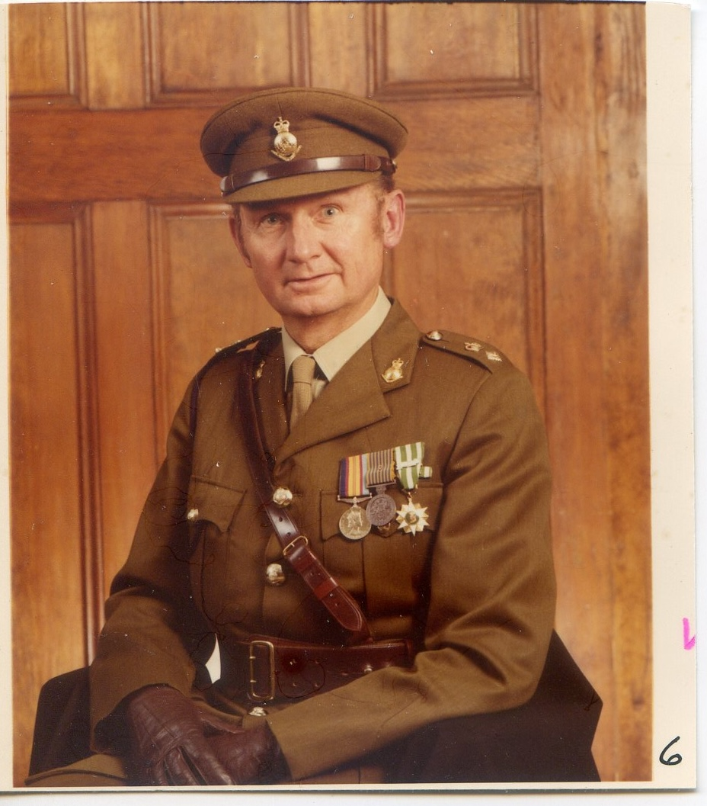
INTRODUCTION
Settling in to 2 Milman Street
Our new home occupied a corner block. It was elevated on concrete stumps six feet above ground level with car parking space for two cars underneath with a sideways concertina door from the unmade driveway to the right of the house. The concrete stumps were a relatively recent addition; like most ‘Queenslanders’1 the house had been on stout wooden stumps, probably at a lesser height. I thought it a pity that the stump height had not been seven feet to provide for more adequate headroom. The bearers resting on the stumps had not been fastened to the stumps although a hole through the top of each stump made provision for this. The War Service Home inspector required that cyclone storm anchors be fitted before the loan could be approved. We were told that cyclonic wind could lift a house from its stumps, move it sideways and dump it such that the stumps would break through the floorboards. We had anchors fitted and at that point we were able to move in. Our new home had a swimming pool in the back yard, quite a well constructed pool probably about ten metres in length with under-water lighting. It was unfenced and we realised that an early priority job would be to have it securely fenced since we had small children to protect. The previous owner gave me an effective lesson in how to maintain a swimming pool.
While we were staying with the Ryan’s in Bonney Avenue we were told that Mrs Jennette Lieutenegger who lived only one or two blocks away taught swimming to young children in her large back yard swimming pool. Mrs Lieutenegger had been an Olympic swimmer in several Olympics during the 1960s. We immediately enrolled Robert and over a three week period with early morning lessons of about an hour duration Robert at age 4 years, if not becoming a proficient swimmer, became at least ‘water safe’ (Jennette Lieutenegger’s term). He subsequently became a good swimmer.
We had known since before leaving Wodonga that Wendy’s stepmother Beryl had left Rex and he was on his own in Tenterfield. He had expressed the wish that he was ready to come and live with us and of course in our house hunting we knew we would need provision for Rex to move in with us. Milman Street provided that facility. It was a typical ‘Queenslander’ style house modified with well enclosed verandas, a large wood panelled central living room, a large front bedroom (Wendy and me), a second bedroom behind (Robert and baby Christopher) and on the opposite side of the living room an enclosed veranda bedroom (Sarah) and at the rear a rather old-fashioned kitchen (we were resolved to do something about that but never did) and leading from the kitchen a wide enclosed veranda that became our dining room and at the opposite end to the kitchen a bedroom that was to be Rex’s. The wide enclosed front veranda (the entrance to the house) was a play room and became Rex’s main haunt for television watching. Somewhere within was a communal bathroom, I am not sure where. Wendy and I had an ensuite off the main bedroom. An early task was to have the house fully fly/mosquito screened. Underneath was the laundry – a bit old fashioned but sufficient for our need and close to the clothes line. The main bedroom and the dining room (enclosed rear veranda) had been wall papered in a heraldic design, probably by the previous owners. In the bedroom the wall paper featured knights on horseback such that in most instances the horse was presents from a rear quarter. It always seemed to me that one was constantly looking at horses backsides.
As soon as our furniture and boxes of everything arrived from Wodonga and we had moved in and unpacked I took a bus to Tenterfield to bring Rex to Brisbane. I was shocked by his appearance. It was over three years since I had last seen him on that very regrettable visit at the end of my Staff College year before moving in to Wodonga. He looked ten years older. In fact Rex was only 69 years but looked 80 plus. He was uncertain in his movement and speech. We knew he had had the controversial ‘shock treatment’ in Sydney some time before and it had taken its toll. Why that happened I never knew. He had a couple of suit cases packed and that was all that came to Brisbane as I recall it. Wendy’s old home ‘The Bungalow’ had been sold to Rex’s accountant Neil Shearer at a price that Wendy felt was well below market level although I suspect that the Tenterfield housing market was not what you would call buoyant. Rex had contributed a substantial amount to the purchase of our new home, largely making up the difference between our Wodonga sale and our Brisbane purchase. I think Rex’s two years with us were happy ones for him although he must have had many regrets about past years and his life with Beryl. They were rarely if at all mentioned. Certainly his overall appearance and demeanour improved over that time until his sudden death at the end of 1976. Although undemonstrative he loved his grandchildren and it was regrettable that he did not live long enough to see the arrival of Elizabeth.
At home Rex settled in. Colour television had just entered Australia and we purchased a Sanyo which we installed in the front veranda room. Rex would spend most of his day there. Why a Sanyo amongst all the available brands? Probably because Sanyo had set up its factory in Albury. We all found colour TV fascinating and Rex thoroughly enjoyed watching sport. Our Sanyo stayed with us for quite a few years and through another couple of moves. Most mornings Rex would walk to the shops at Eagle Junction to buy a newspaper. It was an effort for him but his only form of exercise.
St Mark’s Anglican Church in Bonney Avenue became a feature of our lives. Wendy and I with Sarah, Robert and baby Christopher attended Eucharist most Sundays. Of course Chrissy Ryan was always there and although we came to know many members of the congregation I don’t thing we developed any close friendships. The only particularly close friends we had at Milman Street were Bev and Rob Fairbanks, near neighbours a few doors down from us. Robert and Darren Fairbanks, about the same age, played together, mostly at our place. Sarah was enrolled at the Eagle Junction Stare Primary School in grade 4 or 5. It was only a relatively short walk away and in 1975 there was not the imperative to drive children to school no matter how close.
The rector of St Mark’s was Canon Des Williams who lived in the rectory next door to the church. He was quite a well known churchman and theologian who had been principal (or maybe deputy principal) of St Francis Theological College in Brisbane. He was also a very fine musician (he called himself a ‘muso’) and had a very fine singing voice. As a result our Sunday morning eucharist was a ‘sung eucharist’ with the setting often composed by Des himself. His wife Merla was very supportive and played the role of the rector’s wife that is often expected by the Anglican Church and the congregation. Wendy served a year on the Parish Council and I followed her in 1976. I started to realise that the congregation was not one big happy family which both surprised and disappointed me after our experience with St John’s in Wodonga. In 1976 I attended the diocesan synod with Des Williams held at the old St Ann’s Church in Elizabeth Street. Although we were quite familiar with many of the congregation they were never more than acquaintances that we met and talked to at church on Sundays and the always lavish morning tea after the service.
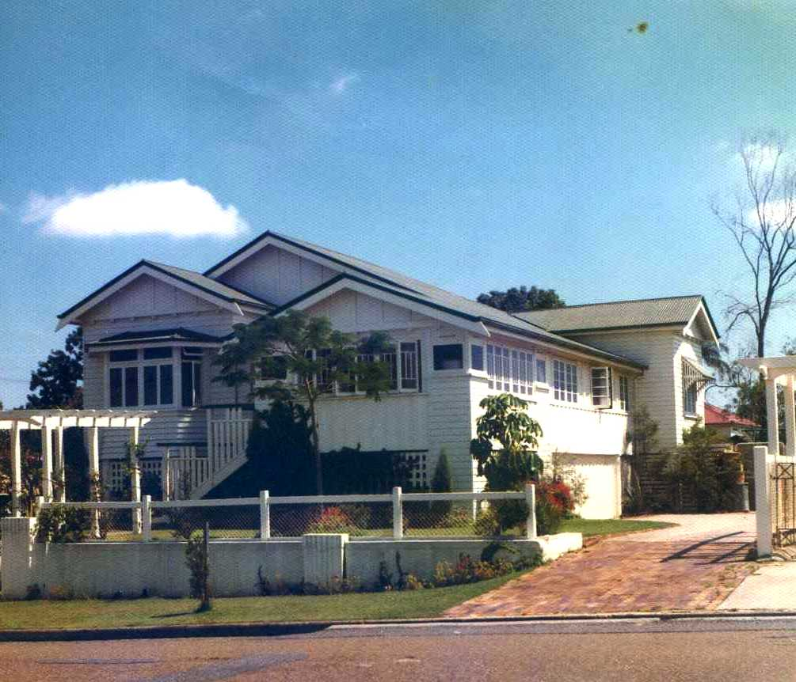
By the time I was due to depart for ‘Sandy Hill’ life at 2 Milman Street had settled into a manageable routine. A week or two before my departure I purchased two ‘labour saving’ devices – a top opening dish washer and an Elna ironing machine. Wendy had often expressed a desire for the latter and she used it but it finally developed the status of a white elephant. The top opening dishwasher was a surprise and as far as dishwashers go it was quite efficient. We had it for many years.
1st Field Survey Squadron
On arrival at 1 Field Survey Squadron at Gaythorne in the late afternoon I felt some level of disappointment. The buildings were what they always had been, two very large ordnance sheds on a half metre high raised platform separated by an open concrete area about twenty metres wide. We didn’t occupy the whole of each shed, only about a third of each with on one side our office layout and on the other the Q Store and the Map Store. None of this was new to me – I had been a lieutenant in what was then the Northern Command Field Survey Unit at the time of the Unit’s move from Victoria Barracks to Gaythorne (contiguous with the large military complex at Enoggera) in 1963. Despite the lack of appearance the Squadron complex was nevertheless very functional but in 1975 it looked decidedly run down.
The Squadron had had quite a run of major field operations in north Queensland and before that in Papua New Guinea although in the previous year, 1974, it had been home based apart from a few small jobs such as field completion in north Queensland and the major military exercise area, Shoalwater Bay and control survey in Wide Bay. These were time consuming and consumed the Squadron’s fairly limited and run-down resources. Although the final authority for mounting the 1975 operation was issued in October 1974, little preparation took place during the final months of 1974. Before leaving the School and Wodonga I was certainly aware that 1975 was to be a year of a major field commitment in north Queensland based at Cooktown involving the whole of the Squadron apart from a small base element left in Brisbane. Code-named ‘Sandy Hill’ by Army Office2 in Canberra the operation was to complete the Corps programme of 1:100,000 mapping in Queensland above the Tropic of Capricorn. Headquarters 1st Division was to be the ‘mounting authority’. Due to this inevitable late start it was not possible to effect detailed preparation for mounting the operation until well after the Christmas leave break when Headquarters 1st Division and supply staff had returned to work. The problem was compounded by the march in of a new OC (me), a quartermaster sergeant (CQMS – Warrant officer Noel Clutterbuck), a Troop Officer (Lieutenant Paul Pearson) and a Troop Warrant Officer (Warrant Officer Class 1 Bill Harvey).
I confess to feeling a degree of frustration in my first few weeks with the Squadron. In January numbers of personnel were still on leave and not due back until February. I had my personal accommodation to resolve and it wasn’t until the 21st February that my family was finally settled into 2 Milman Street Eagle Junction and we still had the situation concerning Wendy’s father Rex Weight to resolve.
Within the Squadron there was a prevailing attitude of lethargy. Captain Andrew Strachan who fell into the role of my second in command had carried out a reconnaissance of the area of operation in September and prepared an outline plan that was submitted to the RA Survey Planning Conference in October where with a few minor adjustments it received a tick. I don’t recall the outline plan being of great value when it came to planning the detail of the operation and certainly not the mounting phase. Andy was not a ‘get up and go’ person and although I liked him as a bloke and he certainly had a number of strengths. He got on well with people and had a pretty good appreciation of survey operations. He had been on the 1973 operation also based at the Cooktown camp under Major Keith Todd as OC. Keith could be a very demanding and often intolerant Officer Commanding. Andy was certainly reliable in the sense that he could carry on with a minimum of supervision.
I recall that period of my life between leaving Wodonga and finally departing for Operation Sandy Hill as being one I almost prefer to forget. Maintaining a balance between home and work was a challenge. At work I had the support of three excellent and competent warrant officers, Bill Harvey, Hans Kramer and Noel Clutterbuck. My second in command Andy Strachan was reliable but not an initiator. My two troop officers Paul Pearson and Peter Ralston were keen to learn and worked well with warrant officers Harvey, Kramer and Clutterbuck, Paul in particular; Peter needed a steadying influence. I had already nominated the roles they would play in the operation – Paul and Bill would run the Airborne EDM (Aerodist) team, Peter with Sergeant Meech the station marking reconnaissance and traversing team, Hans would undertake the Administrative WO and survey records role. I knew that Hans was disappointed with this but I assured him and he really needed no assurance that maintenance of correct and comprehensive records was of vital importance and the product and success of a survey operation was totally dependent on the comprehensiveness of the records. I was very appreciative of their total commitment and support.
It was deemed by Headquarters 1st Division that survey personnel designated for Sandy Hill needed to be trained in rappelling, that is, descending from a hovering helicopter by rope for the purpose of clearing a helipad. This was really the role of engineers and we had an engineer detachment on our Sandy Hill manning. However, a few of our fellows undertook the training and seemed to enjoy it. I do not recall our surveyors having to rappel into a site to clear a helipad although engineers may have done so. There is no mention of it in Peter Ralston’s final report although I think Peter undertook the training. He enjoyed the physical side of surveying.
Operation Sandy Hill was scheduled to commence in the field on the 1st May 1975. Due to the rather chaotic nature of the transfer of command responsibility from Major Todd to myself due to the fact that Keith Todd had taken his furlough entitlement of six months on full pay over a full year on half pay in order to complete a twenty year engagement and with that his entitlement to a DFRDB pension3. During that year the Squadron had been jointly administered by Captains Andrew Strachan and John Winzar, a very unsatisfactory and unusual situation. As a result there had been no formal handover to the two officers administering command in his absence. I was left in a state of limbo when it came taking over command and especially Q responsibility that is, for all stores and equipment. In the transfer of command responsibility a full ‘handover’ stocktake must take place if only for the protection of the incoming OC. With HQ 1st Division concurrence the stock take took place with the outgoing OC in absentia but represented by Captain Strachan. My QMS WO2 Noel Clutterbuck (also new to the job but well experienced) undertook the detail of the stocktake. It revealed a number of glaring and major deficiencies some going back as far as the Squadron’s last Papua New Guinea deployment for which ‘write-off’ action had never been taken. That this had been the case was a regrettable indictment of previous OCs going back as far as Major Ed Anderson who had commanded the last New Guinea operation undertaken by the Squadron and subsequent OCs. However, it was not my role to point a finger at my predecessors. Apparently Keith Todd was still short of twenty years by a couple of months and somehow he managed to negotiate a return to duty with the Squadron for that short period. He asked me how I wished to use him (I knew he had already set up a small photogrammetric company at Nundah). I told him along the lines that I really had nothing for him but I required him to report for duty at the Squadron each morning, sign an attendance book and then bugger off. It was a pain even having him do that but I needed to protect my own interest if ever it was queried. He generally arrived earlier than me and I had to put up with his somewhat acerbic comment most mornings.
In order to clear the stock-take and before indents could be raised for Operation Sandy Hill correct write-off action had to be taken and the Q Account cleared. This was an involved process requiring a formal investigation due to the value of many of the items to be written off. (They included an AN/GRC 106 single side-band radio that apparently had been left in New Guinea). An external investigation officer was appointed – I can’t remember who, probably from HQ 1 Division. Why that had not occurred in the past under Major Todd I had no idea. Fortunately HQ 1 Division Q staff was supportive and prepared to expedite the process. Fortunately also I had a very competent QMS in WO2 Clutterbuck who worked tirelessly on the problem and the Squadron Q Account was finally cleared before the start of the Operation. As soon as the stock take was over but before the account could be cleared some 800 indents had to be raised for the operation against a sub-account for 1 Field Survey Squadron <u>Group</u>, the composite unit undertaking the operation. The sub-account allowed the transfer of stores from 1 Field Survey Squadron to I Field Survey Squadron Group as well as additional stores from other sources including other survey units as well as vehicles from the command pool.
During my time at the School of Military Survey I had become an advocate of the planning process called Network Analysis, also called Critical Path Planning. I won’t go into the detail here of how that is done. These days it is a very computerised process but then it was a manual process that comprised a detailed flow chart showing all elements of the task, their interrelationship and interdependency, the earliest each element could start against a time scale and finally the date on which the task or project would be completed. Of course if that final date exceeded the due date then the network diagram could become the basis for compressing and paralleling some activities even if it might be uneconomical to do so. With the help of others two network diagrams were constructed; one for the mounting phase and one for the field operation. Both proved to be invaluable tools, in meeting the due departure date and then maintaining control and coordinating the field operation.
My final report on the operation states the following: The network provided the following advantages....
- All activities comprising the operation had to be carefully time estimated – hence the feasibility of the operation is thoroughly assessed. Maximum and minimum times were considered in each instance and the network drawn on the basis of maximum time available.
- All activity between overlapping and parallel activities is accounted for.
- Additional tasks of an opportunity nature can be slotted into the network at the most convenient time and in a way that will not affect the critical path.
- The network diagram provided a sound basis on which to produce the Operation Order
The Conclusion to the report stated.....In January 1975 the task of planning and mounting Operation Sandy Hill by 14 April 1975 seemed all but insurmountable. The extensive use of network analysis reduced the problem to manageable proportions and imparted confidence in those responsible for carrying out the task. The application of network analysis to the execution of the operation proved most beneficial and undoubtedly contributed to the achievement of all planned objectives.
In about March a confidant (a friendly major – SO2 Operations) told me that his SO1 (a lieutenant colonel (whom I previously found to be a ‘pain in the backside’ – a supercilious dickhead) had proposed to the Commander of 1st Division, Major General MacDonald that the size and nature of the forthcoming Operation Sandy Hill with its deployment of significant ground and air resources was far too important to be commanded by an unknown and untried Survey Corps officer and that the command level should be elevated to lieutenant colonel from the Army’s elite. Whom he had in mind I never knew – perhaps himself. I was to be given a slot at the Commander’s Friday morning briefing in a couple of weeks and I should make maximum use of it to allay any concerns. That I did. By then I had my Operation Order well under way and I lifted the essentials from that and had them drafted up on large sheets of paper in coloured inks such that they could be seen from the back of the briefing room – there was no digital projection in 1975. I put together my script and practised it such that I could present a very clear account of how the operation would proceed. I had been given twenty minutes at the end of the Commander’s briefing. It seemed to go over well and I heard nothing more of my being usurped.
OPERATION ‘SANDY HILL’
A personal reflection
Operation ‘Sandy Hill’ was the only field survey operation of any significance that I commanded. Many of my contemporaries commanded far more – year after year in fact. But somehow all of these had by-passed me although I had never tried to avoid or sidestep such a responsibility. Field survey operations in remote areas impose a heavy responsibility on those who command them. Sandy Hill was perhaps the largest mainland operation ever undertaken by the Corps.
I retain a copy of my final report on Operation Sandy Hill and without wanting to be tedious I will transcribe some of that report into this narrative to give an idea of its extent. It was the only major field operation I ever commanded and as it turned out remarkably successful. I would only claim a small amount of credit for its success. My ‘foreword’ to the report reads as follows..
At the time of preparation of this report it seems likely that the Airborne EDM equipment MRB-3 ‘Aerodist’ will not be deployed again on major field operations in the foreseeable future having been overtaken by Doppler satellite position fixing techniques. Thus an era of field activity spanning more than a decade is brought to an end; an era that drastically changed the nature and concept of field survey operations.
Hither-to field survey operations had been mounted almost un-noticed by the Army at large. Personnel in the field rarely numbered more than thirty and were predominantly RA Svy supported by the occasional individual attachment. Although air support for survey operations was not new, it had previously rarely exceeded a single aircraft.
The advent of airborne EDM radically changed this concept. Almost overnight ‘Survey’ operations became ‘Army’ operations in which RA Survey personnel were confined mainly to their technical duties and at a higher level provided command and control of a group comprising sometimes in excel of 100 personnel spanning many arms and services. Army Aviation and/or RAAF became major partners in survey operations, frequently out-numbering all other Survey and attached personnel.
Success of such operations became totally dependent on the ‘prima donna’ of survey equipment, the ‘Aerodist’. When functioning well it was capable of great achievements impeded only by the ability of the group to support it logistically.. When not functioning the operation would bog down completely and very little could be done to offset the resulting loss of production. Planning and mounting of survey operations became a major activity requiring a greater level of managerial expertise than ever before to coordinate the multitude of activities necessary to effect success. Such expertise was not always available and many lessons were learnt the hard way.
Operation Sandy Hill was mounted and executed with the advantage of the accumulated expertise acquired and disseminated over a decade by both RA Survey and other Corps personnel. This together with the near faultless performance of the Airborne EDM equipment ’Aerodist MRB3’resulted in a high level of success in all phases.
This final report brings together the reports of several individual officers involved in the operation. Their criticisms offered in good faith are accepted and commented upon by OC 1 Field Survey Squadron Group and are presented in this report in the hope that young RA Survey officers may accrue something of benefit from them...
‘Aerodist’
I should at this point say a word about ‘Aerodist’ for the possible non-survey reader. Aerodist was an adaptation of the ‘Tellurometer’ electronic distance measuring system. It enabled the measurement of very long lines, up to 100 kilometres in length where the terminals were not intervisible. In the simplest situation a remote Tellurometer station would occupy each terminal orientated in the direction of the opposite end of the line (a compass bearing was sufficient). The aircraft with the master Tellurometer station aboard then flew across the line roughly central between the two remote stations measuring continuously in both directions, the sum of the two measurements being recorded onto an on-board computer. Thus the shortest sum recorded was at the instant of the aircraft crossing the line. An accurate onboard altimeter recorded aircraft height above sea level. Similar altimeters at each ground station also established height above sea level. The onboard computer (a Hewlett Packard PDP 8e) crunched all this data to give a horizontal sea level distance between the two stations to an accuracy tolerance of one part in ten thousand. Both remote Aerodist stations and the master station on board the aircraft were specifically designed for Aerodist use. They were not the normal ground stations used to measure lines where the terminals were inter-visible. A network of measured lines forming the sides of geometric figures allowed position in geographic coordinates (latitude and longitude or eastings and northings) to be calculated.
Departing Brisbane
On the 7th April a forward element of the squadron comprising Captain Andy Strachan and Warrant Officer Noel Clutterbuck departed for Cooktown by air to take over the tented camp at the end of the Cooktown air strip. The camp had been installed to a scaled standard in 1973 for the survey operation carried out in that year by Major Keith Todd as OC but in 1974 the camp had been moth-balled under a locally appointed caretaker arrangement. In accordance with army scaling the camp comprised the new issue 11foot by 11 foot with combinations of 11 foot by 22 foot tents for accommodation with floorboard sections; a comprehensive kitchen facility which I do not remember much about; an all-ranks dining marquee and separate officer’s/sergeant’s mess marquee and other rank’s (corporals/sappers and the equivalent) mess marquee. A limited canteen was established with sales of beer permitted to be consumed only in the mess marquees, that is, not in the accommodation lines. The advance party had been responsible for the erection of most of the tentage, certainly the marquees but generally the accommodation 11x11s were progressively erected by the groups that occupied them.
An second advance party of 28 personnel with vehicles and stores departed Brisbane 26 April by rail to Cairns then road to Cooktown with Lieutenant Peter Ralston in charge and the main party of 14 personnel by rail to Cairns and bus to Cooktown a week later.
The army aviation component from 1st Aviation Regiment commenced deployment to Cooktown from their base at Oakey by C130 (Hercules) aircraft to Cairns then to Cooktown by the Kiowa Light Observation Helicopter (LOH) from 14 April. Stores including a huge canvas covered hanger known as a Salzman Hanger were moved to Cooktown by LCH (Landing Craft Heavy). In all ninety Aviation Regiment personnel served at Cooktown from 14 April to 24 June. These personnel were then rotated with the same number of personnel from the 162 Reconnaissance Squadron from mid June until the end of the operation. These numbers include individual replacements during the period of the deployment. This turnover of personnel imposed a huge burden on our very limited administrative staff.
It is not my intention to go into internal deployments within the operational area. There were of course many. Forward bases were established progressively at Horn Island (27 April to 9 June, Croydon (15 April to 19 June), Weipa (27 May to 9 July), Mornington Island and Burketown (17 July to 10 August). Sub-bases formed at Coen and Edward River Mission. These forward bases and sub-bases were occupied progressively by several functional survey groups; the EDM Traversing Group operating in the Torres Strait out from Horn Island, the Reconnaissance and Station marking and Recovery Group; the Airborne EDM Group. Operating out of our main base at Cooktown were smaller groups on laser terrain profiling, air photography and field completion (of maps resulting from earlier fiend operations – 1972 and 1973). That alone gives an indication of the complexity of Operation Sandy Hill.
I flew civil air to Townsville on the 22nd April and over-nighted at the Kissing Point officers mess, not far from Garbutt Airport which then was a civil/military airport. Checking into the mess and sitting around the swimming pool and bar were the assortment of helicopter pilots from 1st Aviation Regiment ferrying the six Kiowa helicopters to Cooktown, maybe also the Pilatus Porter fixed wing aircraft. There were nine in all including Captain Brian Sullivan their OC. I was to be a passenger on one of the Kiowa the following morning. The trip from Townsville to Cooktown was one I will never forget. It was a brilliantly blue and sunny day. We flew along the coast at an elevation of about 1000 feet with the Great Barrier Reef to our right. I wore headphones and was fascinated by the interplay of communication between the Kiowa and at times ground control towers. We landed at Cairns to re-fuel then on to Cooktown. On that northern stretch the reef is quite close to the coast and at 1000 feet very spectacular. We arrived at the Cooktown airfield about mid-afternoon.
The camp
Andrew Strachan was there to greet me in his usual dour and unenthusiastic way. I was led to an 11x11 tent at the end of a line with a stretcher bed and a small folding table. It was near the communication tent that contained our AN/GRC 106 single sideband radio – a very powerful form of communication. Andy was a competent operator and had good voice procedure. Mine wasn’t bad – I had done enough of it in strict military situations.
I considered my personal accommodation less than appropriate and the following day spied a nearby concrete slab about the right size to take an 11x 22 tent. I had it set up with a couple of much larger tables ‘FS’, a pin board of sorts and of course a low level stretcher for sleeping – I had little choice about the latter. That arrangement was to be my home for the next five months.
My personal transport: I was more than a little surprised on arriving in Cooktown to find an army ‘Mini Moke’ amongst our vehicles. It was near new and in excellent condition. It surprised me because at one stage during the mounting phase I had inspected the listing of vehicles we were taking, a lot of long wheelbase Landrovers and several International P3 – 2 ½ ton trucks and saw no mention of a Mini Moke. Andy said with a smile – ‘It’s yours Boss’ and I loved him for it! It was sometimes used by others, mainly Noel Clutterbuck, but it was recognised as my ‘escape’ vehicle and no one used it without checking with me first.
Operation underway
The operation got underway with the establishment of a forward base at Horn Island on 27 April and the measurement of lines by EDM (Tellurometer). Lieutenant Peter Ralston was the Officer in Charge of the Horn Island operation supported by a very competent survey team. The Horn Island component of the operation was the most difficult due to weather and related conditions and was not completed until mid July. I include here three paragraphs from my operation report:
‘The control traverse using Tellurometer and theodolite in the Torres Strait was an expensive operation in terms of time and aircraft hours. Four LOH (Kiowa) were used throughout this phase from the forward base established on Horn Island. The strength of the Horn Island forward base was in the order of 43 personnel and maintenance support and resupply for this number from Cooktown was heavy.
Adverse weather persisted throughout the period making theodolite observations difficult. Intervisibility between terminals was continually interrupted by rain squalls and sea haze. This condition was caused by the South East Trade season which produces strong south east winds and blustery, squally rain showers. It was generally not possible to use heliographs over most lines and the Hilger Watts observation light was not strong enough to punch through the haze. The acquisition of the Lucas ‘Flamethrower’ quartz iodide lights from 8 Field Survey Squadron (at Popindetta in New Guinea) gave some measure of success and the task could not have been completed without these. It is recommended that this type of observing light be introduced to all field survey units as standard equipment.
The slow progress of the Observation Group on Horn Island caused a departure from the planned schedule of forward base deployment in that a sub-base only was established at Weipa to support station reconnaissance and marking from that location. This decision was later regretted since the sub-base at Weipa became logistically unmanageable. The lesson here is to consider all the factors before departing from a sound plan and not be rail-roaded by immediate considerations. The situation was not resolved until the airborne EDM group moved from Croydon to Weipa and established a forward base at that location. The observation group was re-inserted to Torres Strait (Horn Island) for a further six days in July in an attempt to complete outstanding angle observations. Sufficient was completed to give an acceptable position close on the Torres Strait traverse.
The EDM (Tellurometer) equipment functioned effectively throughout the period despite adverse conditions. Vibrations from wind seemed to cause crystal drift at times and signal strength seemed to be affected by the heavy sea haze.. Of the eleven sets held only three became unserviceable’.
As stated the Torres Strait operation was certainly the most difficult component of Operation Sandy Hill both technically and logistically. It was 650 kilometres north of our main base at Cooktown and beyond the endurance of our Kiowa helicopters requiring a mid flight refuelling in transit. In the Pilatus Porter (the most uncomfortable plane I have ever flown in) it was a slow trip of near three hours. The chartered ‘Queenairs’ were much better – faster and more comfortable but of course, they had specific roles to fill; for one the Arodist operation and for the other, laser terrain profiling. Our logistic re-supply problem was never more difficult than to the Horn Island forward base. Perhaps in reflection part of that problem lay with Lieutenant Peter Ralston who, although managing the job technically well enough did little to allay the discontent of his team on issues of ration re-supply, the almost impossibility of providing fresh rations and was less than supportive of my role as OC. The remainder of the operation, the airborne EDM, station clearing, marking and recovery (very hard work – many stations on the western side of Cape York Peninsula are heavily timbered), air photography, laser terrain profiling, all proceeded very smoothly.
I visited all of the forward bases at least once and sometimes twice. I visited the Horn Island base soon after its establishment staying one or two nights. I found those visits to be rewarding and certainly in the instance of Horn Island improved my relationship with Peter Ralston. Whenever I observed a difficulty either technical or logistic I had some success in its resolution. The problems experienced with the Horn Island base did not appear to exist, at least to the same extent, in the other forward bases. Lieutenant Paul Pearson’s airborne EDM bases with Warrant Officer Bill Harvey were generally better managed. Paul, no doubt under the influence of Bill took a more realistic approach to the inevitable logistic problems associated with remote area survey operations.
Not wishing to dwell on the organisational or technical side of Operation Sandy Hill – which is covered in detail in my Final Report dated 31 March 1976 and I still retain a copy that my family may peruse should they ever chooses to do so – I will tell something of my personal life in Cooktown.
Cooktown – as I saw it!
The old town had quite an extraordinary history from the rollicking lawless days of the Palmer River gold rush; probably the most notorious and brutal of all of Australia’s 19th century gold rushes. Cooktown was the closest entry to the Palmer River gold field. Thousands of diggers from all over the world including ship loads of Chinese made their tortuous way south to Palmer River from Cooktown. The warlike Aborigines made the diggers less than welcome. Cooktown prospered with substantial public buildings in the main street, Charlotte Street, which led from the Mulligan Highway and Endeavour Valley Road. The streets behind Charlotte Street were filled with an assortment of humpies, sly grog shops, opium dens, and brothels, anything else you could name. After the Palmer River gold had run out about the time of the First World War Cooktown fell into disuse. During World War Two it had some sort of re-emergence with several thousand United States and Australian troops stationed there although the majority of the civilian population was moved out because of the Japanese invasion threat. By the 1960s apart from the substantial buildings in Charlotte Street the remainder of the town was largely deserted, occupied by an assortment of squatters. Many of the wooden shanties had been destroyed by fire or cyclone. In 1970, the year of the Captain Cook bi-centennial, Queen Elizabeth visited Cooktown. The impending royal visit caused a huge clean-up to take place. Old humpies were destroyed and removed; the streets were tidied and trees planted although the permanent population remained low, probably not more than a hundred within the town area.
That was the Cooktown I found when I arrived there in 1975 – still ‘cleaned up’ since the Queen’s visit a few years before. There wasn’t all that much there; the more significant buildings in the main street; not much in the way of shops – most people did their buying in Cairns by telephone (I presume) or some other method. Supplies weekly generally came by sea on a small coastal freighter the name of which I have forgotten. There was a butcher’s shop that caused me a great deal of angst and as it turned out unpopularity. There was the post office/telephone exchange run by a very nice lady who was very generous with trunk telephone calls from any of our army fellows including myself when I made my regular call home on a Sunday evening. We had an exchange connection to our internal telephone net, limited of course to three phones one of which was mine. Cooktown had one restaurant of any repute run by a couple of ‘gay’ fellows. The word ‘gay’ had not been coined at that time so I guess they were known as a pair of ‘poofters’.
Cooktown had no church of any kind – Roman Catholic or protestant – although there were a couple of dilapidated old church buildings. On a regular basis, maybe once a month a priest might visit. We had visits by the Reverend Tony Matthews, the Anglican flying padre. Tony was very well known and quite a character. Some years later he was appointed Bishop of Far North Queensland. There was another German fellow who claimed to represent some way out branch of the Lutheran Church. I met him on at least one occasion and I found him very extreme and difficult to talk to. I am not sure of my purpose in meeting him – perhaps it had been suggested that I do so by someone. Perhaps I thought he might conduct the occasional service at our campsite but having met him I dropped that idea. In any case, Tony Matthews disabused me of that notion. Tony thought him a crackpot and he was probably right. The Clerk of Courts (I think that was the title) ran the office at the court house. A magistrate visited Cooktown once a month; however, the Clerk was able to hear small infringements such as disorderly conduct and drunkenness in the street. Our Clerk of Courts was a religious man and ran a weekly bible discussion group. I attended a couple of these – looking for something to do in the evening and found the discussion quite intelligent. It was also attended by the German and I will comment on that again later.
Cooktown personalities
Cooktown had many characters, not a few with backgrounds that defied being looked into. It paid not to ask too many questions. At some point during my time there I made friends with the local police sergeant, Ray Marchant. He lived there with his wife and on at least one occasion I accepted an invitation to dine at his home – a well constructed weatherboard house with wide verandas provided by the Queensland Government. Having met a number of Queensland police sergeants over my early years in Queensland I considered Ray Marchant a ‘cut above’ and so was his wife. I think he had children at school in Cairns or maybe Townsville. There was a small primary school in Cooktown catering mainly for Aboriginal children. Ray comes into my life a little later in my time in Cooktown.
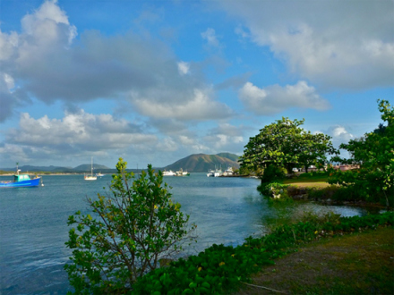
A couple who lived in quite a splendid home on a lower foothill of Mount Cook were Jim and Betty Waters. They were very hospitable people and locally renowned for their parties. In retrospect and probably at that time also I had some misgivings about them; how they acquired their apparent and ostentatious wealth and millionaire’s home with magnificent views over the Cook River. One needed a four wheel drive vehicle to drive up the winding steep gravelly track to their home but then, most people in Cooktown had four wheel drive vehicles. Jim as far as I knew had for many years been the DCA (Department of Civil Aviation) representative at the Cooktown airstrip. Jim had dabbled in tin mining and at one time he showed me his cache of tin ore in a pile of drums in a back shed. I wasn’t sure whether I was supposed to be impressed or not but I certainly wondered about it. Tin commanded a high price as a refined ore and I guessed the ore I was looking at would have been worth a good few thousands of dollars. The parties mostly comprised sitting around in a circle on their large terraced area overlooking the Cooktown harbour and one by one telling ‘jokes’ – what in my school days would have been called ‘dirty jokes’. The women attending were as bad as or worse than the men. They were so bad that I really wanted to withdraw into the darkness and not be noticed. Each joke or story would produce uproarious laughter – I found it incredible. Some two years later when I was at the Army Survey Regiment in Bendigo I had a message from Jim and Betty Waters to say that they were touring south and they knew I was in Bendigo at a place called Fortuna and could they visit on a Saturday. I must have replied but having no desire to make their acquaintance again (I think I was conveniently away) I passed them on to the weekend duty staff. Clearly they were well looked after in the Sergeants Mess because I had a thankyou letter from them soon after saying what a great day and evening they had had and what a wonderful place Fortuna was. Then came the rub – Jim was interested in acquiring some land in the Bloomsfield area and could I help him with maps and other relevant information. I filed the letter away and I don’t think I responded.
Other Cooktown residents
Cooktown harbour in the Cook River estuary was a haven for all sorts of craft, both sailing and motorised. Many would arrive and stay for a season living aboard and then depart for goodness knows where. Many were large and expensive craft and occasionally I might meet up with the owner but only on one occasion was I invited aboard for both a look and a meal. The yacht in question was not large, maybe ten or fifteen metres in length and had what the yachties call a ‘reverse chine’ hull which made it very distinctive. It was owned and sailed by an elderly couple who seemed to hate each other. I met them at one of Jim and Betty’s evenings and for some reason they cottoned on to me and the invitation was forthcoming. I arranged to meet them at a small jetty at 6 o’clock one evening and I was taken to their yacht in a small rowboat. They had gone to a great deal of trouble and a nice meal had been prepared – on the boat or somewhere else, I was not sure. It was quite cramped aboard and my hosts fought with each other all evening. I was pleased to leave about 9.00 pm again in the small rowboat. I think they were planning to sail north to New Guinea; whether they did I never knew but they headed off one night or early morning not to be seen again.
I am not sure how I came to meet my next couple whom I will call John and Marie Harris. I think John may have popped into our camp site at the airfield to find out what we were doing in Cooktown. John was a British Army retired major (Electrical and Mechanical Engineers REME) who had somehow managed to immigrate to Australia and live at Cooktown. He was anxious for me to visit him at his home which was a few miles south of Cooktown on Quarantine Bay. I was keen to do so since I had been told that Quarantine Bay had the nearest sandy beach to Cooktown with gentle surf. The Harris’s lived in a bungalow house they had built (I think) only a hundred metres or so back from the Quarantine Bay beach adjacent to a very clear water creek that tumbled into the sea across the beach. The bungalow was of simple design, a couple of bedrooms, a living room and kitchen with a very wide ground level veranda on all four sides. It was surrounded by heavy rain forest, partly cleared on the beach side to give a view of the sea. A reasonable vehicular track connected them to the coastal road to Bloomfield. Marie Harris taught at the small Cooktown primary school where most of the children were of Aboriginal or part Aboriginal parentage. Marie was intolerant of the Aboriginal children and clearly had no understanding of them or their circumstance. She hated Cooktown and their isolated location and badly wanted to return to England – they too were unhappy people. I called on them a few times, only when I went to Quarantine Bay for a swim. John was quite good company and liked to talk Army. He had no employment but owned a large dinghy for ocean fishing which he left hauled up on the beach. I think they finally departed Cooktown and their idyllic bungalow a year or two later.
Darcy (Jack) Gallop and Anzac Day
Wendy had told me that Darcy Gallop was in Cooktown as the local government administrator. How did Wendy know that? She had nursed with Robbie Gallop some years before in nursing training and had kept in touch; however, Robbie and Darcy had later separated. I recall going to dinner in their home in Brisbane sometime in the early 1960s. I think at the time Darcy was still serving in the RAAF, a pilot but was talking then of resigning his commission to do what I cannot remember. As Local Government Administrator of the Cook Shire Darcy was quite a powerful person in the community. And why did the Cook Shire have a government appointed administrator and not a local government council appointed by election? Such as happens from time to time in Queensland the local council had been sacked by the state government for inefficiency and some nefarious practice with council funds. In fact Darcy’s father had been appointed administrator – I think his name was Joe – and Joe was a well known Cook Shire identity and a pretty tough man. On his sudden death his son Darcy took on the role. Perhaps because ‘Darcy’ was not considered to be an appropriate sort of name in far north Queensland, Darcy was known locally as Jack but I will stick with Darcy.
Darcy called on me soon after my arrival. I wouldn’t call him a particularly friendly person; somewhat reserved. He acknowledged our earlier friendship which was really one between Wendy and Robbie. I don’t think I ever regarded him as a personal friend. However, he probably realised that my presence in Cooktown with 120 soldiers was a situation he couldn’t ignore. I continued to see him from time to time, maybe at our campsite but more often at semi-social occasions. We never discussed our personal life although he probably mentioned his separation with Robbie. I think he had taken another partner whom I may have met although I don’t think she lived in Cooktown. I had the impression that Darcy spent a good deal of time in Cairns.
No doubt his early visit had a further purpose. I arrived on the 23rd April and Anzac Day was the 25th. I hadn’t given Anzac day any thought and most likely it couldn’t have been further from my mind. Darcy asked me to give the Anzac Day address at the small downtown memorial. Darcy had undertaken that role for a number of years previously and he was anxious to ring in a change at least as the opportunity presented. We would not have a padre to do the religious component of the service (Tony Matthews the flying padre had commitments elsewhere) and our German non-credited Lutheran fellow whom I hadn’t met at that stage would say a prayer or two. I reluctantly accepted the challenge and having a couple of years before given an Anzac Day address at Yackandandah in Victoria I immediately set about putting some appropriate words down on paper, covering all the usual things but with some emphasis on Vietnam. It all went well with just about all of Cooktown in attendance. I got the impression that no matter what I said no one would have taken much notice.
Problems of rationing
The initial costing out of an army ration in Cooktown on which our survey ration allowance was based had been carried out by a supply officer from 11 Supply Battalion in Brisbane. With a few additional add-ons the figure he came up with proved to be grossly inadequate. The allowance was not paid to individuals but into a pooled account. Because our numbers fluctuated frequently and almost unpredictably and the total amount paid into our account had to be based on actual numbers of individuals day by day, the amount of paperwork involved was horrific. We always seemed to be behind the eight-ball. The army is always quick in adjusting downwards but slow in adjusting upwards. The amount prescribed initially was \$2.49 per man per day and after a lot of lobbying HQ 1st Division a minor upwards adjustment was made towards the end of the operation.
I had been allocated an administration officer from the Ordnance Corps, Captain Ian Rafferty. It was a difficult job and it took some time for Ian to find his feet in a situation he was totally unfamiliar with. That he did so was of considerable credit to him. Rationing was his responsibility and one that incurred a lot of criticism from the forward field bases, much of it very unfair. I gave him as much support as I could although on one occasion having just returned from the Horn Island forward base I took him to considerable task over a rationing foul up that could have been avoided. But of course rationing was not his only responsibility. Others included pay and allowances for all personnel including aviation, fuel for both motor transport and aviation (several varieties) and a range of other minor administrative functions. He was supported by our own orderly room staff. My personal relationship with Ian Rafferty tended to sour as the operation progressed and I regretted that but could do little to redress the problem.
The Butcher’s Shop Incident.
Soon after I arrived in Cooktown acting on the advice of our ration clerk I called on Cooktown’s one and only butcher. I was appalled by what I saw. There was no screening and flies were everywhere. The butcher was a rough looking fellow wearing a dirty blood splattered tee shirt, stubby shorts and no shoes. He did his own slaughtering in a paddock behind the shop (so I learnt) and the floor of the shop was a mess with off cuts strewn around in the saw dust. It was an unhygienic mess to say the least and I directed that in future all our meat was to be ordered through a shipping agent and supplied from Cairns. Resupply from Cairns on the packet ship was generally weekly give or take a day or two and of course it was more expensive than the local supplier. I found it hard to believe that the 11 Supply Battalion officer could base the meat component of our meagre ration allowance on the local supplier given the condition of his shop. Our hygiene sergeant also inspected the shop – we may have gone together – and he convinced me that I should report the shop to the State Health Department representative in Cairns. I did so thinking that he would simply order the butcher to clean it up, fly screen it and generally meet the prescribed standard but the outcome was that the shop was closed down either directly by the health officer (I think he called on me at the camp) or perhaps the butcher decided it was too much trouble to comply and pulled out. Word quickly circulated in the town that the Army had closed their butcher’s shop and for a while I had to bear the opprobrium of that happening. However, some thought it was high time and had long bought their meat in Cairns.
Day by day
It’s an odd thing that the officer commanding a field operation often finds days when there is little to do. In my field days as an NCO with Major Jim Stedman I would often find Jim sitting in his tent reading a book. The operation would be proceeding smoothly and why worry? Certainly I had Operation Instructions to prepare and issue from time to time and of course the radio schedules to run daily, usually in the early evening but there was no point in sitting on the radio hour after hour listening to the general communication traffic throughout the day. I knew that there were some who did that (so I had been told) but I also knew that it could blanket the initiative of those in the field to know that ‘Sunray’4 might be listening in to everything that was communicated. Some would disagree on that point. Of course the radio remained active throughout the day with our Signal’s Corps assigned radio operator (Corporal Morfitt) close by. Andy Strachan tended to keep close at hand and if a ‘get Sunray’ call came in I would be there pretty smartly. Andy was quite capable of acting for me should I not be at main base. If I was to be away for a day or half a day even, the Sig Operator would advise the forward bases. Generally the forward bases would be kept abreast of my movements. I visited the forward bases probably monthly or at other times when there was a perceived problem but kept that pretty low key. Certainly there were times of some personal anxiety, often caused by the late arrival of one of our helicopters – a late afternoon scheduled arrival extended into early evening or later. The ‘whop-whop whop’ of an approaching helicopter at 8.00pm or 9.00pm could be a very welcoming sound. Fortunately that was a rare occurrence.
Movies at Cooktown
In fact there were no public movies in Cooktown – if there had ever been a picture theatre it had long gone. But as with most of the larger survey operations we had a 16mm projector and a ready supply of movies forwarded to us at no cost by Army Amenities, two or three at a time. Before each field operation, if we were taking a movie projector we would always have a couple of our fellows (always base wallahs) undertake the day long course in projection. The initial selection of movies was made by I don’t know who and they were all of the salacious variety such as ‘Alvin Purple’ or shoot-ups with very little story. I finally got to look at the list and suggested we submit another one, a surprisingly popular decision. I wasn’t the only one to find the original choice rather less than entertaining. I think we projected onto a screen in the other ranks mess marquee although I recall watching a movie outside but cannot recall how we did that. An immediate problem when we first arrived was that our projector did not have a ‘cinemascope’ lens and all of the movies ordered were in wide angle cinemascope. Not to be daunted our movies nevertheless were projected and watched in ‘skinny-scope’. Finally with a new batch of movies that included a number of ‘adult westerns’ – very popular – we were issued with a cinemascope lens and fortunately our projectionists were trained in their use. After a few weeks I noticed a number of locals turning up – word was getting around. Some I thought less than desirable to have hanging around the camp. I passed that thought on to Noel Clutterbuck and whatever action he took it was successful. I did not want our camp to become a public viewing house and I was aware that the Army Amenity licence that allowed them to have access to all recent major movies prohibited public viewing.
Private Des Neagle
Friendships across the rank structure within the army are rare but can happen. I had such a friendship with Private Des Neagle, one of the most remarkable persons I have known. I first became aware of Des at the School of Military Survey at Bonegilla in 1972. Des was there initially to train as a surveyor but as it turned out he lacked stereo acuity, then an absolute requirement for all army surveyors5. Des was on the unalloted list (in other words, filling in time). Des had been a student of theology in a Roman Catholic seminary leading to priesthood but opted out after three years and decided to join the army. Having substantial secondary education he was allocated to Survey. Des had met the woman of his life and wanted to marry. I recall having some discussion with Des at that time since he had the option of discharge from the Army if he so chose. In the event he decided to ‘soldier on’.
I was more than a little surprised when Des arrived at Cooktown in mid July to undertake clerical duties in our orderly room – I think replacing our previous orderly room corporal. Des after training as an orderly room clerk had been posted to 1st Field Survey Squadron. Sergeant Clive Moule was our orderly room sergeant in Brisbane. He had been there quite a while and was probably the best I ever encountered. Anyhow, Clive was able to bring Des up to speed with some of our field procedures but it was a big ask to put Des into that situation at such an early stage of his army career.
Des was still very directed to his Christian life and continued to see his ultimate calling being in the Roman Catholic Church, albeit, as a married man. Roman Catholic priests are of course unmarried and ‘celebrate’, at least during their period of priesthood.
A Bible reading group
I have already mentioned the Bible reading group run by the Clerk of Courts which I occasionally attended. I suggested to Des Neagle that he might like to attend and of course he indicated an interest. Somewhere in late July or August an opportunity arose and we drove in together in my Mini Moke. The usual group were there including the German ‘Lutheran’ and I introduced Des to the gathering. The usual format followed – a text from the Old Testament followed by similar from the New Testament, usually a more obscure paragraph and then discussion. Des made some contribution and then after a bit he suddenly broke into ‘tongues’. This is something I cannot pretend to understand. The words are unintelligible and are claimed to be direct from God speaking through the speaker. The German Lutheran then translated some sort of simple message. Immediately following the group broke up and little was said over the usual cup of coffee and biscuit.
Des talked to me about it as we drove back to our camp. He said it often happens to him in an intense religious moment. I found it fascinating but I could not understand it. Sometime later I discovered the group had not met since. It had broken up in disarray. I told Des this and his comment was rather disarming – ‘God’s will – so be it’. I left it at that.
Post script:
Des and I remained friends throughout our remaining years to this day. Wendy and I attended his wedding to Lorraine soon after our return from Cooktown. Des transferred to the newly formed Army Welfare Unit and rose to the rank of warrant officer. Leaving the Army after twenty years service he continued in similar work with the Roman Catholic Church. He and Lorraine had three sons, David the oldest went into the Army as an officer cadet, was commissioned and at an early stage in his career served in East Timor (Timor Leste) with the peace keeping force under General Cosgrove. He had a bad experience and resigned his commission soon after. Des of course with his own military experience did everything he could to help him, beyond what any other parent would or could do. It was in Des’s nature to do so. An incident that occurred at Cooktown illustrates this. An engineer sapper in the tree clearing team went AWOL and returned to Brisbane. Apparently he had heard of his wife’s infidelity and he was heading to Logan to sort it out. He did – he shot and killed her lover; was convicted of murder and received a long sentence in the infamous Boggo Road gaol. After our return from Cooktown Des visited him and continued to do so for many years, until his release I think. That was Des. Des re-entered the Church as a deacon a few years ago. Wendy and I attended his conferral. At the time of writing this account Des is serving as a deacon in the north west of Western Australia at Beagle Bay.
Air support and aircraft hours
I have included this lengthy extract from my final report to give some indication of the complexities of managing a large field operation in remote Australia, using the technology available in 1975.
Operation Sandy Hill was very dependant in all of its phases on air support in various forms. The only major activity undertaken which did not use air support was the airborne EDM operation in the Croydon Millungera area which was fully road vehicle mounted. It was probably not coincidental that most trouble experienced with remote Aerodist equipment was during that period and considerable time was lost in replacing unserviceable remote equipment by road. During the remainder of the operation on Cape York Peninsula and the Wellesley Island group the Airborne EDM was fully supported by our Kiowa Light Observation Helicopters (LOH).
The following survey task hours were flown by support aircraft during the operation.
LOH — 1150.2 hrs
Porter — 321.2 hrs
Caribou — 513 hrs
Queenair VH-FWG (Airborne EDM) — 288 hrs
Queenair VH-RUU (laser APR) — 81 hrs
The hours shown were in direct support of the survey operation and do not include continuation (training) flying, maintenance support for service aircraft or ferry time outside the area of operation. In this latter instance ferry time from Cooktown to Mornington Island would be recorded against the survey task but not ferry time from Townsville to Cooktown or Mornington Island to Townsville.
LOH
Aircraft deployed – 6 x LOH to maintain four on line
Supporting units
25 April – 30 June – 171 Operations Support Squadron based at Oakey
1 July – 31 August – 162 Recce Squadron based at Townsville
Aircraft serviceable – Throughout the operation very good serviceability was maintained. There was never a problem maintaining four LOH on line and at most times five or six were available if required. During the operation two engine changes took place in the field and two changes of rotor blades. In each instance the maintenance action was carried out expeditiously and the operation was not affected. There were no accidents involving LOH.
Aircraft hours allocated – The initial allocation of LOH hours required for Sandy Hill proved to be grossly inadequate. I Field Survey Squadron outline plan for Operation Sandy Hill submitted to the 1974 Planning Conference (Survey) requested 1200 hours of LOH support. This was somewhat arbitrarily reduced to 800 hours at the conference without any apparent reduction in work load. It became very apparent during the Torres Strait phase of the operation that the total task could not be completed within the hours allocated. The situation was exacerbated even further by the requirement that 400 hours be used during the period to 30 June 75 and 400 hours during the period after 30 June without carry over. An additional 260 hour were requested for the May-June period and this was approved by HQ Field Force Command on 9 June. On 18 June 75 this figure was reduced to 197 hours and then on the 24 June a further 50 hours were re-allocated. It was not possible to effectively use this final allocation since personnel had been redeployed or stood down for rest. 627.4 LOH hours were flown to 30 June 75.
Postscript:
This uncertainty in allocated aircraft hours and the embargo on using hours allocated for the period after 30 June caused the operation to shut down for a week. If nothing else it provided a useful break for many of our field fellows and taking advantage of a servicing flight to Townsville for one of our Caribou, quite a number took a few days leave in Cairns (or maybe Townsville). The all returned on the return flight a few days later.
Pilatus Porter
Aircraft deployed:
1 x Porter in support of the survey task – primarily for identification photography
1 x Porter for aviation maintenance support
Supporting Unit – 173 General Support Squadron based at Oakey
Aircraft serviceability – Good serviceability maintained throughout the operation
Aircraft hours allocated – 300 hours were allocated to the survey task (150 to be used before 30 June and 150 after 30 June) and this was adequate. Hours allocated to aviation maintenance support appeared to be insufficient, especially during the 1 July to 31 August period.
Postscript:
The Pilatus Porter would be the most uncomfortable aircraft I have ever flown in as a passenger. I had a return trip from Horn Island to Cooktown on the Porter, about a three hour trip – they are very slow – and was physically sick on landing taking a couple of hours to recover.
Caribou
Aircraft deployed – 1 x Caribou for general support
Supporting Unit – No 38 Squadron RAAF
Aircraft serviceability – Caribou serviceability was generally good
Aircraft hours allocated – 500 hours were allocated split 250 hours either side of 31 June. Again no carry over was permitted. An additional 20 hours were requested and granted at the end of June. Hours were critically short during the last two weeks of June when the Croydon forward base was moving to Weipa and the facility to fly the Caribou against the hours allocated for July/August would have been economical and sensible.
Charter Aircraft
Both Queenairs flew well within their hours allocation and with a minimum of unserviceability.
General comment on air support
Without the heavy level of air support assigned to the operation, the objectives could never have been met. OC 1 Field Survey Squadron at times had misgivings concerning the overall aviation strength and in particular the size of the aviation workshop deployed. However, the excellent serviceability record achieved would seem to justify this level of maintenance support.
Movement of aviation personnel in and out of the operational area could be a logistic burden. 171 Operations Support Squadron changed over most of their personnel in late May early June and then the Squadron was relieved in place by 162 Recce Squadron during the first week of July. 162 Recce Squadron made frequent changes of personnel between their Townsville base and Cooktown. Good reasons were given to justify the movements; however, they were not without considerable administrative effort by the Group’s meagre administrative resources. Working relationships are disrupted and it takes time for new pilots to familiarise with the area and the job.
Delays in response to requests for allocation of additional LOH aircraft hours caused considerable concern and inhibited effective planning and deployment. The jumble of hours at the end of June was totally disruptive and caused a chaotic situation to develop.
The LOH proved to be an effective aircraft for survey operations. It is not a good load carrier. Maximum payload for maximum endurance is in the order of 560 pounds and this is reduced to 400 pounds when fitted with floats. Bulk is frequently more critical than weight since all loading is internal other than when a cargo sling is used. Nevertheless, provided load restrictions are planned into the operation and hours allocated accordingly, payload is not critical. 500 pounds is quite a useful load and allows an Aerodist remote station to be inserted in three lifts. The LOH can be fitted with cargo hooks or hoist and/or floats and/or long range fuel tanks. The choice is often a point of fine decision and sometimes the aircraft with the right equipment is at the wrong location. Hoist was used frequently on the operation for initial insertion of a station marking and clearing team and on existing survey stations where targeting only was required both insertion and extraction was carried out by hoist. All members received hoist training at Enoggera before the operation commenced. A hoist operator must be carried if the hoist is to be used; hence a further weight penalty. (Somehow the Brisbane Courier Mail came to hear of our activity and sent a photographer to take a look. A photo of one of our fellows being hoisted up or down appeared in the CM the following morning – front page I think)
The Caribou gave excellent support throughout. Although at one time plagued by unserviceability the response of the RAAF in recovery of the unserviceable aircraft was commendable and appreciated. The four crews fitted into the operation very well and were at all times helpful and cooperative.
A major problem with aviation fuel was caused by imperfect drum linings. Forty four gallon fuel drums are lined with a grey plastic material fused with the inner surface of the drum. Helicopters are fitted with a device called a ‘metal detector’ which detects any solid matter floating in the fuel. Red lights flash in front of the pilot and he must immediately put the chopper down on the ground wherever that may be. We were having a high number of metal detector incidents occurring requiring a servicing mechanic with his tool kit to fly to the downed helicopter to check out the problem. Of course if the problem proved to be a metal fragment it would be serious indicating a major engine failure. But a tiny piece of plastic, a slither, may not be a concern but the pilot could not take a chance on that. The outcome was that large quantities of aviation fuel (avgas) had to be condemned and replaced. The contract supplier sent a fuel expert to investigate. He found that more than half the drums he tested were contaminated. All stocks were replaced, yet another irritating and time consuming problem. We had fuel dumps at a number of remote airstrips throughout the Cape. In fact most contaminated drums were simply marked and left insitu for the supplier to worry about.
A visit by a General
In early June I had a phone call from Colonel Stedman to advise that Lieutenant General John Whitelaw was to visit, staying for a likely three days. I had known General Whitelaw6, not in a personal sense but militarily, since I was first commissioned as lieutenant and appointed to the then Northern Command Field Survey Section under Major Snow. Lieutenant Colonel John Whitelaw was then the GSO 1 Operations in Northern Command and responsible for survey operations. Spencer Snow usually took me with him to Colonel Whitelaw’s office for weekly briefings on the progress of our preparation for the forthcoming north Queensland operation and, I recall, Operation ‘Blowdown’, the simulated atomic bomb explosion in rainforest at Iron Range. Colonel Stedman made it clear to me that I was to give the General VIP treatment. He was to see all parts of Operation Sandy Hill – forward bases – and be thoroughly and professionally briefed on the whole operation. He was not to be left sitting around the Cooktown base twiddling his thumbs. As if I would do anything other than that!
General Whitelaw duly arrived at Cairns and we picked him up in one of our aircraft; I can’t recall whether it was a chartered Queenair or a Pilatus Porter; more than likely the terrain profiling Queenair. I don’t recall whether I went to Cairns to meet him; I think I would have done that. General Whitelaw’s original Corps was Artillery and he had an interest in old artillery pieces, canon and the like. Colonel Stedman had warned me that the General would be interested in the Bamaga location where he believed that an original ship’s canon associated with the old Jardine homestead existed. I had three days to fill in with the General departing Cairns on the late afternoon of the third day. We mostly travelled by helicopter, on the first day calling at the forward base at Coen to be greeted by Paul Pearson and Bill Harvey and then on to Bamaga where we called at the homestead occupied by a caretaker, a modest elevated residence and certainly not the original Jardine homestead. The caretaker, a part Aboriginal man was helpful and did indeed take us to an old canon but clearly it was not what General Whitelaw expected. We visited the cemetery which certainly contained a few interesting headstones and then walked down to a beach in a small inlet. There was Jardine’s grave, about a metre square with a small headstone. We were told that Jardine was buried standing up at his own request – a reflection on the sort of man he was.
On day two it was west to Burketown and the station reconnaissance party and Lieutenant Peter Rallston. Some sort of date confusion had occurred and Peter had apparently expected us the following day. As a result our General was confronted by fellows mostly with several day’s growth of beard and a campsite that was far from tidy. Although I was somewhat embarrassed by that, General Whitelaw made no comment and appeared to enjoy the visit.
> In the evening of the night before his departure day I had arranged a buffet dinner for all who could attend. The purpose of it was to give the General an opportunity to meet some of the Cooktown locals. It wasn’t meant to be a lavish affair although it turned out to be rather more lavish than I expected and I felt a little guilty at that given that the forward bases were on rations that were far from lavish. Nevertheless, they had a cash supplementary allowance with which to buy local fresh food when the opportunity arose. Captain Ian Rafferty who was responsible for the rationing of the entire operation had somehow worked a miracle in providing the spread. It contained a lot of seafood, crabs, prawns and baked fish with lots of salads. I was certainly aware that seafood, especially shell fish could be obtained very economically in Cooktown and our cooks, as Army cooks do, rose to the occasion. It certainly wasn’t an ‘only officer’ affair. All within our base camp were able to attend and I believe most did. Then there were the locals and I have no idea how many. I had sent out some twenty invitations to all those with whom I had contact or who had offered us hospitality but there were many more than that. I noticed with some interest that the two ‘gay’ fellows who ran the down town restaurant were there and of course many of our fellows had dined in their restaurant. The order of dress for the occasion was civilian and our General turned up in a light grey suit with tie and handkerchief in his breast pocket. I had known General Whitelaw to be a smart dresser. Town’s-people all addressed him as ‘General’, somewhat impressed by his military rank. After all, nearly all addressed me as Major; why not General? Cooktown was a very military conscious town, a carry-over of the war.
Colonel Stedman had also told me that our General had a broad interest in the history of the Cape and related areas, even meeting some of the interesting characters on the Cape. I am not sure how I came to meet Captain Percy Trezise and it may have been when we had our forward base on Mornington Island. That in itself is a story I will tell a little later. Percy Trezise was Cairns based but he had an ongoing interest in Laura, a pretty town some 100 kilometres west of Cooktown on what now seems to be called the ‘Peninsula Developmental Road’. Percy Trezise was an artist of some repute but became less famous than some of the Aboriginal artists that he encouraged and supported, in particular Goobalathaldins (Dick Roughsea) from Mornington Island. His undying interest was in the Aboriginal rock art that abounds in the Laura region in what is known by its Aboriginal name, Quincan country. Percy undertook to map the many rock art sites. Carbon dating has shown many of these to be at least 40.000 years old. Laura had been connected to Cooktown by rail but that line was closed during the 1960s and all that remains is an impressive rail bridge over the Laura River. Percy was very opposed to opening the rock art sites to the public since those close to roads had been badly vandalised but there were many more. Percy was always Captain Trezise from his days as an airline captain with Ansett Airways.
I contacted Percy Trezise in Cairns and arranged for him to meet General Whitelaw in Laura. The meeting took place on the General’s third and last day with us in Cooktown. The plan was to fly to Laura by helicopter, visit those remote Aboriginal art sites by helicopter and after lunch proceed south to Maytown on the Palmer River old gold digging location and then finally to Cairns for the General’s flight back to Canberra. All of this duly happened and he like me was astonished by what Percy was able to show us, all of which had never been seen by the public. After a lunch at the Laura hotel provided by Percy (which he owned) we continued on to the Palmer River and Maytown, very much in ruins and the old gold diggings heavily overgrown by timber. We poked around picking up bits and pieces and I suppose absorbing the history of the place. Part of the fascination was the incredibly rough but fascinating country over which we flew, bearing names like ‘Battle Camp Creek’ and ‘Murder Pass’; names that reflected the tumultuous history of the Palmer River diggings and the hazardous trek to the diggings from the nearest port – Cooktown.
We left Palmer River and flew south and east to Cairns, crossing the Atherton Tablelands and then, our young pilot (I can’t recall who that was) following the seaward course of the Barron River took us over the very lip of the Barron Falls where there is a drop-off of 350 metres . One instant one is flying a little above ground level and the next instant the coastal plain is five hundred metres below, a somewhat exhilarating experience. I noticed our General looked a bit grim faced for a moment, but only for a moment. I didn’t go into the airport with him since our helicopter would have had to shut down and I think we were in a very temporary parking space. It was then for me and our flying machine to return to Cooktown. Perhaps we re-fuelled at Cairns before departure.
One suggestion made to me by our pilot, perhaps the night before, was that we might drop in to the Cedar Bay hippie colony and give our General a local experience of a different kind. I vetoed that one although I learnt soon after that quite a few of our pilots in ferrying between Cairns and Cooktown were in the habit of dropping in to Cedar Bay. These ferry trips and other flying undertaken by 1st Aviation Regiment and later by 162 Reconnaissance Flight outside our allocated survey hours, was called ‘continuation’ flying which I think meant some sort of training and came under the authority of their respective OCs, Captain Brian Sullivan and later Major Tom Woodley. I learnt of these little escapades probably in early July and tackled Brian Sullivan (or was it Tom Woodley) about them. They were both very nice blokes and always very cooperative and expressed surprise, real of feigned, I am not sure which, however, he assured me that if indeed that had been happening such infringement would cease forthwith. I could only assume that they did although two years later when I was in another posting knowledge of these nefarious visits came to the attention of Army Office in Canberra and I was asked to comment. I did so briefly and factually and heard nothing more of it. I assumed that this was against the background of the Queensland Police raid on the Cedar Bay colony in the early hours of the morning from the sea and the air that destroyed the camp and took the unfortunate hippies into custody charged with trespass and drug possession – they were growing their own pot!
I have heard some officers of the Survey Corps decrying having senior officers visit them on field operations, absorbing their time and often precious flying hours. That has never been my own position and at least to the extent possible and without making it too obvious have used such visits to achieve a worthwhile outcome. This point is made in the following extract from a demi-official letter I received from General Whitelaw some weeks later...
My dear Bob,
I must apologise for having taken so long to clear my correspondence after returning from Queensland, but it becomes a matter of priorities.
A number of the matters we discussed have been taken up in appropriate branches etc. Down here, in particular:
a) The matter of Ralston’s conversion to regular commission is in hand with D Svy and I have given it a jog along.
b) SOP’s (Standing Operation Procedures) for mounting and conducting survey operations should be available next year.
c) The issue of contaminated fuel has been drawn to the attention of Materiel Branch.
d) I fully expect that the matter of aircraft hours limiting activity in the change over period between financial years will not occur again.
e) I have taken up the matter of the need for specialised vehicles to be ‘in gauge’ for MRT aircraft. (It will be years before this can be fixed) Tell your supporting aviation squadron.
f) The matter of packing lists for the hanger has been raised with materiel Branch – also tell that to your OC aviation squadron workshops!
I enjoyed every part of the visit with you, not least being able to celebrate your Corps Birthday..........Thank you for looking after me so well. I will see you in my next appointment I have no doubt and will look forward to pursuing some of the historical aspects of Queensland.....Regards, John Whitelaw
In a hand written PS General Whitelaw added:
.....the matter of additional aircraft hours to my knowledge is not resolved and I will chase it.
A radio discussion with my Director, Colonel Jim Stedman
In May 1975 Colonel Jim Stedman became the Director of the Royal Australian Survey Corps following Colonel John Nolan. Jim had been Assistant Director with operations responsibility during Colonel Nolan’s directorship. In late June on a Sunday morning the Sig Op poked his head into my tent with a ‘get Sunray’. To my surprise it was Colonel Jim Stedman coming through from Weipa where he had dropped in I think heading to Port Moresby and then to 8 Field Survey Squadron at Popondetta and maybe on to Indonesia. We had quite a long discussion, verging into personal at times but mostly job oriented. For many years I had had a close friendship with Jim Stedman but always within the bounds of military etiquette. He was never ‘Jim’ to me. There were no officers in the Corps whom I held in higher regard.
In fact quite a hiatus had developed at Weipa at the time of Colonel Stedman’s visit. To explain this from closer to the event I will include here extracts from my demi-official letter I wrote to him later in July.....
I was delighted to be able to talk to you during your unscheduled but very welcome visit to our forward base at Weipa on the 22nd June 1975. I understand that the situation was somewhat chaotic at Weipa on that day and for several unavoidable reasons which i am sure were very obvious to you but on which i would like to briefly elaborate.
At the time of your arrival on Saturday PM only two Caribou lifts of stores had arrived at Weipa from Croydon and although it was intended to follow these up with four others in rapid succession the grounded LOH (Kiowa helicopter) 100km north of Weipa meant that the Caribou had to be diverted to Cairns and Cooktown to move servicing crew engine and investigation team to the recovery site Hence Paul (Pearson) had an Army descend upon him before the bulk of his accommodation stores had arrived from Croydon. The situation was complicated further by the requirement to move the remnants of the Reconnaissance Station Marking Group to Coen. It had previously been intended to move this sub-group to Edward River Mission as a back-load on the return trip to Croydon. The arbitrary reduction in in LOH hours we suffered on the 18th June caused me to delay moving the Reconnaisance Station Marking Group to Edward River Mission until after the 1st July. The convoy for Croydon arrived late afternoon on the 21st June and I am assured that by Sunday evening the campsite was reasonably well established.
I am motivated to offer this explanation partly by the fact that the Major in charge of the LOH investigation team passed a highly critical report of the forward base campsite to me. I investigated the report and visited the base a few days later to find an effective and functional forward base under good control.
The demi-official went on to commend my two junior officers, Paul Pearson and Peter Ralston, recommending that Peter’s short service commission (that included National Service) be translated to permanent commission at the completion of four years service and be given the opportunity of civil schooling.
Other visits
Some visits were quite unexpected. On one occasion a past Survey Corps member of World War 2 called in with his wife. It was Charlie Prince who in his post WW2 career had risen to a senior position in the Central Mapping Authority of NSW. I had previously met Charlie when I was on my civil secondment to the NSW Lands Department in 1968. Charlie and his wife were on their north Queensland adventure in a very well equipped camper van. He had retired from the CMA a few months before. They stayed for lunch and then set out on the Developmental Road to Laura. I had misgivings about the suitability of their campervan to handle the rough roads to the north and more especially the river crossings, however, Charlie was a surveyor and I could only assume he knew what he was doing. A day or two later they were on their way back, Charlie having badly burnt his hand on the spirit stove in the van. Apparently it had spilt fuel and burst into flames. He had had some medical attention at Coen but he was in quite some discomfort. They continued south and presumably he recovered.
I looked up from my desk one morning and to my surprise there were Jim and Chrissy Ryan (an elderly couple and personal friends) climbing out from one of Cooktown’s decrepit taxis. I had no idea of their intention to visit Cooktown; first Cairns where they had spent a few days and then on to Cooktown; by what means I cannot recall. I think my presence in Cooktown may have had something to do with it but anyhow, they made the most of their time and booked themselves on the local tourist minibus for a good look around the old town and surrounding area. History told by tourist bus operators is never less than colourful and usually incorporates a good deal of imagination. They had been taken to Black Mountain on the outskirts of Cooktown, a quite interesting pile of stone because that is what it is – a huge pile of granite boulders two or three hundred feet high. There is hardly a spadeful of earth anywhere on it and only the occasional small shrub surviving in a small pocket of earth. At that time tourist operators would regale their patrons with stories of how desperados had made their hidey holes within huge caverns that lay within and under the outer layers of boulders and of other poor unfortunates in an attempt to penetrate and explore beneath had become lost and perished. These were the stories that Jim and Chrissy had brought to me after a day of touring. I had explored the mountain myself when things were quiet on the operational front and could see no evidence that anyone could possibly enter into the mountain behind the granite boulders; there were simply no gaps large enough for this to occur and I had heard similar stories years before about a similar boulder mountain south east of Charters Towers. I may have had a meal with Jim and Chrissy that evening in the local restaurant – I do not recall where they stayed – but made no attempt to disillusion them of all they had heard. They left Cooktown the following morning, I think in a commuter aircraft to Cairns.
Tin mining and history
Tin mining had been a significant part of the economy of far north Queensland especially in the late nineteenth century – possibly until World War 1. It succeeded Palmer River gold and tin ore was exported out of Cooktown. It was probably our past DCA representative and frequent party host Jim Waters who had suggested that I might be interested in seeing one of the old tin mines south of Cooktown. He had described it to me and it sounded interesting. On a quiet day, weekend perhaps with a small group we set out to a location twenty or so kilometres south of Cooktown. Perhaps we took Jim with us as guide. It was certainly in ‘tiger’ country, somewhere east of Bloomfield I think – heavy dense rain forest with many rocky outcrops. The track in was little more than a goat track and at one stage I had misgivings about proceeding further. Perhaps we did so on foot. We were following a watercourse that flowed westward, very stony and with crystal clear water. Finally making the headwater of the creek which seemed to bubble out of the ground there it was; the massive machinery of a tin mining operation, heavily overgrown and rusting. How did the early miners get such huge equipment into place in the late nineteenth century? Only by bullock teams one would assume. There were many examples of such enterprise in far north Queensland; enterprise that had long since disappeared, at least it had in 1975.
Black humour
I penned the account below for our Survey Association Bulletin some time back and drop it in here. Assistance to the civil community probably justifies the action but of course the Army would have preferred me to follow the appropriate channels.
I guess this might be called ‘black humour’ – one could not help having a chuckle at it.
Not infrequently on survey operations something out of the ordinary would take place. Such was the case in 1975 on Operation Sandy Hill. 1st Field Survey Squadron Group had been based at Cooktown undertaking an Aerodist control operation covering Torres Strait, Cape York and the eastern side of the Gulf out to and including the Wellesley Island Group. It was a big five month operation and as it turned out the last of the Aerodist operations that technique succeeded by Doppler Satellite control in 1976. For Sandy Hill we had in support a substantial air contingent that included six Kiowa helicopters, each capable of carrying four passengers.
During our five months in Cooktown we had become part of that rather strange Cooktown community – many fine people but also many that one might wonder about. Anyhow, we certainly had a good relationship with the police sergeant Ray Marchant who was a gentlemanly sort of bloke and seemed to appreciate the better things of life.
Quite late in the Operation I was approached by Ray as to whether we could helicopter him and his constable to a small island south of Lizard Island. I discussed it with the Reconnaissance Squadron OC, Major Tom Woodley and he agreed that the allocated ‘continuation’ flying hours could cover it and he gave the job to one of his younger lieutenant rotary wing pilots. It was a beautiful sunny day and the young fellow accepted the mission with alacrity, little knowing what he was in for. The flight was carefully planned to avoid flying over long water stretches – island to island or reef to reef and there are plenty of them north of Cooktown so without reference to higher authority I acceded to the police sergeant’s request.
Now, what was the purpose of the trip? A quite well known but highly controversial lady – author I think – had disappeared at sea some weeks before attempting to travel from Cooktown in a very unsuitable craft (something approaching a coracle with a make-shift sail I was told) to somewhere; just where no one knew. Her missing had been a newspaper story at the time but gradually it fell away and the papers lost interest. Anyhow, a light charter aircraft coming into Cooktown had reported seeing something that looked like an upturned dinghy on the beach of this islet surrounded by an assortment of clothing and other objects one such object resembling a body. Our police sergeant accompanied by his constable duly arrived at our campsite – the Cooktown air strip – and after a few preliminaries, off they went. They had with them lunch packs put up by the police sergeant’s good wife as was common practice at that time.
To appreciate this story a few words about the constable are necessary. He was a locally recruited braw north Queensland lad of solid build. At the time in Queensland police sergeants assigned to the State’s outposts were able to recruit locally one or two constables and train them on the job to serve locally – nowhere else. This young fellow was well known around Cooktown’s few streets partly because he rarely wore shoes with his uniform. He had feet the size of dinner plates and perhaps no issue police boot would go anywhere near fitting him. Apparently he was good at maintaining law and order on the streets of Cooktown. Anyhow, off they went and our ops officer, Captain Andy Strachan kept a listening watch on our base AN/GRC 106 set.
Our Aviation lieutenant reported in soon after landing. They had found the wrecked dinghy and there was a body lying a short distance away from it along the beach. Nothing more was said on the radio so I assumed that all was proceeding smoothly and the rest of the story unfolded on the subsequent de-brief at Cooktown.
It seems that the body was in appalling condition having been part eaten by wild pigs. Our police sergeant had had the foresight to take with him a body bag in which to bring back the remains. Both the sergeant and our admirable aviation lieutenant had lost the contents of their stomachs on the beach after their first look at the deceased lady. The stench was beyond belief, even more when disturbed. But did it worry the young locally recruited constable – not at all. He had been brought up on disposing the carcasses of cattle found dead in water holes and human remains were no different. He somehow got the poor lady into the body bag and the next problem was how to bring it back to Cooktown – in the chopper of course but where to put it? The Kiowa could take three passengers, four at a pinch. Our police sergeant occupied the passenger’s seat next to the pilot and the constable the rear seat – next to the body bag slumped next to him! Body bags are built to retain the contents but apparently not the stench and that was considerable. Heading back the flyer reported in to the AN/GRC 106 and any of us who have listened in to radio scheds from a flying helicopter would be aware of the strangely wavering quality of the receiving voice – almost a drunken sound. But this time it was especially so, to the extent that I asked Andy to ask the lieutenant if he was OK. ‘Yes’ his wavering voice replied. On arriving at Cooktown the body bag was quickly removed and plonked into the back of the police utility and after a few quick words with Sergeant Marchant off it went. Our quite green looking aviation lieutenant then told his story. Apparently on the way back he had glanced over his shoulder at the constable sitting in the rear seat next to the body – he was eating his cut lunch! It was almost too much! I don’t think he appeared for dinner that night and I doubt that he could have ever dined out on that story.
There is a post-script to this account. I became aware that some of our young chopper pilots were dropping into the hippy colony at Cedar Bay for whatever purpose on their return trip from Cairns. I passed that bit of info on to Aviation OC Brian Sullivan who put an end to it.
A year later in 1976 our esteemed Cooktown police sergeant was in charge of the early morning police assault from the sea on the residents of Cedar Bay, destroying all their hootchies and belongings. It was a highly contentious action and I suspected that Sergeant Marchant would have found it somewhat distasteful. Perhaps his young locally recruited constable enjoyed it immensely. One year later when I was at the Bendigo Regiment I was asked by way of telephone call or signal (I can’t recall which) what I knew of the Cedar Bay ‘drop-in’ practice. I responded that I had become aware of it and put an immediate end to it. I had left any disciplinary action to the Aviation Regiment. Nothing more was said.
A Corroboree on Mornington Island
The following is another account I wrote for the Survey Corps Association Bulletin of an incident that was perhaps the most unique experience of my time in Cooktown. Disregarding some possible duplication of what I have already written I include it here as part of my story. The story is written in the third person which might sound to the reader a little odd but it served the purpose of its previous publication.
Sometimes on field survey operations in remote parts of our country survey units might be called upon to render ‘aid to the civil community’ as army parlance puts it. Such aid could only be given with the express permission of the superior headquarters and only after all circumstances surrounding the request were fully detailed and documented. Usually the cost of the aid would be charged against the appropriate government department and normally the request in the first instance would be made by that Department through the Office of the State Premier. Canberra clearance most likely would also be required. Clearly all this would take considerable time and the old army principle applies – that it is sometimes more expedient to say sorry than to ask permission.
This was the case in 1975 when the 1st Field Survey Squadron was engaged on a five month (7April – 17September) operation extending survey control for 1:100,000 mapping from the Torres Strait south and west into the Gulf hinterland and the Wellesley Island Group. Operation Sandy Hill was the last mapping control operation to use the airborne ‘Aerodist’ technique of electronic distance measurement and trilateration to establish coordinate values of photo control points. The technique was used extensively from the mid 1960s to 1975 to establish control for the 1:100,000 map series with vertical control provided by laser terrain profiling. While terrain profiling continued for some years after 1975, Doppler satellite positioning overtook the Aerodist technique totally in 1976.
However, this brief is not about survey techniques and the foregoing is provided to explain why we were there. Our main base was at the end of the very dusty airstrip at Cooktown with forward mobile bases established as the operation progressed at Croyden, Weipa, Horn Island, Coen, Edward River (now Pompuraaw), Munburra, and finally Mornington Island in the Wellesley Island Group. Two field teams were deployed, first the reconnaissance, station marking and clearing team (11-25 July) followed by the Aerodist measuring team (29July – 13August). The former established themselves on Mornington Island at the airstrip adjacent to the large and well developed Aboriginal township followed by the Aerodist team as the operation came to an end. The Aboriginal community on Mornington Island was still managed as a mission station by the Presbyterian Church. Squadron OC, Major Bob Skitch visited the base in July towards the end of the reconnaissance phase. Met by OIC Lieutenant Peter Ralston, Peter told Bob of a major health problem on the island for which the Mission manager had asked for Army assistance. The Aboriginal community was wracked by gastro enteritis especially the children for whom the disease can be fatal. Bob called on the Mission Manager who confirmed the situation. The small community hospital was full to capacity with increasing numbers of new cases occurring daily. He explained that gastro enteritis is a fly borne disease and if the fly population can be reduced within the settlement the prevalence of the disease would decrease. Despite repeated requests over the previous two weeks, the Queensland Government had not responded. Bob was sufficiently convinced and certainly flies were in great and annoying abundance.
The chartered Queenair aircraft was due to arrive for the final Aerodist phase of the operation. Bob radioed the Cooktown main base and requested that it make haste and bring forward two swing-fog machines and drums of ‘knock-down’ fly spray, carried as camp stores. It arrived with the fly abatement equipment the next morning and a small volunteer team undertook to fog the community, particularly the accommodation lines. The settlement housing comprised several rows of bungalow style houses elevated some feet above the ground. They seemed well maintained and reasonably tidy although several families lived in each, some camped in the space beneath the house.
The fogging team went into action and over a two day period fogged everything in sight with knock-down spray including the inevitable refuse tip. The nozzles of the fogging machines were poked into windows and doors of houses and a good dose of insecticide inserted. The Aborigines themselves were very supportive of the operation and clearly had been briefed by their elders. The relationship between our survey soldiers and the community, especially the children was warm and friendly from both directions. Within 24 hours the number of cases of gastro enteritis presenting at the hospital started to fall. Within three days there were no new cases – a remarkable and serendipitous outcome.
The fogging episode came to an end when on the Saturday we were honoured with a quite remarkable evening corroboree staged by Lindsay Roughsea that depicted in dance the whole operation; the children falling over with the gastro complaint, the arrival of the aircraft (a whole squadron in fact), the fellows swinging the swing fog machines, flies falling to the ground and the children rising up well again. The dance was accompanied by the music of didgeridoo, rhythm sticks and wailing chorus, the latter two provided by the women. At the conclusion each member of the survey team was presented with an article from the art shop, some a spear, others a boomerang and some a painted didgeridoo.
Bob was able to justify the man-hours spent fogging against the need to prevent the gastro infection spreading to the troops of the reconnaissance and incoming Aerodist teams although there were some raised eyebrows amongst the senior staff of Headquarters 1st Division in Brisbane. Bob was never sure whether news of the event ever reached Survey Directorate but felt quite sure that if it did the recently appointed Director, Colonel Jim Stedman, would have approved.
Two quite remarkable Aboriginal elders were resident on Mornington Island. These were the Roughsea brothers, Lindsay (Burrod) the older and Dick (Goobabithaldin). Lindsay was without doubt the cultural leader of the community, a choreographer of all forms of Aboriginal dance and corroboree. Dick, was an acrylic artist, who, under the tutelage of a well known North Queensland identity, Captain Percy Tresize, himself an authority on Aboriginal rock art, specialized in presenting tales of the ‘Dreaming’ for children. The art and craft shop in the settlement had a huge array of genuine articles – decorated spears, boomerangs and bark paintings of Aboriginal creation, some of the latter done by Lindsay Roughsea. The shop was frequented by our soldiers most of whom finished up well armed with spears and boomerangs. (Who could forget young ‘Shep’ Shepherd and his boomerang throwing prowess?)
Two quite remarkable Aboriginal elders were resident on Mornington Island. These were the Roughsea brothers, Lindsay (Burrod) the older and Dick (Goobabithaldin). Lindsay was without doubt the cultural leader of the community, a choreographer of all forms of Aboriginal dance and corroboree. Dick, was an acrylic artist, who, under the tutelage of a well known North Queensland identity, Captain Percy Tresize, himself an authority on Aboriginal rock art, specialized in presenting tales of the ‘Dreaming’ for children. The art and craft shop in the settlement had a huge array of genuine articles – decorated spears, boomerangs and bark paintings of Aboriginal creation, some of the latter done by Lindsay Roughsea. The shop was frequented by our soldiers most of whom finished up well armed with spears and boomerangs. (Who could forget young ‘Shep’ Shepherd and his boomerang throwing prowess?)7
Although not mentioned in my earlier writing I was given a bark painting by Lindsay Roughsea, the cultural leader of the Aboriginal community on Mornington Island. Lindsay (his Aboriginal name was Burrod) was a very fine looking Aboriginal man; tall with piercing dark eyes, a mane of pure white hair with a beard to match. But it was his younger brother Dick (Goobabithaldin) who had won fame as an artist and a writer of children’s stories that he illustrated and had published (thanks to Percy Tresize). Dick was unfortunately given to over imbibing in alcohol in its various forms (Mornington Island was meant to be a ‘dry’ island at that time). Dick’s paintings were very different to Lindsay’s art work. Lindsay was not prolific and his work was on bark, dot painted of Aboriginal cultural motifs. Dick’s paintings depicted scenes mostly to illustrate his children’s books. I knew little about Dick other than what Percy Tresize had told me and that was more than a little disparaging due to Dick’s grog habit. In one of my contacts with Wendy, maybe telephone or voice tape Wendy had apparently become aware of the Dick Roughsea children’s books with the quite beautiful illustrations. Perhaps I had mentioned that there was a Dick Roughsea framed painting for sale in the Laura Hotel and Wendy suggested I might buy it if the opportunity presented. I decided that I would make the opportunity. Sandy Hill was nearly over and I had a chat with the OC of the supporting aviation squadron who told me he had plenty of ‘continuation training’ flying hours left and offered to fly me across to Laura. We did so one afternoon and I bought the painting. It depicted an Aboriginal man looking from a headland across a bay. The colours are strong in acrylic paint and if ‘primitive’ in style they nevertheless well depict a scene. The painting remains in family possession.
Operation Sandy Hill came to an end with the extraction of all elements from Cooktown by the 17th September 1975. I departed Cooktown on the 5th September. Extraction was in itself quite an operation, involving the LCH HMAS Labuan, Caribou airlift of personnel, rail Cairns to Brisbane of both personnel and vehicles and for a few, civil air Cairns to Brisbane.
Photos - Cooktown 1975 and Operations Sandy Hill
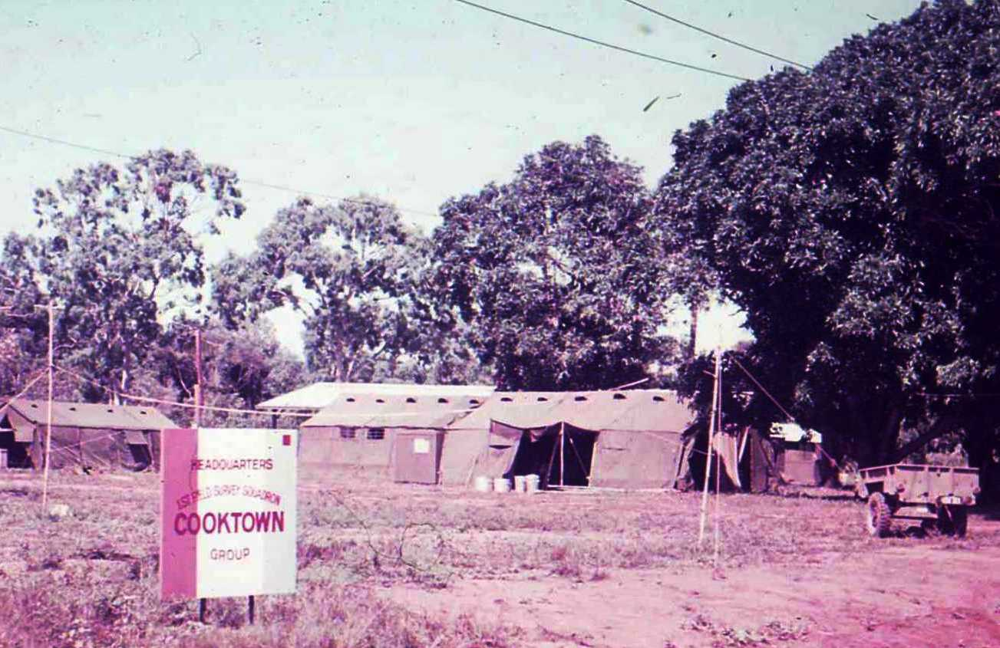
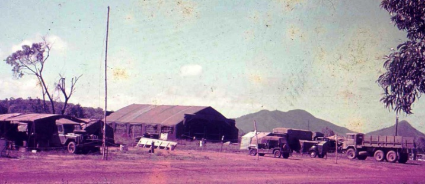
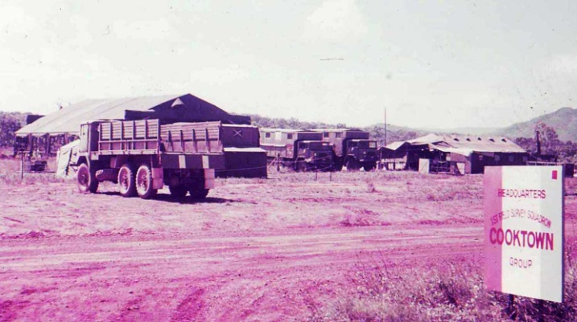
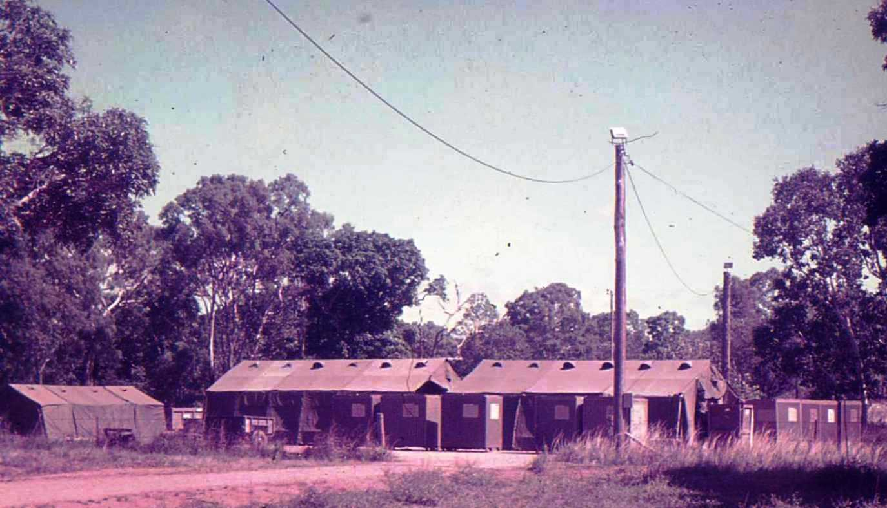
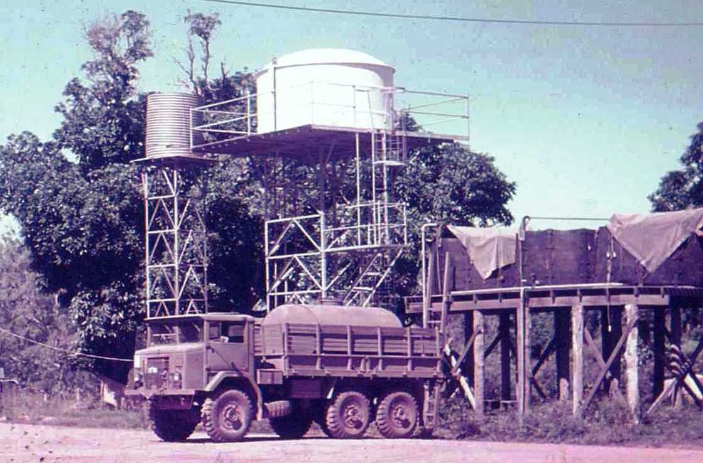
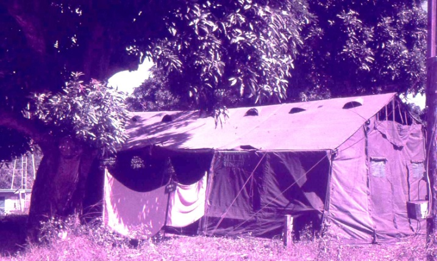
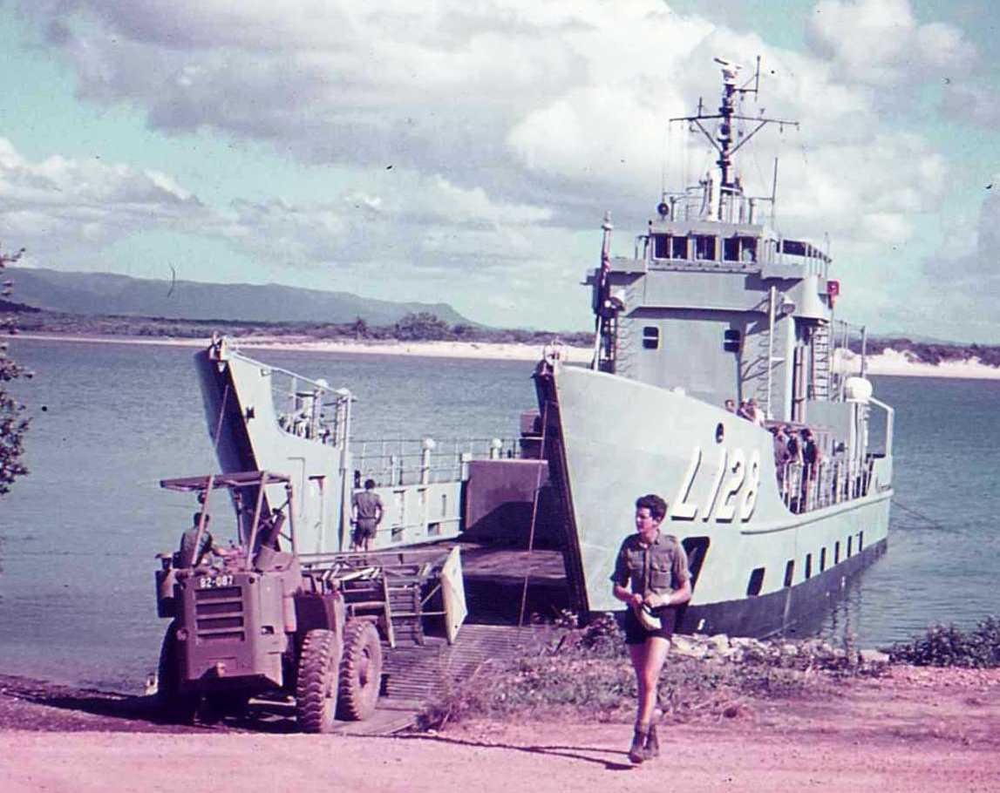
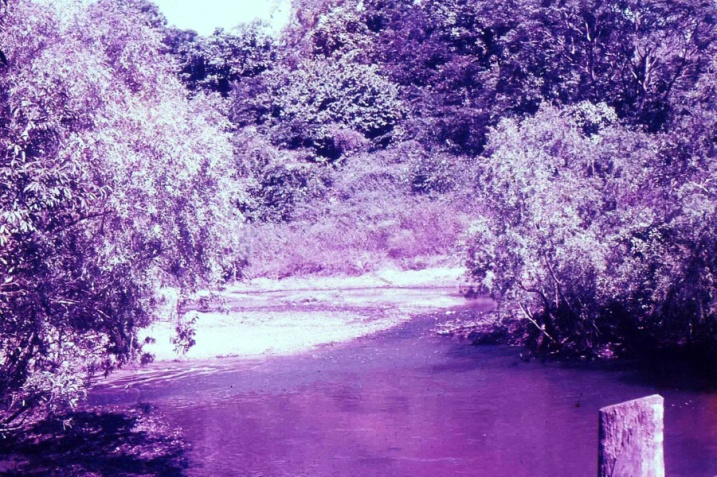
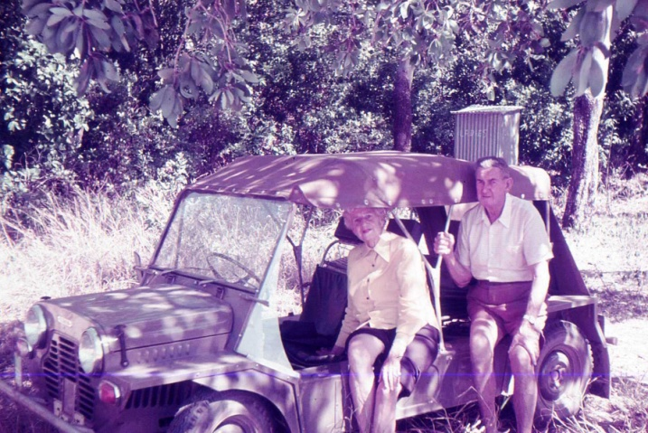
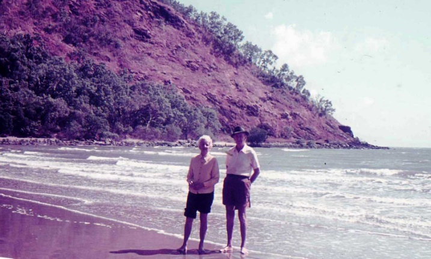
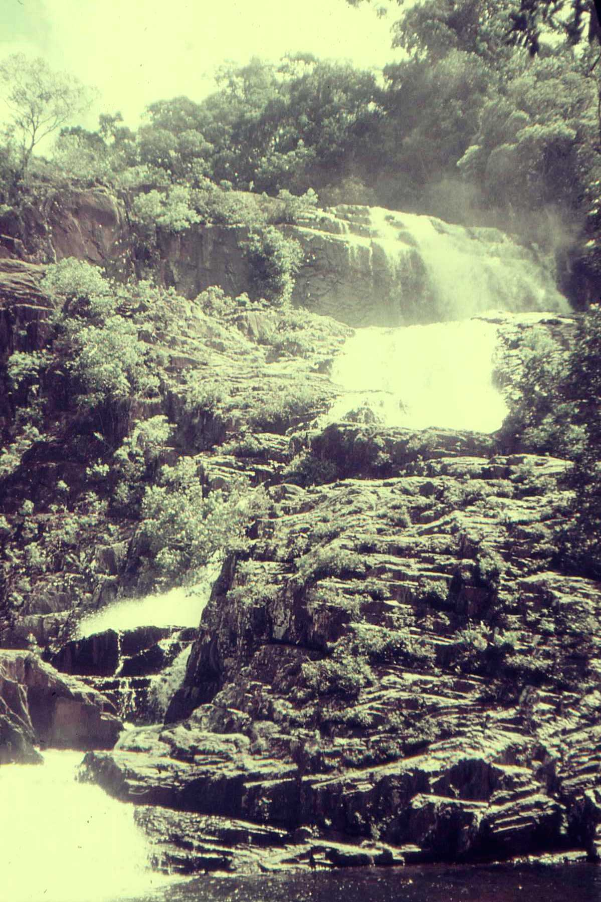
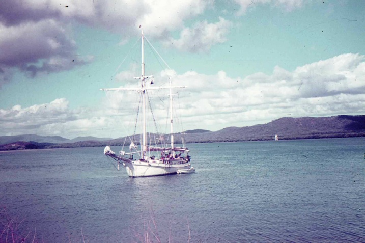
Home life at 2 Milman Street
I have said little about Wendy’s life in Milman Street Eagle Junction throughout my five month sojourn at Cooktown apart from my weekly Sunday evening phone call home and a twenty minute chat. We may have exchanged voice tapes as we did during my time in Vietnam but I don’t recall that happening.
Army wives are a breed apart. They need to be resourceful in maintaining the home during the often long absences of their husband. Wendy had much to look after – an eleven year old daughter, and two sons at four years and one year as well as her own father in failing health both physically and mentally. With all that Wendy coped well but I do not suggest it was ever easy. Sarah attended Eagle Junction State School which was conveniently close, an easy walk away and had an excellent reputation. Sarah played tennis, took school sponsored swimming lessons to become a very competent swimmer, joined Brownies (but didn’t like ‘Brown Owl’ very much) and gave her Mum a good deal of help in the house with both Grandad and her younger brothers.
Wendy developed friendships, especially with our near neighbours Bev and Rob Fairbanks a few doors down in Milman Street. Bev was always helpful and of course Wendy had her many old friends from school and nursing days. From time to time we had Wendy’s old friends at home for dinner, in small groups and I especially remember the Dowlings and the Whites. I guess they had become my friends by then nearly as much as they were Wendy’s.
.Rex had a routine and for a while that involved driving his large Ford Fairlane to Eagle Junction where he bought a newspaper and often an ice cream. However, he often tussled with the gate post both leaving and returning and while that didn’t damage the tough old gate post the sides of his Fairlane began to show a few scars. Wendy persuaded him he should walk for the exercise and he did but often his walking was a bit precarious with the risk of falling over.
That was the situation at home I recall when I returned from Cooktown. A very stable routine had developed a routine that one would not wish to alter or upset. I had no idea whether or not I would have further periods of absence on field operations. I expected my posting to the Squadron would be for at least five years – this had been suggested to me by Colonel Nolan, our Director at the time of my posting to Queensland – he generally believed in maintaining stability in senior officer appointments but of course the future could not always be predicted. There were several officers between me and the next likely lieutenant colonel appointment and I had not imagined that they would suddenly disappear. Certainly all of the existing lieutenant colonel appointments were filled with no future gaps likely to occur. So five years with 1 Field Survey Squadron was quite realistic. With that in mind Wendy and I started to think about improvement we could make to our Milman Street home. We had our rather archaic kitchen in mind and doing something more to the underneath of the house and with that an improved driveway.
Soon after the Squadron’s return to Brisbane, probably in November, we had an invitation from Des Neagle to attend his wedding to Lorraine and the reception afterwards. It was a very Roman Catholic wedding at which church I have forgotten with the reception at a very nice restaurant in Elizabeth Street. Of all the weddings I have attended Des and Lorraine’s would be one of the most enjoyable. They very generously gave Wendy and me a good deal of their time. I think Des remained with the Squadron in a clerical role for all of 1976. He was anxious to join the recently raised Army Welfare Unit but he needed to become fully qualified for at least promotion to corporal before that could happen.
Wendy had already become quite involved with St Marks Anglican Church in Bonney Avenue and I think at that time she had already been elected or appointed to the Parish Council. I was to follow a few months later although I do not recall both of us being on the council together. Of course having arrived back from Cooktown I needed to return to the Squadron immediately; there is always quite a lot to do at th end of a major survey operation. There were a number of outstanding personnel matters that had been held over until my return. Captain Pat O’Connor had ‘held the fort’ in Brisbane throughout Sandy Hill although near the time of our departure Pat had been diagnosed with a heart condition and was on ‘light duties’. I never understood quite what that meant and Pat carried on in his usual reliable way. The year progressed to Christmas without any significant developments. The Army Office Planning Directive for 1976 had arrived and 1976 for 1Field Survey Squadron promised to be a quiet year without any major operations although there were some smaller contained mapping jobs to do as well as field completion of past map compilations. Of course what was going to occupy a good deal of my time was the preparation of the Sandy Hill final report. I wanted this to be comprehensive containing full reports from the forward parties leaders – a ‘warts and all’ effort.
A very memorable occasion was the Squadron’s Christmas party or picnic at Mount Glorious. Just about the whole Squadron was there with everyone bringing picnic baskets of food, some quite lavish – ours wasn’t. ‘Beppo’ the Clown had been organised to entertain the children. Wendy recognised him as Barry Cannon with whom she went to school in Tenterfield. What a coincidence! Hans Kramer in the mid-afternoon led all the children off on a rainforest walk. It was obviously longer than expected and it was quite late before they returned or at least seemed so with the sun dipping behind the range and trees at five o’clock. Eventually Hans turned up with all the children following. Perched on his back was Sarah who had run out of puff apparently. At least she was a lightweight and Hans a big strong fellow. It was a great day!
Our other Christmas event was a dinner-dance organised by Peter Rallston. He chose a ‘restaurant’ in Fortitude Valley (in 1975 a rather dubious part of Brisbane) and the restaurant proved to be as dubious as the rest of the Valley. The meal had been pre-ordered by Peter but we seemed to wait forever for it to be served. The restaurant had a glass dance floor with coloured lighting underneath and they were about the only lighting in the place apart from a tiny lamp on each table. The music started, a live band I think, and the sound level was a shattering 120 decibels. The place was certainly popular and by 7.30pm was quite crowded. We survived until about 8.30pm and then Wendy suggested that we might retire to our place at Milman Street for desert. There was immediate support for that idea with everyone rising to their feet and making a beeline for the door. Perhaps it was a memorable night but for all the wrong reasons. One could not be critical of Peter; he thought he had done well.
1976
A holiday
We had booked a holiday rental of three weeks at Shelley Beach at Caloundra. We had invited Sarah’s close friend Jenni Cary from Wodonga to holiday with us and Jenni duly arrived by plane just after New Years day. It was a very pleasant spot and the cottage very adequate for our needs with a large sitting room down stairs and a downstairs bedroom that Rex could occupy and three bedrooms upstairs with a small balcony for the rest of us. It didn’t have sea views but we were only a block from the beach. We were booked for the first three weeks of January. Shelley Beach was certainly not a swimming beach since ir was very rocky but within the rocks as the tide went out there were numerous pools that were ideal for small children and in many one could find shells of all sorts including ‘cowries’, a much prized find. Of course during our three weeks I made numerous trips to Kings Beach for surfing purposes. I was no expert but enjoyed the experience. Rex would occasionally come in the car down to Shelley and sit in the car listening to the radio and watching the ocean with the ships lining up to enter the channel and make their way to the Port of Brisbane. In the last couple of days at Shelley we were threatened by a cyclone. I doubt whether too many cyclones get much beyond the northern end of Fraser Island on their destructive journey south. At that point they seem to be deflected out to sea and run out of puff. Nevertheless, you can get quite a heavy blow and we certainly did. The sea was all wind and foam with the foam buildup blown across the carpark and road.
Our holiday came to an end; Jenni returned to Wodonga and I saw out the remainder of my leave odd jobbing around our home. Rex enjoyed his time at Caloundra and before leaving we pre-booked another three week block at Shelley Beach for the following year.
The Squadron and an uneventful year
After the holiday break it was back to the Squadron for a fairly uneventful year. Sometime during the year I received notification that I was to front the P&S Board at a given date. I was only a little aware of what P&S Boards were all about – promotion and selection – was the meaning of the acronym – and I couldn’t imagine that such would have any relevance to me. It occurred to me to phone Survey Directorate in Canberra and inquire further but decided not to. As I saw it I was a fair way down the pecking order in the Officer ‘Stud’ Book and just thought the Board (which travelled around from State to State) were intent only on clearing the Queensland potentials. I had heard that Don Ridge, CO of the Army Survey Regiment and a very senior lieutenant colonel had decided to take retirement and I was well aware of why he might choose to do that. John Bullen, a Duntroon graduate, was certainly considerably more senior to me and was ‘of the cloth’ as Clem Sargent would put it but I was well aware that the Corps would not have him promoted into a Corps vacancy at any price (John’s career henceforth was to lie outside the Corps) and there were others. So I sat back and waited for developments. In the event I fronted the P&S probably in about August 1976, a panel of four or five Colonels and above including a General as chairman and responded to their questions which in themselves were unremarkable. I heard nothing more.
In February I was confronted with stunning news. Wendy had become pregnant with the baby due in about November. If I had any misgivings at the news I was certainly delighted. I was still expecting to remain at my present appointment for a further four years and rather imagined that at that time I would leave the Army and continue in Brisbane – doing what? I hadn’t really thought that far ahead; something I had to work on. Throughout 1976 Wendy’s pregnancy progressed quite normally without any serious mishaps. Rex was a little stunned by it all if only because in the parentage stakes we were both a little old.
I put my personal time into compiling my Sandy Hill final report. Reports of that nature were very much a ‘hit and miss’ component of many significant field operations. Survey Directorate gave little encouragement to the production of comprehensive operational reports and at conferences I had heard it expressed as being a waste of time. The emphasis was to get on and do the job. ‘Window dressing’ was not encouraged and yet field operations cost a great deal of money and although comprehensive cost accounting was up to that point never carried out I well knew from a simple thumb-nail calculation that the bill for Sandy Hill would have exceeded \$1 million – a very large figure in 1975. If Survey Directorate had little interest, my superior headquarters, Headquarters 1st Division, certainly expected a detailed after operation report. If nothing else, my Staff College training inevitably led me to it.
The Cabarlah incident
I had a small opportunity program taking air photos of army bases when we were mapping or doing other things in the vicinity. It was an authorised program and a number of Army units had requested an air photo of their base location. Our civilian contractor based at Toowoomba (Snow Richards – Phoenix Air) who undertook our extraneous air photography and other air based survey tasks accepted the job at a very nominal price. Trevor Richards whom I knew in Vietnam was the OC of the 7 Signals Regiment at Cabarlah, outside Toowoomba had asked whether his location could be put on the list and sometime later that opportunity occurred. In fact, the request was made by HQ 1st Military District, Major Cunningham,(whom I knew at Staff College) in about April. On a clear sunny day in August the contractor’s Queenair aircraft circled around at about 5,000 feet over the unit. I wasn’t aware it was happening on that day – it was pure opportunity. I think Trevor must have forgotten his request (or maybe he had moved on) because he or someone else, maybe his 2IC, had phoned 1MD stating to the effect that an unmarked aircraft was breaching the secure airspace above his unit. I received a ‘smelly rat’ letter from the SO1 Operations in HQ IMD, a Lieutenant Colonel John Knell claiming that the overfly was without the knowledge of the CO of 7 Signals Regiment and is considered to be highly irresponsible. ‘Further occurrence will result in disciplinary action being taken’. I responded with a very indignant letter in which I stated that in the first instance the photography had been requested by the OC of the 7th Signals Regiment and that the comments are unwarranted in the extreme and can only be construed by OC 1st Field Survey Squadron as a grave reflection on his personal judgement and integrity. As such OC 1 Field Survey Squadron proposes to refer the matter to higher authority. A day later I received a hand written ‘apology’ stating ‘I apologise for my branch’s letter and hope that the whole matter caused as many laughs as it did here ’. Ha Ha Ha – I failed to see the funny side! The photos were of course excellent taken with the RC 10 high resolution camera. I could only hope Trevor appreciated them. I should add that 7 Signals Regiment at Cabarlah enjoys a high security classification.
Work day by day and the Army ethos
Work-wise, I don’t recall any particular highlights. The Squadron owned or at least fostered the remnant of my old Vietnam unit, 1st Topographic Survey Troop. It was much depleted in personnel, maybe a dozen or so with one designated officer. I used the few members as part of the Squadron, especially since Squadron numbers had been reduced by about the same number. To understand that, one needs to appreciate the concept of ‘army establishments’ where the word ‘establishment’ means the manning level. Units had a specific ‘war establishment’, that is, the manning level in a proclaimed war such as applied in World War 2 but not the Vietnam war. Then there was a ‘peace establishment’ a far less number, a ‘training number’ perhaps and less than that was th ‘authorised establishment’, a fluctuating number reflecting budget restrictions based on the perceived ‘threat’. The ‘authorised establishment’ took no account of the fact that survey units were peacetime operational units and of course the Army hierarchy would always give preference to its ‘teeth arms’ – infantry, artillery, armoured etcetera. HQ 1st Division tended to look upon the Troop element as its own organic headquarters unit to be used for any extraneous purpose they may consider appropriate usually of a drafting and reproduction nature. A fancy officer’s mess menu might be a case in point, usually required by yesterday. The SO1 (lieutenant colonel) Operations whose name I cannot recall was a difficult person who tended to look on the Squadron and in particular the Troop element as his own to do whatever he deemed to be in the interest of the headquarters. His hand was stayed somewhat by the Army Office annual tasking directive, a very powerful document indeed but I could not waive that in front of his nose and the only level beyond the SO1 was the Commander himself who would probably consider such matters as ‘trivial’.
1976 was not a good year for the Australian Army. Post-Vietnam blues had taken over and many saw the Army having a diminishing role engaged on peace time training that led nowhere. Major exercises in the iconic Shoalwater Bay were expensive and when held were of relatively short duration. All of this resulted in a rash of officer resignations at the middle level. The Whitlam Labor Government had little interest in the military although they had certainly introduced some very necessary reforms in conditions of service. Labor lost the election in November 1966 after one of the most contentious and destructive periods in Australian political history and the Fraser Liberal/National coalition that followed changed little. What did all this mean to the Survey Corps? Those operations locked into international agreements such as Indonesian military assistance and to a lesser extent Papua New Guinea had to continue but it became harder to justify Australian based survey and mapping operations. Survey Corps had to accept manpower cuts in step with the rest of the Army with lesser opportunity for promotion. All of this had a negative impact on general morale.
Towards the middle of the year I attended a weekend long briefing and discussion (I guess we would call it a seminar these days) on the future deployment of the Army. It was set against the scenario I have outlined above. Various senior officers gave papers on aspects of logistics, some almost verging on disrespect for the government and its defence policies. Australia had moved from its Menzies era of ‘forward defence’ where we defended Australia in the backyards of other nations (this had led to our Vietnam involvement and before that the Malayan campaign and Indonesia’s confrontation) to what the newspapers had dubbed ‘fortress Australia’ where we developed the capacity to defend our own coastline and its hinterland. In a closed session an intelligence guru spoke at length on ‘perceived threat’ pointing a finger at communist China and in the longer term Indonesia. Our Commander of 1st Division, itself an exercise in self delusion – the Army had nothing like a ‘division’ capable of being deployed, Major General Macdonald talked of going to war in Holden motor cars reflecting on the state of Australia’s military logistic support capability. This was against the likely prospect of tens of thousands of South East Asian refugees arriving on our northern coastline and already some had. I found the conference a somewhat sobering experience.
Visits
I had known the recently appointed Queensland Surveyor General, Mr Mack Serisier, for some years, not well but distantly since I had been first appointed to Northern Command Field Survey Unit in 1961. Mack Serisier was then a staff surveyor, and an attendee to the university based Photogrammetric Discussion Group which I also attended. I also had met a number of the up-coming luminaries of the surveying profession most of whom had achieved prominence in the profession by 1976. Another whom I knew quite well was Keith Waller who by 1976 as Director, Division of Mapping was running the mapping side of the Lands Department’s Survey Office. Even at the time I served as a lieutenant/captain with the Northern Command Field Survey Unit in the early 1960s I saw great value in maintaining a working relationship with Lands Department Survey Office in the exchange of survey data and maps. The latter resulted from a gentleman’s agreement I had with the Survey Office whereby with each print run of Queensland topographical maps we gifted a couple of hundred to the map counter. In return were could get any State cadastral map or any other map product on demand at no cost.
Without giving the matter much thought in April I invited both Mack Serisier and Keith Waller to inspect the Squadron and have lunch with me in the Mess. I advised the messing officer (a captain) that I would have the Queensland Surveyor General and the Director of Mapping as my guests for lunch and I had a call soon after from the PMC (President of the Mess Committee) that I would be joined by himself and the Commander 1st Division, Major General Macdonald. I was a little overwhelmed. I phoned Keith Waller and advised him of the arrangement and asked him to pass that on to Mack Serisier. Mack, a very modest man phoned back and said he felt quite honoured and I told him not to feel too honoured – our Commander usually had lunch with any guests to the Mess. In the event Mack and Keith were joined by the Minister for Survey, Valuation Urban and Regional Affairs, Mr Bill Lickiss8 (perhaps an opportunity too good to be missed). It was an easy occasion and both the ‘generals’ got on quite well.
Operation ‘Sunbird’
In May and June 1976 we had a six week operation of field completion of a number of 1:100,000 maps in the Gulf of Carpentaria south of Normanton. The operation involved 40 personnel with Captain Paul Pearson OIC. It was based at Staaten River, then Normanton. Army Office gave it the title ‘Operation Sunbird’. In the October ’75 planning conference two Iroquois helicopters were allocated to the operation with an agreed number of flying hours. Iroquois’ are far from ideal for field completion due to restricted visibility from the cockpit and the Army’s Kiowa would have been much better, however, for some reason the Kiowa were not available for the May/June period. The RAAF seemed keen enough to deploy the Iroquois and the deal was that on operational flying the co-pilot would vacate the front seat next to the pilot for the surveyor undertaking field completion. Only from that co-pilot’s seat would visibility of the ground be sufficient to carry out field completion. (Field completion is the checking of ground detail that has been plotted from air photos)
In September a three page complaint from the RAAF No 9 Squadron that supplies the Iroquois was received by Survey Directorate then on-forwarded to me for comment. I will briefly outline the RAAF complaints and my response through Survey Directorate. Many are quite ludicrous but they reflect the often ropey relationship between RAAF and ourselves.
- Crewing: 9 Squadron in retrospect objected to the co-pilot being moved from his seat next to the pilot and being required to sit on the ‘jump seat’ positioned behind and between the pilot and the co-pilot’s seats. The letter implied that this was a potentially dangerous arrangement and Iroquois could not continue to be deployed on field completion operations.
In my response I pointed out that in a telecon I had had with the OC of 9 Squadron he had advised me that the real reason was that the co-pilot while sitting in the jump seat could not record flying hours in his personal log.
- Fresh Rations: Air crew must always be provided with fresh rations when on flying duties. To not do so can affect flying safety. Pilots on the operation complained of headaches because they were on ten-man ration packs provided by the Army.
In my response I pointed out that ten man ration pack rationing had been advised and agreed at the planning conference. Ten man ration packs provide a lot of variety and are vitamin fortified. The Army OIC of the Operation (Captain Paul Pearson) had suggested that the headache problem was more due to imbibing too much alcoholic beverage in the evening. Supplementary fresh rations were acquired through the RAAF imprest account (a privilege not accorded to operational army units).
- Medical: Medical support should always be provided on remote area operations and a medical officer (doctor) or at least a senior medical orderly should be provided.
In my response I pointed out that as well as the two Iroquois we had at our base one chartered Queenair and one Pilatus Porter aircraft and Normanton was a fifteen minute flight away. Also we were on the Royal Flying Doctor net. While the desirability of organic medical support could be justified on a major survey operation (such as Sandy Hill) it could not be justified on small short term operations
- Planning/Coordination: should be carried out at 9 Squadron base so that senior management can participate.
I pointed out that I with Captain Pearson had on two occasions visited the Squadron by arrangement to thoroughly brief all personnel but on each occasion the attendance was low; hence the second visit.
- Support for Remote Area Operations: 9 Squadron said that an on-call longer range aircraft should be based at Townsville or Cairns (for example, a Caribou) to respond to contingencies.
My comment – could never be approved and never likely to be provided – in any case. an overkill.
I have no idea of any outcome from the foregoing – I suspect it went no further. The AD Survey (Operations) at the time, John Hillier was always unduly sensitive to any criticism and was always prepared to pass it down the chain. Sunbird was completed on time with no mishaps.
An unexpected new location for the Squadron
The Squadron was very comfortably established in its Gaythorne ordnance depot home although certainly our allocated building had little aesthetic appeal. We had ample space for all of our activities including stores and maps and marshalling space when mounting field operations. With all that I was quite surprised to find 1 Field Survey Squadron listed on a command schedule of building projects with a high level of priority. I had heard nothing of this and rather imagined that it was something initiated by Survey Directorate in Canberra. I phoned Colonel Stedman and he expressed equal surprise and assured me that it was clearly some sort of mistake. As far as Directorate was concerned we were very adequately accommodated. Nevertheless, a week or so later I had a call from the Command architect and we had a meeting at the Squadron. I included Captain Pat O’Connor who was still on light duties having appointed him to be the liaison officer for whatever might follow. Apparently the Ordnance Depot had made a strong case to have their buildings back and Survey was to vacate. The command architect explained what he wanted – some sort of balloon diagram that in separate ‘balloons’ showed the activities of the Squadron and how they related to each other both functionally and in location. It was a job that kept Pat busy and it made me realise that there were many administrative functions that I had been barely aware of. The outcome of all this was a brand new and very functional building at Enoggera opened for business four years later.
At home
Being a quiet year for the Squadron I found I had time on my hands and a few jobs to do at 2 Milman Street. One I recall was the partial excavation and concreting of the entire area under the house to provide adequate headroom of about seven feet, maybe a little over two metres. I had imagined it would take quite some time to complete and perhaps I had contemplated taking on the job myself. However, the concreting I did at Pearce Street Wodonga convinced me that concreting was not my forte. We got to know slightly the fellow who lived on the corner opposite and it may have been the Fairbanks who told Wendy that he did that sort of work so I approached him and he took it on as a weekend job at what might best be described as ‘mate’s rates’, that is cash payment. He had a rough looking fellow to help him and on the Saturday they completed the excavation removing the spoil in a trailer to goodness knows where and then on the Sunday the ready-mix truck and by evening the whole area had a three inch layer of concrete trowelled off, beautifully finished, an excellent job. I don’t think I ever saw two such hard workers again. Soon after it was completed with the concrete still wet five year old Robert and his mate Daryl Fairbanks chased each other in and out of the underneath leaving their foot prints all over – there for posterity! I was less than impressed!
As the year progressed we moved into a comfortable life routine. I was able to take the train from Eagle Junction station to work each day, changing trains at Bowen Hills to the Ferny Grove line then alighting at Gaythorne, the whole trip from door to door being not much more than half an hour. Most mornings I met with Pat O’Connor at Bowen Hills. We often discussed politics being on opposite sides of the political divide. Pat had been a railway engine driver in his younger years and it often surprised me that he held to such conservative political views. However, our discussion was always very amicable. No doubt he was equally surprised that an army officer could be a Labor supporter. Army officers and soldiers for that matter were generally a politically conservative lot.
Rex’s health was clearly failing. He had stopped driving his big car each morning to the EJ shopping town next to the railway station having at that stage tangled with our gate post a few too many times and we were fearful at what might happen trying to park at EJ. We encouraged him to walk which was not only safer but also good for him. The purpose of his visit was just to buy a newspaper and sometimes Wendy might give him a list of a couple of small items to buy at the grocery store. We watched him walking home one morning and he was wandering all over the footpath, sometimes almost colliding with the fence and then nearly stepping into the gutter. I think that practice came to an end after a few weeks.
We did all our food shopping at Eagle Junction. The general grocery shop was quite comprehensive and hadn’t at that time been overtaken by the Woolworth/Coles duopoly. The adjacent railway station car park was also very convenient. Handling Robert and Christopher while Wendy shopped was never less than a challenge. While Christopher at two and a half was fairly biddable, Robert could only be described as harum-scarum. On one occasion that became somewhat celebrated Wendy realised that Robert had disappeared. She was at the checkout with Christopher in the stroller and she excused herself thinking that Robert had more than likely ascended the steps of the railway walking bridge across the multiple track railway line and descended to the platform in the middle. She hurriedly left the shop, ran up the steps peering down onto the platform trying to spot Robert – not there – and a woman came up behind her and said ‘madam – do you realise you have left your baby behind in the shop?’ She obviously assumed that Wendy was about to catch a train leaving Christopher behind. Wendy obviously gave some sort of response, returned to the shop to find Christopher had helped himself to a ‘Mars Bar’ and by then was covered in chocolate. There also was Robert wondering what all the fuss was about. The story retold has raised quite a few sympathetic laughs.
During the time I was at Cooktown Wendy had contracted Mrs Vera McCloy an elderly lady to do house cleaning and babysitting. Mrs McCloy lived on her own on the next and only corner down Milman Street towards the creek (or a tributary thereof) in a large rambling sort of house. She became quite a family friend, enjoyed the children but would take no nonsense from them – had Robert under her thumb – and was very helpful with Rex. Vera was full of little bits of sage advice. She had a remedy for everything and anything that could arise. She became known within the family as Dame Vera but of course not to her face. We all developed quite an affection for Dame Vera. She was entirely reliable and certainly wasn’t backward in speaking her mind.
The final days
In about October 1976 I received a phone call from Colonel Stedman to tell me that I was to be the next for promotion with effect from January 1977. He offered me the choice of either the Army Survey Regiment, Bendigo or a staff appointment in Survey Directorate, Canberra. I indicated that my preference was the Army Survey Regiment and he responded – well it’s yours. I had certainly known that my number was coming up, being aware of Don Ridge’s retirement; Clem Sargent’s retirement a year before and in my own coterie group I was at least level pegging with others. Of all the lieutenant colonel appointments in the Corps, that of Commanding Officer of the Army Survey Regiment was regarded as the most significant and perhaps by some the senior appointment. I became aware in the following year that in taking the appointment I stepped on a few toes of at least two others who were senior to me in the ‘officers stud book’.
I wondered how Wendy would react to yet another Army move after so short a time in Brisbane. We had bought a home and spent a good deal of money on it. The conventional wisdom was that two years was simply not long enough to recoup overheads in buying and selling a family home even in a buoyant market. We had certainly bought in a buoyant market at the beginning of 1975 but by the end of 1976 the steam had well and truly gone from it. And of course we had Rex with us now and he would have to move with us. I knew there was a designated CO’s married quarter in Bendigo that several past COs had occupied, although not the previous two Peter Constantine and Don Ridge. The Regiment had been under the command of Peter Constantine over the past 12 months since Don Ridge had retired and Peter at his own request was to take over the School. Furthermore Wendy was pregnant and due within a month or so.
I managed to get approved a return air ticket to Melbourne justified by a need to liaise on recent map compilations (partly true) but with the over-riding need to look at the married quarter situation and possible alternatives. Peter Constantine arranged army transport from Tullamarine to Bendigo and accommodation in the Regiment’s officer’s mess. I think I stayed for about three days. I had known Peter throughout my army career. He had been a sergeant instructor on my basic survey course at Balcombe in 1956 and a lieutenant in the Northern Command Field Survey Section when I was first commissioned and posted to that unit. I could certainly regard him as a friend and we got on together quite well. Despite that I had unspoken difficulties with Peter’s command style, perhaps difficulties that were hard to define. In taking over the Regiment in January I was to learn more. Nevertheless, Peter was very generous with his time and briefed me on all the changes he had instituted over his year of command after Don Ridge’s retirement. Don had moved into real estate selling for a well known real estate firm and of course he was the ideal contact if we were to buy on the open market. This seemed to be very likely since the ‘CO’s married quarter had been allocated to the United States exchange officer, Major Sam Thompson. Don took me to a number of potential homes on the market but the main problem I had was that none could provide reasonable accommodation for Rex.
Noel Sproles was the nominal second in command of the Regiment. I have made mention of Noel previously. We had worked closely together as lieutenants, Noel had been a second lieutenant (ie one ‘pip’), in the old Northern Command Field Survey Section and had taken the New Guinea posting pre-Vietnam. We had had little contact over the intervening years. Noel had attended the Shrivenham (UK) Army College of Science and Technology and had graduated as a top student. He had also met and married Lynda. Noel had also served in Vietnam in a second in command role with the Survey Troop – I may say more on that later. Noel had bought a home in the Bendigo suburb of Strathdale and he and Lynda were to become our neighbours. Don Ridge introduced me to Max Williamson, a Bendigo builder from whom Noel had bought his house who was ‘spec’ building next door to Noel. Max was in fact very involved with a sleeping partner in the total development of this Strathdale estate, an arrangement that was to have repercussions later. I was taken to inspect Max’s just started house next to Noel and we discussed adding an extra room to accommodate Rex. All this seemed possible but I certainly needed to discuss the options with Wendy. Also I had some misgivings about living next door to my 2IC.
I returned to Brisbane and we put our Milman Street home on the market. It was certainly in good condition although we had a painter come in and do a little bit of cosmetic painting around the windows and a couple of places where the paint was peeling. Not long after we moved into our home and before Sandy Hill we had had the place fully fly/mosquito screened. I was always surprised that Brisbane people were reluctant to screen their homes preferring instead to sleep under mosquito nets. The Brisbane housing market was slow and it became apparent that we would not get our asking price of \$50,000. Rex’s health was clearly failing and he had given up his morning excursions to the Eagle Junction shops for the newspaper and a milk shake. He would sit in the front room throughout much of the day watching television – we had bought a colour television, a Sanyo, soon after the introduction of colour in 1975. He enjoyed the cricket and tennis and did a little light reading. At the weekend we took him for drives to various locations for afternoon tea or a milkshake (which he enjoyed) and I recall Mount Coottha being such a venue.
Wendy and I returned to Bendigo in early November and confirmed our home purchase, that being the Max Williamson home in Herbert Avenue Strathdale next to Noel and Lynda Sproles’ home. It was a fast and furious weekend. In the space of three days we arranged our bank loan and bridging finance with the Westpac Bank chose carpets, modified Max’s very unimaginative design, chose internal and external paint colours and more. I think we may have had dinner with Don and Ruth Ridge. Our very helpful bank manager undertook to keep a close eye on the house construction. All done we returned to Brisbane. By November Wendy was in an advanced stage of pregnancy but she managed remarkably well – the trip down and back and all we did in Bendigo.
Sadness and joy – Rex’s passing and a birth
In the early morning of 17 November we were awoken to the sound of Rex stumbling about, first to the toilet and then in his bedroom. He was in great distress with pain and clearly he was suffering another heart attack. We called an ambulance immediately and he was taken to the Holy Spirit Hospital in Wickham Terrace. It was about 5.00am. I followed the ambulance in our own car. Rex was quickly admitted. He was barely conscious but spoke a few words. The duty doctor said he had had a massive heart attack but may survive. After an hour or so I drove home. I recall stopping briefly at St Marks and saying a brief prayer for his survival. At home Wendy had arranged for Bev Fairbanks to hold the fort while we both returned to the hospital. Rex, however, had succumbed and passed away, probably as we were driving in. My strong memory of him was stretched out on a trolley, very white but at peace. I don’t think either of us were tearful – that was to come later. Sarah had already left for school. I told her of Grandpa’s death when she arrived home from Eagle Junction School that afternoon. We sat together on the back steps. I think she was aware that something was amiss before I had even spoken. Bev Fairbanks was great; had everything in order. I stayed home that day with Wendy. I spoke to our Rector, Des Williams and he called in the afternoon and offered solace. He was very good. Funeral arrangements were made with Metropolitan Funerals and the service was conducted by Des Williams at St Marks a few days later. Beryl came to the funeral with her son Barrie and his wife. It was a small affair with just a few of our personal friends attending. There was some representation from the Squadron. We had a small wake at home, again with Bev Fairbanks assisting. Wendy was very pregnant.
Elizabeth Wendy was born at the Royal Brisbane Women’s Hospital a few days later on the 23rd November. I was in attendance. Elizabeth was baptised in St Marks Anglican Church, Clayfield by the Rector, Des Williams in early December with godparents Christina Ryan and Paul Pearson. As it happened Paul had been called to Canberra and a parishioner Doug Reed stood in as a proxy. As it happened the day of the baptism was the enactment of the nativity by the Sunday School children, an annual event. It was a nice setting for the baptism.
Soon after the funeral and maybe after the birth of Elizabeth a memorial service for Rex was held in Tenterfield. I attended but Wendy was unable to do so. The service was well attended by his close associates in business, past employees and golfers. I found myself having to escort Beryl as his dutiful wife, a role I found little short of repugnant. Nevertheless I observed the propriety of the occasion.
The sale of our Eagle Junction home was in the hands of our agent and he worked tirelessly to pull it off. The market in Brisbane was not what it had been at the time of purchase and we were having very few inspections. He convinced us we should have a ‘pictorial’ advertisement in the home sale columns of the Courier Mail emphasising what a great family home it was. This duly happened and we had a Saturday open day in early December and quite a number of prospective buyers trooped through. Of course we had the place spick and span – lawns mown, edges clipped and everything in place internally. Wendy and I were to keep in the background. As was the custom on such occasions flags along ropes were strung from the top front of the house to the two front corners of our block – a bit garish looking but that was the way it was done. The whole exercise was quite expensive but it failed to attract a sale. We were still hoping to sell for around $50,000 which would have covered the initial outlay and all we had spent on it since but clearly that was not achievable. The market was too low and we had owned the place for just on two years. I believe we finally sold for about $44,000 which wasn’t too bad.
Over that period I had frequent communication with our very helpful Westpac bank manager in Bendigo and our builder Max Williamson. Of course I needed to continue to go to work each day at the Squadron. It was thankfully a fairly quiet time; the only field work being a little field completion west of Brisbane. I left the day to day running of the Squadron to Paul Pearson.
We had two cars to move to Bendigo, our own Mercedes Benz brought from Singapore and Rex’s Ford Fairlane, a very big car and a heavy consumer of petrol. We thought about selling it before departure but it was a little too close to Rex’s passing so we kept it. The Benz was transported as part of our removal and delivered to Bendigo but I was only entitled to have one car transported as part of my removal. Then I became aware that Captain Pat O’Connor was planning to fly to Bendigo for family reasons at his own expense and I asked him if he would like to drive the Ford and he jumped at it. I think I calculated the petrol cost and gave him cash for that although for Pat the cost of the petrol would have been much less than air tickets. Flying was quite expensive in 1977.
Finally it was time to sign off – close to Christmas. Our home had been sold and yet another removal was underway, at least the uplift of furniture, packed boxes and everything else, this time to storage. We then took up our option on the holiday home in Banksia Street Caloundra for three weeks – the week before Christmas, Christmas Week and the first week of January. We were due in Bendigo on the 10th January when I took up my appointment as Commanding Officer of the Army Survey Regiment with promotion to Lieutenant Colonel.
THE ARMY SURVEY REGIMENT
Arrival – Lieutenant Colonel Skitch
We flew to Melbourne and were met at Melbourne’s new airport, Tullamarine by my old friend Kevin Moody. Kevin and Myrie then lived nearby in the suburb of Keilor. We had lunch at their home and I recall an incident involving our Robert, then six years old. He was looking rather puzzled and finally he asked ‘did we fly in an aeroplane today?’ We were equally puzzled by his question and then I realized that he recalled getting onto an aeroplane (it was a TAA 727) in Brisbane where we walked across the tarmac and climbed up steps to get into the plane but on arrival at the very new and glamorous Tullamarine airport we simply walked to the door of the plane and stepped into a corridor that led us directly into the terminal. Thus six year old Robert had no recollection of leaving the plane – the plane and terminal were all as one. The Regiment’s staff car picked us up at the Moody’s about 2.00pm and we were on our way to Bendigo, then about a two hour trip.
Our new home in Bendigo was at least 99% complete – carpets laid and painting completed. We probably stayed in a motel for a few days awaiting the arrival of our furniture and of course I reported in to the Regiment where I was welcomed by my second in command Major Noel Sproles. Noel had administered command for the previous three months since the departure of Peter Constantine. Noel also was to be my next door neighbour for the next two years, an arrangement that was to become a developing problem over that time. Our address was 20 Herbert Avenue Bendigo in the suburb of Strathdale. In actual fact. Strathdale was in the local government area of Strathfieldsaye, a mainly rural municipality. Bendigo, or unofficially Greater Bendigo spanned four separate municipalities – Bendigo City, Strathfieldsaye, Marong and the Borough of Eaglehawk. There were many suburbs, some very old and others developing. Names that I recall were Kangaroo Flat, Sparrowhawk, Long Gully, Golden Square (the location of Fortuna) and more recently White Hills, Strathdale and Kensington The older suburbs had names that related to Bendigo’s gold mining past. These ‘suburbs’ had no official standing, that is, they did not feature in one’s address but Bendigo people held on to them.
Our new home had a large carport, sufficiently large to accommodate both the Benz and the Fairlane but it was not a fully enclosed garage. I had arranged with Captain Pat O’Connor who had a need to visit Victoria to drive the Fairlane to Bendigo. Pat was only too happy to do so – it would save him an airfare, then quite expensive. My removal entitlement included one car only so the Benz went on a car transporter.
Our removal pan-teknikon duly arrived and I was rather concerned to see when the doors were opened our expensive multi-spring mattress folded in half, tied with grubby ropes sitting atop all our garden equipment. Nevertheless, the unloading went smoothly enough with very little apparent damage that the contract french polisher couldn’t fix. The yard surrounding the house certainly required a good deal of work but that was for the future – not too distant.
The Army Survey Regiment – ‘Fortuna Villa’
The Army had occupied Fortuna Villa and its surrounding estate since 1942. By and large the grounds that included a large lake had been well maintained. The villa itself which during my time as commanding officer housed all of the administrative functions of the Regiment as well as the Cartographic Squadron on the top floor. In what had been the ‘battery’, contiguous with the Villa within which gold bearing ore had been crushed to extract the gold, a large spacious red brick building, housed the four multi-coloured lithographic offset printing presses – the Lithographic Squadron.. Also within the Lithographic Squadron complex were a number of ‘rabbit-warren’ rooms housing the huge Klimsch process camera (said to be the largest in Australia), film developing facilities, lithographic draughting personnel and other associated activities too numerous to mention.
A brief history of Fortuna before the Army acquisition in 1942 under wartime regulations is attached to this narrative as Appendix 4 and all I need to say here is that it was the home of George Lansell Esq, the proclaimed ‘quartz king’ of the Bendigo goldfields. Lansell died in 1902 and his second wife Edith, a much younger woman continued to live at Fortuna Villa until her own death in 1932.
Air Survey Squadron9 occupied a more recent building (built in the 1960s) on the town side of the property. Air Survey was an indefinite term that covered photogrammetry, that is, mapping from aerial photographs and the creation of map compilation sheets. In recent years it had expanded into automated cartography with a range of computer controlled equipment including high order plotters and aerotriangulators. These were supported by what at that time would be considered to be a large capacity mini-computer in a very large cabinet. The automated mapping system was known as ‘Automap’. Software to drive Automap had been largely developed by the Regiment. It was accepted by the mapping profession at large that the Army Survey Regiment led the profession in mapping technology and indeed, there was no equivalent in Australia in either State or Commonwealth Government or in private industry. I was to quickly learn that Automap at that stage was besieged with teething problems.
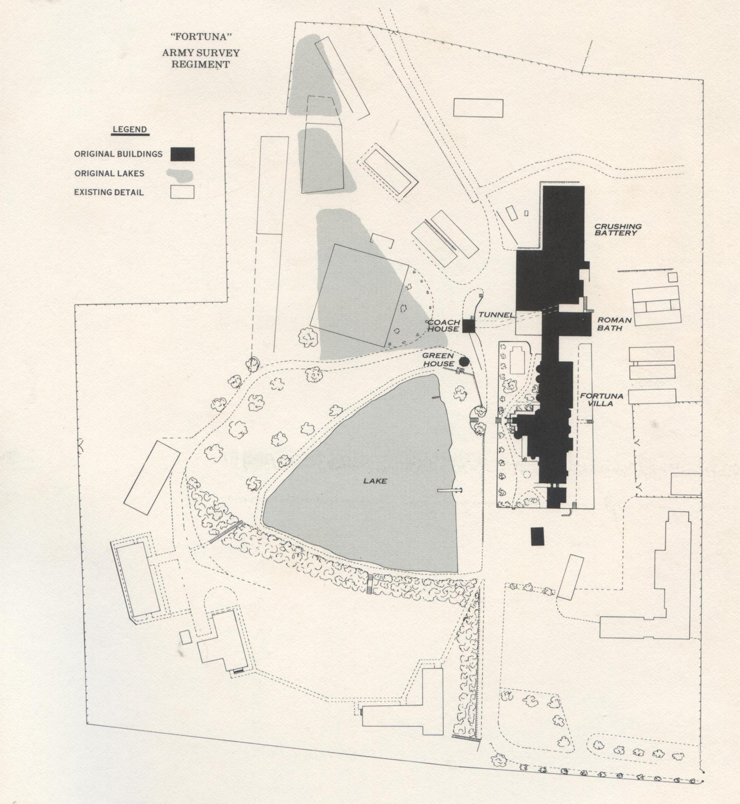
This Layout plan of Fortuna Villa and surrounding grounds was produced for the Fortuna tours that were to take place on Wednesday afternoons, and Saturdays and Sundays (discussed in length later in this narrative). The shaded blue areas are the original lakes, initially during mining days somewhat fetid settling ponds for the ore crushing process. During Lancell’s time they all became ornamental lakes but the top three were never maintained as such after his death. Only the large lower lake was kept as an ornamental lake used for swimming and boating. The building outlines are all buildings created by the army, some little more than huts and others well constructed in brick or similar material. Some outlines are not buildings but prepared spaces for sporting activities. On the left hand side from top to bottom is a ‘pitch’ of some sort for what purpose I cannot recall, then two blocks of two storied soldiers quarters, then sergeants quarters and on the bottom side, the officers quarters. The space between and above the lake is the gravelled parade ground. At the top is a shed retained as a hobby/carpentry hut (little used) then down the right hand side the Q Store buildings, the motor transport fenced area, then Air Survey Squadron. The solid black building is Fortuna Villa itself. The square area over the middle lake is the tennis court. Assorted buildings to the right of the tennis court contained stored map reproduction material and the zinc printing plate re-processing and graining equipment replaced by presensitised zinc plates during my time at the Regiment.
A happy place to be and work
On assuming command of the Regiment and within a day or so I addressed the Regiment as a whole, not in the formal setting of the parade ground as many might do but in one of the several outdoor locations suitable for such occasions. I chose an area at the villa end of the tennis courts, (unfortunately in bad repair), where all of the Regiment’s soldiers on duty at the time assembled without formation. I intended it to be a pleasant informal occasion and I believe it was. I pointedly thanked my second in command Major Sproles for administering command since the departure of Peter Constantine some three months before. Administering command is not an easy role, maintaining the status-quo established by the out-going commanding officer but without the authority of a commanding officer. I made no mention of the many changes I increasingly had in mind apart from stating that I wanted the Regiment to be a happy place where soldiers of the Survey Corps would want to serve. Was I to achieve that objective over the ensuing years? Well, perhaps – that is for others to decide.
The fact was, the Regiment was not a happy place. Peter Constantine had been commanding officer for two years since the retirement of Don Ridge and I found many of his ideas incomprehensible.. I always regarded Peter as a friend but clearly I had areas of strong disagreement with him. I will talk of changes in the course of this account.
It is not my intention to embark on a treatise of mapping technology in this writing but more appropriately to give an outline of my life and that of my family during our four years in Bendigo. In the services generally one’s private and social life tends to coalesce with one’s working life, that is, the Army. Such is especially the case for the commanding officer of a major unit. To maintain a separation between the two is to deny much of the richness of service life. Of course much is dependent on one’s wife and the extent to which she is prepared to be involved. That in itself can be a matter of fine judgement - neither too much nor too little. For officers there is the Officer’s Mess; for warrant officers and senior NCOs the Sergeant’s Mess and for corporals and sappers the other ranks club. Perhaps that smacks of class separation and no doubt it is. The Australian Army inherited its traditions from the British Army, modified to some extent. It remains so today even if messes as I knew them are less integral to the military structure. I often justified the privilege of mess life to the fact that soldiers of all ranks lived in accommodation that was not of their choosing, in some cases decidedly sub-standard. The mess was effectively an extension of their home. Of course for living-in personnel the mess or club was their home. Throughout my army career I enjoyed mess life and the privileges it afforded. The Officer’s Mess at Fortuna comprised three rooms, the bar room, the ‘snug’ and the long room. The ‘snug’ was central to the three and was without windows and had a very large fireplace – never lit. All three were attractively and comfortably furnished. In the long room was an original oval table, unfortunately shortened by some previous commanding officer but still capable of seating eight or ten. Lead lighted windows abounded. Adjacent to the mess was what was generally termed ‘the ballroom’, mainly used for dining-in occasions by both the officers and the sergeants/warrant officers.
My office within Fortuna Villa had in its early years been the private bedroom of George Lansell himself. It was a spacious room with a large circular window of lead-light stained glass depicting lily motifs. Unfortunately the upper panel was missing, presumably broken at some time and replaced with plain glass. Previous commanding officers had had their desk directly in front of that window opposite the door with the large circular window providing a ‘halo’ effect to the incumbent. It had always been so. I re-arranged the office with my desk to the left hand side of the room as one entered and scratched up from somewhere a coffee table and three easy chairs in good condition and had these arranged in front of the window. I frequently used that setting when entertaining visitors or talking informally to small groups. Perhaps some saw that as breaking down the visual authority of the position (my successor four years later reverted to the old layout) but I didn’t need such a prop. Leading from my office was George Lansell’s en-suite bathroom – all solid marble including the shower screen – quite remarkable and very convenient for me. Only the loo had been replaced – goodness knows what happened to the old one! The bath was never used and the plumbing had been disconnected.
Accommodating the Regiment’s Ladies
The Army and the Regiment was certainly a changed organisation from the one I knew and experienced as a much younger soldier. Very few single soldiers chose to live in barracks and indeed our other ranks barrack block was largely empty. Over past years the women of the Regiment (Women’s Royal Australian Army Corps – WRAAC) had occupied a separate building in Carpenter Street, Bendigo, about a ten minute drive from Fortuna. It too had historical connections having been the home of a pre WW2 Victorian Premier. The building was not in good repair but nevertheless very comfortable. We always had one WRAAC officer at the Regiment and she traditionally supervised the ‘WRAAC Barracks’ as they were known. Peter Constantine had decided to close Carpenter Street and move the WRAAC personnel into the bottom floor of the other ranks barrack block at Fortuna. His decision was largely due to a perceived lack of security at Carpenter Street especially so when numbers fell to less than ten. That accommodation was entirely unsuitable in my estimation – simply not set up appropriately for female soldiers – for example, male urinals. To my somewhat puritanical mind having male and female soldiers co-existing under the same roof and sharing common facilities was a recipe for disaster. Of course I had to accept that some male and female soldiers did live together privately off-camp in authorised de-facto arrangements approved by the Army for the payment of allowances and that was a given. It was controlled and conformed to social norms of the time. Having had some tidy-up work carried out on Carpenter Street I moved the ladies out of the barrack block and back from whence they came. There were no complaints about that. I did something about security but can’t remember what.
Charting for the RAAF
RAAF charting, that is, the production of navigation maps expressly for the Air Force was a function of the Cartographic Squadron of the Regiment. These were very large format small scale products expensive to produce. The largest in format were the Operation Navigation Charts at a scale of 1:1,000,000 and the Jet Navigation Charts at 1:2,000,000. Anti-Submarine Warfare Charts and Tactical Pilotage Charts were at the scale of 1:500,000 and yet others at larger scale were called Approach Charts – at least that is how I remember them. They were all derivatives, that is, derived from much larger scale products including standard map series at 1:100,000 and 1:250,000. They were expensive in time and personnel to produce. As more base topographic mapping was carried out they required updating and every few years, complete revision. The RAAF had a mapping place of their own at Frognell, a suburb of Melbourne which was responsible for providing specific air navigation information that was overprinted onto the charts in a very distinctive ‘electric blue’. Attached to the Regiment (but not ‘under command’) was a RAAF officer, usually a flight lieutenant (captain equivalent) responsible for detailed checking of the completed chart following which the reproduction material and a proof copy were sent to Frognell for, I presume, further checking. The very large format charts had to be printed at the Government Printers in Canberra since our own printing machines were not of sufficiently large format. Anyhow, why have I included all this?
Well..... Peter Constantine had decided to take RAAF charting out of the Villa and having cleared the top floor of the other ranks accommodation block re-establish it there. It must have been quite an operation moving the large draughting and light tables out of the top floor of the Villa, across the ground and into the top floor of the accommodation block then into the rather pokey rooms previously used as bedrooms. Why did he do that? Certainly working space at Fortuna was at a premium and because of that the Regiment had two cartographic detachments, one self administering detachment based at Bonegilla down the hill from the School of Military Survey and the other, not a self administering ‘detachment’ in the old drill hall at Kangaroo Flat, a suburb of Bendigo south west of the city. Peter had long wanted to bring the Kangaroo Flat lot back into Fortuna and close the old drill hall; but I am not too sure of that. The RAAF charting section now on the top floor of the other ranks accommodation block when I arrived at the Regiment was under the control of Captain Andrew Strachan assisted by Warrant Officer Andre Hossein and to my mind it was a disastrous mess. It was entirely non-functional. Andy (God bless him) knew nothing of cartographic procedures so it was all left to Warrant Officer Hossein to manage and coordinate. I had considerable regard for Andrew – he had been my second in command at Cooktown on Sandy Hill and he was quite a competent field officer but at the Regiment he was a ‘fish out of water’. Furthermore, Peter had landed him with a raft of extra-regimental duties such as sports administration. Hossein – I was never all that sure about but to give him his credit I had no reason to believe that he wasn’t a competent cartographer. As a result of the move the production throughput of our RAAF charting section was at a very low ebb, almost static in fact and the RAAF was very unhappy – to the extent that they were threatening to take the production of RAAF charting back and re-establish it at Frognell. (whether they could really do that was questionable). That made our Deputy Director (he had a production responsibility in Survey Directorate) very unhappy also and he made his unhappiness very clear to me; more of that later. I finally bit the bullet and knowing that it would bring the whole RAAF charting operation to a complete standstill again I moved it back into the quite spacious top floor ‘ballroom area’ of Fortuna Villa and put it under the control of Lieutenant Mick Wagland, recently arrived from a field survey squadron. I had known Mick as a warrant officer and knew him to be an energetic and innovative officer. He had had cartographic experience and I gave him a free hand to bring RAAF charting back into line. He did so, introducing a number of innovative measures in the process. By the end of the year we had caught up with the backlog and were in front. Mick was promoted to Captain.
Andrew Strachan had been posted to the 4th Field Survey Squadron in Adelaide. I had given him a less than glowing Officer’s Confidential Report and soon after he was posted to 4 Field Survey Squadron in Adelaide which I felt would be more his forte – as it had been in Queensland. Soon after he resigned his commission due to family circumstances and joined the South Australian police. I was left with lingering regrets.
Sergeant Gary Warnest was one of the RAAF Charting team and he comments
I was part of the recovery after the RAAF charting debacle. Weekly reports were initially required to be sent to NRJ as the Director. It was great that in a period of about three years we were able to turn it around to the point where NRJ came to the Regt and personally thanked the team for the RAAF production achievements. (RFS: It was little more than a year)
The Squadron Structure and Personnel
The three production squadrons, Lithographic, Cartographic and Air Survey were distinctly different in character. Members of each reflected that difference. Perhaps Litho and Carto were more in tune with each other and often worked shoulder to shoulder during certain production phases and generally had a practical working knowledge of each other but Air Survey was quite different and the people comprising it were of a different background. They were the original Topographic Squadron and over its ten years of existence (before it became Air Survey) Topo was more aligned with the field units within each of the State command structures. In fact Topo Squadron was formed in 1956 from the Southern Command Field Survey Section which then ceased to exist. Topo Squadron throughout its ten years would spend up to eight months of the year deployed on field operations in various parts of Australia – Western, Northern Territory and Queensland and also New Guinea. Their annual departure in convoy was a big annual event in the Regiment often with members of the other two Squadrons lined up at the front gate farewelling them. Their return to Fortuna months later was an equal event. They were different. Field operations based on the Regiment came to an end when Topo Squadron became Air Survey. It was then totally Bendigo based with its personnel drawn from the State based field survey units that themselves had gained squadron status. It was never a popular posting for the trained field surveyor but the Corps was changing. Field operations with increasing technology were of decreasing duration and frequency. The emphasis of training at the School of Military Survey leant increasingly towards air survey – photogrammetry and aerotriangulation. However, if there was a touch of elitism within the ranks of the Topo/Air Survey personnel (it has been said) it was understandable. They increasingly operated at a high level of technology.
Of the three productions squadrons at the Regiment it was the Lithographic Squadron that was uniquely different. There was nothing in common between the lithographic printer and process camera operator with the topographic surveyor. They came from completely different schools of learning. The lithographic trades came from the Melbourne School of Graphic Arts from which on graduation students received a trade certificate. In 1977 we still had quite elderly Litho members who had spent their entire working life at the Regiment having experienced World War Two at Fortuna. Nevertheless, there was no question that they all were highly skilled tradesmen and tradeswomen. Cartographic Squadron was a bridge between Air Survey and Litho.
There was one further squadron and that was Headquarters Squadron. I often thought that it was a brilliant move to collect all of the administrative elements of the Regiment into a formed squadron structure. It had not always been so. Headquarters Squadron had within it the Quartmaster’s Troop, Transport Troop, Office Administration Troop which included the Orderly Room, Quality Control elements, Technical Services and assorted other stand alone people.
My predecessor Peter Constantine (or it may have been Don Ridge before Peter) believed that at the rank level of warrant officer, this being generally a supervisory level, warrant officers could apply their supervisory skills outside their area of technical competence and expertise. Perhaps that might have been true had their training led them that way but with few exceptions it had not. Map production was the raison-d’être of the Regiment and the Regiment’s reputation stood or fell on that alone. I found on arrival that we had many square pegs in round holes that contributed nothing to productive output, and nothing to squadron morale. I could not change that overnight but did so over time.
Inter-squadron rivalry
The foregoing leads me to the issue of inter-squadron rivalry. Previous Commanding Officers tried to break down inter-squadron rivalry and nowhere was this more evident than on the sporting field. Sport is an accepted part of army life and the Army at large plays sport on a Wednesday afternoon. At the Regiment it had been a tradition that Squadrons would compete against each other two maybe three times a year in a broad area of athletics, field events, swimming and some team events.
It was Don Ridge who introduced the ‘house’ system, in part to overcome inter-squadron rivalry but also to make the competition more even. As he saw it the competition was uneven due to the average age difference and fitness level between the production squadrons where all the fit young men were in Air Survey, to a lesser extent Carto with Litho left with the ‘old and bold’. The ‘houses’ were named after past historic surveyors-general. My observation even on hearing of it was that it rendered any competition meaningless – it was the production squadrons that meant anything to anyone. At an early stage we reverted back to the squadron based competition. It was certainly a popular decision and Litho didn’t do all that badly. In my ongoing relationship with Peter Constantine (who was then Chief Instructor of the School of Military Survey at Bonegilla) it was a point of considerable dissent.
Morale in general
Valerie Lovejoy in her story of the Regiment – ‘Mapmakers of Fortuna’ – makes a great deal of morale problems during the late 1960s and into the 1970s.That she does so is no reflection on Valerie who certainly produced an excellent publication but the observation can only be based on what she was told in one-on-one interviews with past members, mainly warrant officers. A major issue within Litho Squadron was inequality in pay against the survey and cartographic technicians and this is well covered in some detail in Valerie’s story. I go into this later in my account.
A more general morale problem resulted from Peter Constantine’s withdrawal of the Army Survey Regiment from all area and inter-service sporting competition. The Regiment had an enviable reputation in sporting achievement and its participation in both of those external annual events was greatly appreciated. I recall Colonel Stan Mazey, Area Commander at Puckapunyal contacting me soon after my arrival and giving me an ear-full – pleasantly though. I knew Stan Mazey quite well – he had been the GSO2 operations at Nui Dat in Vietnam when I was there and perhaps for that reason he was inclined to call me. I certainly didn’t capitulate on the spot but assured him that I was reviewing the policy. Clearly the Regiment had become a sporting pariah in the military district. Furthermore, the withdrawal from inter-unit, inter service, internal inter-squadron and individual sport had done nothing in lifting map production throughput.
Peter also had terminated the traditional Wednesday afternoon sporting activities and instead had instituted a form of tabloid sports within the grounds of Fortuna. I was never very clear what constituted tabloid sports but my distant recollection was that participants circulated from one stand to the next performing certain activities, quite what I do not recall. I certainly knew that the concept was very unpopular. I think these took place fortnightly or even monthly. I speak more comprehensively of sport later.
Production
As stated previously the very ‘raison d’etre’ of the Survey Regiment was map production. It existed to produce the maps from the field data fed to it by the field survey squadrons, usually in the form of map compilation sheets. Air Survey Squadron was also involved in the compilation process from field control data provided by the field squadrons. A principal initial activity was that of aerotriangulation and the air photography block adjustment process. This latter was a computerised ‘analytical’ process which I will not attempt to describe here. In effect it allowed the field control points, that is, targeted points of identifiable detail in the air photo imagery that had had their position in latitude and longitude established by field survey to be expanded throughout a whole block of aerial photography of 120 photographs such that every photograph had at least three coordinated points of detail to give it absolute position and scale. As well as Australian mainland mapping the Regiment and especially Air Survey Squadron had a heavy commitment to PNG mapping (then still a Trust Territory) and Indonesia under the Defence Cooperation arrangements.
Our masters in Survey Directorate in Canberra tended to look at the production output of the Regiment in any given period (12 months, say) in crude terms of numbers of maps produced and printed regardless of the complexity of any given map. Stating the obvious there was far more work in a RAAF chart than in a standard 1:50,000 topographical map. There was far more work in a New Guinea 1:100,000 topographical map than in most Australian equivalents. The introduction of the Joint Operations Graphic (JOG) at 1:250,000 was also heavy in work load, especially those of New Guinea due to the very nature of the terrain. Needing something like three or four passes through a two colour printing press (half that number on our four colour ‘Kimori’ press when it was working) to register all seven or eight colours on the map and the complexity of the screens involved was quite a challenge in lithographic production. But given the mix of maps in any one year we generally expected that the Regiment and therefore the Corps would throughput about 130 or so new products. So why had the throughput figure for 1976/77 fallen back to an expected less than 80?
Automap 1 was held to greatly expedite the production through-put but in its first two years of operation the effect was the very opposite. It was held that where a draughtsman may take up to five weeks to scribe a heavy contour sheet, Automat 1could produce it in a few hours. However, digital plotting from aerial photos in the digitally modified Wild B8 stereoplotters was a blind operation insofar as the operator could not actually see the linework he had generated in stereo model space on the plotting machine. Consequently plotting time saved could be lost in editing.
A brief description of Automap 1 is given by Major Frank Bryant in introducing a paper presented to the Cartographic Conference , Adelaide in 1976. He describes the five parts of the Automap system as:
(1) the Input Subsystem digitises and stores topographic information as the operator plots it in a Wild B8 Stereoplotter or a Gradicon manual digitiser;
(2) the Optical Line Follower converts previously gathered topographic information into digits automatically;
(3) the Verification Plotter produces a graphic copy of the digitised information for editing;
(4) the General Purpose Subsystem sorts the information and places it into packages at a scale of 1:25,000; and (5) the output subsystem converts digitised information into scribe sheets, drawings or film positives at any scale.
Valerie Lovejoy in her Mapmakers of Fortuna (Page 117) expresses the problems quite succinctly, based on the input of several of those involved including myself. The paragraph states...
The importance of Automap 1 (as it turned out) was not to be in the area of production. In 1977-78 only forty four 1:100,000 maps were produced, less than half the numbers of previous years. The amount of research and development required to start and maintain production burdened the system. People had to be trained and to gain experience in automated mapping which took some time. Automap 1 was not fast enough in its data collection to satisfy production needs anyway, so manual processes continued. Graham Baker comments – ‘Looking back now those involved with the introduction of Automap 1 I recall how primitive the system was. The first storage cabinet was as big as a four drawer filing cabinet yet held only one megabyte of data’. Joe Farrington (who wrote most of the supporting software) recalls having to be ‘very efficient’ – there was no putting another megabyte of RAM (Random Access Memory) onto the machine. Since it depended on manual intervention at various stages Automap 1 could only be described as a semi-automated or computer assisted cartography system. Production constantly increased, however, it wasn’t until the peak year of 1981-82 when the total number of (new) maps and charts printed reached the highest level since the Second World War.
My further comment on production throughput: In my final year at the Regiment – 1980-81 – production throughput reached 280 maps at all scales. We were at last using Automap 1 sensibly, that is as a computer assisted mapping system.
Graeme Baker further comments that the real importance of Automap 1 was the experience it gave to go on to the next step.
Automap initiated automated cartography into Australia and heralded the future for mapping. It engendered such excitement in defence, mapping and academic circles within Australia and overseas that many international and Australian visitors came to the Regiment to study the new system in action.
A ‘footnote’ states that the Commanding Officer at the time Lieutenant Colonel Bob Skitch believes that the poor production was only partly due to the introduction of Automap. Indonesian work was taking priority and attempts to cross-train soldiers were proving disastrous.
I would modify that last statement – we did in fact cross train many cartographic draughtsmen (and ladies) into the mysteries of Automap and in the late 1970s the two trades of cartographic draftsman and surveyor were combined into a single cartographic technician or ‘cartotech’.
When I think back on Automap 1 I find it quite astonishing. Each of the component parts operated on one megabyte of memory, the memory units being contained in quite large cabinets. It is hard to conceive that so much could be achieved with so little. I recall the programmers talking of ‘virtual memory’. I think that was probably storage on disc or even magnetic tape. In fact I do not recall having a disc storage facility in 1977-80. Whatever it was clearly data had to be immediately accessible, able to be pulled off and put into the RAM at an instant.
Our Production Control Cell would claim also that the low throughput in map output was largely due to a diminished flow of compilations from the field squadrons. The Regiment had no control over this – it was the Canberra based Directorate of Military Survey that controlled and coordinated the work of the field squadrons, balancing their field operations where the initial field control data was obtained against their time spent compiling and then field checking compilations, adding nomenclature (usually from State Lands Department sources but also local field sources) – it was quite a balancing act and one I would not underrate. Field operations in any case were not simply the prerogative of the Survey Corps; they required a good deal of broad military support involving all three services as can be seen from my Sandy Hill story.
I could never understand our Directorate’s attitude to production control and at times our honourable Director, Colonel Hillier (who took over from Colonel Jim Stedman in March 1978) could go right off the beam to the point of being quite irrational. Such was the case with the Western Australian ‘Big Block’. It was a block of twenty four 1:100,000 maps covering much of the wheat belt of WA. The block had been field controlled and plotted and part compiled and then production was stopped on the order of John Hillier, then AD Survey (Operations). I don’t think anyone other than John knew the reason for this. I don’t think even our Director, Jim Stedman was aware. Perhaps he thought it would take production pressure off the Regiment and distract it from its commitment to Automap should the Big Block completed compilations start trickling through. Anyhow, when Major John Cattell was posted to Western Australia as OC 5 Field Survey Squadron he was determined to take the Big Block in hand and see its completion. Hillier specifically directed him to desist – leave it! John Cattell was one of the Corps’ most innovative and hard working officers. He had been OC Air Survey at the Regiment and departed for WA just before or just after my arrival. He had introduced a very innovative process into Air Survey production called ‘semi direct scribing’ – the name doesn’t really give much of an idea of what it implied – but it greatly enhanced the production process. John’s determination to see the Big Block finished and out of the drawers of 5 Squadron led to him working on it himself (he was a very good draughtsman) into all hours of the night I was told. The completed compilation sheets started to roll through to the Regiment and of course were included in our monthly production reports to Directorate. They were easy sheets, not a lot of detail and few contours. As soon as Hillier (now Director and a Colonel) became aware that the Big Block maps were progressing he threatened to court martial John for disobeying a lawful command. That didn’t happen and the Big Block was finished and finally published. John Cattell resigned his commission and went to work for Tasmanian Lands in charge of mapping. Hillier never told me to desist in producing the maps. We carried on.
Our Production Control Cell was run by an ex-Canadian Army Captain who had been at the Regiment as an exchange officer and then after returning to Canada resigned his commission and returned to Australia having been offered an equal commission (short service) in the Australian Army’s Survey Corps. He was John Sinclair. John had been well liked during his exchange period, both socially in Bendigo and within the Corps. I had not known him previously and as soon as I arrived at the Regiment he took steps to rectify that deficiency. He was very ‘hale fellow well met’ and I found him more than a little overwhelming. Also in the cell were a couple of excellent warrant officers who obviously did their best to keep the flow of work passing smoothly through its production phases. But I came to the conclusion that all was not as it seemed. I can’t recall how I came to that conclusion, that there was quite a lot of part finished maps simply lying around all but lost in drawers within both Carto and Air Survey – work that was not appearing in our monthly production reports. Neither had the field squadrons who liked to keep tabs on what they had generated raised any issues – at least to my knowledge. Perhaps it was my interest in work generated by 1 Field Survey Squadron that I had only just left that caused me to further investigate. I found that there were a considerable number of compilations in drawers waiting to be fed into cartography for the manual processes of scribing leading to the production of printing plates etcetera. Perhaps the intent had been to feed these into the Automap process but that was just not going to happen in the short term. Not that carto-techs were twiddling their thumbs waiting for work to do. Many were undergoing Automap training and others had been absorbed into the Indonesian aerotriangulation commitment. Much of this work did not show up in our monthly statistics. The drawered compilations had fallen into a deep hole, not even mentioned in our monthly reports. I wondered why our Canberra Directorate had not recognised that so many map compilations had fallen out of the programme. The SO1 Operations and Production Lieutenant Colonel Hillier (who was normally assiduous in micro-managing all of the Corps) seemed to have lost touch or interest in these maverick compilations.
During my predecessor’s time, either Don Ridge or Peter Constantine or both, a civilian production control consultant had been brought in at great expense no doubt to review production throughput and make recommendations. I never saw the report but it resulted in the purchase of some sort of device called a ‘kalamazoo’ (fair dinkum). I may have seen the contraption at one time but I don’t think it was ever used.
Major Peter Eddy arrived at the Regiment about a year after Wendy and me to be appointed OC of Air Survey Squadron. Peter was one of the Corps’ top technologists, had had an exchange posting to the USA and was the clear choice to lead Automap into a more productive stage. Without doubt, Peter’s presence in Air Survey was a significant factor in pulling Automap out of the lurch and into a more contributive production phase. He worked well with the two civilian programmers, Robert O’Neale and Tony Spurling both of whom had been left on a limb previously although that was at least part due to their own attitude to technicians in army uniform, especially in the case of Spurling. O’Neale was the more senior and I found him a likeable fellow. He was well up on the public service pay scale and his annual salary was considerably more than my own.
I was aware that the stocks of the Regiment were not held particularly highly in the field survey squadrons and having previously served in the Brisbane based 1 Field Survey Squadron I had some insight into the reasons for this. At least in part it was due to the lack of knowledge of the status of map compilations sent to the Regiment for final cartography and some scepticism on the Automap project. Perhaps there were other reasons as well that one could not reasonably justify such as the tendency for field surveyors to see themselves as the ‘elite’ of the Corps. Certainly the monthly reports from the Regiment sent to the Squadrons were inadequate, not reflecting production progress in any meaningful way. At an early stage I committed myself to addressing this problem, identifying the production milestones across the page and listing all maps down the page with a bar for each map showing where it stood in the production process. Predicted date of completion was also shown. Many of course had periods of simply marking time. Of course in subsequent years such would have been a simple exercise on a desktop computer but believe it or not such facility had not arrived in the mid to late 1970s. Nevertheless, with a little ingenuity the recently installed computerised typesetting machine was utilised to create the bar charts for each map product, about twelve to a page and retain the pages in its memory (or maybe on a disk) such that each month all that was required was an update of the each bar where progress had occurred. This made production report creation a simple less time consuming process.
In 1980 I decided it was time for a detailed analytical appreciation report of Automap and the related overall production. I regret that I did not keep a copy for ‘old time’s sake’ but I certainly recall that it was comprehensive, exposing the problems of the past, the reasons why the original expectation at the time of its installation had not been realised, the steps taken to address the resulting loss in productive output (from the low of 80 maps produced in 1976/77 to the expected output in 1980/81 of well over 200 – all scales, all products) and what further steps must take place in the future. Automap 2 had been projected and while that presumably would address the major shortcomings of Automap 1 those shortcomings were being addressed already by innovative and realistic thought now, as the production record would demonstrate. It was my intention to have the report ready for the next Corps annual conference in November 1980 for distribution to all those attending but of course I knew that I could not do that without the full support and concurrence of my Director, Colonel N.R.J. Hillier. I was in a quandary as to what to do. I certainly knew that Hillier would not condone its distribution – he would never agree to releasing a report that exposed problems in a system that had cost the Army well over a million dollars. The report finally produced was not in any sense carpingly critical of Automap or even past management of the Army Survey Regiment. It was in fact optimistic and demonstrated that all sub-systems of Automap were being used productively, if not necessarily as envisaged at its installation five years previous. The exception was the automatic line follower sub-system It resembled a huge flat-bed plotter but did the very opposite. It electronically followed line work on an existing map manuscript converting the line being followed to digits on magnetic tape. It was incredibly noisy – the operator had to wear a sound suppressive head set. The operator had to be in constant attendance because if the line follower met with a crossing, it couldn’t tell which way to go. Also when one line was finished the operator had to manually move the platen to another line keeping record of what had been digitised and what was left to be done. It was incredibly boring for the operator, working in a darkened room and very unpopular. We rotated operators every couple of hours. Neither was it fast. Some years later it was overtaken by ‘rastar scanning’ and I won’t go into that.
I certainly cannot claim and neither would it have been correct to do so that I was the sole author of the report. A number of the Regiment’s officers had input from their own perspectives and very especially Major Peter Eddy who as Officer Commanding Air Survey Squadron carried command responsibility for Automap. Without doubt it was Peter and his innovative skills that had brought a failing system into an acceptable level of production and who developed a concept of relatively inexpensive modifications that would lead to the eventual introduction of Automap 2. Essentially these were modifications that would allow the operator of the old workhorse, the Wild B8 Stereoplotter to actually see the contour line he was plotting in stereo model space. The resulting report titled something like ‘Map Production in the Army Survey Regiment following the introduction of the Automap 1 System’ by the Commanding Officer and Officers of the Regiment. In this way I took responsibility for the report and gave credit to those who participated.
I took sufficient copies of the report to the Corps Conference which in1980 was at the School of Military Survey (Bonegilla). They were not distributed and interestingly Colonel Hillier made no comment. Later, in December perhaps, copies were sent out to the Field Squadrons and some others. Hillier made no comment and never raised the matter to my knowledge.
I have already mentioned the two detached elements of the Regiment both occasioned by the increasing need for more production space at Fortuna. One was based at the Kangaroo Flat old drill hall which was simply an ‘overflow’ component of the Cartographic Squadron and undertook conventional standard map work, mostly that which trickled in from the field squadrons but the other was two hundred kilometres away at Bonegilla, co-located with the School of Military Survey and was a more formally established self-administering unit – Detachment Army Headquarters Survey Regiment, simply called ‘The Det’. Valerie Lovejoy in her ‘Mapmakers of Fortuna’ comments that The Det was seen as an advance component of the Regiment in the future re-location of the whole Regiment to Bonegilla, however, I never knew that and in my time as Commanding Officer the possible future move spoken of was to Puckapunyal. Of course neither ever happened’ The Det without doubt made a significant contribution to the productive output of the Regiment and undertook nearly all of the cartography of the New Guinea 1:100,000 series, probably the most challenging conventional cartography ever undertaken by any mapping organisation, either military or civilian. The Det was generally commanded by a relatively junior officer, lieutenant or captain but without doubt the controlling force in the Det was Warrant Officer Class 2 (later Class 1) William Boyd. Bill was himself a competent and skilled cartographic draughtsman and thoroughly knowledgeable in the cartographic process from compilation sheet to colour separated printing plate. The Det had neither process camera nor other photographic processing facilities and further the map editing cell was at Fortuna. As a consequence a great deal of ‘to-ing and fro-ing of manuscripts to and from Bendigo had to take place. For that purpose there was a weekly courier run, from Bendigo, then to Bendigo. Bill developed and introduced two processes designed to minimise repeated trips, one was ‘progressive editing’ to identify errors on a daily basis10 before they could be repeated and the other became known as ‘Flexiflow’, a standardised form of network planning such that the progress of every map manuscript and its location could be seen at a glance at a large white-board on the wall of the Det. Both of these processes were largely instrumental in seeing the completion of the New Guinea mapping cartography by the target date of 1979.11 On completion of the New Guinea 1:100,000 series the Det moved onto the 1:250,000 Joint Operation Graphics series, equally if not more challenging.
Of course all this was not accomplished in a few weeks and it was probably not until the end of my first year (1977) that I felt reasonably satisfied that in terms of production the Regiment was functioning sufficiently well and picking up. By then I had reorganised the monthly reporting process providing a monthly report that showed at a glance the relative progress of all products as they passed through the various stages of production, very few words, mostly line graphs.. And I would not pretend that I did all this myself – I had the support of very competent officers and NCOs.
The ARES Increment
I should say a word about the ARES Increment to the Regiment. In one form or another it had existed in a formal structure since 1960 as the CMF Increment although I was aware that before then the members of the Increment had been part of a CMF unit in Melbourne that was largely and adjunct to the 1950s version of National Service. Valerie Lovejoy in her ‘Mapmakers of Fortuna’ writes comprehensively (pp181-184) on the history of its creation and I have no desire to re-state that although I believe there are a few anomalies in her writing, especially during its latter period when I was more familiar with its operation.
The rather unusual rank structure of the ‘Increment’ of eleven officers and eleven senior NCOs (Valerie explains the background to this) to my mind and supported by my own observation was that the structure was simply not functional as a military unit, albeit, a reserve unit. In fact it really was not in any sense a military unit. It was just a collection of soldiers of no specific rank. Many had civilian qualifications, either a university degree in surveying of something related and some were licensed surveyors. It had an assortment of ranks from sapper to captain – one captain, the nominal OC, Geoff Hutchinson, for whom I had considerable regard. Geoff had had WW2 experience and had stuck with Survey Corps reservist service for close to forty years, something I found quite remarkable. On his retirement we gave him a ‘passing out’ parade involving the whole of the Regiment and as many of the Increment members who could be present on that day. The Increment members gave him a gift of some sort, a token of his remarkable and persistent years of service.
And now, who to replace Geoff? One younger member of the ARES Increment was Sergeant Bruce Key. Bruce was certainly one of the more energetic members. He had a degree in surveying and was a licensed surveyor and clearly enjoyed his military experience. I nominated Bruce for a commission thinking perhaps he would need to undertake some sort of course but a short time later I received a letter from the Military Secretary (one of those odd appointments in Canberra) advising that from this date he would be commissioned to the rank of lieutenant. With that I appointed him to be OC of the Reserve Increment.
Like all reserve units the Increment members were required to carry out three weeks continuous service on full army pay each year as well as a prescribed number of weekends. It was quite a heavy commitment for a person in civilian employment. We allocated one week of the three to military skills training (carried out by one of our regular warrant officers) and the other two weeks to some sort of map exercise. Not all were surveyors or cartographers so those who were not were allocated to an appropriate squadron, more likely Lithographic Squadron. Generally I think this worked out fairly well. With Bruce’s help we gave the twenty two Increment members a more function structure based on a field survey section. It could only be unofficial but I think it worked quite well and as far as I am aware it persisted to the final demise of the Increment as a result of an Army reorganisation in the mid 1980s, four or five years after I had departed.
Freedom of Entry to the City of Bendigo and Operation Jubilee Salute
Army ceremonial activities had never been high on my list of priorities and I well knew that my posting to the Army Survey Regiment had been occasioned by the need to sort out and rectify the many problems I inherited on marching in. Actual production output was at its lowest for many years and there was a strong resistance from both officers and soldiers to being posted to the Regiment. The Regiment was simply not a sought after posting. So it was against that background that I embarked Operation Jubilee Salute in my first year of command.
In April 1970 the Bendigo City Council had voted to grant the Army Survey Regiment ‘in perpetuity the privilege, honour and distinction of the ‘The Freedom of Entry into the City of Bendigo on ceremonial occasions in full panoply with Swords drawn, Bayonets fixed, Drums beating, Bands playing and Colours flying’. Lieutenant Colonel Bill Sprenger was the Commanding Officer in 1970.
It occurred to me that the time had come to exercise the Freedom of Entry again and what better time to do that than on the 21st October 1977, to commemorate the Jubilee Year of her Majesty Queen Elizabeth the Second. The 21st was a Friday and the last day of Bendigo’s week long annual agricultural show at the Bendigo Showground. I am not sure that I had any choice in undertaking this quite heavy commitment but it was the Jubilee Year recognising the 25th anniversary of Queen Elizabeth the Second’s ascension to the throne and all army units were expected to honour the occasion, especially where a city the size of Bendigo had only one significant unit. Similar activities were to take place at cities and towns across Australia in what was termed by the Army as ‘Operation Jubilee Salute’ – described as a ‘massed armed service tribute’. I understood that Bendigo was to be ‘first cab off the rank’ for Jubilee Salute – the major events in the capital cities and other regional centres were to take place after Bendigo. In a sense we were to be the test bed for similar activities elsewhere.
I was a little disappointed with the attitude towards the event of my Director, Colonel Jim Stedman at that time. Jim, although my Director was a personal friend but he took a rather sour attitude to the whole event – seem to regard it as some sort of self promotion. Perhaps it was but in my mind it was promotion of the Regiment not only to the Bendigo community but also within the Army itself. I did not welcome such a discouraging attitude especially knowing full well that ceremonial occasions can be fraught with embarrassing stuff-ups. For that reason alone I determined that the event would need to be thoroughly planned and rehearsed.
As soon as I had indicated that the Regiment would participate I was advised that our march would be accompanied by an armour escort of four Leopard Tanks and six armoured personnel carriers (APCs) and this duly happened. Interestingly, this was to be the first time that tanks had traversed the streets of any Australian town since World War 2. The reason for this was that the sight of heavy tanks in a city street struck fear into the hearts of immigrant Australians (known as ‘New Australians’) who had been subjected to this spectacle in Europe during the war.
The ‘Forming up Place’ (FUP – army jargon) for the March and assembly of the armoured escort was to be in McLaren Street near the Bendigo Railway Station. The March route was down Mitchell Street to Charing Cross, wheeling right around the fountain into Pall Mall, then into McCrae, Street, Bridge Street and into Farmers Lane where the Regiment dispersed. The ‘challenge’ by Chief Superintendent O.B. Robinson in his role as City Marshall was to take place at the entrance of Mitchell Street to Charing Cross. The armoured escort was to depart the FUP five minutes after the marching troops overtaking the column as it wheeled right into Pall Mall keeping to the right side of the Mall (the troops on the left). The armoured escort would follow the same route and then proceed on to the Bendigo Show Ground where it would be available for public inspection. The saluting dais in Pall Mall was in front of the RSL hall.
When I formally advised the Bendigo Council of this plan (I had previously discussed it informally with the Mayor of Bendigo) it was referred to the City Engineer, Mr Tom Glazebrook who just about fell off his perch at the suggestion. He was concerned that tracks of the armoured vehicles would tear up the road and possibly crash through the underground stormwater and sewerage channels that passed under Charing Cross as well as Bendigo Creek that also made its way in an underground channel beneath Charing Cross. I shared his concern although I thought his reaction was a bit over the top but the thought of a Leopard Tank, the pride and joy of the Australian Army nose down in Bendigo Creek or worse still, a sewer was too much to contemplate. I set about finding out about load pressures from the experts at Puckapunyal and was assured that the load pressure of a tracked armoured vehicle was much less than a loaded truck because of its large area of surface contact. Furthermore the tracks themselves would be fitted with hard rubber pads that are easy on the road surface. It surprised me that Tom Glazebrook did not know that himself; he had had a CMF commission in Royal Australian Engineers. Anyhow, with a distinct lack of grace (if anything happens it will be on your head) he accepted my word for it and approved the route.
Part of Jubilee Salute was to have been a display by the RAAF ‘Roulettes’ aerial display flight (in Machi trainers) in the afternoon over the Bendigo airstrip however, it was not possible to coincided our dates and the aerial display took place a week later. Much was made of that by the Bendigo Advertiser.
I realised that timing on the parade was going to be critical especially so with the armoured escort of tanks and personnel carriers. The armoured fellows told me that they couldn’t just puddle along behind the marching troops; they would need to depart the FUP in McLaren Street some minutes after the Regiment had marched off and overtake the marching troops in Pall Mall before reaching the saluting dais. I really didn’t know how long it would take to march the length of Mitchell Street, stopping for the ‘challenge’ and then rounding the fountain into Charing Cross where the armoured escort was to overtake us. I was given estimates but these varied widely so I decided that the only way to find out was to assemble the Regiment or most of it in McLaren Street early one morning and do a dummy run. This we did at 5.00am in semi darkness. In Bendigo word gets around and the local radio station with its studio overlooking Pall Mall was listening out for us and had pre-warned their listeners of what was to happen – “I can hear the Fortuna boys marching past now left right left right” – so I was told. It was all good publicity. I noted the timings at each point of the way and allowed a minute or so for the challenge.
I had had an interview some days before on the Bendigo radio station, 3BO I think it was called. It was in the morning sandwiched between commercials. The interviewer was a typical country radio bloke who kept putting words into my mouth and expecting me to agree. Of course he didn’t know what he was talking about but it was good publicity and most of Bendigo would have been tuned in.
I had a number of large posters made giving details of the march in bold letters – gold over a royal purple background with a ghosted Leopard Tank underlying the print. This went up in shops all around Bendigo – there was no point in undertaking Jubilee Salute without Bendigo knowing about it!
Operation Jubilee Salute took place without a hitch as planned. The armoured escort overtook the marching column just after we entered Pall Mall; the timing was perfect; it was quite a spectacle. The 3rd Military District Band marched second in the Order of March (behind Headquarter Squadron) playing traditional marching songs including Bendigo City’s ‘Brighton by the Sea’12 and the Corps marching song, ‘Wandering the King’s Highway’. A very large crowd (the Bendigo Advertiser said 30,000 but that was an overstatement – the population of Bendigo was little more than 30,000) witnessed the march mostly all in Pall Mall following which most moved across to the show ground, itself quite a pleasant venue. On the saluting dais was His Worship the Mayor of Bendigo, Councillor R.F. (Dicky) Turner, The Town Clerk, Mr K. Beamish (both in full regalia), Chief of Operations from Army Office. Major General J.I. Williamson OBE, Commander 3rd Military District Colonel E.R. Philip, Chief Superintendant O. B. Robinson and Director of Survey from Army Office Colonel J.L. Stedman (both General Williamson and Colonel Stedman had arrived that morning having flown from Canberra in an Army Nomad aircraft direct to Bendigo). They returned the same way in the late afternoon. To the left of the dais (as you faced it) seating was provided for the wives of officers of the Regiment – Wendy next to the dais.
I had had protocol advice that the parade would honour in the first instance the Mayor of Bendigo who apparently ranked higher than an army major general. Dicky Turner as we knew him claimed to have been a sergeant at Fortuna in the early 1950s, however, I could find no evidence of that and I never confronted him with that fact.
Post Parade afternoon tea – garden party at Fortuna
Part of our plan for the day was to entertain our guests and others from the Bendigo community to an afternoon tea on the lawn adjacent to the lake at Fortuna. It wasn’t a novel idea; it had been done before on open days but this time it was to be a more formal occasion. On this occasion we were entertained by the 3rd Military District Band playing light incidental music. All invited guests would be introduced to the three senior officers present, General Williamson, Colonel Philip and of course our Director Colonel Stedman. Lieutenant Rene Van den Toll was the appointed introducing officer – not casually appointed, Rene was a well mannered young man with a very pleasant personal style. Each guest was signed in and given a name tag and then directed up the path to the lakeside. Rene was based there with his list of the invited guests each of whom he introduced to the three senior officers. The process proceeded very smoothly and was probably all over in ten or fifteen minutes. The guests were offered a sherry, sweet or dry by the corporal mess steward properly attired. They then mingled with the officers, warrant officers and some senior NCOs. Tea and coffee was served from tables set up on the lawn with small cakes, scones and well prepared sandwiches – our kitchen rose to the occasion. We may have used an outside caterer for some of this. I have no listing of the invited guests from the Bendigo community but it certainly included the Bendigo City mayor and councillors, the mayor of Eaglehawk and the chairmen of the surrounding shires and other ‘worthies’ of greater Bendigo.
How did we pay for all this? While the army ration scale could stretch to cover the basic items for afternoon tea – sandwiches, tea, coffee and maybe a few other items (I think we had sausage rolls) other things such as small cakes had to be purchased. Sherry had to come from the messes – the army ration scale does not include grog. I wrote to each of the messes – officers, sergeants and other ranks inviting them to contribute. The soldiers club had no problem and of course the officers mess also but not the sergeant’s mess – they refused, politely of course. I was mildly shocked, perhaps furious and certainly disappointed. I wrote to them that the Regiment’s representation at the garden party was very proportional – it was not a purely officer’s event which seemed to be implied in their refusal. The breakdown of attendance was 74 guests including wives, 24 officers, 22 warrant officers, 4 staff sergeants, 4 sergeants and 16 sappers and corporals. Wives were invited also and many attended. It could hardly have been more egalitarian – unusual for an army function. They had the further temerity to suggest that they have a ‘keg party’ on the back lawn – were they trying me on? – I refused that suggestion.
The event was successful; at least I thought so. Having that descend on me in my first year at the Regiment certainly took me out of my comfort zone – military parades in any form had never been part of my experience and I looked forward to that event with a great deal of trepidation. Perhaps that was the reason I was so careful with timings, prompting me to undertake the early morning rehearsal. I had been in Canberra a week or so before and in response to Colonel Stedman’s query on that and maybe other things in general I responded I will be much happier when it was all over. He replied to the effect “you’re loving every minute of it”. He was wrong but I was certainly challenged by it but really, it was not my bag. Later at the afternoon tea he had the good grace to say ‘well done Bob’.
Photos - Operation Jubilee Salute
Exercising Freedom Of Entry
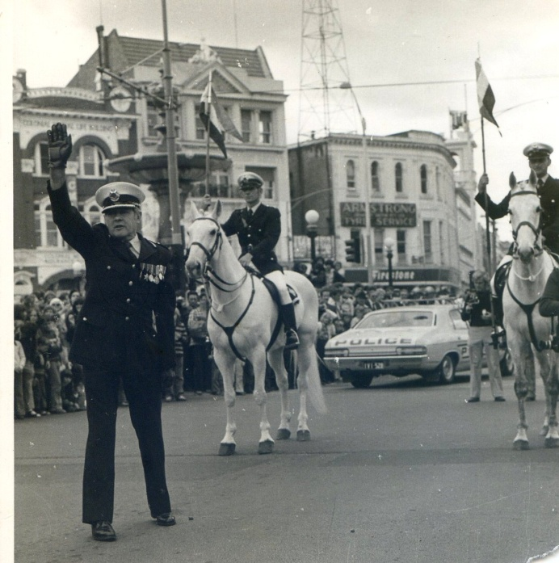
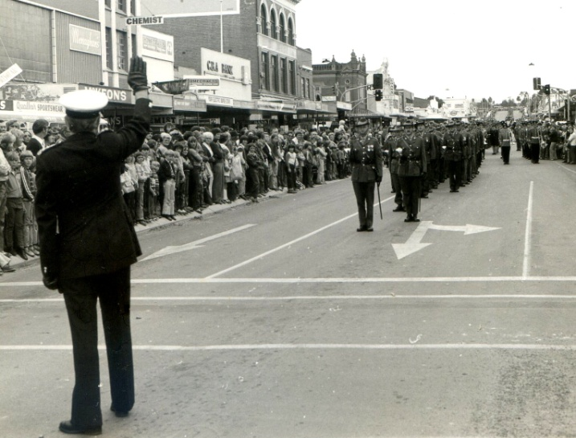
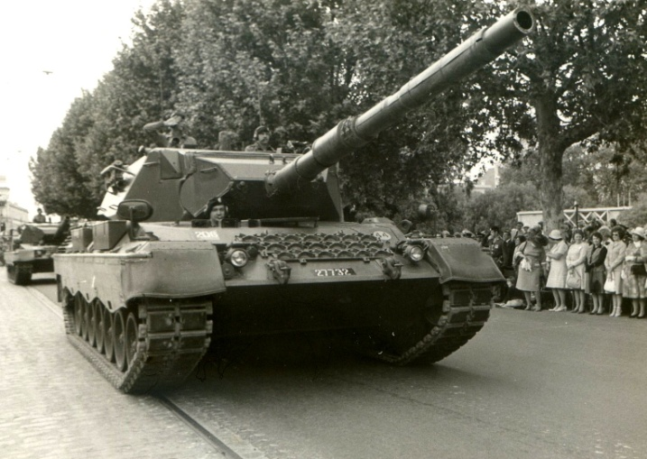
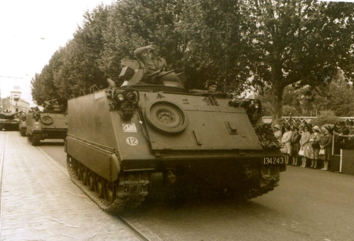
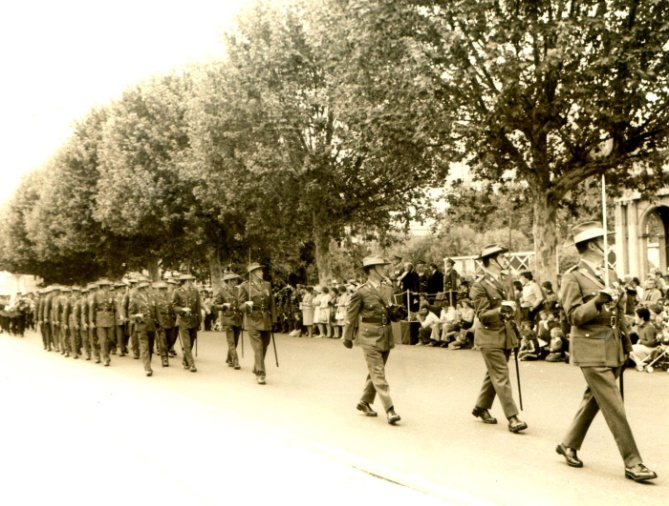
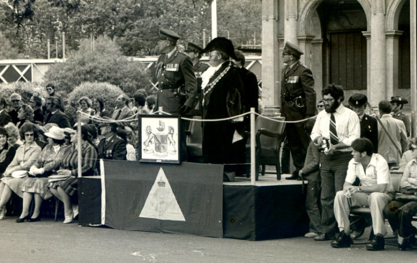
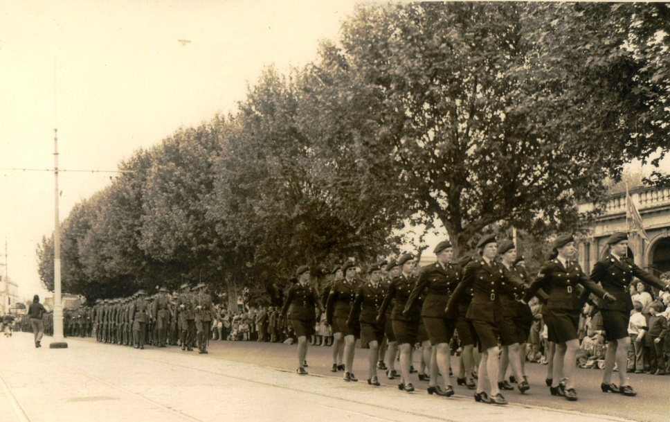
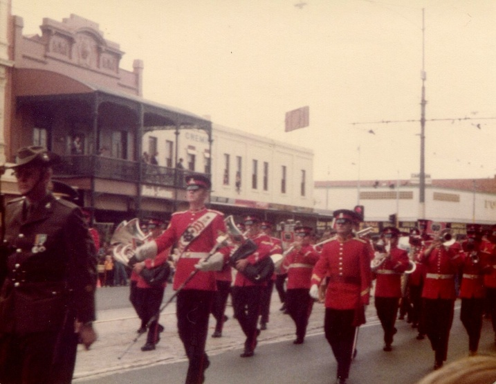
THE GARDEN PARTY at FORTUNA
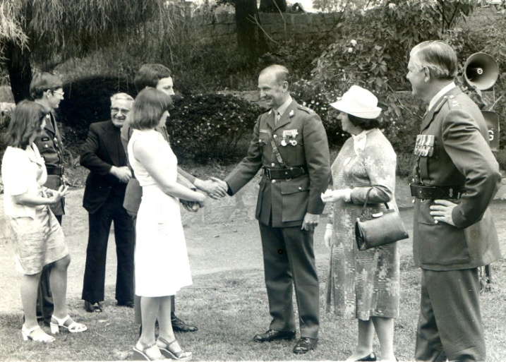
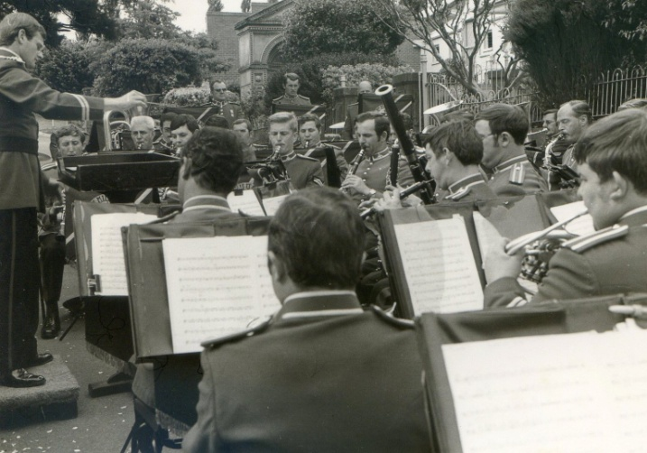
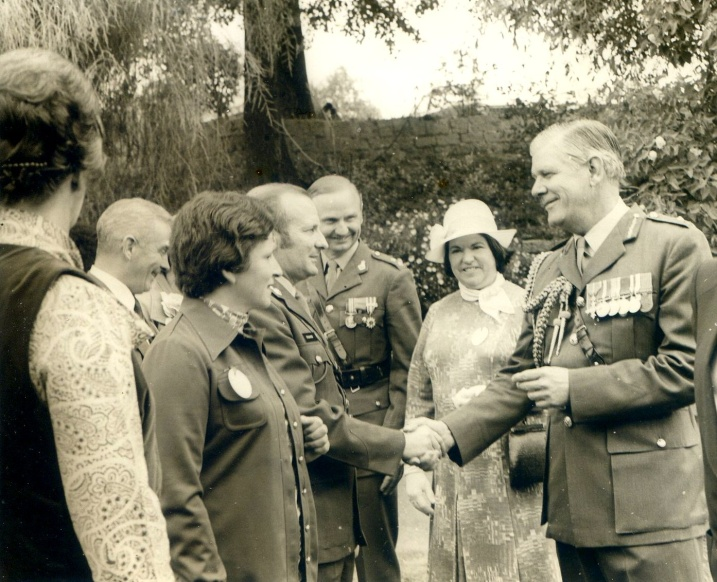
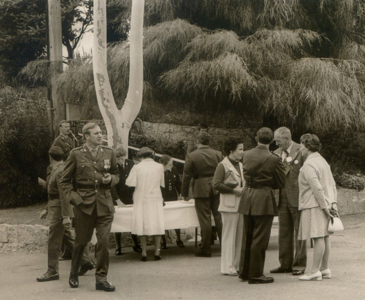
My Second-in-Command (2IC)
Major Noel Sproles was my Second-in Command (2IC). His specific duties were hard to define. They generally covered all aspects of administration – personnel matters, logistic support and I suppose being the eyes and ears of all that happened in the Regiment; perhaps also, the confidant of the Commanding Officer. It was not in any sense a ‘hands on’ role. The Squadrons, including Headquarters Squadron had their own Officers Commanding (OCs) – Majors. There was an appointed Administration Officer (AO), usually filled by the WRAAC officer, a captain. The Quartermaster was also a captain. Each of these was responsible for discipline and administration within their own sub-unit. Furthermore the Q Store, transport and administration functions were all sub-elements of Headquarters Squadron. So what actually was the effective role of the 2IC? The role as described had always been the case with previous 2ICs over the years. Increasingly I found I was becoming dissatisfied with the role. It seemed to me to be not achieving or contributing a great deal. Perhaps that was Noel reflecting his own personality which was undemonstrative and on the surface almost disinterested. At times he might bring a matter to me, reflecting concern at something he saw as remiss and I would invariably find it trivial, of little concern. Nevertheless I always supported him. I liked Noel and had known him since he came to Survey. We were lieutenants together in the old Northern Command Field Survey Unit. And of course now in Bendigo he was my neighbour in Herbert Avenue.
Noel departed the Regiment in July 1978 on promotion to lieutenant colonel to take up the Indonesian appointment in Jakarta where he served with distinction and was replaced by Major Don Swiney MBE – more on that later. I took the opportunity to reallocate responsibilities making Don specifically responsible for production coordination covering all three squadrons. He had the support of the Production Control Cell, now headed by Captain Simon Lemon who replaced that man for all seasons John Sinclair who was posted to the School. John completed his short service commission period and returned to Canada.
Overseas attached personnel
The Royal Australian Survey Corps had personnel exchange arrangements with the United Kingdom, Canada and the United States from each of their military mapping agencies. Exchanges were made at both the officer level and warrant officer/sergeant levels. The UK exchange arrangement for officers continued for many years, commencing probably in the late 1950s to well beyond 1981. Exchanges for NCOs were more sporadic. The Canadian exchange lasted for maybe ten years and the US exchange for less than that. It was a great experience for those who were chosen to participate. Incoming exchange personnel were generally based at the Regiment although several served on detachment with the field squadrons and participated in field survey operations in Papua New Guinea and northern Australia. Exchanges were for two years and in my experience several were of outstanding value to the Corps. Officer exchanges from UK were at the rank of captain (sometimes promoted to major), from Canada, captain or major and the USA, major. I can certainly recall our first UK exchange officer in 1958. He was Captain Tony Bomford RE who was with us on the Charters Towers-Tennant Creek Tellurometer Traverse with Captain Jim Stedman as OC. Tony’s father was the illustrious geodesist Brigadier Bomford whom he always referred to as ‘Pater’. Tony subsequently left the British Army and came back to Australia to take up the appointment of Chief Surveyor with the Commonwealth civilian mapping agency, the Division of National Mapping. He later became Director of that organisation. Dave Carney, a Canadian exchange officer completed his military career as Director of Military Mapping in Canada. Exchange officers and NCOs served in their area of technical expertise and we had had lithographic British exchanges. Most others were more generally cartographers and surveyors.
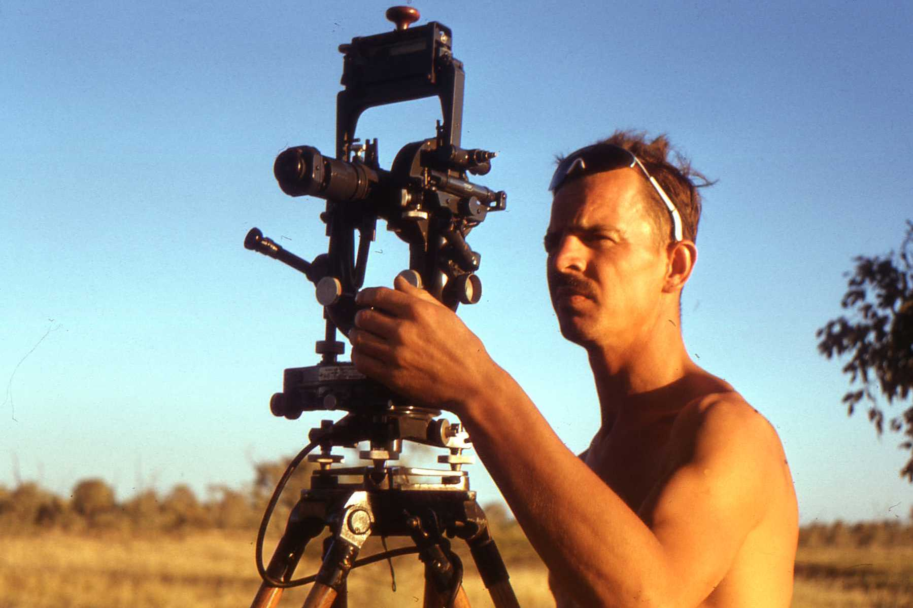
In my four years as CO of the Regiment we no longer had a Canadian exchange, the aforementioned John Sinclair had been the last one. John Collins with his wife Sue was the British exchange officer when I arrived at the Regiment. He was close to the end of his exchange period, had only three or four months to go and I didn’t get to know him all that well although Wendy certainly knew his wife Sue. John had spent considerable time with the field squadrons – the Adelaide based 4 Field Survey Squadron on operations in the Northern Territory and central Australia. John and Sue have made several return visits to Australia visiting old colleagues. John was replaced by Captain Iain Whittington (promoted mid-tour to Major) and his Norwegian wife Evaline. We became good friends with the Whittingtons, a friendship that although distant has lasted to the present day. Iain spent his two years with the Regiment in Air Survey Squadron. He was an excellent officer and participated fully. Iain was followed by Captain Peter Searle whom I did not get to know all that well. I gathered that he had some sort of private income that enabled him to rent a very fine home a little out of Bendigo.
Major Sam Thompson, our first US exchange officer had already been at the Regiment for some months when I arrived – perhaps a year. Sam was a graduate of West Point and a US Ranger – the elite of the US Army. He was also qualified with a PhD from one of the top technological universities of the US. Could we do better than that? He had been put in the Tech Development Cell as its Officer in Charge and researcher. Major Frank Bryant had been the Officer in Charge and over several years had made a huge contribution to the Corps in computerised mapping and was the project officer for Automap. He had been awarded the MBE for his remarkable efforts. Just how that arrangement came to be I had no idea – it had occurred before my arrival. A more detailed statement of Frank’s achievements is given on page 108 of Mapmakers of Fortuna. It was a concern to me that Frank did not get on at all well with Sam Thompson and I could never understand why and perhaps there was an element of jealousy on the part of Frank. In this sense Frank tended to be a ‘prima donna’ and I knew he had that reputation from the past. I must point out that I had the highest regard for Frank Bryant so I found all this very disappointing. I asked Sam Thompson to my office one day to have a quiet chat to him. He was always very courteous and proper in his relationship with me – in a military sense that is. I told him I was taking him out of Tech Development and placing him in Air Survey for want of an administrative location but giving him an independent role as a ‘stand alone’ research officer. I asked him what he wanted to do and his response was immediate – he wanted to investigate the ‘error budget’ in map production, that is, to achieve no measurable inaccuracy in the final printed map product – usually stated as one half of a millimetre – what level of precision needed to be achieved at each step of the production path from field survey to printed map. His remaining time at the Regiment was less than a year and he set that as his goal and achieved it. I say more on that later.
The only time I was ever short with Sam Thompson was over the issue of mail – personal mail. For reasons I failed to understand his personal mail from the US came to him through the US Consulate in Melbourne. It came from the US in the diplomatic bag, presumably at no cost to the sender. His own personal mail went to the US the same way. It had been arranged before my arrival that on the weekly courier run to Melbourne – to Victoria Barracks and anywhere else where the Regiment might have business – the courier would call at the US Consulate to collect the US exchange officer’s mail. The consulate was not central in Melbourne and nowhere near Victoria Barracks in St Kilda Road – somewhere in Prahran or Toorak I think (two of Melbourne’s salubrious suburbs) and on this one occasion the young driver had become lost trying to find it. Perhaps he had not been given adequate directions but for whatever reasons he failed to pick up Major Thompson’s mail. Sam bounced into my office in the late afternoon of the day in question up-tight and angry, apparently it had happened before. I responded in kind and suggested that if the US military system was not prepared to use Australia Post as for other overseas exchange personnel, then he needed to accept any mishaps that might occur. Picking up his personal mail was in any case an imposition. He saluted and left. (In the US army it was accepted practice to salute without headdress). In the event I arranged to have his mail collected a day or so later.
Sam Thompson departed mid 1978. He had completed his study of the error budget. It was comprehensive and very well written – to me easy to understand. I do not recall much of what it said other than it confirmed our levels of precision at each step of the production process with perhaps some recommended adjustments. It contained a good deal of error theory as one would expect but the overall logic he applied was stunningly simple. Unfortunately it was not well received within the Corps. Frank Bryant was very critical claiming it was unscientific – not enough mathematical formulae I assumed; it had some – and overly simplistic. However, I had to see that against his personal enmity towards the author. A copy was sent to our Directorate and the Director John Hillier was little short of furious about it and of course some of that fury rubbed off on me for authorising it in the first instance. Like most of John Hillier’s fury it abated quickly. A further hiatus developed maybe a year later when a fairly lengthy article based on the study was published in a prestigious United States cartographic journal with the authorship of Lieutenant Colonel L.G.Thompson PhD. I never saw the article but I was told that it gave full credit to the Royal Australian Survey Corps and the Army Survey Regiment, maybe implying that it had been adopted by the Australian Army. John Hillier made the case that the study was done in Australian Army time and was the property of the Australian Army and Sam Thompson had no right either legally or morally to publish it under his own name. The matter went no further. As a postscript I always found Sam Thompson a very pleasant and courteous officer, in the tradition of other senior US officers I had previously known particularly from my Vietnam days but of course one could not expect other than that from a West Point Graduate.
Sam Thompson was followed by Major Sam Schwartz, a very different officer from his predecessor. Sam Schwartz was a mechanical engineer – well qualified at that but no PhD. His forte was print and he was certainly at home with our lithographic printing machines. I put him into Lithographic Squadron, again as a sort of super-nummary research officer. He fitted in well, seemed very happy with the situation and remained there for his two year exchange. The Schwartz’s, San and Lisa, were well liked by all. They involved themselves in the social life of the Regiment and as far as I was concerned Sam was a useful officer. A problem (only if one made it a problem) was that exchange officers and I think especially US exchange officers could not be in a command role under some sort of international military convention. Sam Schwartz was an ebullient fellow and that tended to get up the nose of some, especially my 2IC Don Swiney but as far as I was concerned his acceptance by the soldiers of Lithographic Squadron meant much more.
Indonesian mapping
In my writing so far I have made passing mention of Indonesian mapping. Since 1970 the Survey Corps had had a long and ongoing commitment to Indonesian mapping under the Defence Aid Programme. It was a very heavy commitment both in the field where we had quite large field teams going to the various component parts of Indonesia annually for periods of three and four months carrying out mapping control surveys, Kalimantan (Borneo), Sumatra, Irian Jaya (West Papua) and most other parts other than Java and Timor. All of these operations were mounted out of 2 Field Survey Squadron in Sydney. Aerial photography was flown by the RAAF from their converted Canberra bombers. So what was the Regiment’s role in all of this? The Regiment was responsible for aerotriangulation and photogrammetric block adjustment of all aerial photography. Although the Regiment was the most advanced mapping organisation in Australia, our large mini-computers were far below those of the present day and the process of selecting pass points and transferring them from run to run was still a painstakingly manual process. Since the Regiment was seen to stake its reputation on the number of completed and published maps in any one year the Indonesian commitment ran counter to that. Of course we kept copy of all we did, all the photography, all the glass diapositives and aerotriangulated data all of which was against the ‘Heads of Agreement’ between our respective governments. As one Intelligence guru who visited commented ‘this must be the intelligence coupe of the century’. The point of that was what we held would allow us to produce maps of Indonesia at any time we chose. Why would we do that? – Our relationship with Indonesia was not close and lay on a bed of mistrust and suspicion. In my Singapore writing I go into some detail on the clandestine nature of that first Indonesian mapping operation based at Pontianak in Kalimantan. The photography was flown by the Royal Air Force (RAF) out of Singapore.
But at the working level we got on remarkably well. In the field every Australian solder had to have an Indonesian companion ostensibly for training but more to discourage any pseudo-spy intelligence gathering. Many friendships were forged. The fact was we had no interest in spying for our own intelligence agencies, only in mapping. And then at the Army Survey Regiment I was notified that not one but two Indonesian lieutenant colonels were to be placed with us to overview our entire Indonesian operation. They were to remain with us for ten months. They duly arrived in about February 1979 departing in November 79. (my dates may be imprecise). They were Lieutenant Colonels Butarbutar and (Dr) Asmarul Amri and with Captains Isbudiatmo, Saptomo and Karnawihardja. I was not expecting three captains nor was I expecting a warrant officer and one or two NCOs. What did they all do in their time with us? Butarbutar was a Christian coming from an area of Sumatra that was apparently predominantly Christian; he spoke excellent English and was a very personable fellow – rather overweight and enjoyed a good time. Dr Amri was Moslem and kept mainly to himself; had some English and seemed to understand the cartographic processes – perhaps that was where his doctorate lay. He was also very pleasant but not ebullient and outgoing like Butarbutar and had a clear love of children. I really did not get to know the captains. They of course were Moslem as were the warrant officer and NCOs. Although they all had access to the officers’ mess only Butarbutar ever appeared. Each of the three captains was allocated to the three production squadrons. Dr Amri chose Air Survey Squadron and the warrant officer and NCOs similarly. It was all under the control of Butarbutar and I did not interfere. If there was a problem I referred it to Butarbutar. Did they, or more especially Butarbutar know that we were operating outside the terms of the Heads of Agreement? I suspect they did but so long as we were discrete the matter was never raised. Butarbutar and Amri were certainly not stupid – why else would we be doing all this work if we were not getting something out of it? Where did they all live during their time with us? I have no specific record of that but certainly not at Fortuna. They took over a fair chunk of a motel nearby, something that had been arranged by the Indonesian Embassy or more likely the Indonesian Consulate in Melbourne. I had no part in that arrangement. Only one problem was ever raised and that was when one of the NCOs made a pass at an Australian girl. I only came to know of this after the event – he suddenly disappeared from our midst and was returned to Indonesia very pronto. No police charges were laid.
And so the year progressed. Butarbutar took up a good deal of my time. Don Swiney my 2IC who had not long before conducted several of the Indonesian field operations seemed to maintain a distance from the Indonesian officers and was clearly not in any way warm to them. I think he regarded Butarbutar as a bit of a buffoon. I felt a degree of obligation to ensure that they were not socially ostracised, especially at the weekends. I invited Butarbutar to come to church with Wendy and me and he did so. He claimed that he was Lutheran and I knew that was quite similar to the Anglican Church. Afterwards he might return to my home for morning tea although I think that only occurred once or twice. None ever participated in either ANZAC Day or Remembrance Day. Somewhere midyear on a Sunday a barbecue was arranged (by whom I cannot recall) at a park area a little distance out of Bendigo. It was a pretty area adjacent to a running stream. A number attended, families with children, and all the Indonesians, certainly the officers. It was there that I observed how Amri enjoyed the children joining in their games.
The Indonesian year came to an end (for me with a sigh of relief) and at Wendy’s suggestion we held an Indonesian night at our home. Butarbutar undertook to do the catering and he had two of his NCOs actually do the cooking. A menu was prepared (I retain a copy) by whom I am not sure, however, I recognise the type style from Wendy’s old portable typewriter. I note on the back of the menu the words of seven Indonesian songs – in Bahasa Indonesian. Did we try to sing those? I cannot remember.
Sometime after the departure of our Indonesian contingent we commenced the production of Indonesian Joint Operation Graphics (JOGs) to an American specification at the scale of 1:250,000. These were produced from larger scale compilations from the Indonesian Topographic Command (Corps Topographi). They were without doubt the worst map compilations I had ever seen, however, we did our best. I am not sure for how long that commitment continued – it was one that we could have done without and must have impacted on our raw production figures.
Printer’s pay dispute
This was a problem I inherited. It had been rolling along fitfully for several years. It is well covered in Valerie Lovejoy’s Mapmakers of Fortuna. The essence of the problem is as follows......
Fully trained and qualified Survey Corps soldiers in all technical branches of the Corps – surveyors, cartographic draughtspersons, photographers and printers – had always enjoyed the top level of military pay. In my own case on graduation from the School of Military Survey I was graded in the very simplistic pay level concept that existed in the 1950s, ‘three star’ On promotion to sergeant I went onto a prescribed ‘higher skill’ level of pay. The old ‘star’ system was replaced by seven groups of pay in about 1960 and of course all Survey Corps personnel became group seven, including printers. Army pay levels were always something of a political football and in 1967 the seven group system was replaced by an open ended pay system to align military pays with civilian equivalents. In the new system surveyors and draughtspersons went on a rising scale from group 12 to group 17. Lithgraphic trades began on Group 7 and could only progress to Group 11. This put them on the same level as printers at the Defence Printing Establishment at Brunswick who rarely printed anything in more than one colour. There was intense dissatisfaction within the Lithographic Squadron and the local press, the Bendigo Advertiser suggested ‘mutiny’ was afoot. That was an overstatement of some magnitude but perhaps it caused senior officers and defence public servants to take note.
Mr Justice Kerr (later Sir John Kerr and a very contentious Governor General of Australia) was chairman of an inquiry into service pay and conditions. He was requested to visit the Regiment to investigate the issue, as a priority. The Committee with Justice Kerr visited the Regiment in 1971 – the Kerr Woodward Committee – the outcome of which was to re-establish parity with the other survey trades. In fact it gave printers a pay advantage that probably was not intended – they became group 17 from the time they completed their ‘apprenticeship’ period and their three year course at the Melbourne School of Graphic Arts. According to Valerie Lovejoy in her ‘Mapmakers of Fortuna’ considerable dissent developed at the Fortuna at the obvious inequity although I believe she overstates this. I of course was not at the Regiment during this period; in 1971 I was at Staff College, then the School of Military Survey and then 1 Field Survey Squadron in Brisbane but nevertheless I heard a good deal about it from others.
So, when I arrived at the Regiment in January 1977 printers were enjoying their elevated scale of pay, perhaps in excess of survey and cartographic technicians although I thought that also was overstated, often taking at least five years for a printer to achieve that level often including two years preparatory as ‘dogs-bodies’ in the squadron before being offered the School of Graphic Arts course. But yet another service pay review was to take place in 1978 by the Committee of Reference for Defence Forces Pay which recommended a down grading of printer status from ‘technician’ to ‘highly skilled tradesmen’ with commensurate reduction in pay levels. The Government accepted the recommendation of the Committee and the pay reduction was to be achieved by denying printers (and a couple of supporting trades such as lithographic draughtspersons) periodic cost of living pay adjustments which at that time were quite considerable.
I was convinced of the injustice of the decision and wanted to avoid the situation that had occurred back in 1968 when there was a near mutiny and some pretty adverse comment by some although the Bendigo Advertiser always supported the printers or maybe more specifically their wives. I took several steps during the following months.
I well knew that we needed support at the political level and first discussed the issue with our local federal member Mr John Bouchier who was at the time in the Fraser Government (Liberal) the government whip and quite influential. The issues were also raised in federal parliament by Senators Don Chip (Australian Democrats Party) and Gareth Evans (Labor). Boucher raised the matter with Jim Killen, Minister for Defence.
I sent Lieutenants Gary Kenny and Terry Edwards to Melbourne to discuss the issue with the head of the Printing and Kindred Industries Union to get a better understanding of the pay levels that applied to civilian printers in the industry. They reported back that there were substantial over-award payments made for skills and the type of products printed and that he saw defence map printing being at the top level of the industry. I recall Gary commenting that the union head had expressed surprise that the ‘bosses’ of the printers concerned would be pressing the case for their employees but of course he didn’t understand the Army. I followed up these actions with a detailed letter to Defence Central (I think) and no doubt a copy to our Director emphasising the nature of cartographic printing, the skill levels it required and where it fitted in to the whole map production process, pointing out that the levels of precision in the field and in cartographic production could be blown completely by shoddy printing – or words to that effect. I don’t think I would have mentioned the advice we had from the Union – I had to be a little cautious. Colonel Hillier was surprisingly mute on the subject.
In the event the denial of cost of living adjustments was held in abeyance until a further investigation was carried out. A ‘work value inquiry’ took place in early 1981, after I had left the Regiment which led to a much more equitable pay system that aligned printers pay at the same levels as that which applied to survey and cartographic technicians. The printers were re-designated as lithographic technicians.
There were two associated incidents that occurred along the way. One was a visit by the Minister for Defence Mr Jim Killen. He stayed for an hour or more – overstayed his allotted time in fact. His visit gave me an insight into how senior ministers operated. He had an entourage of at least three ‘minders’ as well as John Bouchier (I found him a little irritating – wanting to take over all the time). I had had advice of the visit mid afternoon and had all officers and of course printers and other lithographic soldiers remain on duty until after the Minister departed. The Regiment was required to keep a dedicated trunk telephone line open the whole time the Minister was there. He duly arrived, probably about four o’clock and I took him on a quick tour of all the working areas, his minders and John Bouchier in tow. I think I had the RSM WO1 Aub Harvey in step with me – Aub in Sam Browne and looking impressive and very much the RSM. I was aware that the Minister liked a bit of formal ceremony. Killen seemed tense and almost disinterested, as if his mind was elsewhere. Bouchier kept buying in somewhat annoyingly. Then we went to Litho Squadron where the Minister was greeted very politely. As requested I had arranged that a small delegation of printers would present their case to the Minister and this duly happened. I found it hard to assess whether he had taken it all on board. He was called to the phone during the discussion but he was away only a short time. I thought the printers delegation, I can’t recall who was their spokesperson, handled it very well. One of his minders had been scribbling notes throughout the briefing. It all took place against the background of our several multi-colour printing presses. It was quite impressive. The Minister thanked them for receiving him – I think he received a round of applause and finally we withdrew to the officer’s mess for drinks and a few nibbles provided by the kitchen at short notice. He met and shook hands with most of those present. He was certainly more relaxed with a Scotch in his hand. He then passed a comment to me just before departing which left me a little bemused. He said “to me this is what the Army is all about”. He said it as he looked around the decor of the long room, the stained glass windows with the bird motifs, the newly replaced regal patterned carpet on the floor, the snug and the bar room with the bent .303 rifle suspended above the bar. While I appreciated the comment I thought the Army must surely to the Minister for Defence be about much more than the comfort of the officer’s mess. He departed with his entourage of minders. Soon after. John Bouchier left separately, probably for his Bendigo home. He was an honorary member of the officer’s mess – it went with the office. I learned a little after his visit that Mr Killen’s wife of many years had died a few days before. Such is the life of a politician!
The other incident concerned the printer’s wives. The incident is well recorded by Valerie Lovejoy in her history. It occurred on the 1st of September 1980. At that time there was very little action soldiers could take in a dispute other than ‘redress’ action as prescribed by military law. From experience most knew that would achieve little and may even limit future prospects of career advancement. But of course wives were not subject to military law and that was the way it was seen by the printer’s wives. This unilateral action of the army hierarchy in reducing their husband’s pay packet impacted more on them than the soldiers themselves. They controlled the family budget and like most in the civilian community they were committed to the limit, many with mortgages to maintain having purchased homes of their own within Bendigo. They were not irresponsible people; they had families with children to maintain. In my experience wives had no great love of the army and few shared their husband’s commitment. Printer’s wives in particular lived a life akin to any civilian wife in Bendigo. Printers had little likelihood of a posting and their employment at Fortuna was little different to any Bendigo civilian employee.
My driver picked me up one morning and commented ‘Sir, you might get a surprise at the main gate’. He would say no more and had he done so I might have suggested using the rear gate to the property. I was confronted with half a dozen printers wives armed with saucepans and spoons beating the saucepans with the spoons and making a minor racket. I drove through and gave them a wave in passing. They may have been there again the following morning but I made sure that I didn’t run the gauntlet again. Really – I was on their side. Enough said. Needless to say the story made great copy in the Bendigo Advertiser the next day.
Finally the printers pay dispute was resolved soon after I left the Regiment on the recommendation of the ‘work value inquiry’. I noted the fact that my successor, Lieutenant Colonel Frank Thorogood was quite comfortable in basking in the credit for that during his three month tenure in the appointment. The printers knew differently and made that clear to me when I visited the Regiment a few years later as a civilian.
Another ‘Printer’ Issue
Our printers and associated lithographic trades for many years had the privilege of attending the Melbourne School of Graphic Arts part time certificate course graduating after three years, maybe more. They attended one day a week and then one or two weeks block towards the end of each year. We provided army transport from Bendigo each week if they needed it although most chose to use private transport. For the block period they could stay at the Watsonia Personnel Depot although most arranged private accommodation. For the printers and others at the end of their three years they had achieved a civilian recognised qualification, a great attraction. This arrangement had been the case, probably since WW2 or soon after.
Lieutenant Colonel Frank Thorogood was the SO1 Personnel in Survey Directorate and, being a printer himself and having served a full apprenticeship before joining the Corps he believed he knew (and probably did) the print trades inside out. He believed the School of Graphic Arts training for the litho trades at the Regiment giving them a civilian recognised qualification would encourage printers and associated trades to leave the Corps and opt for civilian employment. There was not a scintilla of evidence to support that contention; in fact I believed the contrary was more likely. Frank would have his way and the School of Graphic Arts course came to an end for all new starters. We never had more than five or six attending at any one time – it was not a big deal. I fought the battle to have the course retained and it lingered on for a while but in the long run I lost the battle. A clapped out old Heidelburg single colour offset press had been installed at the School where it was intended that printers would in future be trained. I think the other litho trades people were trained on the job. It was a most unsatisfactory arrangement and greatly resented by the litho people.
Visits – expected and unexpected
Dealing with the expected first – I was advised sometime in1979 that the Regiment was to be visited by the Defence Industrial Mobilisation Course (not its correct title but something along the same lines). The course had been in existence for some years. It was of twelve months duration and students, if one could call them that were from a range of industrial and commercial organisations and were of a level a little below top management. Course days were along the lines of a week each month during which time the panel of students visited defence facilities all over Australia, mostly travelling by defence aircraft – Caribou and Hercules, whatever could be made available. Anyhow, the Army Survey Regiment had been allocated one day and I think that might have been the first ever. I sent a brief around the Regiment advising the visit and requiring all to present in smart clean uniforms, no soiled dustcoats (these had crept into use over the past few years) or grubby overalls (in print troop) and to look busy. I could only guess that it worked.
The course arrived by bus from Melbourne about 10.00 am, in time for morning tea in the long room of the officer’s mess. I had arranged for the kitchen to provide adequate fare by way of tea, coffee, cakes biscuits and sandwiches. Since it was an official visit we were able to put the twenty or so students onto the ration scale for morning tea and lunch. A couple of majors accompanied the course. All officers were present and after half an hour the students were divided into three groups each with an assigned officer and taken to each of the production squadrons. Each student also was given a well prepared hand-out of several pages detailing the role of the Regiment and the sequence of map production from field to published map. I may have said a few words by way of introduction soon after their arrival. All went well and they returned to the mess for a buffet lunch at 12.30 pm and then completed their tour in the afternoon. All were astonished by what they had seen, having no idea that the army had such a comprehensive facility of that level of computer technology, and of course Fortuna itself. Several had taken a lunch time stroll around the lake and surrounding garden. Before departure they gathered in the long room of the officer’s mess and their chosen spokesman thanked all and sundry and after a round of applause departed on their army bus waiting in the carpark.
The totally unexpected visit was from the Premier of Victoria Rupert Hamer and the Victorian State Cabinet. Cabinet had met in Bendigo that day as part of a programme for Cabinet to meet at various provincial cities throughout Victoria from time to time. Such meetings were usually followed by an open public forum and that was to occur that evening. It was probably about 3.00pm when by phone call from a State Cabinet secretary I was asked if a visit to Fortuna by Cabinet might take place and of course I had little option other than to agree. I immediately phoned HQ 3MD, and was put through to the commander’s office, Brigadier Kendall. He thanked me for letting him know and simply said make them welcome. I also let my Director in Canberra know – he sounded suspicious and I assured him that the interest was in historical Fortuna and not what we did. Anyhow, he knew and would not be surprised if something came to him about the visit from some other source as was bound to happen. Cabinet arrived about 5.00pm in their convoy of large cars. I met the Premier in the car park, thankfully empty of soldier’s cars by then and with the twenty or so Cabinet members in tow we went on a tour along the same lines as our regular tours. Maybe I gave each member one of the tourist hand-outs we normally used. The Premier had little to say and at times seemed irritated by some of the chit chat comments by some members of his entourage which I also thought were rather inane. Nevertheless, he was very pleasant and thanked me for tour, declined an invitation for a drink in the Mess and they all departed in their big chauffeured cars. While I knew what their interest was I really didn’t know ‘why’ their interest. The Victorian Government was very keen on preservation of historical buildings and a few years later rescued the Shamrock Hotel down town and a similar hotel in Melbourne. Fortuna was not up for sale but stories of the Regiment moving elsewhere kept cropping up in the press. More on that later.
Sport in the Regiment
As previously stated sport was an integral part of army life and with few exceptions army units played sport in one form or another on a Wednesday afternoon. The Regiment was no exception. My predecessor Peter Constantine, probably believing that there were those who used Wednesday afternoons for anything but sport, and he was probably right, cancelled all internal and external sport and introduced ‘tabloid sports’ within the grounds of Fortuna. It was intensely unpopular as was the ‘House’ allocation of personnel previously described, the latter being some sort of ‘public school’ model to which no one had any sort of allegiance. I reverted back to inter-squadron competition and encouraged individual participation in community sport. A Regiment team regularly played Aussie Rules against the inmates of the Bendigo Prison. I watched one or two matches, maybe more. There was never an incident of ‘escaping convicts’ as a result of this participation.
I encouraged the formation of sports clubs formed within the Regiment, one for each sport played. Each club was required to have a small committee of management and encourage novice participation. There were clubs for cricket, sailing (I will say more about our sailing efforts later), a couple of the football codes, tennis, hockey. Club management was held responsible for ensuring attendance records – each event was effectively a place of parade and participant lists had to be submitted to the RSM.We also had a designated officer, one of the junior officers to be IC Sports. Work priorities always took precedence and if deadlines were to be met for a particular reason then work prevailed. That was up to Squadron OCs.
I certainly had not arrived at the Regiment with the thought of forming sporting clubs uppermost in my mind. That idea gradually evolved and it may have been eighteen months before clubs for each approved sport were fully operational. Not all ‘sports’ received an accolade, for example fishing! Even tennis did not receive instant approval since most players spend much of their time sitting on their butts waiting to go on. Sport to be approved had to be fairly physical. Only when I realised that the tennis venue had several courts did I finally agree. It was a pity that the Regiment’s own tennis court, established by past CO Frank Buckland in the early 1960s (Bucko was an avid tennis and squash player) on the filled middle lake was in disrepair and barely useable for tennis. At one point I endeavoured to attract funding from the Military District Amenities Fund to have the court refurbished with an ‘entrecote’ (I think that’s the name) surface (artificial all weather) but I think the intent was not pursued after my departure.
I only recall one instance where a charge resulted from a member nominating for a particular sport, tennis I think, being found mowing his lawn at home. He was a corporal and was duly charged by the RSM with being ‘absent from a place of parade’. I awarded him a ‘reprimand’ – ripping a strip off him in a formal ‘orderly room’. As it happened he lived in the same street as Wendy and me and on occasion when we had a ‘street event’ I found myself socialising with him and his wife. He was inclined to take advantage of that and I gave him a very stern look when he addressed me as ‘Bob’. He reverted back to ‘Sir’ quite promptly. A reprimand for a junior NCO can be more serious than it sounds and can delay further promotion for a year or two. Whether that happened in his case I suspect not – he was a good cartographic technician – but it probably gave him something to think about.
There were other sporting events throughout the year, three that come to mind.
Sailing
The three defence branches that is, Navy, Army and Air Force, participated in competitive sailing. Their particular class sailing yacht was the ‘Corsair’ made by ‘de Havilland’. It had an extruded aluminium hull, 16 feet in length designed to be crewed by three. On my arrival the Regiment had one Corsair and a very interested sailing team. Warrant Officer John McCulloch was the Club ‘Commodore’ and the club’s Patron, honorary Commodore perhaps, was Lieutenant Colonel Don Ridge, the Regiment’s CO 1973-75. Our Corsair was named after the CO’s wife at the time of its acquisition – the Ruth Glenys Ridge. Probably at the time of Don Ridge the club was granted official recognition as the Bendigo Squadron of the 3rd Military District Sailing Club.
I had some misgivings about giving the sailing club Wednesday afternoon club status (they could sail at the weekends to their hearts content) but John McCulloch was a very persuasive warrant officer and on the understanding that sailing on Wednesdays would be devoted to novice training I agreed to let it happen. A few of our fellows had sailing dinghies of their own, smaller than the Corsair, ‘125s’ were popular in Bendigo, maybe a Sabot or a Mirror and these were included in the Club and allowed for some competition.
Where did they sail one might ask since Bendigo is a very ‘inland’ city far from the water, more especially Port Phillip Bay at Melbourne? Our sailing club sailed on Lake Eppalock on the Campaspe River, 25 kilometres east of Bendigo, about a half hour drive. At top level it was quite a broad stretch of water used extensively for water skiing and sailing but nowhere near as broad as Lake Hume on the Murray River with the School of Military Survey on its bank. Eppalock could diminish greatly in times of drought since it was used for irrigation. Also it wasn’t a particularly windy stretch of water and the wind could be quite flukey much of the time. That was to be to our advantage as it turned out. In 1979 the Regiment’s sailing club won the inter-service sailing competition on Port Phillip Bay. The week of the competition was a week of soft flukey winds to which our sailors were very accustomed and they won the week long competition hands down. Apparently the Navy and Air Force sailors found the conditions frustrating and all but gave up. What an accolade to win the inter-service sailing!
A very nice thing happened in 1980. We acquired a second Corsair as a result of the shutting down of another unit and we were offered their Corsair. This meant that two crews could race each other. And the particularly nice thing was the Club in keeping with the naming of their first Corsair chose to name our second Corsair the Carolyn Wendy Skitch. Well – that was certainly one way of maintaining the continuing support of the CO. The Carolyn Wendy Skitch was duly re-launched and christened by Wendy tipping the contents of a bottle of Champaign over its bow. I like to think that the Regiment’s sailing prospered after my departure from the Regiment and the Army in January 1981. Perhaps it did although my immediate successor was not particularly supportive of the Regiment’s sporting involvement and had he stayed longer than three months would probably have curtailed them.
The ‘Irwin Cup’
I became aware (I don’t think I had been briefed on the matter) that we had an annual target shooting competition with small bore pistols (against 42 Survey Regiment RAE in the UK. How did we arrange such a competition against a team so far away? I have no idea who initiated the event, perhaps by one of our past COs; Frank Buckland comes to mind. I don’t think it had been contested for some time – certainly it had never been won by the Army Survey Regiment. Pistol target shooting was not really an Australian Army activity although in Singapore the British Army seemed to indulge in it and I had done so with 84 Survey Squadron RE. Major Iain Whittington was our British exchange officer at the time and he was aware of the competition and after a short discussion we decided to give it a fling. The way it was organised, the British exchange officer supervised the shoot at our end and the Australian exchange officer to 42 Survey Regiment RE supervised the shoot at Hermitage UK. At the completion of the shoot, and there were all sorts of rules, our paper targets about 30cm square, were sent to 42 Regiment, having been verified by the RE exchange officer with the reverse from UK. It took about a month to resolve.
I was determined that we would win and I found that a member of my Rotary Club was a competition short range pistol shooter. Furthermore Bendigo had a 25 metre indoor pistol shooting range. The gentleman concerned was Mr Milne whose family owned a large rural hardware and machinery shop in Bendigo and I talked him into coaching our team – about six shooters I think. From the previous annual regimental shoot I selected the six who had qualified as marksman or first class shot and with their enthusiastic agreement they practiced under Mr Milne’s watchful eye giving them advice on breathing and better ways to hold the pistol – rather un-military – a ‘cup’ hold I think. I think that Iain Whittington thought that was a bit unsporting but it wasn’t against the rules. The shoot finally took place and after the exchange of targets I was delighted to find that we had won hands down. So the next thing was to winkle the Irwin Cup out of 42 Regiment where it had pride of place in their trophy cabinet – proof that they were better shots than we colonials! As it happened Colonel Hillier was attending the ABCA13 Conference in UK – and I briefed him of the Irwin Cup competition and he left determined to bring the cup back. Needless to say the Poms were reluctant to release it but they did and John Hillier returned triumphantly with the cup where it took pride of place – centre front – in our own trophy cabinet.
Apparently the cup – solid sterling silver – was a gift to 42 Regiment by Brigadier Irwin who was at the time the Director of Military Survey and went on to become the Director General of the British Ordinance Survey. He must have been a keen shooter. The Cup returned to 42 Regiment a couple of years later and currently sits in the trophy cabinet of Royal Engineers at Chatham.
Annual Athletics Meeting
I reinitiated the Regiment’s Annual Athletics Meeting in 1978 and I believe that event continued on for some years after. It also had been a casualty of my predecessor. It was an inter-Squadron competition and participation was both comprehensive and enthusiastic. Rules for all events had been drawn up some time in the past and these were rigidly adhered to – after all, it was a very serious occasion. The names of the various events give indication of how serious it all was – WRAAC Sack Race, Officers and WOs Wheelbarrow Race, Handicapped Officers (all officers were seen to be handicapped) Sprint, Fireman’s Carry Relay and others. They were the novelty events and of course there were the ‘straight’ events, running, jumping, throwing and Tug o’ War. We had three main trophies, the Tyler Trophy (presented by Lt Col Tim Tyler on his retirement as CO in 1962) awarded to the squadron scoring the highest points total for athletic events; the MSD (Melbourne Sports Depot) Shield awarded to the winning WRAAC team (the WRAAC competed separately) and the WOOFF Trophy (WOs and Officers) for the team winning the novelty events competition. We had the use of the Bendigo Sports Centre for the day and I think we were able to use that without charge.
‘Bones’ and Flag Day
Then there was the ‘Bones’ competition which over many years had been against a RAAF photo reconnaissance squadron and later after the demise of that unit, the RAAF School of Radio based at Ballarat.
I am not sure how the ‘Bones’ originated other than it implied two dogs fighting over a bone. There were two ‘bones’ the Big Bone, probably from the shank of bull and a small bone – a chicken leg bone, both mounted in glass cases. The ‘Big Bone’ was inscribed with the name of the winning unit and date and the small bone – one would need to look at the record book to determine which unit won the small bone. The main competition for the Big Bone was the daytime events – some team events I think, Aussie Rules footy and maybe basket ball and the small bone for indoor evening events – carpet bowls, darts, maybe others. A good deal of imbibing took place in the evening, the Sergeants Mess and the Soldiers Club remained open and that no doubt had its own impact on the results.
Why should the Army Survey Regiment engage the RAAF School of Radio in a day long sporting competition? Of course it went back to the days of the RAAF Photo Reconnaissance Squadron which after WW2 undertook mapping photography – a huge undertaking with the K17 wide angle lens aerial camera. With a six inch focal length taking a nine by nine inch format photo with the standard 60% forward overlap and a 25% side overlap between runs and at a flying height of 25,000 feet it took nearly 1000 exposures to cover a 1:250,000 map area. Nevertheless, this was the photography used for the R502 map coverage of Australia. During that time the Survey Corps maintained a photo liaison section at the RAAF Squadron in Ballarat.
Also there was the annual sports day against the School of Military Survey from Bonegilla known as Flag Day and I am not sure of the origin of that one nor why it had such a designation; I vaguely recall a tatty looking flag that someone made was the trophy
The Sergeant’s Mess
It was often said that many CO’s heads had fallen as the result of mismanagement of the Sergeants Mess and if that was an overstatement there was some truth in it. I well recall a formal investigation into the affairs of a sergeant’s mess belonging to a CMF artillery unit based at the old ‘drill hall’ at Annerley in Brisbane. The then Captain Ed Anderson from the N Comd Field Survey Section had been appointed Investigating Officer. According to Ed the running of the mess was chaotic and the OC of the unit seemed to be barely aware that his unit had a sergeant’s mess. He was either posted away or he chose to resign his commission before the matter went to court martial.
I was determined not to let that happen at Fortuna. Sergeant’s Messes are very jealous of their autonomy and do not enjoy officer oversight being foisted on them. Although termed ‘Sergeant’s Mess’ their membership includes both Class 1 and Class 2 Warrant Officers. In an infantry battalion there are very few warrant officers and many more sergeants but in the Regiment there were roughly equal numbers of warrant officers and sergeants due to the technical nature of the work and I suppose historical – it had always been so.
Both officer’s and sergeant’s messes sold alcohol in all of its variants; the Sergeant’s Mess in far greater quantity. Army messes are not subject to State law in terms of liquor sale – they could open for business selling alcohol for as long as they liked subject to CO’s permission. Our Fortuna Sergeants Mess was responsible in this regard – well, mostly. But there was always a burning issue with them: the sale of alcoholic beverages during the forty five minute lunch break. Peter Constantine in his wisdom warned me that as soon as I was in the chair I would be approached by a deputation from the Sergeants Mess to allow their bar to be open during the lunch break and sure enough it happened, in about week three. Sergeants Messes are inevitably a great ‘try-on’. Their rationale was that from time to time they had important visitors to entertain and it was only civilised to be able to take them to their Mess and offer them a beer or some other beverage. I responded that should such an important visitor arrive they should make representation to me to have the policy varied for that one day only. It never happened. Their second point was that without the Mess being open for alcoholic beverages members would go to the pub at the end of Chum Street and imbibe there. I responded that I would take a dim view if that was a custom amongst senior NCOs. I was assured that it was not. The RSM at the time WO1 Aubrey Harvey was the Mess President and he accompanied the deputation but did not argue the case. The RSM in effect stands between the CO and the Sergeants Mess. The deputation withdrew in good grace – I am sure it was nothing more than what they expected. The ‘dry’ lunchtime mess had been policy for many years with successive COs. The same rule applied in the Officers Mess.
My reason and no doubt the reason of past COs was that sergeants and above are generally the supervisors of the lower ranks in all their work and having a beery sergeant leaning over one’s shoulder or advising on any point of mapping detail was highly undesirable and downright unpleasant. Mapping work whether in Air Survey or Cartography or in Lithographic printing requires fine judgement, not one impaired by alcohol and in lithographic printing on big four colour presses it could be quite dangerous.
Then there was the question of the Sergeants Mess accounts. These were prepared monthly (a day’s work for the mess treasurer) and presented to the CO to be signed off. If there is any job that I find distasteful and downright boring it is checking through financial accounts but check them I did. Perhaps I found minor irregularities of little significance – I can’t really recall. However, it was my monthly chore and I did it most thoroughly before signing them off. The Officers Mess accounts were simple and would take little more than an hour to check. Of course both messes and the soldiers club at Fortuna were well run and maintained and a credit to the Regiment.
The CO’s authority
Commanding Officers throughout the army and to a lesser extent Officers Commanding (OCs rank of Major) have a great deal of implied authority which is rarely challenged by higher authority’ that is, the overall military structure within which they operate. In my case that would have been the Commander of the 3rd Military District (a Brigadier) in Melbourne and the Commander of Field Force Command (a Major General) in Sydney. Colonel Stan Mazey, area commander at Puckapunyal certainly stopped short of directing me to participate more broadly in sporting activities although made it clear (in a very friendly way) that he would like the Regiment to do so. In any case I doubted that the Regiment in any way fell within his sphere of influence, an issue never resolved.
I have mentioned both Field Force Command and the 3rd Military District. At the time of arrival in Bendigo I found the command structure confusing. We were a Field Force unit the same as all the Field Survey Squadrons. While that made some sense in the case of the Field Survey Squadrons, it made less sense for the Regiment. The Sydney based Field Force Command was responsible for our establishment and manning (ie, personnel allocation) also motor transport. Field Force Command had within its staff structure a Staff Officer Grade 1 (SO1) Survey who for most of my time at the Regiment was Lieutenant Colonel Brian (Doggie) Dalton – probably the Corps’ most ineffective officer. Doggie was a nice enough bloke but had never commanded anything and if the ‘Peter Principle’ applied to any of our Corps officers it certainly applied to Doggie (Peter Principle – one is invariably promoted to the level above their natural level of competency. In Doggie’s case it was at least two levels.) Later, probably in about 1979 in an army wide reorganisation the Regiment was withdrawn from Field Force Command and put fully into the Military District for all command purposes. For me that was very convenient although the move was resisted by our Survey Directorate in Canberra, probably more specifically by our Director Colonel Hillier since it in effect put another command structure between him (Army Office)14 and the Regiment..
So what was the command relationship between the Regiment and Survey Directorate? Perhaps that is best explained at two levels – personal and formal. In the latter sense Survey Directorate’s overall responsibility was map production from field survey to the printed map. In that regard it controlled the programme and set the objectives. They arranged defence cooperation agreements, but not on their own and gave advice to the Army General Staff and Defence at all levels on mapping matters. Interfering with the day to day running of any of the survey units including the Regiment was not on, although our Director John Hillier was inclined to do so. John was a hands-on ‘workaholic’ who had difficulty delegating and difficulty in trusting his staff or those who were down the pecking order of the Corps to get on with the job. His all too frequent phone calls to me were long, tedious and achieved nothing. He made frequent calls to the squadron commanders within the Regiment which really did infringe normal army protocol. Our very detailed monthly production report usually led to a spate of phone calls to whoever picked up the phone and that could be a junior officer troop leader in a squadron or an NCO. He would query small points of detail that caught his eye in the production report. His calls to me were more general perhaps honing in on some stupid minor matter like use of transport. His testiness could be unpleasant and often I would take a walk around the gardens to clear my mind after such a call. And yet his actual visits to the Regiment were pleasant enough and our conversations amicable. On his overnight visits Wendy and I often invited him home to dinner and apart from his near chain-smoking habit he could be quite good company.
The Wives Club
For many years the Regiment had sustained a wives organisation generally referred to as the Wives Club. I believe it was started as a semi-formal organisation by Lieutenant Colonel John Nolan’s wife Margaret, from what I recall a fairly formidable lady. Perhaps there had been something of a wives organisation before John Nolan; I know that Mrs Joy Buckland was a very outgoing and friendly person so maybe something developed during Colonel Buckland’s time. It had been established by custom that the wife of the Commanding Officer was always the president of the Wives Club. That more or less worked but much depended on the interest of that particular CO and even more his wife. During Peter Constantine’s eighteen months as CO his wife Nan, a very unwell lady, was unable to take on the role and furthermore, Peter was not interested and if anything opposed the very concept. As far as Peter was concerned wives were the concern of the individual members who chose to have a wife. He terminated any support the Regiment was in the habit of giving to the wives and said that if they wanted such an organisation it should be external to Fortuna and they should elect their own president. However, it sputtered on. I am not sure how Noel Sproles’ wife Lynda became involved – perhaps just as a nominal member. Lynda Sproles was a difficult person, outwardly quite vivacious but, as we were to find out later, had some dark currents running within. The wives were determined to keep it going and did so by electing their own president, the wife of one of our sergeants, Doug Carswell I think. She was a very nice and competent lady who certainly did a good job.
Many of the Army’s major units, the battalions for instance had officer’s wives associations, even at the geographic command level. Wendy was involved in such a body when we lived in Sydney, as well as the Vietnam Wives Association. The Regiment’s Wives Club was unique in that it was an all-ranks structure (yes – many wives tend to ‘wear’ their husband’s rank) and was very egalitarian. I became aware that there was a concern, maybe a problem and that central to the issue was Lynda Sproles who had been usurped in the election of president. I tried to raise the issue with Noel, my 2IC but not wanting to press him – one doesn’t on wives matters – Noel more or less denied knowledge of any problem and tended to reflect Peter Constantine’s attitude to ‘wives’. It was clearly a sensitive issue, made more sensitive by the fact that the Sproles were our next door neighbours in Herbert Avenue. Noel was very open with me on many personal matters, notably his children but more on that later. I finally had a chat with Mrs Carswell and suggested I might meet with Club members in a place of their choosing. This duly happened about 5.30pm, in the Carswell home I think with some twenty or more wives attending. I assured them that the facilities of Fortuna would be available to them and they should make their needs known through the Administration Officer, then our WRAAC captain. In return I wanted them to be expansive and inclusive, contacting new wives and partners on arrival, providing support and help as might be required; in other words, developing a ‘family’ ethos. I suggested that my own wife Wendy would be very supportive but did not wish to be their president or chair person. I said that I thought it inappropriate that she simply be a Club member – that could result in conflict with me – but she would be happy to serve as their patroness. As their patroness they would find Wendy helpful and supportive and that proved to be the case. They were to form a committee of management and properly plan their events.
Of course I remained at arm’s length from the wives although I kept aware or what they might be planning. I do not recall any instance of having to veto any planned activity, and that would only have been a consideration if the activity was within the confines of Fortuna. The Club had formed a very competent net ball team and entered the local Bendigo ladies competition; they did well and I recall attending their final match which I think they won, carrying off the accolade for the year. Certainly the movement expanded although some chose not to take part. I was disappointed that the younger officer’s wives generally chose not to participate – some did.
Married Quarters
The Regiment had some sixty or seventy married quarters scattered around greater Bendigo. These had been acquired over a number of years and some, many perhaps, were very old. Army married quarters are unfurnished, most had floor coverings of some sort (usually as a result of a previous occupant choosing not to take floor covering with them) and were fly screened, not always in good repair. On moving to a new station the incoming family had a ‘removal’ of all their furniture and possessions from their old station to their new. There were never enough married quarters and on arriving at the new station, given that the member desired a married quarter, some preferred to make their own arrangements, his name would be entered onto a waiting list – waiting for someone to move out. Those who were more or less permanently based at the Regiment, mostly Lithographic Squadron but also some in Cartographic Squadron, generally bought their own home – they were going nowhere. Married quarters were the responsibility of the Commanding Officer, a responsibility usually delegated to the administration officer. However, it was expected that the CO would personally inspect each married quarter once in 12 months. This was a prearranged inspection and generally I would try to do one inspection each week although I often delegated that to the OC of Headquarter Squadron. I was always accompanied by the RSM who could also delegate to one of the squadron sergeant majors. Inspections were usually timed for about 10.00 am – one needed to be quite precise on timing. The soldier occupant of the quarter would be given a week’s notice of the inspection and if he wished could be in attendance but oddly enough few ever did. Maybe initially I wondered if such an inspection could cause enmity on the part of the member or more especially his wife but that never seemed to be the case and I always found that I was welcomed, sometimes with a cup of tea and a cake or scone. The quarter itself would always be spick and span – prepared for the occasion I guess, especially in the case of the younger soldiers and their young wives. Perhaps it was seen as some sort of accolade to be chosen for inspection. The accompanying SSM or RSM, would have his notebook to the fore to take note of any defects or problems brought to our attention. These often concerned the briquette space heater and the briquette hot water service. I had had my own problems with these when I lived in a quarter at Wodonga some years before.
There were two sources of married quarter; some, probably half of ours, were actually ‘army owned’. The remainder were allocated to the army by the State Housing Commission under the Commonwealth – State Housing Agreement. In Bendigo the army owned quarters were old and in many cases somewhat decrepit although a few at Kangaroo Flat were reasonable. It was always a battle to have any work carried out on the army owned quarters – the Commonwealth Department of Works was reluctant to spend money on domestic houses. The State Housing Commission allocated quarters fared better and during my time at the Regiment a number of the older SHC quarters were extensively refurbished. They were from a very early allocation, probably soon after WW2 and were very small two bedroom places no more than eight squares15.
Senior NCO’s, WO’s and officers quarters were not inspected unless specifically invited by the occupant or there was a particular reason to do so. A story was told about a sergeant who worked in the Q Store. He was quite a smart looking fellow – his uniform (khaki drill at the time) was always well pressed and I recall he sported a very military moustache. Apparently word got around that his married quarter was a mess and that he had carried out unauthorised modifications. A previous CO, it may have been Peter Constantine or Don Ridge decided he had better have a look and he and the RSM visited unannounced, or maybe took the sergeant with them – perhaps under protest. Apparently he had taken up the floor boards in his lounge room to expose the ground beneath and chicken wire covered the gap between the floor and the ground and he ran chooks inside. Hard to believe but I was assured it was true. What happened after that I do not recall!
A somewhat bizarre circumstance
I have thought long and hard about whether I should include the following in this account finally deciding to do so since it is part of my story and one that shouldn’t have happened.
As the months passed Wendy and I became aware that our relationship with our neighbours Noel and Lynda Sproles had become a little strained. I could see no sense in it and I hesitated to raise the matter with Noel. He was my 2IC so how could I raise a personal domestic matter with him. Noel was always reluctant to bring our many conversations to a personal level and as his commanding officer and senior in rank certainly I could not do so. Army rank can get in the way of personal relationships. At times I left an opening in conversation for him to do so if he wished but he never did. Over the back fence as a neighbour we got along quite well and never discussed work matters – they were left for the office. I had known Noel for many years, since our early years as young officers in Northern Command.
Wendy had been very good to Lynda during those first few months and even throughout the time we were neighbours, helping out with the twins who were certainly quite a handful. Lynda wasn’t coping particularly well. Wendy sometimes took over the washing – dirty nappies and the like that had accumulated – but somehow Lynda seemed not to recognise that. We became aware that there was a problem although again it wasn’t spoken of.
About the middle of 1977 Iain and Evaline Whittington had just arrived from UK on exchange and were temporarily located in the CO’s flat in the officer’s accommodation lines at Fortuna. We had invited them home for a Sunday night roast dinner on about their third or fourth night. At about 11.00am we became aware that they were next door at the Sproles, clearly for lunch. Lynda had made no mention of her intent to have the Whittingtons to lunch – why should she? Maybe we had asked the Sproles to join us for dinner but one way or another Lynda had declined the invitation. Sometime later when we came to know the Whittingtons very well on a personal basis Evaline confessed that she had found the circumstance very awkward; really didn’t know whether to mention that they had been invited to the Skitch’s next door that very night. Wendy felt it left us in a position of feeling ‘gauche’, especially after living in Singapore with many British army families and their approach to home entertainment and hospitality, especially an invitation to dinner from one’s commanding officer. Perhaps had the Sproles lived on the other side of Bendigo it might have seemed quite normal. Looking back now it must seem like a ‘storm in a teacup’ but as events transpired it became more than that.
As we came to know our civilian neighbours in Herbert Avenue discretely they were telling Wendy that Lynda was commenting on her in very ungracious terms, I think along the lines that Wendy was not paying her respect and had pushed her aside socially. I guess I never really knew what was behind it all. Perhaps it had something to do with Wives Club, but Lynda had turned her back on the Wives Club because they did not elect her as their president. Perhaps Wendy’s appointment as patroness of the Club was seen as a ‘put down’. We really didn’t know – perhaps didn’t want to know. Wendy continued to help Lynda with domestic chores. We often had the Sproles eldest boy James in to play. He and Robert were good mates and the fact that he could do so at any time took some pressure off Lynda. We continued on and simply let things resolve themselves. Wendy didn’t wish to confront Lynda and I certainly didn’t wish to confront my 2IC over a domestic matter, at least not at that stage.
And then we realised that it wasn’t Lynda on her own. She was in cahoots with our US exchange officer Major Sam Thompson’s wife whose name I cannot recall. This was unbelievable – the wife of our US exchange officer openly critical of the wife of the Commanding Officer! Could that happen in the US Army? I had been very supportive of Major Thompson and hardly knew his wife. She could only have been ‘infected’ by Lynda. I had observed that Noel and Sam were quite close friends and had never given thought to Lynda and Sam’s wife. So this somewhat bizarre situation continued. In the event it did more harm to Lynda than to Wendy. As time passed Wendy was increasingly well thought of within the Regiment – well liked by the wives and participated in their arranged activities. So it went on. Perhaps it cooled my relationship with Noel and I found it difficult to have anything like a close relationship with my 2IC, which would be quite normal between a CO and his 2IC.
So how did it come to an end? Noel had been advised that he was to be the next appointment into the role of Staff Officer Grade One (SO1) to Jakarta (Indonesia) an appointment that ran parallel to our Indonesian mapping operations. There was a three or four month lead up to the appointment – the intended incumbent was required to do a three month language course in Bahasa Indonesia at the RAAF Languages School at Point Cook and Noel duly departed to do the course. Lynda continued on in Bendigo and Wendy continued to give her some help with the children. Then not long before their departure I came home from the Regiment a little later than usual to find Noel and Lynda in our family room in serious discussion with Wendy. It was a ‘mia culpa’; Lynda needed to confess all to Wendy and ask her forgiveness. This had happened just before my arrival. It was very odd. Lynda was a committed Roman Catholic and she didn’t wish to take the burden of it all to Indonesia. Noel said little and I could only assume that it had been heavy on his shoulders over the preceding months. Noel also was RC although not as committed as Lynda, perhaps even nominal. They departed leaving their home for rental with an agent and therein lay another story but not here – later.
Open Days and their successor
From time to time over a number of years the Regiment had conducted a public ‘Open Day’. It was directed at Bendigo residents and was a very popular concept. I had never witnessed an open day but I had been advised that the last one, during Don Ridge’s time as CO had been a near disaster with hundreds of visitors milling around the gardens and in and out of Fortuna Villa. Control became impossible with people on the upper floor unable to descend the stairs due to the weight of people ascending the stairs. I think the attraction was the Villa itself and the history of the Lansell period although few at the Regiment had much knowledge of the latter. Perhaps a few relics were displayed. I don’t think there was any attempt to display the Regiment’s mapping role. In the aftermath there was considerable damage – gardens trampled on and objects broken and even stolen. I was warned of this by both Don Ridge and Peter Constantine (I don’t think any occurred during Peter’s time as CO) and resolved not to hold further open days. Furthermore, the community was becoming increasingly litigious in claiming compensation for injury or damage. The Regiment carried no personal liability insurance for injury and whether or not Defence would come to the party should a member of the public incur a serious injury during an open day was very uncertain, improbable I thought.
Nevertheless, as part of my desire to bring the Regiment back into the Bendigo community, to give it some ownership of its history there needed to be a better way of allowing controlled community access. I am not too clear quite when it was that a new way presented itself, maybe during my second year – 1978. There was a semi-supported organisation in Bendigo, supported and funded at least in part by the Bendigo City Council called The Bendigo Trust. Perhaps I came into contact with the manager of the Trust at some community social occasion or maybe he called me and suggested we meet to discuss possible ways of opening Fortuna to the public in a limited way. Anyhow, we met and he said that hardly a week went by without someone asking whether it would be possible to visit Fortuna. I also had the occasional request along similar lines. Of course we often had more formal requests from the Navy’s Hydrographical Service and the Royal Australian Air Force and civilian mapping organisations such as the Division of National Mapping and Victorian Lands Department and mostly I welcomed these without reference to higher authority. Their interest was at least officially Automap but often underlying that was the unique location – Fortuna.
However, my intent was to develop a way of providing controlled public access to Fortuna Villa. Map production was not part of that although I think we produced a small handout outlining the Regiment’s mapping role. There were a few initial requirements to meet before we could start the tours. Much of the work we did, more especially Indonesian mapping had some level of security classification. It was suggested that all tables would have to be cleared before public could be admitted but I thought that commodious table covers would be sufficient. We acquired many metres of calico, probably on a roll and had adequate sized table covers made. WO2 Pat Lumsden organised that the covers (officially dust covers) were hemmed and dyed in orange and blue, to give the work areas a bit of a lift in the public eye. It took a little while to organise the latter. The timing of the tours was to be 2.30pm on a Wednesday, Saturday and Sunday afternoons (Wednesday when most were playing sport).The tours were to be promulgated and organised by the Bendigo Trust. The Trust had a tourist kiosk backing onto Rosalind Park adjacent to Charing Cross. A charge for the tour was agreed upon, maybe two dollars fifty per person and the proceeds split 50/50 between the Trust and the Fortuna Regimental Fund. Two dollars and fifty cents in 1978 was a reasonable amount, probably about the same as admission to a movie show. The Trust was responsible for getting the visitors to Fortuna – the car park in front of the duty hut. We required a list of names and addresses of those attending an hour before the tour was to take place. That was never a problem; most people accepted that access to a military establishment would have a security overhead. There was an upper limit set, about 20 or 25; one or two over would not be a concern.
The route of the tour had to be determined and the points along the way where explanations were to be given prepared. Our duty staff had the job of conducting the tour but of course they needed some help with the historical monologue – at least I thought they did but as the months passed most became very adept at providing colour to the story. I found that the ‘ghost of George Lansell’ was popping up everywhere. We acquired a portable tape deck with a fairly good quality microphone and speaker and I wrote a dialogue for each point along the route. The idea was to have the dialogue tape recorded so that the tour conductor, usually a corporal, could press a button and set the tape rolling at each of the points of specific interest with the correct explanation being given. So, who should do the recording – certainly not me; my voice was altogether too flat and there was no one I could think of in the Regiment who might be any better. The solution was our local member of State Parliament, a fairly youngish fellow who had been a radio announcer on the Bendigo radio station (2BG I think). He had a good voice and he made the tape for me to the script I gave him at no charge. The duty staff, particularly the younger members quite enjoyed taking the visitors around – it relieved the boredom of being on duty. (So I was told). I produced a booklet – the first edition of ‘Lansell’s Fortuna’ that contained a little of the Lansell history, old photos of some of the interior during the Lansell period and coloured plates of many of the salient features – stained glass windows and view scapes of the present day.
I gave some thought to whether I should get permission to undertake the tour project but I decided not to ask – just do it and see if any objections were raised. I expected some comment from John Hillier but none was forthcoming. At one point I had a small delegation visit from the Australian Staff College, at Fort Queenscliff. The old Fort which I had attended in 1971 also attracted visitors (built to protect Port Phillip Bay and Melbourne in the late 19th century from the Russians) but they had no effective way of managing tourist visits on an on-going basis. The delegation seemed impressed by what we were doing but I don’t think they ever put a similar scheme in place.
Of course we had to manage the money we were getting into Regimental Funds very carefully and it went into a separate account – for the purpose of acquiring fittings and fixtures in keeping with the historical values of the building. In fact we were getting from \$50 to \$100 each week from the Bendigo Trust as our share of the enterprise and it soon built up.
The tours continued right through to the final demise of the Corps and for a few years after that under the civilian organisation DIGO, coming to an end in about 2002 when DIGO became highly security conscious. My successor for three months Frank Thorogood terminated the Wednesday afternoon tours apparently (he refers to it in his own writing ‘Being Frank’) when a group of tourists led by a duty staff member had the temerity to file through his office when he was sitting at his desk to inspect George Lansell’s marble bathroom. Access to the bathroom for tourists was to be from the veranda through the side door as was clearly indicated on the tour route shown in our handout booklet. But that was Frank; he had little concern for that sort of thing and cared little for the building. Maybe they were re-started by his successor Peter Eddy. Frank was an acolyte of Peter Constantine (he served as his 2IC in Vietnam) and had he followed Peter as CO I am sure he would have maintained Peter’s draconian policies on sport.
Refurbishing and maintaining Fortuna
The Army never really wanted to maintain and develop a property in Bendigo, particularly one that had an historical building with a National Trust classification and later an Australian Heritage listing. Fortuna had been foisted on them as a result of WW2. For as long as I could remember the Regiment was always to move somewhere, in my early years, late 1950s as a young soldier rumour had it that it was to be to Canberra to combine with the civilian organisation, National Mapping. Then it became Puckapunyal, then Bandiana (near Wodonga), then Puckapunyal again and that is where it stood during my time as CO. Previous COs had been either strong supporters of a move or were ambivalent. I was neither – I supported remaining in Bendigo. However, some things did happen. A fairly large extension to Air Survey Squadron was constructed to house components of Automap. It was timber framed and fibro covered but quite well designed and not unattractive. Also it was air-conditioned, not for the comfort of the soldiers but for the computer controlled equipment. Little was ever done to the Villa itself; just the occasional coat of paint. Then there seemed to be a change of heart.
I had developed a friendly relationship with Colonel McBride, the Chief Engineer in HQ 3 MD. He was an Englishman and clearly he liked the old place although he could not depart from the overall official intent of moving the Regiment to Puckapunyal. I recall once when he was visiting and we were taking a late afternoon stroll around the gardens he said “Bob – if the Regiment moved to Puckapunyal you and your soldiers would have all the facilities of Puckapunyal at your doorstep – sporting, picture theatre, social activity and whatever else”. I replied “Sir, we have all that here in Bendigo and we are part of Bendigo”. But of course that move never happened and the Regiment remained in Bendigo until the demise of the Corps in 1996 and then continued on as a civilian defence establishment for another eight years.
One day in 1979 the painters suddenly turned up to give the old building another coat of paint. What colours – blue/grey and white like it had always been – not entirely unattractive. I may have been aware that this was going to happen and perhaps for that reason I had had some discussion with Tom Carney who with his wife Willi owned and ran the Borough Gallery at Eaglehawk. Tom also had a small side enterprise supplying clean paper to kindergartens, child crèches and the like around Bendigo. The Regiment was the principal supplier of such paper in the form of off-cuts from the printing presses. It was good quality high wet strength paper. I used to see Tom Carneys brightly painted van coming and going from the back entrance to Litho Squadron, at least once a week. Finely I apprehended the van and had a chat with the driver –Tom Carney – and learnt about his gallery at Eaglehawk. He asked me to visit and I did so with Wendy one weekend day. I found he had quite an interest in Fortuna , its history and its future, if it had one. He told me that the external colours were totally inappropriate on a building of that age and historical importance. There was no such thing as external white or blue/grey paint in the 19th century and in the early part of the 20th century. I also found that he could be the supplier of the sort of fittings and fixtures I had in mind for Fortuna by way of our tour funds.
I had a further chat with Colonel McBride and he commented that whatever the colour of paint the army contract price was much the same but before deciding on the colour we should get some expert advice. He arranged for H.L. Vernon and Associates of Ballarat who specialised in heritage buildings advice to visit the Regiment. Although Ballarat based a representative of the firm arrived soon after in October 1979 and after a brief chat I found him crawling all over the Villa taking paint scrapings of every part to determine exactly what the colours had been way back. He told me that there must have been half a dozen layers of paint on the building and the original colours had been preserved until the 1930s. That seemed to add up because it was in the early thirties that Mrs Lansell died. The outcome was a paint schedule that involved four or five colours, all shades of brown – stone, dark brown, sepia and I recall a very deep green. I think we cut that back to about three and painting started. Maybe it took longer than had the previous white and grey/blue been used since greater care had to be taken to achieve full coverage without chinks of the old colour showing. Where the accumulation of old paint had built up a certain amount of scraping had to happen but generally the work proceeded smoothly and the job was over in a month. Fortuna in its original colours looked magnificent.
We were keen to learn more of the history of Fortuna. Most of what we had was largely hearsay – stories told and re-told. I relied heavily on a publication called Bendigo and Vicinity by W.B. Kimberly published in 1895. I am not sure quite where it came from; perhaps the Bendigo Public Library. It was written at the height of the Lansell gold mining era. There were other more recent accounts by John Hetherington in 1964 and A.V. Palmer published in 1976. I think they too relied heavily on the Kimberly publication. Don Swiney took a very active interest and at one time interviewed two of Lansell’s granddaughters (daughters of Sir George Lansell16 – son of the ‘Quartz King’). I interviewed an elderly gentleman and had tea with him who knew George and was the estate secretary to Mrs Lansell, however, these personal contacts yielded very little.
At the time of my departure from the Army Survey Regiment a good deal had been accomplished – the Villa repainted in heritage colours; attractive gasoliers type light fittings installed in several important areas; more appropriate carpet laid in the Mess areas; heritage wall paper hung in the ‘ballroom’ (our term) and the ‘long room and the Roman fountain refurbished. Many of those items were paid for by the Army but some from our Regimental Fund special account resulting from the tours. There was still a lot to be done but somehow a momentum had been established and in subsequent years internal painting in traditional colours took place including the ‘picking out’ of detail in the beautifully patterned architraves and cornices.
A Map Display
It occurred to me that few within Fortuna ever saw the finished product – the printed map – of their labours. Of course from field work to finished map the time lapse was two to three years unless a particular sheet or block had been determined as priority. I had a mind to set up a display of current maps on the large wall space at the bottom of the internal staircase. I found that there was little enthusiasm for the idea from some others, mainly Don Swiney although Simon Lemon was interested. Anyhow, I had a large pin board about two by three metres made in our workshop, quite neatly done, and affixed to the wall. In the very centre I had a map of Australia (about standard sheet size) and as maps came off the printing press one copy would be pinned on the board with a woollen thread stretched from the centre of that map to its location on the map of Australia at the centre. We initially filled the board with recent publications and as more space might be required older map would be removed and space made for the new map. I believe it attracted considerable interest and sometimes walking down the passage way I would see one of our soldiers standing there and taking it in. Even John Hillier looked at it approvingly.
Early history of Fortuna
Perhaps because of our interest in the Lansell years, that interest becoming known to the Bendigo community we were from time to time offered items of memorabilia relating to Fortuna’s early days. Occasionally I might get a phone call from a towns-person that they had some papers or an object relating to early days at Fortuna that we might be interested in taking and they would be prepared to donate. Mostly I was reluctant to accept mainly because we really had little or no facility for storing, displaying and maintaining such material. Neither could I be sure that my successors would have my interest in the history of Fortuna and be prepared to maintain and encourage Bendigo public interest. At one time I was offered a substantial amount of paper material – plans, sketches and similar relating to the development of Fortuna at about the turn of the century, some from the Bendigo architect Ballerstedt, who was responsible for several of Bendigo’s historic buildings. These had been stored in the top of a large cedar wardrobe bought at the week long auction of the contents of Fortuna following Mrs Lansells death in 1932, Also included were old black and white photos of the Lansell children at play in the grounds of Fortuna and the high walled swimming pool, cavorting in the nude. I don’t recall what we took, certainly only a few items, photos maybe and some of the Ballerstedt drawings, some of which I used on the cover of the publication ‘Lansell’s Fortuna’ handed out to our visitors undertaking the Wednesday and weekend tours previously described.. Don Swiney started taking a personal interest in Fortuna history and following up a phone call or maybe a letter visited an elderly lady at Maldon or thereabouts who was a grand-niece to George Lansell. She has a few artefacts of the mining days she wished to donate. We took some of these ( I recall a model of a poppet head structure) and set them up in the old stable used as a gym (at least that had been the intent) between Litho Squadron and the Villa itself. But for the reasons previously stated I was not keen to develop such a collection. Perhaps the Bendigo museum/art gallery might have been venue for such items.
On another occasion I was invited to afternoon tea in the home of an elderly gentleman who was purported to be secretary to Mrs Lansell and apparently remembered George. It occurred to me that he must have been an infant if he remembered the Quartz King himself who died in 1902 and I suspect it may have been his son, Sir George, knighted for his leadership role in the formation of the RSL. It was really a courtesy call and the old gentleman could offer little of interest.
Interest in the history of Fortuna continued on after my departure in fits and starts, certainly not with my immediate successor and judging from the many additional pages in later editions of Lansell’s Fortuna at least some, if not the Commanding Officer must have kept the interest alive.
Art work
On the walls of the room we chose to call ‘The Ballroom’ and in the adjoining ‘Long Room’ there were several large paintings of some repute. One large oil hanging on the wall of the long room had been there for many years – I remember it as a young fellow when doing stewarding duties in the officer’s mess. It was by an early colonial artist and depicted a heavy mountain scene. It seemed to me to be dark and mysterious. There were others I do not recall but one that I certainly do recall depicted a nineteenth century British army officer’s mess dinner, the assembled officers around the dining table all in their colourful mess uniform toasting the Queen.
Peter Eddy had a friendship with Mr Doug Hall the recently appointed curator of the very fine Bendigo Art Gallery. The very large painting titled ‘Gentlemen, the Queen’ had apparently been purchased by an emissary of Sandhurst sent to London to purchase appropriate paintings of note to hang in one of the newly created public buildings, perhaps the Town Hall. He arrived back with several including the said painting and it was immediately intensely unpopular. Britain and everything British was in bad repute on Australia’s gold fields at the time and the last thing they wanted was a painting depicting privileged British military gentry toasting a less than popular Queen. The painting was never hung but went into storage but in the 1930s was offered to the militia unit where it hung or sat in their drill hall. There was a story that id was used for dart practice although I could never see any evidence of that. However, the very ornate and heavy gilded frame was in poor repair with chunks of plaster missing and that is how it was offered to the Regiment by Doug Hall through Peter Eddy. It was duly hung in the newly wall papered ballroom but certainly the poor condition of the frame greatly detracted from the painting. I wondered what we could do to mend it – really nothing but then one of our sergeants in Cartographic Squadron, Max Neal showed a great deal of interest and knowing that he was quite and art lover and a versatile fellow I asked him if he could undertake to repair and replace the missing pieces. Max took the job on – took castings of the undamaged sections as a mould and re-cast the gap pieces fitting them into place, then re-painting in gold the whole frame. He did a remarkably excellent job – it was perfect. I should have had him promoted to warrant officer on the basis of it but unfortunately was not able to do that.
So Gentlemen, the Queen hung at Fortuna for a number of years until the issue came up of insurance cover requiring a valuation. Valuation indeed! It was valued at several hundred thousand dollars. There was no way the army would meet that sort of insurance cover or similar cover on the other oil in the Long Room. Both paintings were returned to the Bendigo Art Gallery and it is satisfying to know that Gentlemen, the Queen now hangs in a prestigious location on the gallery wall. I think that took place at about the time that Doug Hall moved on to take up the appointment of curator of the Queensland Art Gallery which he held until his final retirement.
Relationships with other Australian mapping agencies
I recall a visit by the senior members of the Division of National Mapping from Melbourne – where my very good friend Kevin Moody worked. Mr Joe Lines was the Assistant Director of National Mapping and in charge of the Melbourne office. I think the visit was ordered by the Canberra based Director of National Mapping, Mr Bruce Lambert who had served with the Corps in New Guinea during WW2. Joe had also served in the Corps during WW2 as had most of the other luminaries of the mapping industry in Australia at that time. Joe, who despite his WW2 service in the Corps was for whatever reason critical of the Corps and its mapping role. I walked with him around all the production areas and he was led to comment that we were a long way in front of National Mapping in mapping technology. It was a surprising statement from Joe. (I had a significant clash with Joe Lines some years later over the use of the Australian Map Grid (AMG) although I can’t remember the detail. I decided he had a small mind.)
The relationship between National Mapping and the Survey Corps had never been particularly good and at times very difficult and yet we needed to work in close cooperation in Australian mapping. Much depended on the personality of the respective Heads – and John Hillier certainly was not a conciliator. Our move into analytical block adjustment at the commencement of the 1:100,000 mapping programme left National Mapping well behind. They were continuing with the old graphical slotted template methods that the Corps used for the 1:250,000 series and as a result we were having difficulty joining onto their maps along common sheet edges. But there was more to it than that; it had become an issue of personalities; in fact had always been one of personalities from the days of Brigadier Fitzgerald to the present period of John Hillier, although during Don Macdonald’s time as Corps Director the relationship greatly improved. I think Frank Buckland simply ignored them as did John Nolan. Jim Stedman certainly tried to re-establish a working relationship with Tony Bomford who followed Bruce Lambert as Director of National Mapping but the relationship took another plunge when John Hillier became Corps Director where it remained during my time at the Regiment. I have spoken of Tony Bomford in Part 1 of ‘The Army Years – The Young Soldier Surveyor’ when he was the first appointed British exchange officer to the Corps in 1957. For reasons I never understood, John Hillier reacted against Tony in a very personal way. The Director of National Mapping was by appointment the Chair of the National Mapping Council that had on its membership the Surveyors General from each State including the Commonwealth Surveyor General, the Naval Hydrographer and of course the Director of Military Survey, Perhaps Hillier resented being subservient to the Director of National Mapping but he could do nothing about it.
From time to time over the four years I was with the Regiment I visited Melbourne for a number of work related reasons. I would call on the National Mapping office in the Rialto building in Collins Street; The Rialto Building was in itself an historically interesting building facing Collins street with all sorts of turrets and towers but during the time of the Nat Map occupation very grey and dusty. These days it is incorporated into a modern high rise hotel and office complex that at least preserves the street facade of the old Rialto. But in the days of Nat Map it was something of a rabbit warren. Syd Kirkby was the Nat Map Assistant Director in charge of the Melbourne Branch following the retirement of Joe Lyons. I would call on Syd and I always found him hospitable and helpful but he seemed little known to his staff and it seemed to me that he was less than comfortable in his little corner office overlooking Collins Street. Syd Kirkby’s biographic reference refers to him as a surveyor and Antarctic explorer. He spent many years on the frozen continent, wintering several times in charge of the Mawson base. Several features in Antarctica are named after him. National Mapping moved to Dandenong (it had a large Canberra office also at Tuggeranong) and as far as I was aware the officer in charge at Dandenong was Alan Thompson, a pleasant but not particularly impressive officer. Of course whenever I visited a Nat Map office in either Melbourne or Canberra I would see many familiar faces of my Corps days in the fifties and sixties.
I kept well out of the Canberra squabbles between Nat Map and the Corps although sometimes the back wash of these could impact on the Regiment. One such incident was when I had an angry phone call from John Hillier stating that we had just published a map that in the credit box made mention of the Division of National Mapping, Department of National Development. Apparently it had moved to another sponsoring federal department and we should have known that. He was embarrassed by the incident and it reflected badly on the Corps. I am not sure how I responded – I had learned that it was best not to respond when Hillier was frothing at the mouth. He wanted me to take disciplinary action against whoever was responsible. I certainly asked him if he wanted me to order the pulping of the full print run of 2,500 and he said no and hung up. As usual after calls of that nature I took a relaxing walk around the lake and returned to my office. I guess he realised it was a stupid matter.
I also had a good relationship with the survey division of the Victorian Department of Crown Lands and Surveys. They too occupied an historic State Government building in the government precinct behind Parliament House. Survey was quite predominant in the Department if only because the Surveyor General could go one step higher to be the Department’s Director General and Under Secretary. Such was the case in Victoria at that time. Mr Colin Middleton had been Surveyor General and had become Director General and Under Secretary. Colin was a WW2 member of the Survey Corps. John Mitchell, the Surveyor General was also a WW2 Survey Corps veteran, at least I believe so.
John (or Jack) Mitchell phoned me at Fortuna, quite early one morning and asked if he might visit the Regiment. I said yes – when would you like to visit? He replied today. I really didn’t know him all that well and somewhat bemused I replied yes, of course. He arrived in a chauffeur driven car about 11.00am and I showed him around; we may have had lunch together. His interest didn’t seem to be technical, perhaps more interested in the building and its spaces. He left Fortuna in his car about 2.30pm. Some days later it was reported in the Melbourne paper that his secretary found him dead in his office – no suspicious circumstances, a heart attack. Mr Ray Holmes was appointed Surveyor General. To this day I have no idea why the Surveyor General of Victoria wanted to visit the Regiment a week or so before his death. I attended his funeral in uniform at a church in St Kilda and his burial in the very old St Kilda cemetery. There were many from the surveying profession and senior Victorian public servants attending.
The office of the Surveyor General was a very unique and special appointment. In the 19th century and probably until the 1st World War, maybe beyond through to WW2 they were the absolute and unimpeachable authority on the allocation and alienation of Crown land, that is land that belonged to the State. Even fully alienated land could still be reclaimed or resumed by the State on the authority of the Surveyor General. He had direct access to Cabinet, even the Premier and reported directly without going through a Department head. It really was quite a remarkable role. Nevertheless, those powers and authority started to diminish, more in some States than others and by 1977 they had greatly diminished but it remained a very respected appointment and the incumbent remained in it until his chosen retirement – in some cases, death.
Mr Mack Serisier in Queensland had been appointed Surveyor General during my time in command of the 1st Field Survey Squadron. Before him was Mr Alex Yeates, an officer of the Survey Corps during WW2. For reasons that I will not go into here it was a very contentious appointment, perhaps a political one. Nevertheless Mack was a very pleasant person and to our advantage held the Survey Corps in high regard. The survey unit in Queensland had had quite a close association with the Survey Office of the Lands Department and I speak of this in Part 2 of this account ‘The Young Officer’. In 1978 or 79 Mack went on some sort of speaking tour of the States promoting the need for mapping. Why he did this I have no idea other than it was some sort of political stunt. He was accompanied by the Minister for Mapping and Surveying Mr John Greenwood, a lawyer and the Minister’s press secretary, one Andrew Benison. As a result he had press coverage in national newspapers – Benison had a way of making this happen. The trio also visited the Regiment and were suitably impressed. The Minister constantly conveyed his impressions into a portable tape recorder. What he did with them after that I had no idea. If nothing else it was certainly a mark of the relationship we had with the Surveyor General of Queensland and a couple of years later it was to lead me to a good appointment when I retired from the Army and entered the Queensland Public Service.
Mr Noel Fletcher was still the Surveyor General of New South Wales; I say still, because he had held that position since 1965 and was surveyor general at the time of my departure for Vietnam in 1966 (he attended our Detachment farewell function and I came under his supervision when I was completing my articles to be a licensed surveyor). The Surveyor General of NSW had had the responsibility of mapping taken from his purview and separated into a separate agency, the Central Mapping Authority of NSW under the Directorship of Mr Hugh Rassaby. The Sydney (Randwick) based 2 Field Survey Squadron had had a long and very cooperative arrangement with the NSW Lands Department and the Surveyor General, perhaps less so with the Central Mapping Authority based at Bathurst after it separated. I can recall only the one occasion when Noel visited the Regiment and that was the meeting of the National Mapping Council but there may have been others.
The Surveyors General of New South Wales certainly had a strong historical and sometimes colourful origin. The first, Augustus Alt was appointed in 1787, only one year after the arrival of the ‘first fleet’. Some became the early explorers of Australia (New South Wales then being the eastern half of New Holland), notably Charles Grimes, John Oxley and Sir Thomas Mitchell. The latter’s expeditions of exploration were notably well managed and successful. Mitchell, a veteran of the Napoleonic Peninsula War (Spain) actually fought a duel with pistols over a matter of office (fortunately neither managed to hit their target) and nearly lost his appointment as a result.
And then there was the Surveyor General of South Australia, Mr Campbell-Kennedy, perhaps the most technically astute Surveyor General of that time. He was also a WW2 member of the Corps. He came to the Regiment when we hosted a meeting of the National Mapping Council but I think that was the only occasion when he visited.
The Surveyor General of Western Australia was Mr John Morgan and I met him only when he visited for the meeting of the National Mapping Council; I think that was in 1979. I was somewhat surprised when he asked to have half an hour with me before the commencement of the meeting. I made sure I was in early wondering whatever it could be about. It turned out that John Morgan was following up a request made by a close friend concerning his friend’s daughter. She was one of our WRAAC cartographic technicians, an intelligent young lady who had passed the cartographic draughting course at the School of Military Survey. Her family were concerned that she had taken up with one of our male soldiers, also a carto tech and together they had rented a house and were living together. Her family had the misconception that somehow the Army would maintain complete segregation of the sexes and I as CO could do something about it. I talked to John Morgan and explained to him that this simply was not the case. While the Army and certainly we at the Regiment maintained an interest in our young soldiers as CO I could not control their private life. In any case, the Army had relaxed a good deal on such matters giving full recognition to ‘de facto’ relationships. I suggested to John that he should meet with the couple. He knew the young lady very well – had done so since her early childhood. I don’t recall quite how I arranged the meeting but it happened and he was invited to their home for dinner, I saw John the next day and he assured me that it was a very pleasant evening, well managed; nice meal and he would be able to assure her parents that all was well and the future was promising. I heard no more about it.
I don’t recall ever meeting the Surveyor General of Tasmania although I assume he attended the National Mapping Council meeting. The Corps had no mapping involvement in Tasmania and I am not even sure that National Mapping had although I notice that in recent times Tasmania has full map coverage at all the standard scales. Of course John Cattell who had terminated his army career as OC of 5 Field Survey Squadron in Perth in 1978 had joined the Lands Department in Tasmania, finally taking over from Mr Glyn Roberts the mapping responsibility and had largely been responsible for the full coverage of Tasmania in topographical maps at scales of 1:25,000 and 1,50,000.; a very significant achievement..
So that is a rundown on both the Corps’ and my own relationship with the members of the National Mapping Council, itself a unique and effective organisation that coordinated both mapping and geodetic surveys of Australia for a period of forty years. There were other members of the Council I have not mentioned – The Naval Hydrographer (RAN), the Commonwealth Surveyor General and of course Mr Bruce Lambert, Director of National Mapping who was the permanent Chairman of the Council. The action body of the Council was its Technical Sub-Committee and it also met annually with two or three representative of each of the State and Commonwealth mapping agencies – quite a large attendance. The National Mapping Council and the Tech Sub-Committee each met on one occasion at Fortuna during my four years. Locating these meetings within the rather cramped space of Fortuna was something of a challenge. I did not want to locate them into one of the out-buildings of the Regiment, for example the soldier’s dining room so for the Council meeting Don Swiney moved out of his very spacious office next to mine and set it up for the meeting. Even Don Swiney’s office was too small for the Tech Sub-Committee. For that meeting I cleared the upstairs ballroom which had been RAAF Charting and part of the Cartographic Squadron. I think we managed to compress the cartographic activity into the adjacent long room at one end of RAAF Charting. I recall we had other meetings also such as the ABCA international meeting.
I heard a story about the Council meeting that took place in Melbourne some time before it met at Fortuna. Apparently a senior politician addressed them one morning (probably extolling the virtues of coordinated mapping and the need for mapping) and over a cup of tea afterwards he commented on the camaraderie of the gathering – it seemed like some sort of ‘old boys club’. Indeed it was. Only one member attending (other than the Naval Hydrographer) had not at one time been a member of the Survey Corps including the Chairman Bruce Lambert.
In 1987 I wrote an article titled – ‘Mapping Australia; an Historical Overview’ for the Australia National Report to the International Cartographic Association. I have appended the article to this account. It provides a reasonably concise account of where the mapping industry stood in 1987, six years after I left the Corps.
My relationship with my Director, Colonel John Hillier
In my writing so far I have made passing reference to Colonel Hillier but a little more needs to be said to put my relationship with him in a better context. John passed away in 2013 and I published in our Queensland Corps Association Bulletin a fairly lengthy obituary. In this I reflected on the John Hillier I knew – it reads.....
The following obituary from the Border Mail says a lot many of us didn’t know about John Hillier. John was one of the more contentious senior officers of the Corps but whatever views one might hold he certainly had a total commitment to our Corps and a will to make things happen.
I first recall seeing John Hillier in 1958 when as a lieutenant he was posted to the Regiment more or less super-nummary and placed in the Lithographic Squadron. He had just returned from extended sick leave in a sanatorium recovering from tubercularises apparently contacted serving at the Maralinga Rocket Range. It was said that at Maralinga he had pushed himself to an extreme, trying to emulate the exploits of Lennie Beadell,(at one time a Survey Corps sergeant or warrant officer) and who had become editorialised as ‘the iron man of the inland’).
Most of us of the 1950s to 1980s vintage could recall stories of John and one that comes to my mind concerns smoking. John was virtually a chain smoker and not a very tidy one. One night in Canberra, sometime in the 1970s I would think, he woke with severe chest pains. His wife Joy rushed him to hospital fearing the worst but he was back home again the next morning. He gave up smoking in an instant – without fuss he simply gave it up. Sheer will-power but that was John.
I recall the first Christmas in Vietnam – Christmas 1966 – the Detachment received much largesse from Corps members and units in Australia. I received a letter from Major John Hillier expressing in the warmest of words his personal appreciation of the work we were doing at Nui Dat. I was more than a little surprised and regret that I did not keep the letter. There were certainly two sides to John. I knew and experienced both sides.
The ACT Newsletter 3/13 of October 2013 contains a more formal statement of John’s military career prepared by Peter Jensen with additional comments and reflections by Charlie Watson, Bob Williams and Peter Jensen. It also contains a letter by John of some twelve pages that has just come to light (at least as far as the Association is concerned) detailing line by line the mapping history of the Corps and the development of the various map series. It is a remarkable statement of the Corps history over its 81 years and I believe I would be right in saying that much of it has not entered the Coulthard-Clark official history.
The Border Mail obituary included four ‘death notices’ that reflect the esteem with which John was held by his extended family and the Albury Wodonga community.
Obituaries only say good thing about the deceased and that is right and proper and there were many good things one can say about John Hillier but I would have to confess he often caused me a great deal of angst during my time as CO of the Army Survey Regiment. I have mentioned before (P 52/53 and more) the long and tedious phone calls, not just to me but to other officers of the Regiment, pointless phone calls that achieved nothing. One could expect to get a number of these following the release of our monthly production report, questioning almost every entry line by line. The report said it all and there was really nothing more that could be said and he would often follow up with “I want a full report on this on my desk by Monday morning”. I don’t recall a time when such a report would actually be sent but nothing more would be said about it. I recall receiving one such call half an hour before a regimental parade on the Regiment’s parade ground; perhaps it was a Corps Birthday parade where the inspection was to be carried out by our guest of honour, the Mayor of Bendigo. I knew I had to be there to greet the guests ten minutes before the parade commenced and I told Hillier that and if he wished I would phone him back. But he went on and on and the minutes ticked past and finally I terminated the call and hung up. I thought I would hear more of it but no – he didn’t raise the matter subsequently and I didn’t phone him back.
One particular incident occurred in 1980 that annoyed me more than most. It concerned the print-run of the New Guinea 1:100,000 map GIGILA. Apparently there was a shortfall in the number of sheets printed and as it happened that particular map had some special significance that I no longer recall. Quite how this came to the attention of John Hillier I have no idea but it resulted in a blistering signal from Hillier – and in my mind, totally unwarranted. Looking back on those signals17 only two of which I retain it seems that our misdemeanour was not only the shortfall but also the internal decision to make good the shortfall which should only have been made with the concurrence of Survey Directorate. Hillier stated in his signal that -
It is pointed out that this map is part of a Defence Cooperation Program which involves SIP Division, DGOP-A and Head AGCG Port Moresby. DSVY-A is the nominated project manager, consequently the decision regarding the shortfall should not have been made by the Army Survey Regiment. There will be no shortfall on future DCP tasks. I require to know who at the Army Survey Regiment made the decision. The shortfall on GIGILA is to be made good now.
The text of the signal and the message it conveyed is illogical – it makes no sense. I wondered at the time whether he was losing his marbles. Perhaps he had been leant on heavily from above and he was ‘passing the buck’. Anyhow I replied to the effect that I alone accepted full corporate responsibility for all that happened at the Regiment and that the individual concerned had been verbally admonished at an appropriate level of command. (Whether he had or not I never really knew). I heard nothing more about the matter. It was no more than a storm in a teacup. A further revealing comment of my relationship with my Director is given below in what I call ‘The Smith incident’.
The ‘Smith’ incident
I generally found that I got on well enough with the officers of the Corps, both those of equal rank (there were not many) and those of lesser rank even although I may have differences of opinion with some from time to time on matters of policy or even command. At the personal level I accorded them the respect they deserved and in many cases regarded them as friends. But there was one exception and that was Major Reg Smith who in this account I shall refer to him simply as ‘Smith’. I had been aware of Smith from his early days as a young member of the Lithographic Squadron undergoing training in the lithographic trades and had no particular knowledge of him other than he was there. I was a corporal at that time and was slightly aware that he was not popular with his own contemporaries but my disinterest was such that I had no need to inquire beyond awareness. Some years later I was surprised to find that he had achieved a commission somewhere somehow and had been accepted back into the Corps as a lieutenant on short service commission. He appeared at 1 Field Survey Squadron in early 1975 on some matter or other, probably associated with map distribution if anything at all – maybe he had been in Queensland on some sort of course and his visit was purely social. I was up to my ears in preparation for Operation Sandy Hill and apart from congratulating him on his commission (yes – I remember doing that, perhaps displaying an element of surprise). I also learnt from him that he had obtained a Bachelor of Arts (BA) degree on which his commission appeared to have been based. I don’t think he had completed his lithographic training but may have. The only personality trait that comes to mind from my short conversation with him was that he was rather too boastful of his achievements – self congratulatory – but that was that and I saw no reason to spend time with him. He left having fulfilled his mission whatever that was. I don’t doubt that he saw me as less than friendly and perhaps that carried into the future. I was further surprised in 1978 to find that he had been appointed Staff Officer Grade 2 (SO2) Personnel in Survey Directorate.
My adjutant (captain’s appointment) at the time was Dennis Puniard. In many respects the adjutant of a regiment is the commanding officer’s right hand, particularly in matters of discipline and personnel. Dennis was an excellent adjutant. Out of the blue in late July 1978 a ‘Telephone Conversation Record18’ purporting to have been between Smith and myself dated 30 June 78 turned up in an envelope addressed to me amongst ‘safe hand’ correspondence from Directorate to the Regiment. The envelope had been placed on my desk. The Telephone Record had clearly been reefed from the file, placed in the envelope and sent to me by persons unknown apparently to let me know what was being circulated within Directorate. I was most incensed at the content. Not only did the claimed conversation not take place but the content was insolent to the point of being insubordinate. I could only assume that Smith had placed this on file to imply that he had taken an action that he did not take. Perhaps he had been directed to take that action and had not done so for whatever reason. So what was the matter it purported to deal with? Apparently Captain Puniard had nominated one of our warrant officers under a recently introduced ‘in-service commissioning scheme’ by telephone for consideration for commission to whomever in Directorate was handling the matter, perhaps Smith himself. I responded to my rank equal in Survey Directorate, Lt Col Frank Thorogood, the AD Survey (Personnel) sending a copy of the Telephone Conversation Record and a covering hand-written letter expressing my concern. Did Frank take any subsequent action? If he did he didn’t tell me.
About a year later Smith made a foray into the Regiment which led to a situation I handled very badly. Apparently Colonel Hillier had offered to have a war artist painting of a military action scene – it might have been Vietnam, Long Tan perhaps or a World War II scene in New Guinea (I think the latter) colour reproduced and a number of copies printed for whatever purpose. I had no pre-knowledge that this was happening and the first I knew about it was when the nominal Litho Squadron OC, Major Sam Schwartz (US Army) fronted me in my office clearly distraught. ‘This major from Survey Directorate had imposed himself on his Squadron literally taking over and directing his staff in the camera section to give his task priority and telling them how to do it’. The fact was that we simply did not have either the expertise or the very sophisticated ancillary equipment to undertake that sort of job. The only way we could colour separate was by the use of colour lenses on the Klimsch Process Camera – the traditional way. Digital scanning for colour separation had only just been developed and a Melbourne firm had such equipment but it was very expensive. Furthermore, the colours in the painting were deep shades of dark green and brown merging into what was almost a monotone. Several attempts had been made to colour separate on the camera and the resulting proof prints were poor. I don’t know what induced me to pick up the phone and book a call to Colonel Hillier’s office; there was usually a ten to fifteen minute delay on the trunk line, and when I got through I started with questioning the presence of Smith and his lack of respect and even military protocol in foisting himself onto the Lithographic Squadron, even usurping the role of the Squadron OC. I attempted to point out that the task was right outside the capacity of either our equipment or ability. Colonel Hillier was quiet for a moment and then tore into me for presuming to question his authority and knowledge of process and said I was wasting taxpayer money by phoning him on such a matter. I got nowhere, possibly worsened the situation. There was no way that the problem could be sensibly discussed. The call was terminated and I had handled it badly. I do not recall the outcome. Smith departed the following day, perhaps directed to do so. I may have spoken to him that day or the next but I cannot recall that I did. John Hillier never raised the matter with me in any subsequent meeting but I think my relationship with my Director had reached a nadir.
John Hillier often seemed to have no regard for those who worked tirelessly for him and could be harshly critical of his subordinates. Warrant Officer (Class 1) Bill Harvey was in my mind and that of most others an outstanding warrant officer and by any measure a thorough gentleman. I ascribed to Bill to a large extent the success of Operation Sandy Hill in north Queensland in 1975 and for his work there I succeeded in having him awarded an MBE19. I was having afternoon tea with John in the Long Room of the Officers’ Mess, 2IC Don Swiney was present, and Bill Harvey’s name was mentioned in the context of a commission. Hillier opened up in the most vitriolic of terms concerning Bill without stating the basis of his comments. I tried to defend Bill but it was pointless – there was no way I could change Hillier’s mind.
And yet despite all of this I was never without regard for John Hillier. Socially I found him agreeable and often, maybe usually, on his overnight visits to Fortuna I would invite him home for dinner. He was always appreciative. On one occasion I took him to lunch at the Bendigo Rotary Club (not my Club) and again he was very appreciative. On my retirement from the Corps at my farewell dinner John attended and gave an address in which he almost embarrassingly spoke of my career in the Corps, my Vietnam service in some detail, too much really. I maintained contact with him in our respective retirements.
A malcontent
The Regiment had many young officers come and go, some having completed Royal Military College, Duntroon graduating as 1st lieutenants and others following graduation from the Officer Cadet School, Portsea as 2nd lieutenants. Generally their military training was followed by civil schooling at one of the universities or colleges to gain a professional qualification relevant to Survey Corps. Their posting to the Regiment might be while awaiting the start of such a course or perhaps on graduation. They were often difficult to place within the organisation – as lieutenants, first or second, they filled vacancies as troop officers, but really there wasn’t a job for them to do. By and large the experienced senior NCOs and warrant officers looked after them or simply coped with them until they moved elsewhere. But there were those who filled a specific appointment and one who comes to mind was Lieutenant Bob Johns. He worked under the supervision of Peter Eddy as a troop Officer and was responsible for one of the Automap sub-systems. He asked to see me one day in my office to discuss his future and his present appointment and his gripe was that he was not in a situation where his recently acquired degree was of any use to him. I asked him what he wanted to do, pointing out that he was working within the most advanced high technology computer mapping system in Australia and he alone could make something of it. Did he want to sit behind a B8 Stereoplotter and plot contours – if he did that could be arranged. I told him that as a lieutenant myself in Northern Command Field Survey Unit under Major Jim Stedman I had done just that during a slack period for a few weeks. I wasn’t particularly good at it but as a result I had a far better appreciation of stereo plotting. He returned to Air Survey Squadron and I had a chat with his OC Peter Eddy. Did he do that – I am not sure. I note on the Corps list he achieved the rank of major and remained in the Corps until the mid 1980s.
Perhaps a more concerning young officer and one I could have done without was one whose name I cannot remember and I am uncertain of his background. He was a 1st lieutenant, Portsea graduate, possibly with some military service before entering officer training – he was older than his contemporaries or at least seemed so. He arrived at the Regiment during my final year – 1980. He had failed to complete his degree course at RMIT taking himself off the course and for reasons I never understood was posted to the Regiment. I allocated him to Air Survey Squadron and asked Peter to find a role for him. Even at an initial interview it was obvious he was carrying a huge chip on his shoulder – caused by what? I never knew. Peter put him into the Aerotriangulation sub-system, not a particularly good idea as we were to find out later. He was a very physically fit young man, a rower, sculling I think. We became aware of that and he was introduced to a local club that rowed on Lake Eppalock As it happened a Rotary colleague who apparently was a rowing coach and trainer approached me and commented that the young fellow from the Regiment had the makings of an Olympian rower and he would like to take him into a program. I suggested if he was so inclined he should do that, thinking that it might help straighten him out a bit. It didn’t work out, he didn’t turn up at training sessions, was resentful of advice and he was dropped.
I had to complete his annual confidential report soon after with input from Peter Eddy. Inevitably the report was critical of his performance and he refused to sign it. He counter claimed that the Corps had obtained top level computer equipment under false pretences and I think he furthered that claim in a report to higher authority, perhaps the judicial body that had recently been set up to review grievances. He resigned his commission soon after. A year or so later as a civilian (retired officer) I received a badly written threatening note from him warning me to never interfere in his life again. I kept it in case something further might arise but it didn’t. Peter Eddy told me later that he had received the same – a ’smelly rat’ he called it.
To sack a doctor
Our visiting medical officer (MO) was an elderly local doctor, Dr Rosenthal, who had had a practice in Bendigo for many years. He was generally well thought of within the Bendigo community although I think his practice had greatly diminished in recent years. For the past five years he had conducted the Regiment’s morning ‘sick parade’ from about 8.30am. He was paid on a sessional basis, that is, a fee for each session he attended regardless of the number of clients reporting sick in each session; usually it was somewhere around five to ten, rarely more and often less. It was the ladies of the Regiment who were the most frequent attendees. The Regimental Aid Post (RAP) was at the end of the veranda near my office. Our sergeant medic would phone through to him the number of soldiers he had listed on the sick parade and sometimes if there was only one or two they may be taken down town to his private surgery. So that is the background to the rather complicated situation that followed.
In May 1978 our WRAAC captain, a very pleasant lady had told me that her girls disliked attending Dr Rosenthal for reasons that were less than pleasant and were asking to be referred to other doctors in general practice. This was their right (I am not sure that the right extended to our male soldiers) although it was not to be encouraged, however, it had reached the point where none of our WRAAC personnel were prepared to go to Dr Rosenthal. It was a delicate matter – how does a CO get rid of an unsatisfactory medical officer?
Then an incident occurred that was very serious indeed and I realised that something had to be done. One of our Litho sergeants, Peter Dew, a Vietnam veteran, had a major grog problem, one which had to be addressed somehow. Nevertheless, he was rarely absent from his work so there wasn’t much one could do about it. His OC Gary Kenny talked to me about it and all I could say was to keep a good eye on him. I spoke to the President of the Sergeant’s Mess and he told me that Dew rarely frequented – his drinking was based elsewhere. We certainly did not want drunks running our printing presses. Gary also told me that Dew’s marriage was on the rocks and of course that was his problem, not ours. Then one morning late in the week he failed to report to his place of work and neither did he phone in. A day or so later there was increasing concern that something was seriously remiss and I told Gary to get a couple of reliable fellows to visit his home and see if he was alright. That may have been on a Friday. Peter Dew lived in a ramshackle place he was privately renting out beyond Kangaroo Flat. They found him on the floor at the bottom of a rickety staircase apparently heavily intoxicated. An ambulance was called and he was taken into the Bendigo base hospital where he lay for some hours in the admission area on a stretcher.
Dr Rosenthal had some sort of cosy arrangement with the hospital that no soldier was to be admitted without him, Rosenthal, first attending him. However, although the admission staff tried to contact Rosenthal he could not be contacted and Peter Drew lay there without medical attention for some hours. When Rosenthal finally did turn up he simply said something to the effect ‘he’s drunk – dry him out’. He was more than drunk, he was very very sick – as it turned out with kidney failure. The hospital staff took over and certainly one of the resident doctors realised that there was more to it than alcohol but it took a day or two before that conclusion was reached. The delay and the whole circumstances of his collapse and subsequent admission were to cost Sergeant Peter Dew his life. On Monday the following week he was taken by ambulance to the renal unit of the Austin Hospital in Melbourne. Peter lasted a week then quietly died.
It took a little while before I became fully acquainted with the facts. It is very hard to get medical information from a hospital by anyone other than close family. Finally I phoned the Director of Medical Services in 3MD (an honorary appointment) a Colonel Dunn. He warned me – do nothing – do not confront Dr Rosenthal – to do so could cause the local medical profession in Bendigo to ‘black ball’ the Regiment and deny medical support. He would look into it. I was appalled but could only wait. I didn’t have long to wait. Colonel Dunn turned up a day or two later. He was a large corpulent fellow in uniform wearing the medical corps purple georgettes on his upper lapels and was sympathetic to my problem. His general intent was to engage one of Bendigo’s larger medical practices to provide medical support to the Regiment. Colonel Dunn in his professional life was the chief virologist (the blood doctor) of the Royal Melbourne Hospital and was very well known. He had made two appointments, the first to Dr Valentine Ratnayeke, the Medical Superintendant of the Bendigo Base Hospital and the second to the head doctor in the medical practice he had in mind. The visit to Dr Ratnayeke was a little difficult for me because the Ratnayekes were neighbours across the road from our home in Herbert Avenue and we were in the process of becoming good friends. Anyhow, I was in Colonel Dunn’s hands and we visited Valentine in his office at the hospital. After a brief introduction Colonel Dunn invited me to speak of the Dew incident and the apparently cosy arrangement Dr Rosenthal had with the hospital admissions staff. Valentine assured us that no such arrangement could happen but of course Colonel Dunn and I knew differently – I in particular knew what happened. Colonel Dunn quickly moved the conversation on; there was no point in getting into an argument. Mission was probably accomplished; the Medical Superintendant now knew. It was then time to visit the head of the medical practice. Colonel Dunn had warned me not to speak of the Dew incident – purely that our female staff were resisting going to Rosenthal. Perhaps Colonel Dunn had privately discussed the Dew incident with him. Anyhow we were assured that the medical practice would give the Regiment the support requested and that one of their younger doctors would attend the morning sick parade and do home visits as required at Army sessional rates. I was aware that these were somewhat below normal civilian consultation rates. I recall Colonel Dunn pointing out that there was something like one hundred married Army families in Bendigo and it was more than likely that the arrangement would lead to most of those supporting the practice. All that was left for me to do was to advise Dr Rosenthal.
I did so by passing to him through our medical orderly a carefully worded letter (in a sealed envelope) that our female soldiers would prefer to see a doctor closer to their age and generation and that no doubt he would be aware that many were exercising their right to a consultation with a doctor of their choice down town. I knew that Dr Rosenthal would be aware of that because he would have signed off the payment authorisation. I also said that if he wished to discuss the matter with me I would be available in my office between 9am and 10am on that day. After an hour or so I took his call saying he would like to do that. It was an amicable conversation and he bowed out gracefully on the 18th May 1978. The following day our newly appointed MO called on me quite early, a young and very ‘with it’ Chinese fellow, quite a personality and under the careful guidance of our staff sergeant medical orderly who had briefed him on the ‘army way’ he conducted his first sick parade. He soon gained the confidence of the soldiers of the Regiment, young and old, male and female. On one occasion when I had a bad influenza he attended me in my home and to my surprise sat cross-legged on the floor.
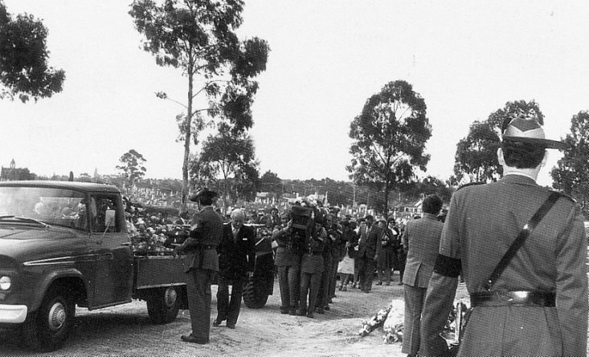
I contacted Mrs Dew soon after her husband’s passing (his body was being brought to Bendigo by one of the local undertakers) and asked if she would like Peter to have a military funeral. A little to my surprise she said she would and that the Army owed him that. She was of the mind that it was the Army’s fault and his Vietnam service that had caused his downfall. I was not going to argue against that – it was at least partly true. I asked what church she would prefer, if in fact a church at all and whether she would prefer an open air service and committal at Fortuna. She said she would like that – Fortuna had been the only real home he had. At least that was the general tenor of our conversation. I gave the job of organising it all to Captains Gary Kenny and Terry Edwards, our two Litho stalwarts. The drill for the occasion would be handled by the RSM Aub Harvey. We had the rather macabre sight of the RSM drilling the six pall bearers slow marching with a simulated coffin in the form of a ‘wardrobe individual metal’ loaded with 80 kilograms of books or paper to give it a realistic weight. The funeral was conducted on the lawns of Fortuna in front of the Villa with the OPD padre officiating. The coffin was placed on a bier on the back of a one tonne truck specially fitted for the purpose brought up from Broadmeadows in Melbourne and driven slowly to the Bendigo cemetery with a police escort. It was a well conducted and solemn affair that well served the purpose.
Sometime later in attending an annual dinner of some service related organisation (it may have been Legacy) I found myself seated nearly opposite Dr Rosenthal. I was in ‘blue’ uniform at the time which seemed appropriate for the occasion. We conversed briefly but pleasantly. I learnt that he had retired from general practice.
Our Olympic involvement
The 1980 Moscow Olympic Games became something of a political football. The communist government of the USSR (Russia) had invaded Afghanistan opposed by the western alliance led by US President Carter although not with troops on the ground. This resulted in a boycott of the Soviet Olympics by some sixty eight countries including Australia. However, many of those boycotting countries also including Australia sent teams to Moscow regardless funded by public subscription. A massive fundraising effort was made in Australia by the Australian Olympic Federation headed by its President Mr Julius ‘Judy’ Patching.
In early 1978 Major General Stevenson (GOC Logistics Command) held a fundraising dinner in Victoria Barracks (Melbourne) Officers Mess attended by mess members at normal cost with invitations to the more affluent members of Melbourne at considerable cost – the privilege of dining with the officers in the very traditional dining room of Victoria Barracks. The guest for the occasion was Mr Judy Patching. The dinner was an outstanding success and a considerable amount was raised and given to the Australian Olympic Federation for the purpose of sending the team to Moscow. It was a surprising outcome since army officers generally are a conservative lot and would normally have been expected to follow the Fraser Government line. Nevertheless, the decision of the Government to fall in step with the United States in boycotting the games was quite unpopular with the Australian population. (Who cared about Afghanistan anyhow?) I had considerable regard for General Stevenson and thought it a surprisingly game thing to do. I decided that I would hold a similar dinner at Fortuna (we too had grand surroundings) and discussed the idea with the Commander 3rd Military District Brigadier Kendall (under whose command we now fell) and he assured me of his support. So it finally happened on the 8th November 1979. Judy Patching and a couple of others accepted the invitation and came from Melbourne. We had a full table with many of Bendigo’s worthies attending. John Hillier arrived unexpectedly and attended the dinner – but not at the ‘restaurant price’ paid by our guests. Our cooks rose to the occasion with an excellent four course meal and we had a good selection of red and white wine. I made a short speech to which Judy Patching responded. I believe we raised some \$800 from the dinner (bear in mind this was 1978) and the soldiers club also contributed another couple of hundred – I think they had a raffle. The cheque we sent to the Olympic Federation was about \$1,200 – a pretty good effort. We were given a trophy for our effort which was placed in the trophy cabinet in the entrance foyer. Some months later I was invited to attend a morning tea or similar at some place in Melbourne (I think it was at one of the AFL clubs) and received an Olympic donor’s tie which I still have.
The Regiment as a social venue
One might think so in perusing the events of my four year term as Commanding Officer. Both the Officers Mess and the Sergeants Mess conducted regular evening functions often entertaining paying guests from the Bendigo Community. The privilege of honorary membership was conferred on various members of the Bendigo Community nominated by members of the Mess (approved by the Mess Committee) for the term of one year. Reappointment after a year was not guaranteed but many seemed to continue on from year to year. In the Officers Mess ‘honoraries’ were generally professional people – doctors, lawyers, school principals – or business people. I think the rules stated to the effect that they must be persons of good repute. The Sergeants Mess was similar although (without wanting to appear snobbish) its honoraries were more likely to be trades persons. The soldiers club (it was never constituted as such) had no formal honoraries but individual soldiers could invite one or two personal friends to their canteen or to any functions they may hold. They had a ‘senior member’ a corporal who in effect was their president although I only remember them conducting any sort of formal gathering at Christmas and that was their annual Christmas dinner. They may have had the occasional indoor sports night.
A rather interesting custom in the service was that the officers waited on the soldiers at their annual Christmas dinner. This even happened at the HQ 1ATF Nui Dat, South Vietnam in 1966 and presumably in subsequent years. The CO was always invited to the soldiers Christmas dinner – also a tradition. Certainly at the Regiment they were well conducted.
Both Messes conducted regular ‘dining in’ nights when the members dressed in their mess kit or alternatively ‘mess undress’ – the blue uniform – dined formally. Attendance at most dining nights were serving officers and honoraries only but a couple of times a year wives would be invited – a ‘mixed’ dining night. This was more the rule than the exception in the Officers Mess and much less so in the Sergeants Mess. Mess dinners followed a format which may not have been part of any written onvention but was certainly traditional. Pre-dinner drinks, preferably sherry, sweet or dry were served in the anteroom before moving into the dining room – at Fortuna the ballroom would be set up for dining with highly polished broad tables in a tee configuration set with silver candelabra, cutlery, glass ware, place names with menus at each place. On occasions when ladies were invited the male officer would escort the lady who was to be seated on his right – usually not his wife. A seating plan was always displayed in the anteroom and this needed to be inspected before entering the dining room – well before since officers needed to identify their quarry well before entering. As far as possible his wife with her escort should be seated diagonally opposite her husband. Unmarried officers were free to bring their partner or girlfriend. Female officers could invite a male friend but at that time married female officers and soldiers were discharged from the service. The President of the Messing Committee as dining president would be seated central at the top table and the senior officer present; mostly the Commanding Officer would be seated half way down the long table. Following the serving of all four courses of dinner the table would be cleared apart from candelabra and port glasses and the port passed in a decanter starting at the top table. Those not wishing to take port would be offered water by a steward hovering behind. The Dining President would then call on the Vice President for the night, the most junior officer present seated at the far end of the long table simply by calling ‘Mr Vice’ and he (or she) would rise to his (or her) feet holding his (or her) glass of port followed by all those present and then loudly call ‘ladies and gentlemen, the Queen’. All would then imbibe a sip of port or water as a toast to Her Majesty, the Queen. The port would again be passed – once, twice or more. A toast to the Corps may follow. After a short space of time the dining president would rise and in leaving his chair he would be followed by all officers present and their partners and move to the anteroom where coffee and further drinks would be served. On officers only occasions the junior officers would be allowed to remain at the table and conduct a ‘subaltern’s court’ although this was not encouraged at the Regiment.
Not all mess dinners in either mess were simply a three month occurrence. It was traditional to ‘dine out’ members who were departing the Regiment, on a posting (not always) but especially if leaving the Corps. Ones that I recall were the dining out of our US exchange officers, Majors Sam Thompson and later San Schwartz. Speeches would be given and most likely a small gift of some sort. I recall also a ‘flag pole event’ for Sam Thompson. This was something I introduced, a send off farewell at the flag pole in front of the Villa attended by all ranks. Other ‘flag pole events I recall were for Major Frank Bryant and Warrant Officer Tony Ellis. Medal conferrals also took place at the flagpole and following the introduction of the National Medal to replace the old ‘Long Service and Good Conduct Medal’ quite a number at the Regiment became eligible for that.21 Both Messes had Christmas functions, less formal and on at least two occasions a Christmas Ball to which the Mayor of Bendigo was invited and maybe one or two others from the community. Members could bring a personal guest but not a whole football team of them. Wendy and I attended most of these occasions. Social events such as Squadron Christmas parties were usually held at outside venues of which there were plenty to choose from. Wendy and I attended as many as we could and I recall a time when all three occurred on the same evening. We made a brief visit to the first two and then lingered on at the third, Litho Squadron, (I had a special regard for Litho). At least that got them over on the one night. They were always enjoyable and well run occasions.
There were less formal nights in the Officers Mess, a dance night comes to mind; it may have been fancy dress. Wendy arranged that she and I with a few friends would put on a light opera act. The friends who participated were Trish and Nick Houghton and Alan Bradshaw (wife Kath was in the audience) who played the piano. Our ‘opera act was a Gilbert and Sullivan piece from the ‘Mikado’ and my role was the ‘Lord High Executioner’. It was great fun although somewhat embarrassing for a Commanding Officer. Maybe many thought ‘Lord High Executioner an appropriate role for a CO.
External invitations
Without giving the matter a great deal of thought I became conscious of the fact that apart from being the Commanding Officer of the Army Survey Regiment I was by that appointment the senior military officer within north eastern Victoria, perhaps in the whole of eastern Victoria. As such I often received invitations to attend a range of social or semi-social gatherings and functions. Of course these were mostly Bendigo based and as far as possible I would attend, usually in uniform – after all it wasn’t so much that the invitation was to Bob Skitch because he was a good bloke but to the Commanding Officer of the Army Survey Regiment and the most senior military officer they could find within reach. Furthermore I felt that attendance at such events, usually reported in the Bendigo Advertiser contributed to keeping the Regiment as a part of Bendigo’s social structure – in effect ‘Bendigo’s own’ I always chose to wear uniform; for a daytime function service dress summer or winter and for an evening function my ‘blue uniform’ (officially called ‘mess-undress’ for some odd reason). One never wore mess dress beyond a military establishment or formal military function. I will mention a few that come to mind:
Formed in 1888 the Sandhurst Trust was Bendigo’s‘oldest society. It had its origin in the golden years of Bendigo mining. It continues to this day (2014) and its principal and very successful offshoot has been the Bendigo Bank. At the time I knew the Sandhurst Trust its principal raison d’être was business loans and few in Bendigo knew much about it other than the top worthies of Bendigo sat on its board. Why ‘Sandhurst’? Sandhurst was the original name of Bendigo named for no particular reason that I was aware of after the English town of Sandhurst, south west of London near Camberley. In the late 19th century the spirit of nationalism was running high and all things British were not well regarded, especially on Australia’s gold fields. Perhaps it had something to do with the fact that Camberley and Sandhurst was the home of the British Army and that in itself would not have endeared the name to Bendigonians. Through the centre of Sandhurst ran Bendigo Creek where gold was first discovered and in about 1890 a plebiscite determined that the town should be called Bendigo and so it happened. However the august Sandhurst Society/Trust chose to retain its first given name. Of course the name Bendigo has an interesting history stated briefly in the footnote.22
In October 1978 I was invited to be the guest at the Sandhurst Trust’s Board monthly luncheon and of course I attended. My invitation made it clear that I was not required to stand behind a podium to give an address but simply to say a few words on the Regiment from my place at the table. Nevertheless I prepared a few notes for what might have been a five minute presentation. I attended on the 10th October in the Trust’s boardroom upstairs at their headquarters in View Street.. The board comprised about twelve members, some I recognised but most I didn’t. I was warmly welcomed by the chairman Mr Win Patten and introduced to all members. Pre-dinner drinks were brought around by a white jacketed bow-tied waiter served from a silver tray. The long highly polished dark timber table was formally set with good quality silver cutlery and glass ware. We were invited to sit and I was taken to a place roughly central down one side of the table. It was evident that the Board had just finished their monthly meeting at the same table and it had been set up for dinner by a catering organisation although the badged table cutlery and monogrammed crockery belonged to the Trust. There was light conversation around the table and after the first course, soup probably I was invited to say a few words. I spoke for five to ten minutes (I tend to be long winded) and all listened politely. After that over the main and desert courses I responded to a few sporadic questions. We rose from the table after an hour or so and stood for a while in small groups before departing. The Chairman fairly formally thanked me for my attendance and no doubt I responded accordingly. It was a very pleasant occasion.
There were many other occasions when I was invited as Commanding Officer of the Regiment to attend a function – civic receptions, RSL annual dinners, Staff Surveyor’s Association luncheon, Bendigo Legacy to name but a few. I mostly attended believing that I had a duty to increase the presence of the Regiment within the community – a visible presence. Sometimes a military social occasion would take me away from Bendigo such as the annual ‘Waterloo Dinner’ of the Royal Australian Engineers (RAE). This latter was quite an occasion in the very traditional dining room of Victoria Barracks, Melbourne. I recall that John Holland, head of one of Australia’s most prominent construction companies was present and spoke, presenting prizes to the young officers completing their engineer degree at one of Melbourne’ several universities. The annual RAE birthday dinner had always been called the Waterloo dinner, not in honour of the famous battle of Waterloo when Napoleon was defeated but at Anzac Cove where a group of RAE officers had a pseudo formal mess dinner of hard rations on the beach and on reflection realised that the day was the anniversary of the final defeat of Napoleon.. (How traditions are made!)
Another occasion I remember was when I was invited to present prizes and say a few inspirational words at the Kangaroo Flat High School at their annual graduation ceremony. There were others.
ANZAC Days
Inevitably I was involved in Anzac day observances to either a greater or lesser extent. Of course I had had previous experience at being in an official role on Anzac Days – at Yackandandah when I was at the School of Military Survey and at Cooktown on ‘Operation Sandy Hill’ in 1975. I had mixed feelings about regular army involvement in Anzac Day. My belief rightly or wrongly that Anzac Day was a day for returned servicemen. I was asked at one time by the RSL Executive whether the Regiment might provide an honour guard in the form of a marching column of troops and I declined. One of the Army reserve units provided a catafalque party at the memorial and in my mind that was entirely appropriate. Remembrance Day (also called Armistice Day commemorating the end of World War1) also required a wreath to be laid at the Bendigo Cenotaph in Charing Cross.
It may have been in my first year that I was invited to lead the march at Kangaroo Flat. It was a modest affair, probably about fifty or sixty marchers and I was rather surprised to find Major Sam Thompson (our US Exchange Officer) in his full ceremonial uniform (rather like Union Army officers’ formal uniform of civil war days – 1860-64) on the podium. He hadn’t told me of his role and while I had no objection I was a little annoyed that he had kept it to himself. He was a resident of Kangaroo Flat so perhaps that was how he came to be invited to take the salute. Maybe I surprised him also – I was dressed in full ceremonial marching order with Sam Browne and sword. The US Army did not have an equivalent – at least as far as I was aware. Following the parade we retired to the Kangaroo Flat hotel for a beer and lunch. Sam wasn’t there – perhaps my presence had put him off.23
Of my four Anzac days in Bendigo there was only one other where I was attending in an official capacity – the other two I was simply laying a wreath kindly provided by the Army – 3MD I think. The ‘one other’ was in 1980 when I was invited to give the principal address at the cenotaph in Charing Cross. I very carefully prepared the address and had it typed out on cards with a second copy which Wendy carried in her handbag. I had a minor mishap when about to start the delivery – somehow I dropped the cards and in the stiff cold breeze that was blowing; they blew away. Wendy immediately handed me the second copy and I proceeded without delay. Someone kindly collected them and handed them to me afterwards. I gave them to the Bendigo Advertiser reporter who was hovering on the edge but the report in the paper the next morning got it mostly wrong – no mention of the mishap though.
It might have been the second or third Anzac, maybe the third when a quite extraordinary event took place. In the week before Anzac Day the Regiment had had a visit from three RAAF Canberra bomber pilots and a few of their sidekicks mainly interested in RAAF charting but also more generally in the photogrammetric process. They had left their Canberras parked at the RAAF base at Laverton and travelled to Bendigo by road. They had all been involved in flying mapping photography in New Guinea and probably Indonesia so they had some interest in the product of their flying but really, it was a bit of a ‘swan’. We looked after them quite well – I think our RAAF Liaison Officer Flt Lt Ron Aitken probably entertained them on one night and on their last night, Anzac eve Don Swiney and his wife Glenys entertained them with a few of us at his home at Big Hill just out of Bendigo. Over a beer or two and a very nice meal prepared by Glenys a plan was hatched whereby the three bombers would fly down the centre line of Pall Mall and over the Charing Cross Memorial at two minutes to eleven. It was a very retired RAAF WW2 Squadron Leader in his quite old Air Force blue uniform and rather battered cap who was running the ceremony, possibly giving the address but I was reluctant to tell him of the plan in case it didn’t happen. It did happen – at precisely 10.57am with a huge roar the three Canberras in perfect arrow formation at 500 feet shot straight down the centre of Pall Mall from the direction of Kangaroo Flat then dispersing gaining altitude, one to the left and one to the right, the centre one straight ahead. It really was something for old Bendigo. Our rather ancient RAAF Squadron Leader thought it was all part of the grand plan, perhaps because of his own WW2 service. I didn’t disabuse him of that notion.
Military Balls
In Part 2 – ‘the Young Officer’ of this writing I describe my involvement in a military ball at ‘Cloudland’ in Brisbane in 1965. More specifically it was an army officer’s ball. On that occasion I had a formal appointment on the ball committee as ‘coordinating officer’. That was my second military ball, the first being one or two years before at the Brisbane City Hall. Wendy and I attended another in Sydney soon after my return from Vietnam at the Sydney Trocadero Ballroom. As I recall it that occasion was an all ranks affair but mostly attended by officers. My fourth and last attendance at a Military Ball was in July 1978 in Melbourne at the Third Military District officer’s ball held at the ballroom adjacent to the Royal Exhibition Building. Balls then and maybe now were not notably popular events and a good deal of cajoling would take place to boost attendance but an officer’s ball was a traditional concept and certainly in 1978 few and far between. At the time I felt that we had had good support from 3 MD on our various regimental functions at Fortuna and felt bound to promote it in our officers’ mess. I can’t recall how successful I was but I think I may have succeeded in getting a few to attend, maybe even one of our exchange officers. As encouragement I offered mini bus transport although I do not think it was used. Others made private arrangements.
Wendy and I travelled to Melbourne in my staff car which would bring us back after the ball, probably midnight to 1.00 am. Mrs Mahoney had undertaken to baby sit for the evening and was not at all concerned that we would be late. After all, it was a military duty wasn’t it? We may have given her a little gift in addition to what we paid her for babysitting. More about Mrs Mahoney later. On such occasions it was normal for the supporting units to have a loge, an enclosed alcove, set up with Corps and unit memorabilia, something they would undertake themselves and some were quite lavish. Of course we could not manage a Survey Corps loge and I think we may have combined with an Engineer group. RAE had several. I cannot recall whether dancing was preceded by a sit-down dinner (as was the case at the Northern Command Ball at Cloudland in 1965) or a late supper in an adjoining supper room, perhaps even both. But I certainly recall the 3rd Military District Band ‘counter-marching the length of the ballroom (several, no, many times) playing traditional military music; or not so military. One such item was the marching music of the movie ‘Star Wars’ with one of the bandsmen (there were women too) dressed as Garth Vader doing some sort of loping movement to the music to the side of the band as they counter marched. It was an impressive performance – very military.
As with most of our military bands it could re-arrange and emerge as a dance band and play popular and modern (that is, 1970s) dance music, mostly what we termed as modern dancing – quick-step, foxtrot, rumba etc to ‘Beatles’ type music, current hit-parade stuff and maybe even some rock ’n roll. There may even have been one or two progressive barn dances towards the end of the evening. Participation on the floor was quite good although I heard a few complaints that the military band was not up to dance music and they should stick with marching. I thought they were pretty good – even had one or two quite good vocalists, drawn from the ranks somewhere. To me it was an impressive and memorable night and certainly Wendy thoroughly enjoyed it – catching up with some of the wives she knew from wives associations in past years. One unexpected meeting I had was with a major I knew as a Survey Corps sapper many years before – in fact on my Basic Survey course in 1955 and then on Project Cutlass in New Ireland in 1956/57. He was John Lambie who had made quite a career for himself in health administration. We talked for a short while but there was little common ground apart from distant past events. John had been my survey assistant in New Ireland.
We returned to Bendigo in the staff car, a rather sleepy trip. All was quiet at home and I had my driver deliver Mrs Mahoney to her home. This was the last military ball I attended although we had our own at Fortuna.
One that comes to mind was a Christmas ball in 1978 attended by the Mayor of Bendigo Councillor (Dr) Eugene Sander and his wife Mullie (that was it – not Mollie although most called her Mollie). The Sanders were quite elderly, had been refugees from Europe during or after WW2. They certainly enjoyed a good party, Mullie especially. Wendy had pointed out to me that under her ball gown Mullie was wearing quite heavy golf shoes, obviously more intent on foot comfort than elegance. I never knew what Eugene’s doctorate was for – he didn’t practice medicine – perhaps engineering of some sort. Also attending was the first OC of the then Cartographic Company Bill Sarll who had been responsible for moving the LHQ Cartographic Company from Melbourne to Bendigo and finding Fortuna as a location.
Some time back I published in the Queensland RA Survey Association Bulletin and account of Bill Sarll’s visit and the story of how Fortuna came to be the home of the Army Survey Regiment and I include it below...
How Fortuna Came To Be Chosen
Leafing through a folder of memorabilia I found an old folio dated 1978. It relates to a visit to Fortuna by the first Commanding Officer of the then Army Headquarters Cartographic Company in 1942. It reads -
Major Bill Sarll – as told to Bob Skitch in 1978
On the 8th December 1978 Major Bill Sarll and his wife Ivy visited the Army Survey Regiment on the occasion of the Officers Mess Christmas Party. Bill maintains remarkable fitness in his 80th year and his outgoing but commanding personality is as unchanged as ever. Ivy displayed a warmth and charm which endeared her to all who met her on that evening. Also present was Captain Jack Cullen now 86 and living locally in Bendigo who served as adjutant under Bill’s command during World War II. Bill and Ivy live at Silver Glades in Monbulk Victoria. It was a memorable evening with Bill and Jack recounting many tales of their experiences at Fortuna during the war.
Bill Sarll recounted the interesting story of how Fortuna cam to be chosen as the location of the Land Headquarters Cartographic Company in 1942, afterwards the Army Survey Regiment.
The LHQ Cartographic Company under the command of Major Bill Sarll was located in Latrobe Street Melbourne in 1941. At that time all map printing was carried out by civilian printers in the Melbourne area. This was not entirely satisfactory since deadlines were rarely met and the printers themselves faced major problems with wartime shortages in manpower and material. It was decided that the Army would develop its own map printing facility and Bill was given the task of finding a suitable location for the unit away from the Melbourne metropolitan area He was told to avoid the Melbourne – Sydney axis of the Hume Highway and the centres of major military concentration at Puckapunyal, Seymour and Albury/Wodonga.
He chose to investigate the next major axis from Melbourne, that containing the Calder Highway through Kyneton and Bendigo. With a small staff he inspected a building at Keilor out of Melbourne and found that to be unsuitable and then an old flour mill at Kyneton which was also unsuitable. He finally came to Bendigo and stayed overnight at the City Family Hotel. Having a drink at the bar he asked the proprietor whether he might be aware of any significant disused building that could be suitable for a military installation.. He was advised to take the tour of Fortuna, the old Lansell mansion then open to the public for inspection. Bill and his officers paid their sixpence and toured Fortuna. As they did so they realised that the old home was ideal for their requirement. There was considerable dilapidation but this could be repaired.
Bill reported back to his superior authority and the decision was taken to acquire the property. A lease was negotiated in February 1942 from the owner at the time and an ‘army’ of artisans moved in to renovate and refurbish the buildings. The old battery that had a compacted earth floor was concreted over and one wall rebuilt to become the printing room, which it remains today. Various other red brick walls were rebuilt. The re-named Land Headquarters Cartographic Company moved into Fortuna in May 1942 with printing equipment requisitioned or otherwise acquired from the printing industry of Melbourne.
Thus commenced the long association of the LHQ Cartographic Company to become again the AHQ Cartographic Company, the AHQ Survey Regiment and now the Army Survey Regiment with Fortuna and Bendigo.
It is a proud story for Bill Sarll and a record of a proud achievement.
PS. Jack Cullen tells how during the quieter years of the immediate post war period Bill used to summons him to go fishing on some afternoons. Jack of course being a very conscientious officer felt disinclined to be away from his office but Bill used to prevail very strongly so Jack allowed himself to be led astray.
Bill’s recollection of the incidents is quite the opposite to Jack’s. Bill suggests that it was Jack who did the leading astray.
There were other ball events or maybe they were just party events, But always very pleasant. Dancing in the ballroom was usually part of such events at a frequency of twice a year – mid-year and Christmas. At one time, probably in about 1979 I organised a semi-formal dinner for the World War 2 Corps officers mostly resident in and around Melbourne. I didn’t want the occasion to be swamped by Regiment officers and I am not sure how I handled that one; probably by having just the squadron OCs present. I had the tables set up as a hollow box with in the centre an old theodolite, helio and one or two things of WW2 vintage. I am not sure whether Bill Sarll was there but certainly Jack Cullen attended and many others most of whom had risen to quite high levels in the public service such as Colin Middleton, Secretary General of the Department of Crown Lands and Surveys; also others heading private sector survey firms. It was an enjoyable night and I am not sure what motivated me to do it – perhaps to cement our relationship with the Association of the WW2 3rd Topographical Survey Company AIF in Melbourne. It was quite a strong association with forty or fifty active members.
The Institution of Surveyors
I had been a corporate member of the ‘Institution of Surveyors – Australia’ since becoming a licensed surveyor. In the Army ‘Stud Book’ (so called by all – which listed all officers by rank and seniority I was listed as Skitch R.F. Lieutenant Colonel LS, oddly enough one of the few civilian professional qualifications to be recognised in the ‘Stud Book’). Having rubbed shoulders with the licensed surveyor who worked for the Bendigo City Council I suggested to him that we should form a Bendigo based ‘Town Group’ of the Institution. He was very supportive especially when I told him that he should chair such a body. I wrote to the Institution office in Melbourne and they put it to their Divisional Committee who quite enthusiastically agreed. I told them that the Group could have their meetings at Fortuna and of course some of the senior members of the Divisional Committee had served with the Corps in WW2 and they were especially supportive. I don’t recall how it all came about but it did and we had our first meeting in the long room of the officer’s mess. We had a delegation from Melbourne, three or four attended our first meeting and a topic of discussion was a contentious issue within the profession Australia-wide. That was government policy being enforced on private survey firms that all government survey work contracted out would be subject to competitive tendering. Previously governments paid a ‘fee for service’ based on prescribed rates established, or at least recommended by the Institution. Competitive tendering was seen to be contrary to good professional practice leading to the lowering of professional standards, for example, should medical doctors be subject to competitive tendering? It was quite an argument and continued for some time. The surveying profession, some preferred to call it an industry, was in a parlous state at that time. Many firms were very limited in their practice and could see little beyond boundary definition work. They were reluctant to accept new technology, probably could not afford it. The training establishments, RMIT and one or two universities and of course the old surveyors board qualification process were churning out more and more graduate surveyors for whom there were no jobs. Existing firms were not taking on staff so graduates once they became licensed might band together in partnership to form their own firm. But that did not create work and whatever work was available was subject to tendering leading to lower and lower quotes from these small under-resourced firms. Anyhow, back to our Bendigo Town Group. I found that we were getting a great deal of interest from these small firms, often stand alone surveyors trying to eke out a living and hoping to get support from the Institution through the Town Group. I was somewhat surprised since I thought we would be dealing with the few survey practices in Bendigo but these young fellows came from far afield. They would arrive at Fortuna in their rather clapped out run-about trucks and utilities (utes) dressed in worn jeans and tatty shirts and I would have anything up to twenty or more in the officers mess on a prescribed evening once a month. Of course they were all good blokes and had worked hard for their degree in surveying and their subsequent licence.. Finally I suggested to the Group chairman that we move the meeting to a more suitable venue down town and that duly happened. Overall I felt I had achieved something for the profession to which I belonged. The Town Group continued to thrive up to the time I left Bendigo – beyond that I have no idea.
Civilian employees at the Regiment
The Regiment or perhaps more specifically Army Office employed a few civilians at the Regiment. They were on our authorised establishment and fell into two distinct categories. There was the ground staff, a gardener and general ground workers most of whom I knew moderately well and two quite high level technicians in the Automap area of Air Survey Squadron. Also there were a couple of others associated with the Q store and motor transport including a very competent motor mechanic, a Mr Fixit who could attend to most things that went wrong in the Regiment.
Other civilian employees were employed not by the Army but by the Navy Hydrographic Service since we were responsible for printing all naval hydrographic charts. The Navy tended to employ civilians in their hydrographic offices (land based only). The Navy employed two ex-RA Survey technicians, one, Joe Farrington, who had been a student on my Basic Survey Course in 1955 and who had made a huge contribution to Automap during its installation and the other, John Hogan, a past RSM of the Regiment and cartographer by trade. The Automap technicians (I suppose ‘engineers might be a more apt description) were Robert O’Neil and Tony Spurling. Without doubt they were both very competent in their work and I held them in quite high regard, more especially the more senior Robert O’Neil who was a very pleasant person and fitted in to army environment very well, but not so Spurling. He always seemed resentful of the army structure and had small regard for our NCO operatives. I never had reason to doubt his technical capability but the soldiers with whom he worked disliked him. Yet many were probably up to his level in what they did and were paid far less. Robert O’Neil’s pay probably exceeded mine and Spurling’s would not have been far behind.
A problem arose when Robert O’Neil left the Regiment in mid 1980 and Tony Spurling assumed he would move into the more senior appointment. I was only prepared to see him fill the appointment on a temporary basis until the job was advertised and a full interview process undertaken. I truly believed that we could find a better person to fill Robert O’Neil’s shoes. The advertisement in the national newspapers certainly produced many applicants from all over Australia and some from overseas. The Australian ones were mediocre, persons with little more than laptop or school teacher experience. Spurling continued to assume the job was rightfully his and he should not have to apply for it but he did and his application was sub-standard as job applications go. By a mile the most outstanding application came from Canada, a fellow who had considerable experience in the ‘main frame’ field – big high capacity computers and also with computer graphics experience. But to get him to come to Australia for interview was impossible –who was to pay for it – certainly not the Army. I wrote to him acknowledging his application but warning him that he would need to meet the cost of flying to Australia for interview and no guarantees could be given. He regretfully withdrew his application. An interview board was convened in Melbourne, myself, maybe the OC of Air Survey Squadron Peter Eddy and three of four other Army officers from the Military District headquarters, one of whom, a colonel I think was the appointed chairman. No surprise to me, Spurling did not interview well but there was no denying that he was the best on offer. There may have been five or six other applicants who were interviewed but none of these came anywhere near the mark. I continued to have a reluctance to formally appoint Spurling to the senior position and in fact could not do so until the interview panel formally notified their decision. This did not happen until just after my departure from the Regiment in January 1981. Inevitably Spurling was appointed. I don’t recall a second civilian being appointed to fill Spurling’s previous position. Our own young officers were more than competent to do that.
Another incident comes to mind in reflecting on Mr Spurling. He approached me in the mess one morning and asked if I might provided him with an open letter of introduction to the heads of various United States survey mapping organisation24 as the official representative of the Royal Australian Survey Corps or more specifically the Army Survey Regiment to be used as an entrée to unspecified mapping organisations in the USA. He was proposing to undertake a private trip to the States and I came to the conclusion that what he really wanted was evidence that he could use to obtain a tax deduction for expenses involved on an officially condoned visit. I explained to him that such a letter could only be provided by Army Office and there was no hope of that. Being something of an appeaser I finally gave him a letter of identification that he was a senior technical officer of the Army Survey Regiment engaged on automated cartography.
In discussing our non-military staff I should make mention of Eddie Esposito. Eddie had been with Fortuna since WW2 and I remember him as a sergeant electrician in the late 1950s when I was there as a young soldier. He had continued on as a civilian after retiring from uniformed service. I am not sure whether he had any trade qualification as an electrician but he alone had any knowledge of the complicated jungle of electric wiring throughout Fortuna that ran in a totally unauthorised way over and between walls of the old building. I suspect that had any State authority inspected the electrical wiring they would have condemned and closed down the whole building as a fire hazard. As a military building and outside the purview of a State authority such could not have happened. Finally in the mid 1970s and after repeated submissions the Commonwealth Works Department moved to take on the task of re-wiring Fortuna. It took many months and was still proceeding at the time I arrived in 1977. Eddie Esposito had been brought in to advise on the location of old wiring which had to be removed and was very much alive and could be quite dangerous. Eddie alone had that knowledge – there were no diagrams or wiring plans and even if there were they were hardly likely to be correct.
In retirement or perhaps before retirement Eddie Esposito and his wife Marge had bought the Goldmines Hotel, just over the back fence of Fortuna and off and on a favourite watering hole.
A visit to the Central Mapping Authority of NSW (CMA)
Sometime in 1980 I managed to arrange a visit to the Central Mapping Authority of NSW located at Bathurst. I am not sure how that happened other than the Corps had through the National Mapping Council a useful arrangement with the CMA whereby we received copy of all their map reproduction material from which we could produce our 1:100,000 series and most likely the !:250,000 derivatives. Of all the State mapping agencies, mostly within their lands departments, NSW alone had a separate mapping authority with a comprehensive programme of topographical mapping. I was more than a little surprised that John Hillier agreed to my visiting CMA and of course in one sense he couldn’t really stop me but giving the visit his support was indeed surprising. He was normally very suspicious of any of any of his lieutenant colonels formally visiting the mapping organisations of other members of the National Mapping Council, fearful perhaps that they may commit the Corps to an action he would not support or even divulge something of the Corps’ activities or policy that he would not wish to be divulged. Such was his somewhat paranoid approach.
Getting from Bendigo to Bathurst was a little complicated. Hillier wanted me to call at Canberra en-route presumably to be briefed on what I could and could not say or divulge (this didn’t happen in the event) so I flew from Melbourne to Sydney thence Canberra and took a car from the Canberra transport pool, arranged by Harry Hansen who was to accompany me to drive to Bathurst. I would have had a few hours in Canberra and I am not sure that I actually had an audience with Hillier; maybe briefly over morning tea or lunch soon after arrival. Harry and I drove the 200 or so kilometres to Bathurst in the afternoon and checked into our prearranged motel accommodation (arranged by Harry who looked after all other arrangements). It was a pleasant drive across the eastern Riverina, one of Australia’s most productive areas.
The Central Mapping Authority moved from Sydney to Bathurst in 1976 into purpose designed modern accommodation. The move was part of the Whitlam Government’s plan to develop the Bathurst Orange region as a decentralised development zone. The plan had the support of the Wran State Labor Government, no doubt with the Federal Government contributing heavily to the considerable cost of re-location and building construction. It was a contentious move within the NSW public service – it meant winkling the CMA previously a component of the NSW Lands Department from the control of the Surveyor General who also carried the title of Director of Mapping. This meant that the Director of the CMA became a second NSW member of the National Mapping Council. The move was fiercely resisted and there was much personal acrimony. However, it happened. Noel Fletcher was the Surveyor General at the time – the same Noel Fletcher who organised my civil secondment after Vietnam which led to my becoming a licensed surveyor. I knew Noel quite well and his WW2 service in the Corps.
The Director of the Central Mapping Authority was Mr Hugh Rassaby. Before the move to Bathurst Hugh Rassaby had been the Assistant Director of Mapping under the Surveyor General. I have no doubt that his knowledge of mapping technology far exceeded that of Noel Fletcher. On meeting Hugh that first morning he could not have been more hospitable and generous with his time. He introduced Harry and me to his assistant directors, Frank Urban, whom I had known previously and Arthur Cheesman who at that time was Chief Cartographer. We were taken around all parts of the CMA by Arthur Cheesman and in a word it was impressive. There were one or two faces I recognised from earlier Corps days, one in particular was Jeff Helsham with memories of Project Cutlass. I had other memories of Jeff which I did not discuss with him. Impressive though the CMA was, it was a long way behind the Regiment in mapping technology.
We met Hugh again for lunch which had been brought in from a restaurant in Bathurst and then he took Harry and me for a ride of a lifetime. Hugh was by any measure a very gentlemanly person. At a guess I would say he was Anglo-Indian. Again at a guess I would say he was a graduate of one of the United Kingdomu universities, most likely the University of London. He asked if we were aware of the Bathurst 500/1000 annual road race on a track around the nearby Mount Panorama. The Bathurst race for super stock cars was and still is the most well known motor vehicle race in Australia – gruelling and dangerous. Hugh asked us whether we would like a spin around the track in his own car and of course we said we would. Thereupon he led us to his car in the carpark under the building. As soon as I laid eyes on Hugh’s car I started to have misgivings – it was an MG Magnet, very low slung and very racy. However, we were committed and felt sure that Hugh would take us on an easy jaunt around the famous circuit. WRONG! We folded ourselves into the confined space of the MG, me in the front passenger seat next to Hugh and Harry in the almost no legroom back seat and with a throaty roar the MG took off out of the carpark and onto the road leading to Mount Panorama. I was almost sure that Gentleman Hugh immediately grew horns, his rather aquiline face set in grim concentration hunched over the slightly elliptical steering wheel. We roared up the road to the circuit with Hugh telling us through clenched teeth all about the various bends and grades. I couldn’t see the speedo which might have been just as well; in fact I had my eyes glued to the road ahead. At one point I saw a cow wander onto the straight ahead but thankfully it wandered off before we would have almost certainly hit it. Hugh seemed most unperturbed. Finally it came to an end and Hugh drove us back to the CMA almost sedately. I am sure both Harry and I were rather white faced as we left the car with Hugh smiling softly as if we had been on a quiet Sunday afternoon drive. We spent a little more time with others, afternoon tea no doubt. There were a few broad smiles and I suspected they all had a fair idea of what we had just experienced. Before knock-off time we bid farewell to all and called briefly on Hugh Rassaby in his office. No mention of our exciting trip around Mount Panorama.
I should confess at this point that I had another motive for visiting the Central Mapping Authority. I am not sure quite how I knew this – that Hugh was to retire shortly and the job of Director would be advertised. As a long shot I thought I might apply for it when that happened and having had a good look at the establishment and all it did I felt sure I could handle it. Of course I made no mention of this to Hugh or anyone else at Bathurst and certainly not to Harry Hansen.
LIFE AWAY FROM THE ARMY SURVEY REGIMENT
Our neighbours and civilian friends
Should anyone take the trouble to read to this point you could be forgiven for thinking that we had no life in Bendigo other than the Regiment and Fortuna. Certainly it is true that an army life and no doubt that of the other two services leaves little time for a totally separate social and family life. To an extent the frequency of Army postings, ‘posting turbulence’ we called it, can lead to an isolated life style where there seems to be little time to make civilian friends. Even within the Army circle the likelihood of being with people one might have known and been friends with in a previous posting may not be great. Non-army or non-service families living in close proximity to military bases or where there may be a concentration of ‘married quarters’ may have at some time extended the hand of friendship to an army family only to see that family move on to another posting after a year or so and have no further contact. After a couple of such incidences they may tend to sit back and think is the effort really worthwhile. Much depends on the social capacity of the army family and more especially the army wife. I have often commented that army wives are a specially breed. It is difficult for the young army wife who has never experienced life beyond her parental family and circle of school friends to cope with her husband’s life and all too frequent postings.
Our own time in Bendigo was four years, quite a long time in a single appointment in Army terms. Two years was considered to be an appropriate duration for an army posting. This was particularly true of OC/CO command postings since many others needed command experience for further career advancement. In our four years in Bendigo we made many civilian friends, several in our own street, Herbert Avenue, three of whom have remained friends to this day.
Diagonally opposite our home was the home of the Ratneyeke’s, Cynthia and Valentine. I have mentioned before that Valentine was the Medical Superintendent of the Bendigo Base Hospital and a very well qualified specialist physician. The Ratneyekes were from Sri Lanka (Ceylon) and Valentine was London trained. He came from a tea growing family – very traditional in old Ceylon. Wendy became close friends with Cynthia. Valentine was a connoisseur of all good things – food, wine, music and a very gentlemanly fellow. Cynthia was more down to earth but very much a Sri Lankan lady – wore traditional dress. Both were older than Wendy and me by ten years or more.
I have mentioned that when Noel and Lynda Sproles departed for Noel’s Indonesian appointment they put their home on the rental market. There followed two families both of whom remain friends to this day. The first were the Houghtons, Nick and Trish. Nick was a specialist in nuclear medicine and a partner in a medical practice that contracted to two of Bendigo’s hospitals. He was British trained, Edinburgh I think and Trish – very British and sounded it – had been a nurse and from a family with British Army traditions. The Houghtons had two children, Samantha and Ewan. Samantha was Liz’s age and Wendy and Trish arranged that they play together even after the Houghtons left Herbert Avenue and bought a house on a large timbered block not too far away. Liz and Samantha have remained friends since then. The Houghtons were followed in the Sproles home by the Bradshaws, Alan and Kath. Alan also was in the medical profession as an anaesthetist, in a practice contracted to both of Bendigo’s hospitals and again we became good friends and remain so to this day. The Bradshaws moved out not long before we left Bendigo and had a very lavish home built (it included a ‘dance hall’) on the eastern side of Strathdale. They had four daughters two of whom also entered the medical profession.
Others we came to know quite well in Herbert Avenue were the Wheelers – Sue and Hugh; the Roberts, Tom, I don’t recall his wife’s name and the McKechnies – Aileen and John. Wendy and Aileen became friends and have remained so over the years. John was a seafarer and was often away from home for long periods. Tom Roberts was the manager of the Government Ordnance Factory. And of course the Hoppels. Ron and Kathleen Hoppel were American – Ron was the US appointed manager of Thompson’s Foundry at Castlemaine, some twenty kilometres south of Bendigo. The Foundry was owned by the US company Borg Warner – hence an American manager. Of course the Hoppels like us were on a time limited appointment and may have left Bendigo a year or two after Wendy and me. We have always kept in touch, if only by our Christmas newsletters.
I had reason to be grateful to Hugh Wheeler. Christopher had his first year of school, ‘Prep’ they called it in Victoria, in 1980. He was a quiet little fellow and sat at the back of the class where he was hardly noticed by the teacher, a young lady. In his final report for the year it was evident that she barely knew Christopher and somehow Christopher had managed to get through the year without learning to read and write which is what they were meant to do in prep. We were appalled. We were about to move to Brisbane in early 1981 with Christopher to start in a new school – it was very concerning. Hugh Wheeler was an educationalist with the Victorian Government based at the Bendigo Institute of Technology and I happened to mention this to Hugh. He told me to send Chris over to his home and he would have a look at the problem. We did and within a few weeks Hugh had Chris reading and writing equal to his grade.
Our home
Our home in Herbert Avenue built by Max Williamson, if not imaginative in design was nevertheless very comfortable and over the time we were there the grounds developed very nicely with much hard work and a little help. On moving in in January 1977 a priority task was to properly landscape our yard. It wasn’t particularly large but I wanted to do something with it other than simply throw a bit of lawn seed around and wait for the grass to grow. I thought the house deserved more than that. The house was built slightly askew to the block and with the addition of the quite large room we had added during the construction stage for Rex which in one corner was only a metre from the side fence caused the yard to be divided into irregularly shaped areas. The smallest of these formed something of a courtyard adjacent to the family room and Rex’s room with sliding glass doors from each. I paved that area with square stone pavers and constructed a trellis which we covered with a rapidly growing deciduous creeper – Virginia think. It became a much used outdoor entertainment area which we referred to as our courtyard.
As was common in Victoria our side fences were high pointy-top pickets, about a metre and a half high. Max had told us that the block next door – two blocks I think – beyond which was bush was to be a children’s playground – this concept being a condition of the original Council development approval (Council did not specify where the playground was to be located) but Max said next door to us and that in itself made our block more attractive with three of our children being of playground age. Also it influenced our yard development intent – we asked Max to make our side fence facing the proposed playground from the street to a bit past our courtyard only a metre high so that we could look out over it from our kitchen window. Max duly did so. With picket fences of the Victorian design one side, the picket side, would be flat the other side exposing the fence posts and horizontal rail top and bottom to which the pickets were nailed. Most preferred the flat side so to avoid disagreement in any neighbourhood it was normal for consistency to be maintained from block to block. Thus each block would have one side smooth and the other with exposed posts and rails. I asked Max to build our side fence facing the proposed playground with the smooth side to the playground to give a better appearance to our place when viewed from the playground – also to make the fence harder to scale from what was to be a public area. More about the playground later.
What to do with the remainder of the yard? Our block sloped a little steeply from the back left corner to the front. The clothes hoist had been placed in the lower right side with easy access to the laundry and I had a mind to put a small pre-fab shed in the rear left corner of the back yard. I happened to meet the landscape designer who worked for (or perhaps was under contract with) the Bendigo City Council. I can’t recall how or where; perhaps at some sort of Council reception. Anyhow, I mentioned to him that Wendy and I had moved to Bendigo and into a new house at Strathdale and had yet to landscape the yard and was a little unsure what to do. He immediately offered to have a look and make a few suggestions. He was an Englishman and I recall he had some sort of military background and seemed suitably impressed that I was a lieutenant colonel and commanding officer of a local regiment. He duly turned up a day or so later, measured up the place and took a few notes and outlined to me what we should do. I was a little surprised that he went into such detail but he did and a few days later gave me quite a detailed plan. Then followed in the mail soon after a bill that shook me a bit. It was two or three hundred dollars and in 1977 that was quite considerable. Did I really expect to be getting a freebie just because I was a good bloke? I decided to have a talk to him – he was very pleasant and agreed to give us a planting guide and order all the materials, which of course we would pay for. The plan involved a curving retaining wall of granite boulders, large and small from the lower right corner to the rear left corner, a pathway along the bottom of the retaining wall allowing the enclosed area to be roughly level and grassed; shrubs along the back fence, maybe a fruit tree and in the front area a ‘pebble brook’ with the lawn area on either side sloping into the ‘brook’, continuing out to the kerb as if the foot path wasn’t there. A week later everything arrived – the granite boulders, a cubic metre of soil and a whole pile of plants the latter placed on our front patio. I am not sure how the granite boulders got into the back yard – perhaps Max hadn’t completed the side fence and the tip-truck bringing them was able to back into the yard from the intended playground next door. Anyhow, it all happened.
The next challenge was to get the granite boulders into place, the largest on the lower right side graded with the smaller ones towards the left corner. It was more than I could do by myself. I had a chat with our sergeant groundsman – or maybe it was the RSM WO1 Aub Harvey – either way the response was ‘no worries boss – say when and it will happen’. I always had reluctance to take advantage of rank and position in situations such as this but I felt justified since my predecessor had allocated what had been the CO’s married quarter at Kangaroo Flat to our US exchange officer. I picked a date and Bill Forrest turned up in a Landrover with five or six young fellows in the late afternoon and a variety of tools that might help. I think Bill had probably reconnoitred the task a day or two before. An hour’s hard work with plenty of grunting had the job finished and I was well satisfied. I was able to do the rest myself. Half a dozen Fosters (tallies) and a tray of sausage rolls were well received before they departed. I think the young fellows were all from Litho Squadron. At the weekend that followed I completed the work, barrowed in the soil, tamped it down between the boulders filling small gaps with smaller stones and maybe a weekend later laying the concrete path. I think I borrowed or hired a hand operated concrete mixer. At that time of year – January/February the evenings are long and I made good use of them. The ‘pebble brook’ at the front and the grading of the soil on either side followed (not sure where the pebbles came from, maybe bought a few bags full from one of the local landscape firms. Noel Sproles gave me a good lead for soil. Apparently one could get good rich soil from the sewerage farm outside Bendigo and I managed to get half a metre of that delivered. It did wonders for the garden areas. Wendy was in charge of planting and the consignment of plants and shrubs soon disappeared from the front patio into chosen locations. Lawns were seeded – while in Queensland blue couch at that time was the favoured lawn grass generally planted in turfs or with runners, in Victoria mixtures of ‘bent’ is used simply by seeding. It quickly takes and a lawn soon appears.
After about six months our yard looked well established and we got on with living. There was still the shed to build and this was a priority. Bill Forrest had departed the Army and was doing odd jobs around Bendigo. I paid him to build the pre-fab shed which he did so with the help of his two late-teenage sons. Bill was part Aboriginal and I had known him for many years. He had been nominally a survey assistant but became a sort of general purpose person finally reaching the rank of Sergeant. He received a deal of publicity in Bendigo at one time when it was established that his grandfather was the explorer Alexander Forrest – brother of Sir John Forrest also an early explorer and Premier of Western Australia. Such is fame!
Schooling
Of course we needed to move quickly on schooling for our two eldest children, Sarah and Robert. Sarah was eleven years old on our arrival in Bendigo, turning twelve in August of 1977. We enrolled her at the Anglican Girton College, in the junior school for her first year and then the senior or high school for the subsequent three years. Sarah had started her school years in Wodonga in 1972 and then in 1975 we moved to Brisbane so she transferred from the fairly progressive Victorian education system to the somewhat old fashioned Queensland system (it reminded me of my own early school days) then back to Victoria. Without doubt this is hard on children and applies to many Army children as their fathers are moved from one posting to the next, invariably interstate. It is hard enough moving between schools within the same State – loss of old school friends and making new friends but interstate moves impose a further burden, that of adjusting into a sometimes very different system of grades and curriculum. In 1977 States all had different ways of grading and different general curriculums each believing theirs was superior. The States strongly resisted changing to any sort of national system. Girton College proved to be excellent for Sarah. She made several friends three of whom were for a life time. Girton College in Mackenzie Street was an Anglican college closely associated with All Saints Cathedral in Forrest Street, a couple of blocks away. The Principal was Mr Bob Bickerdike, a very genial and approachable man.
Wendy’s old school which she attended and boarded was New England Girls at Armadale New South Wales, a very prestigious school with a great deal of tradition. Wendy was very keen for Sarah to also attend for her final three years of high school and at a young age we had booked her there as one needed to do to be sure of a place. There is more to say about this but I will leave it till later in this writing.
We enrolled Robert and later in 1980 Christopher at the Flora Hill State School, a very good and well equipped school. Robert was then seven years old and 1980 was Christopher’s first year of school in Prep. Liz of course was not of school age but I recall her going to a kindergarten with Christopher somewhere near Rosalind Park in central Bendigo.
Wendy
Wendy developed quite a range of social and other activities. She recommenced her social welfare certificate course that she had started in Brisbane then at the Kangaroo Point TAFE College. at the Bendigo College of Advanced Education (BCAE) but not at the main campus; I think at the McCrae Street old School of Mines campus. During our four years at Bendigo she completed the course receiving her certificate which she put to good use in the years following. I recall Wendy undertaking a social survey of a very depressed suburb of Bendigo – Sparrowhawk. It was quite an eye opener for Wendy and also for me..
Of course with four children to look after one might think there was little time to do much else, nevertheless, being Wendy she managed her life as always very well and apart from meeting her commitments to the Regiment undertook numerous other activities..She recommenced golf although in the hot Bendigo summers that became a diminishing activity. With Robert’s friends in the street and beyond, including Jamie Sproles next door Wendy was finding that from time to time throughout the day she would find a whole pack of kids suddenly appear in the yard and even in the house. They would be there for a half hour – get bored and move on elsewhere only to show up again an hour or two later. That had to stop so Wendy laid down certain rules like knock at the front door – ask to play – say goodbye on departing in the knowledge that they would not be welcomed back on that same day. I think it worked at least to some extent.
Wendy commenced a supervised home based play group in the interests of Chris and Liz. That was a day a week activity – mothers dropped their off-spring at a given time in the morning, probably 9.30 and then departed other than one on a rostered basis to act as a helper. I guess that happened at our place once a month and at other mum’s homes at other times. I saw little of that but it seemed to work quite well, for how long I do not recall.
Mrs Mahoney
As we had always done in the past at an early stage we sought a baby sitter (for want of a better name). I am not sure whether we had a few trial runs with others but after a short while we were put in touch with Mrs Mahoney, an elderly lady but who was anxious for some not too heavy work. Mrs Mahoney was more than a baby sitter, she undertook general house cleaning, once a week; but other things as well, kitchen assistance, maybe even assistance on Wendy’s play group days. She became an important part of our family and we all thought a great deal of her. She remained our general factotum throughout our four years in Bendigo and we kept in touch with her as a friend for many years after, always calling on her whenever we visited Bendigo. I think Mrs Mahoney died in the late 1990s – she was quite old and her daughter told us that her death was peaceful. She had continued to remember us with a great deal of affection, especially Liz and Chris.
The Milko’s wedding
As was common practice still in the 1970s we had a milk delivery every morning, then in pint (750ml) bottles. We were quite heavy consumers of milk, probably at least four bottles per day and therefore good customers of the ‘milko’. I wasn’t aware that the owner of the dairy supplying our milk, probably the only one in Bendigo, was also an honorary member of the Fortuna Officers Mess until this rather amusing incident took place.
Both of our cars, the Ford Fairlane and the Benz spent most of their time in our carport, especially the Ford. Wendy generally used to Benz for her tripping around Bendigo. I went to and from the Regiment in the staff car with a driver (not always all that convenient). One morning a lady knocked on the door and without beating around the bush directly told Wendy she wanted to borrow our car. Wendy was somewhat taken aback and asked who she was, to be told, again very directly implying that Wendy should know who she was said ‘I deliver your milk’. How was Wendy to know that? The milk usually arrived about 5 am. Wendy assumed she meant the Benz but was enlightened by the lady – she wanted the ‘big one’ – the Ford. Further questioning as to why she wanted the Ford revealed she wanted it for her daughter’s wedding. It matched their own car – clearly their pride and joy. Then the punch line was delivered – ‘of course your hubby will have to drive it!’ So what to do? Wendy said she would have to discuss it with her husband and would let her know and was told ‘you’ll have to be quick – the wedding is on Saturday’.
Wendy broke the news to me that night and my reaction was ‘no way – it might be one of the young soldiers of the Regiment and that would be not at all appropriate’. Anyhow I relented – it seemed unlikely that it would be a soldier from the Regiment. Wendy somehow let the milk lady know that we agreed to her request and I think the parting shot was ‘make sure the car is clean’.
Saturday arrived and yes, I cleaned the car and fixed the white ribbons to the bonnet that the milk lady had left with the milk on the Friday – I don’t think there was a doll – just ribbons.. I asked Sarah to accompany me and at the appointed time drove over to the milk ladies house at the end of a street somewhere on the north side of Bendigo. It was a modest little place well cared for with a lawn in the front. The milk lady’s husband in a pale grey suit looking rather red faced and flustered greeted me – told me I needn’t come in and to wait in the car (certainly our preference) and that I would be taking the bridesmaids to the church and after the wedding to the reception which was to be in the Kangaroo Flat Hotel. The church was to be the Uniting Church (maybe still Presbyterian) in Forrest Street. So we waited and after a short while the bride emerged with the two bridesmaids onto the front lawn with a photographer; well, a fellow with a camera. The bride was a large girl swathed in white bridal gear and as I recall it, quite vividly in fact, with a mass of black hair cascading down over her shoulders – her crowning glory no doubt. Some confusion followed arranging the group photo – Mum and Dad came out at one point to hurry things along and then ‘Bluey’ the cattle dog started sniffing around whereupon the bride in her finery hitched up her dress and took a well aimed kick at poor Bluey with the words ‘Bugger off Bluey’. Bluey buggered off.
Then it was time to head off to the church. Sarah sat next to me in the front and the two bridesmaids in the back. I had of course opened the doors for them and maybe they acknowledged that. I made no attempt to engage them in conversation. Again at the church I opened the door for them and they stepped out to be met by the Minister Mr Jock Mc Corrick whom I knew a little through Rotary. He certainly knew me and gave me a bit of a questioning look. The groom arrived with a couple of attendants, quite a big fellow, stand out muscles in his arms and legs – evident because it looked as though the arms and legs of his white, yes white, dinner suit might burst open at the seams. He wore a turquoise bow tie with a matching handkerchief in his breast pocket. Jock ushered him into the church and then returned to await the bride. I wondered where she and her Dad had got to since I thought we all left together. Nevertheless, no doubt wanted to be sure that the groom and his party were well in place at the altar before she arrived – not a bad idea. Jock came over to my car still looking somewhat bemused and asked ‘What are you doing here – are you related or something’? Thereupon I told him the story. He was both incredulous and amused. He said it all fits. Apparently the groom was a railway fettler, could barely sign his own name. The bride was pretty tough but could well handle herself in any situation as well as the groom. I had come to that conclusion myself. Seeing Sarah in the car he asked her would she like to watch the wedding – Sarah said she would and we were invited into the gallery of the old church – very Calvinistic in design, choir stalls high up at the back, large prominent pulpit central at the front – sanctuary I suppose – all in heavy dark wood. The bride arrived with her Dad and the wedding proceeded along traditional lines. Jock gave an address, not from the high pulpit but down in front of the wedding group in a very warm and friendly manner. Jock was a good bloke. The register was signed at a side table and the pianist struck up Handel’s Wedding March and all exited the church. Sarah and I had quickly descended the stairs and waited at the car. Jock wandered over for a chat, asked me whether I had been invited to the reception and I assured him I had not and he said he had been but had declined in favour of more pressing matters. The bridesmaids came to my car or maybe I drove up to the steps and we departed for the reception at the Kangaroo Flat Hotel. Dad was already there and he came over to the Ford to thank me – not bad – and presented me with a bottle of beer for my trouble and removed the ribbons. I thanked him, shook hands, wish him well and drove off. I should add that the ten or fifteen minute drive to Kangaroo Flat was something of an education at least for Sarah. The bridesmaids had had a night out with their boyfriends the night before and their description of it was detailed and lurid. They seemed oblivious that a fourteen year old was sitting in the front.
Wendy was anxiously awaiting our return, all ears to hear how it went. It was certainly a dine-out story and I think all Bendigo got to hear of it, certainly those in Herbert Avenue and to my surprise at the Regiment. The following Monday The RSM (I think it might have been John McCullough acting RSM – not sure that WO1 Aub Harvey would have been in it, fronted after morning tea to say he had a soldier who had requested to see the CO on a personal matter of importance. I think I might have smelt a rat but I said march him in at 1100 h. WO1 McCullough marched him in at the appointed time and the young lad, turning to face me with an appropriate salute said to the effect ‘Sir – I am given to understand that you lend your Ford Fairlane for special events like weddings’. I responded to the effect ‘what do you have in mind Sapper Jones. John McCullough was standing in the background with a barely suppressed grin on his face. The young fellow ran out of words at that moment – I like to think I let him down gently and out they went.
A country dance
From time to time over many years I had attended a few country dances – very few in fact. I recall one or two at Ravenswood in north Queensland when camped there in 1956 and there may have been others that have left my memory. One could expect a small dance band comprising a saxophone, drums, a violin which might be better termed a ‘fiddle’ and whatever other instrument that could be included, perhaps an accordion, even a piano accordion, rarely a piano although most country dance halls had a piano as part of the furniture. At country dances the ladies of all ages from teen years, even children, to quite elderly grandmothers could be seen seated down one side of the hall and maybe a few elderly blokes standing around in small groups with the majority of young fellows arriving only after the pub closed. Although the music kept playing not too many would be on the dance floor except for the odd couple of ladies, young or old dancing together, maybe practicing a few sequences of ‘old time’ dancing.
Having said all that its relevance lies in a particular dance Wendy and I unexpectedly attended at a small community a few kilometres south of Bendigo. The community was that of Sutton Grange. How that happened is a story in itself Peter Eddy’s remarkable wife was Ann Eddy, a highly intelligent, quite vivacious lady as unalike to Peter (who was often more the ‘absent minded professor’) as chalk is to cheese. But together they were a remarkable couple. Ann had a friendship with another interesting couple, Bill and Kaye Walls. I think the friendship, probably with Kaye, had some historical background but I never knew what. Peter and Ann had had a previous posting to the Regiment some years before – when Peter was a lieutenant. Bill Walls was a water colour artist of quite some note and I would say his published work was his source of income. He specialised in water colour portraits of old historical buildings, pubs and old homes and of course there were plenty of those around Bendigo. While Bill was a very steady sort of fellow Kaye was unpredictable and always in my mind, a little dangerous. The Walls lived in a large old home not far from Fortuna.
Anyhow, back to the unexpected ‘country dance’. Wendy and I received a formal invitation to a party at the Walls on a Saturday night and the dress was stipulated as formal in excess (or words to that effect) and I suspect Wendy might have conferred with Ann on the matter to determine quite what was meant by that. In the event Wendy wore a ball gown with every bit of jewellery she owned including a tiara which came from somewhere (maybe a second hand shop at Eaglehawk) I probably used my dinner suit highlighted with my red cummerbund. We arrived at the Walls about 8.00 pm with only the Eddys present at that hour, Kaye still busy preparing a few nibbles, Bill acting as convivial host offering a few convivial drinks. We were a little non-plussed – was this all it was? But gradually others started to arrive, all dressed much as we were. One fellow dressed like a pirate – had he gone too far? Clearly we were mixing with the upper strata of Bendigo society, the ‘worthies’ of Bendigo; the mayor of Bendigo (Paul Tomkinson) and various prominent businessmen and their wives arriving dressed sort of formally. But all we seemed to be doing was standing around in groups wondering what to talk about; Kaye offering small nibbles, Bill keeping our glasses full, quiet music in the background. Then about 9.30 pm a bus pulled up outside and we were all invited to board. Nothing said as to what it was all about – we just boarded.
And where did the bus take us? To the little community of Sutton Grange ten or fifteen kilometres south of Bendigo. Our bus pulled up about 10.00 o’clock outside the community hall from which typical country dance music of the sort I have previously described was emanating. So with some trepidation we all entered. Clearly we were expected – it had all been arranged – it was no chance visit. Within minutes we were set upon, local fellows taking our ladies onto the floor and local ladies taking us men. We were given no opportunity and soon we were all being whirled around in the Pride of Erin, the Gay Gordons and other old time favourites. The dance floor had been well treated with ‘pops’ that rendered it similar to an ice skating rink. There were several crashes and I think I may have been one. This kept up for goodness knows how long but with short breaks between numbers. The little band seemed to play on with incredible energy and I am not sure that we could keep up. Only soft drink and cordial was sold at the bar and that was fine – we consumed galleons. Finally after an hour or so the inevitable circular ‘Barn Dance’ got underway following which several folding tables emerged from the side doors of the hall, were erected and covered with white table clothes and then platters of sandwiches, hot sausage rolls and creamed fairy cakes; big teapots of tea, cups and saucers, jugs of very fresh milk that seemed to come straight from a cow, bowls of sugar and it was time to tuck in. We all did. There were a couple of short speeches welcoming us visitors – the Mayor of Bendigo got a mention and I got a sort of one. They weren’t well up on army protocol. After the speeches it was time to depart on our bus and the villagers came out onto the veranda and farewelled us with cheers and cat-calls. We were back at the Walls about midnight. That was it – a remarkable if somewhat bizarre night.
Another memorable event
It was towards the end of the year, probably in November that Wendy and I attended another memorable and most enjoyable event. As it happened we were jointly honoured guests and it was a farewell to the Skitches about to depart Bendigo. Needless to say it was organised by Ann Eddy and attended by a number of our officers mess members and others as well. I am not clear who they were. The location was unique, namely the Central Deborah Mine (tourist attraction) with a semi formal dinner conducted along military lines, I presume externally catered. But before the dinner there was a prelude. The Central Deborah Mine at Golden Square was the terminus of the restored Bendigo tramway route. The touristy name of the trams plying the route was the Bendigo Talking Trams since they had a recorded commentary on Bendigo’s historical past. Both Bendigo and Ballarat had extensive electric tramways and Bendigo had managed to retain its whole fleet of trams long after electric trams had disappeared from the streets of every Australian capital city other than Melbourne and all rural cities. As a tourist attraction in about 1970 Bendigo re-discovered its trams stored in a large tram depot (known as a car barn) next to the gasworks in Bridge Street. These trams had found their way to Bendigo in years past as cast-offs from the many and varied tram companies that plied the streets of Melbourne. They were old and very historic. They had all been restored to their original colours and over weekends and holidays, maybe other days also various of the trams ran the last remaining route from the Central Deborah down Pall Mall and into Bridge Street, past the old car barn to the Chinese Joss House. The trams were maintained and driven by dedicated volunteers.
But now back to my memorable event. A tram, a ‘Leaping Lena’ I think that used to run the route all the way to Eaglehawk was standing stationary outside the Central Deborah and after about half an hour we all climbed aboard with our glasses of champers and a number of bottles for resupply. Instead of the historic commentary party music was loudly playing on the tram’s audio system. The volunteer tram driver wa at the controls (no doubt we paid some sort of premium) and off we set for our journey through the centre of Bendigo making plenty of noise and toasting in Champaign the rather bemused public onlookers as we traversed Pall Mall and into Bridge Street. On reaching the Joss House our driver transferred to the opposite end of the tram and off we set for the return journey – maybe a little more subdued this time. The return trip took probably 45 minutes and on arriving back at the Central Deborah we alighted to find a long table set up for dinner which followed with a good deal of merriment and a few nice speeches. It might have been all over by about 10.00 pm. Did we adjourn to someone’s home? I think some did but I am not sure that included Wendy and me.
Rotary
In about 1978 I was approached to join the Rotary Club of Bendigo South, the one of the two Rotary Clubs in Bendigo at that time. It was Tom Glazebrook, the City Engineer who approached me, he being a member of the Club and I had had some dealings with him on the Queen’s Jubilee Salute march some months before. I discussed it with Wendy – there wasn’t much point in making a commitment of this nature that was going to impact on family time including that of one’s spouse without their whole hearted support. Wendy felt it would be good for me to have an interest beyond the Army so I gave Tom a call confirming my interest. It was somewhat rare for a serving army officer to join an outside civilian organisation but I saw it as a further opportunity to bring the Regiment back into the community. A past commanding officer Lieutenant Colonel Bill Sprenger MBE in 1969/70 had been a Rotarian with Bendigo South and had been well thought of. Perhaps there was a precedent if indeed one was needed. The processing of an application to join a Rotary Club thus becoming a Rotarian was a little complex – Rotary International at Evanston in the US had to be advised and membership approved, a process that took some four weeks, maybe longer. In the meantime the applicant could attend the Club by invitation as a paying guest. Bendigo South had a membership of about seventy, then a middle sized club. All Rotary Clubs meet weekly and members must attend at least 60% of meetings in any one year ‘although leaves of absence’ could be approved. The Rotary Club of Bendigo had a much larger membership, maybe 130. It met at lunchtime which was very traditional. Bendigo South met in the evening, initially upstairs in View Street and later at the City Family Hotel just off Charing Cross. Lunchtime clubs met for the prescribed time of one hour, evening clubs generally more relaxed ran for an hour and a half. I do not intend to go into all the rules of Rotary; there are many, but no mumbo-jumbo like Lodges.
Perhaps I had some misgivings about the rules and procedures of Rotary, perhaps even the class structure of Rotary – they held themselves out to be the cream of the community and I found them to be very conservative in outlook, both in attitude and politics, however, I stayed on (in fact for thirty four years) and chalked up a few achievements. I was elected to the board of the Club soon after joining initially in International Service and became responsible for the Club’s involvement in the youth exchange program. Certainly it is the best of several international youth exchange programmes in so far as it has many built in checks and balances.
Exchange programs are conducted on the basis of host families, some having one host family for a whole twelve months – a sort of family to family exchange but Rotary being club based generally has four families to cover the twelve months – three months each. On one occasion we came to the rescue of a young lad from another youth exchange program who had been left on a limb without an identifiable host family – I don’t recall the circumstances but we had the lad for a number of months. The two students I came to know very well were Potchana from Thailand and Hasha from India. They overlapped about three months which was unusual. Rotary exchange students must attend school, usually the last year of secondary (high) school. Bendigo was innovative in its State School structure having a Senior High School comprising grades 11 and 12. The Club had an arrangement with that school for our exchange students and it was deemed that Potchana would attend the Senior High School. Like all state schools it was co-educational, that is, boys and girls. I had misgivings about sending a Thai girl to a co-ed high school knowing full well how rough and tumble such schools could be. Boys were always willing to ‘try on’ the girls and a Thai girl from such a different cultural background could have some difficulty. Sure enough Potchana did and I had a couple of chats with the school councillor. To Potchana’s credit she came through the year but perhaps it wasn’t her greatest exchange experience.
The second student I remember was Hasha, the Indian lad and I think we sent him to the Technical High School at Kangaroo Flat. The principal of that school was a member of my Rotary Club. I found Hasha a bit of a pain (and so did his host families), very Indian male I guess, however, he gave no trouble and went through his Rotary year without incident. Potchana disliked him intensely; I determined that was purely cultural. We took Potchana with us on a week long holiday to Queenscliff and the Army holiday camp, also Sarah’s friend Lyn Williams. We had a very pleasant week – those holidays were very special. Whenever we were family picnicking we would have Potchana with us and for the occasional weekend although we never specifically hosted her. The only occasion when I took the Indian lad anywhere was to the Military Gymkhana at Watsonia Barracks in Melbourne. It was a good day with all sorts of military ‘things’ on and certainly Christopher enjoyed it intensely but I wasn’t sure whether our Indian did. There were other exchange students during my three years in Bendigo South Rotary and of course we also had our side of the exchange process to organise, that is the outgoing students – interviews, selection and processing.
In Rotary one only ever serves in a particular portfolio for one year and then there is a re-shuffle of the deck chairs. I moved from International Service to Community Service. I think it may have been in 1979 that, for a reason I cannot recall, the Rotary Clubs of greater Bendigo – that included Eaglehawk ( a small club) and the newly formed Club of Strathdale (or was it Strathfieldsaye) came together to undertake a joint project of some significance. I think maybe 1979 or 1980 may have been the centenary of the creation of Bendigo City. It was agreed that all clubs would contribute to the placement of a floating fountain in the centre of Lake Weeroona. It was quite an expensive undertaking and subscription to the project was on a per-capita basis. Bendigo South being the second largest club had to make a substantial contribution. I think we were better off than the Bendigo Club which although much larger had few, in fact I can’t remember any’ money making projects and probably the members had to put their hands into their own wallets. I recall our Club President Brian Thomas at the time complaining that the Lake Weeroona Project prevented him from supporting anything else in his year of office. Also Bendigo South volunteered to organise the opening ceremony in the form of a fair with all sorts of activities of the lawn area adjacent to the Lake. As Community Service Director I landed the job of doing that. It was no mean task and I was at a loss as to what to do. Perhaps I had some good advice from others and I managed to get some other community groups together to give it support. Finally it came together surprisingly well and was very well attended by Bendigo public. We had a few bits af military hardware provided by the local CMF unit, some sort of children’s fair activities – bouncing castle, mini railway and similar, gymnastic displays by a local club, camel rides, pony rides – all in all quite a range of things. Food and drink stalls as well the two smaller clubs, maybe my own as well did sausage sizzles, steak sangers and hot dogs. I recall working on allocating space as the various groups moved in during the afternoon; helping set up tents and lots of other jobs and then rushing home to shower and change and return for the opening. I think Wendy came along with the children at some point, maybe one or two others as well.
Another major event that was a good fund raiser for the Club was the Eaglehawk to Bendigo Fun Run. It was a full Club effort and had been going for a few years. It had been initiated by the Bendigo Amateur Athletics Association and apparently they had great trouble planning and organising it – getting sufficient marshals, first aid support (St Johns Ambulance I think), Police to close off roads, many other things. Rotary took over all that. Fun Runs come under the control of a National Fun Run Association and I soon learnt that it is a very serious business. The Fun Run Association controls all aspects of any approved Fun Run and without their accreditation there will be no participants. To my surprise participants came from all over Victoria, some very professional and enthusiastic. Prizes for winners have to be organised in accordance with the Association’s rules. I think I may have been involve in two, maybe three Fun Runs as a marshal of some sort – no big deal. Sarah and her friend Lyn took part on at least one occasion. The run started at the Eaglehawk Town Hall and finished in Rosalind Park in central Bendigo, a distance of about ten kilometres. Participants paid an entry fee of a few dollars – how many I do not recall – and the event raised more than \$10,000 which we split generously 50/50 with the Amateur Athletics Association.
A good fund raiser conducted by the Club was some sort of Gymkhana event on one of the properties out of Bendigo. I did not participate in that one although during my time as Community Service Director I organised something similar on another property out of Bendigo this time pulling in some Army support. I don’t recall the circumstances but it had something to do with a group of Papua New Guinea students who were visiting Bendigo for some reason.
Another instance I recall was one that gave me a great deal of personal pleasure and demonstrated to me that the name of ‘Rotary’ could open many doors. Rotary had an international program called ‘Fourth Avenue in Motion – FAIM. The fourth avenue of Rotary service is International Service and what FAIM was all about was groups of clubs undertaking a joint, sometimes long term, hands-on practical project in an undeveloped country like building a school or a new wing to a hospital. A general condition was that materials were to be sourced from the recipient country and design had to be consistent with local standards. The Rotary team undertaking such a project had to meet their own costs – air fares and accommodation. My Rotary Club was heavily in to FAIM Projects, almost entirely in Papua New Guinea. However, two of our very staunch and committed members became involved in a FAIM or similar project in one of the South West Pacific nations, Samoa I think, in a village, a building project of some sort, maybe sponsored by New Zealand Rotary. Quite how that came our way I cannot recall, but it did. Our Club was very cool towards the project – it was outside our area of interest. The club member mostly interested was Ray Foley who had a large business interest in Bendigo and was imbued with plenty of energy. Anyhow, Ray went off to Samoa and he telegrammed back after a few weeks that there was a man, a native Samoan man, in the village where he was working who had no legs and moved around the village using his hands and his bum – in effect skidding around on his bum pushing himself with his hands. Apparently a church mission had provided him with a wheel chair at one time but it had been stolen and never recovered. Ray asked could we help, find and send over to Samoa another wheel chair. The Club was inclined to write the request off but as International Service Director it was handed to me. What could I do?
It was coincidental that at the time Wendy was participating in some area of welfare as part of her certificate course and became aware of a very heavy and strongly built wheelchair that some organisation, maybe the Bendigo Hospital had acquired and found that the chair was far too heavy for patient use and they wanted to dispose of it for a fair price – they certainly were not prepared to give it away no matter how worthy the cause. I don’t recall the asking price but it wasn’t too great. I put a proposal to the Rotary Club and given their rather cool response to Ray Foley’s venture I held little hope for support, however they agreed to a ‘whip around’ with any shortfall being made up from Club funds. But first I had to work out a way of getting this fairly large wheel chair to Samoa at no cost. Certainly the Club was not interested in funding expensive air freight and yet there seemed to be no other way. I was able to determine the address of the Rotary Club of Apia (capital of Samoa) from the international Rotary directory and then started contacting airlines that provided a service to Apia. In 1979 there was no direct dialling beyond one’s local call district; one needed to book a call through the PMG manual exchange – even if one wished to call Melbourne from Bendigo and to do that from the Regiment would incur a charge to the Army. Anyhow, we often had to make calls through the civilian exchange and it didn’t seem to me that calls to an airline in Melbourne would be noticeable or identifiable so I sat at my desk one morning and made a series of calls to airlines and determined not only the route that the wheelchair would need to take – it involved three airlines – and that the principal airline involved (to Auckland New Zealand I think) would accept the wheelchair as indulgence freight and ensure that it reached the Rotary Club of Apia. I think I must have sent a telegram to Rotary in Apia to be conveyed to the Rotary team undertaking the FAIM project because one or two nights later at about 2 or 3 am I had a rather scratchy call from Ray confirming the arrangement. Through Wendy I collected the wheelchair (we may have temporarily funded the purchase pending the Club coming good with the funds) and took it to the Regiment and had it packed up and prominently labelled using Rotary stickers for air transport and dispatched an army vehicle to take it to the airline at Tullamarine. Done! I was relieved to get a further call from Ray a few nights later again at about 3 am saying that he had received the chair and it had been presented to the recipient. He had photos that he would bring back to the Club on his return. I reported all this to the Club at its next meeting and I certainly recall that yet again the members were surprisingly cool about it all and yet I felt reasonably certain that they had never pulled off anything like that before. Ray Foley on his return assured me that was certainly the case. Perhaps it was this experience that impressed me that the name of Rotary International could open doors and clear the way.
Another incident occurred that left me with something of a sour taste although not to the extent of leaving the Club. It was at the height of the many and varied tax evasion schemes with fanciful names such as the ‘bottom of the harbour’ scheme and the ‘dry’ and ‘wet’ schluskin scheme – I have no idea how they operated. Anyhow, several of our notable members, business-men, were standing around before the start of a meeting discussing such schemes with one proclaiming he paid no tax at all. I was somewhat disgusted and commented to the effect that was probably the reason I paid so much tax. Of course, public servants and others on the government payroll had no such control over their income although some may wish they had. I think my comment would have achieved little more than a few blank stares.
Weekend activities
At weekends there were of course things to do around the home – maintaining the garden and other odd jobs. My ‘shed’ that Bill Forest built was a handy workshop and although I was never a great hobbyist I always had something to repair and at one time I built a go-cart using the wheels and axels of our old pram or pusher. I effected a pressure brake against one wheel that was effective enough. I painted it in bright colours and it became very popular with the children, mainly Chris and Robert (to a lesser extent) and it was often in Herbert Avenue where there was a sufficient slope to allow it to roll at a good speed. Herbert Avenue being a dead-end at that time was a safe street with very little traffic.
We sometimes went picnicking at the weekend and visiting many of the interesting old towns and villages close to Bendigo Castlemaine, Maldon and others. These had all been historically well preserved. Various attempts had been made on the outskirts of Bendigo to create old gold mining villages – Sandhurst Town was one – perhaps trying to emulate the well known Sovereign Hill at Ballarat but it was far from successful. Nevertheless, there were always things to see within a short distance of Bendigo. Of course Fortuna itself and its gardens and lake was a pleasant venue for a picnic and I encouraged army families to do so.
Our friends Dianne and Iain Robertson lived for a period at Wagga Wagga in NSW, a few hours’ drive north of Bendigo and we spent a few days with them at one time and again at Ballarat after they moved there, especially to see Sovereign Hill. We may have stayed overnight. Iain was with the Commonwealth Bank, accountant at that time and later in his bank career became a manager. Dianne was a long time Tenterfield friend of Wendy’s and remains so to this day.
The moving playground
I have mentioned that at the time we were negotiating with Max Williamson for the purchase of our home, or more specifically the construction of the side picket fences we had the clear understanding that the adjacent empty block was to be a community playground – as required by the Strathfieldsaye Council. The Council were not specific in exactly where within the estate the playground was to be but Max had made it clear to us that it was to be on the vacant land next to our home and hence our choice of fencing as previously described. Sometime during our first year we became aware that Max had decided to build two more houses on the land – no playground! I discussed this with one or two of our immediate neighbours who all confirmed that it was their understanding also that there was to be a children’s playground at the end of Herbert Avenue and one neighbour, the American who had his home built also by Max to their own design that the playground was to have been next to his house, some distance back along the street. I decided that I should get some legal advice from a local solicitor and was told that I needed to shore up my case with statements from others in the street and the street behind and also some evidence of the need for a playground that might be useful in getting Council to develop the playground with appropriate equipment as soon as the land was dedicated. In the meantime we should do nothing that would lead to Max making even a token start on building even laying foundations because once building started all we could achieve would be financial compensation for loss of amenity. Once we had a case together he would take it to the Supreme Court in Melbourne to obtain a court order to desist that would be served on Max or more specifically his sleeping partner who was a fairly big wheel in Bendigo.
So it all happened. I obtained a number of signatures from the surrounding neighbours, some providing letters of the support and even did a count of the children living within our block, three streets – Maxwell Crescent, Herbert Avenue and Button Street. There were at least forty or fifty – can’t recall quite how I did that and discussed the provision of playground equipment with a Council officer in the relevant department. I was told that they were about to lean on Max – he had been procrastinating about the playground for several years. Our friendly solicitor (can’t recall his name) put it all together and took it to a barrister in Melbourne who had access to the Supreme Court and within a few days the court order was served on the senior partner. ( I think his name was Herbert after whom our street had been named) Apparently he blew his top at Max who called on us soon after fairly contrite and assured us that the next door land would be immediately dedicated to Council for playground purposes. I think he also contributed to the cost of its development.
The project proceeded fairly quickly after that. I had several meetings with Council staff, may have even addressed a council meeting at one time. Of course the Strathfieldsaye Council extended quite some distance and being on the fringe of Bendigo City was mostly rural. There were no objections and I had the impression that being the commanding officer of Fortuna and a surveyor to boot helped our cause. The land was cleaned up and sown with lawn and half a dozen good quality playground equipments installed. I had asked that the centre piece be a round-about and that was accepted – a very good one in fact and proved very popular with children. Keeping the grass green was a further requirement and we canvassed the street and developed a watering roster which kept up for the whole time we were in Bendigo. Bendigo is not in a high rainfall zone and can be very hot in the summer with temperatures in the high thirties, sometimes over forty.
Church involvement
Wendy and I continued our involvement with the Anglican Church. For Wendy that was a lifetime commitment having attended the Anglican (or more correctly the Church of England) New England Girls School at Armadale in New South Wales and at no time in her life did her Christian faith waver. She simply believed unquestionably but for me it was more of a search. I adopted the Church of England soon after I first met Wendy and looking back now I am not sure how deep my faith was, but I was searching for something to make some sense out of life and I more or less chose to believe in God and the teachings of Jesus but I am not at all sure whether my belief extended to all the tenets of Christian practice. I found the Church of England (perhaps I should call it the Anglican Church) fascinating and from our marriage onwards attended church on a Sunday with a good deal of enthusiasm, even in Vietnam and it certainly gave me a great deal of satisfaction and comfort, especially in times of stress.
In Bendigo my allegiance was with All Saints Cathedral, not surprisingly since it was at All Saints Bendigo where I was confirmed in 1959 by the Bishop of Bendigo under the instruction of Canon Jack Lee. Inevitably I became caught up in the administration of the Cathedral – serving on both the Vestry (Parish Council) and the higher body, the Cathedral Chapter. Our rector was Canon Alex McKenzie, a very human man for whom I had great respect and the Bishop was Oliver Heywood, again also a very warm and friendly person. As the years passed I came to regard him as a friend. The diocese extended to the Murray River and North West Victoria. Interestingly it was the Roman Catholic Bishop who was the Bishop of Sandgate (the Catholics retained the early name of Bendigo), the Catholic diocese extending to the North East of Victoria. The Roman Catholic Church had been a very astute business organisation in the early days of Bendigo or perhaps Sandgate and had acquired close to all of the land that became the central block of the central business district; what was known as the ‘Beehive Block’ after the principal business house that occupied most of it; also considerable land beyond the CBD. The Church of England representing ‘The Establishment’ probably assuming it would always prosper failed to look to the future and by the time I became interested it was poorly funded and could barely maintain its own several churches. This disparity between the Roman Catholic presence and the Anglican could hardly have been more obvious than in their respective cathedrals, about two blocks apart. The Roman Catholic Sacred Heart Cathedral in Short Street was a huge stone structure with vaulting roof and towers set in an extensive garden – a prominent landmark in Bendigo while the Anglican All Saints Cathedral was a modest low set building. The Anglican Church had another somewhat more stylish church of traditional design in red brick on the other side of the CBD, St Pauls in Myer Street which reflected the significant division in the Church of England in the late 19th century know as the ‘Devon’ movement.
I became quite active in the cathedral and at one time ran a pledge giving campaign which was reasonably successful and probably assured All Saints of a further couple more years of life. I had little support from the other members of the council – they all seemed to be too old and a bit beyond it. As a result I had to do most of the visiting myself, not a job I particularly enjoyed. The Rector Alex McKenzie certainly appreciated my efforts. One obvious problem was that All Saints had only a small supporting parish comprising mainly central Bendigo – business houses, factories etcetera – relatively few residences. The congregation was small and comprised only those parishioners who chose to worship at All Saints – like Wendy and me. St Pauls had a much larger congregation.
A word about the Roman Catholic Sacred Heart Cathedral. The construction of the cathedral was re-commenced soon after the end of World War 2 with a team of Italian artisans brought out from Italy. In effect they emigrated and over the subsequent years became Australian citizens. The construction was actually completed about 1979 and was consecrated in that year. The remarkable fact – remarkable at least to us Anglicans – was that it was debt free, otherwise it could not have been consecrated. The man behind its construction was the Roman Catholic Bishop of Sandgate – Bishop Bernie Stewart – who had become known as ‘Bernie the Builder’. At the time of its consecration Bishop Stewart was an old man. He was known for his political utterances threatening to excommunicate any Catholic who voted Labor!
I certainly have very fond memories of my church involvement in Bendigo. Perhaps it gave me something to think about other than the Regiment. I sometimes wondered how appropriate it was for the Commanding Officer to have such a visible presence in the church, however, I was never aware of any adverse comment.
A somewhat lighter task I was called upon to perform was to be ‘master of ceremonies’ (MC) of an Anglican church Debutante Ball. I don’t think such balls or even balls of any sort were exactly the flavour of the month in the 1970s, however, someone must have thought it a good idea and I was approached to act as MC. Why me – I have no idea. It really wasn’t my bag. I think the initiative came from St Pauls (in fact the initiative to conduct the ball) where a past warrant officer of the regiment headed the parish council and was influential. Anyhow, I was approached (I think by Bishop Heywood) and finally agreed. Debs were to be presented to the retired Archbishop of Papua New Guinea (a prominent theologian and public figure) and who had retired to Wangaratta. The format of the ball was traditional. It would take place in the Bendigo City Hall, quite a grand old place. The debs and their partners (gawky looking youths in badly fitting black tie suits) were trained and rehearsed in the procedure including how to waltz and maybe do a few other ‘modern’ dance sequences by a lady who seemed skilled in the role. I attended a dress rehearsal the afternoon before the event and was given a ‘run sheet’ that listed all the debs and their partners by name and the sequence in which they would appear through the front, march down the length of the hall without tripping over and be presented to the Archbishop seated on his throne (purloined from All Saints I think). All went well as far as I can remember. I wore a dinner suit and probably my red cummerbund to make it look more festive. The introduction process for the 30 or so debutantes with their partners took about an hour and then they were invited to the floor for the waltz. There must have been a small band – I can’t remember what, maybe four or five including the piano. Supper followed about 9.30pm and it was all over by 10.00.
Alex McKenzie left Bendigo in about 1980, not long before my own time at the Regiment and for us Bendigo came to an end. It was also the time when All Saints lost its Cathedral status, that being conferred on St Pauls. As a consolation All Saints became officially the ‘Pro Cathedral’ or the ‘Old Cathedral’. Alex was replaced by another priest whom I never warmed to. I do not recall his background other than it wasn’t from a common parish. Unhappy with the title of ‘rector’ he had conferred on him the title ‘Precentor’ which I considered inappropriate since All Saints did not boast a choir although it had an excellent old pipe organ.
An incident I recall that is worth recording was the occasion when the diocese had a visit by the retiring Bishop of Port Moresby. One of the clergy associated with All Saints had a old railway coach located in a paddock with a bit of bush somewhere out of Bendigo, a few miles perhaps, set up as a self contained holiday unit, caravan style. It was a fixture, on stumps and certainly not very flash. I never knew how it was put there or who owned the land on which it was placed. Anyhow, we were invited to join the two bishops and one or two other clergy on a picnic at their retreat and we did so. I can’t recall whether the children came with us but I presume they did. It was all a bit odd. Oliver Heywood and Mrs Heywood were certainly very warm and friendly although the Bishop from New Guinea was less so and the Precentor little short of being a pain. Why were Wendy and I asked – I was never sure. Perhaps because I had had some experience of Papua New Guinea. That was the only time I ever socialised with a pair of Bishops!
Girton College
Sarah attended the Anglican School Girton College. As far as I knew at the time Girton was financially sound but apparently it wasn’t. It certainly wasn’t after the incident I recount in the following.
There was a school board headed by Archdeacon Schumack (the diocesan finance officer) and apparently he convinced the board that it was time to move the college out of central Bendigo to an existing structure in Strathdale, not far from where we lived. This happened soon after we left Bendigo – I heard about it from probably the Williams and I was astonished at the decision. I knew the place, known as St Adens, perhaps I had been asked to have a look at it by the Bishop – I can’t think of any other reason. It was a huge mansion-like building of several floors and many small rooms – some large ones – all in very rundown condition, musty and totally unpleasant. The surrounding grounds were unkempt, overgrown and weed strewn. I think the bottom level was some sort of commercial laundry. The property was owned by the Roman Catholic Church and had been an orphanage (I think). I could not imagine it being converted into a girl’s school, not without several million dollars being spent on it. In any case, the structure simply didn’t lend itself to any sort of school, at least in my opinion.
And what was wrong with Girton’s present site? It too had been something else before it was acquired by the Church and turned into a school and if the buildings themselves lacked grandeur they were at least functional and as far as I could discern served their purpose quite well. The School’s central location was an advantage and if it lacked some facilities, these were not critical and could be found elsewhere in the city. The whole concept was a disaster and all but brought the Anglican Diocese to its knees from which I doubt it has ever fully recovered. Girton College went out of existence for a number of years and re-opened during the 1990s as Girton Grammar School on its traditional site as a result of a consortium of Bendigo businessmen re-establishing it as a non-denominational Christian school.
Sarah’s time at Girton College was beneficial and for her enjoyable. She made many friends all of which have remained with her to this day. She achieved good academic grades and when it became time to leave Bendigo her four years at Girton served her well.
As our time to depart Bendigo approached I was unsure whether I would be remaining in the Army or entering civilian life. My next military appointment was to have been to Canberra – Army Office and Survey Directorate – and if that was to be the case we would have wished Sarah to attend the Anglican Canberra Grammar School. I wrote to the school pointing out our continuing commitment to the Anglican Church and Sarah’s attendance at Girton College but received a reply that there were no vacancies for 1981 and Sarah could not be admitted. I discussed this with Bishop Heywood who assured me that in schools of that nature they can always place one more student, especially one coming from the Anglican schooling tradition. The good Bishop undertook to write to the School himself commending our family and Sarah’s school record but the response simply re-confirmed the decision. I am not sure whether that influenced my decision to depart the Army but there were other factors I will discuss later.
A short distance from St Adens was another entity of the Roman Catholic Church, a convent run by the closed order of the ‘Poor Sisters of Clare’. On occasion I had landed the task of delivering and picking up the cathedral linen the laundry of which was apparently their specialty. I would take the items to the front gate, place them in a box and ring the gate bell, then depart. The reverse process took place a few days later. I never saw anyone emerge from the front door – all very strange; it was a closed community!
The Poor Sisters of Clare
A short distance from St Adens was another entity of the Roman Catholic Church, a convent run by the closed order of the ‘Poor Sisters of Clare’. On occasion I had landed the task of delivering and picking up the cathedral linen the laundry of which was apparently their specialty. I would take the items to the front gate, place them in a box and ring the gate bell, then depart. The reverse process took place a few days later. I never saw anyone emerge from the front door – all very strange; it was a closed community! Some years later I met the wife of a Rotarian who had been a member of that institution. Apparently she had stopped short of taking her final vows and had departed. Even in these very closed Roman Catholic communities there has to be some way to escape.
Young officer graduations
The Royal Australian Survey Corps had in the past, maybe before about 1955 had its officers come from within its own non-commissioned ranks, Selected senior sergeants and warrant officers might be offered a commission to the rank of 1st lieutenant to fill a specific posting vacancy. This had always been the case since the creation of the Corps in 1915 and especially during the two world wars. This changed in 1955 almost by accident. A young basic course student of his own volition had applied for officer training at the Officer Cadet School (OCS) at Portsea and was successful. Twelve months later he graduated and Survey Corps found itself with a second lieutenant. He, John Etheredge, was posted to the Central Command Field Survey Section in Adelaide. John did not remain with Survey for long, he transferred to another Corps, Psyche I think.. In fact he had actually been on my own Basic Survey Course, the 7/55, and the indication was that he would have failed it. But John was the first! Then in 1958 the Corps received it first Royal Military College (RMC) graduate, Lieutenant John Bullen and after that we started to receive a flow of young officers from either OCS as 2nd lieutenants or from RMC as 1st lieutenants. The Corps continued to commission from the ranks through the various avenues that were open at the time.
Now I get to the point of this preamble. It had been a general practice when officers were graduating to a specific corps for a senior officer of that Corps to be invited to attend the graduation parade. These events were very social and wives were also invited. In 1979 towards the end of the year Wendy and I received such an invitation. Three of the graduating officers were destined for survey, the only one I clearly remember was Oswald Slade. Perhaps I remember ‘Ossie” because he came from a very humble background and Wendy and I looked after his parents during the proceeding – they were clearly a little overcome by it all. It was a very pleasant occasion. We travelled there and back, avoiding Melbourne city as far as possible in my staff car, quite a long drive, three hours at least.
The second occasion was attendance at a RAAF graduation parade at the East Sale RAAF base. Why a RAAF graduation parade I am a little at a loss – I must assume that there were one or two army graduates destined for Survey. The parade was conducted with great aplomb and I recall at one point an aerial display by the RAAF aerobatics team the ‘Roulettes’ in their Machi trainers – quite spectacular. I recall on that day meeting up with our long time New Zealand friends from Singapore days, Tom and Anne-Marie Finnimore. Tom was serving on a two year New Zealand Army appointment in Canberra. So how did Wendy and I get from Bendigo to the RAAF base at East Sale? The invitation to attend had arranged it all. We were to be at RAAF Laverton by 0900h to board a RAAF Andover (or similar) flight to RAAF East Sale. My staff car took us on the first leg of the trip to Laverton – probably waited there all day for out return – and then we boarded the flight with about forty others, a few in uniform but the rest civilians. Perhaps some were parents of graduates but others were clearly not. What were they, these rather corpulent be-suited men – a ‘rent-a-crowd’? It became apparent from overheard conversation in-flight that they were ‘gun-runners’, a less than affectionate term given to representatives of armaments firms who travel the armies of the world trying to influence the choice of weaponry and armaments, aircraft even, ingratiating themselves with any they can influence. What did they hope to achieve in attending a graduation parade? No doubt they had an agenda.
TO DEPART THE ARMY
Why have I detailed all this into my personal history? It provides background to my appointment as Commanding Officer and its significance in the overall structure of the Corps. Much of this was in my mind throughout 1980 as I contemplated my future career. I was aware that my next military appointment was to be as an SO1 (Staff Officer Grade 1) in Survey Directorate in Canberra, an appointment that I did not consider favourably, mainly for family reasons. I saw little likelihood of further promotion although I had been wrong on that account in the past – one never knew. There was one other lieutenant colonel appointment and that was SO1 Survey in Land Headquarters at Victoria Barracks in Sydney, an almost impossible place to settle a family. Most on being posted to Sydney chose to leave their family at their old station – Canberra or elsewhere – commuting to and fro at weekends, not a recipe for longevity! We lost a General doing just that some years before.
A private enterprise offer
Both Wendy and I were interested; keen perhaps, to remain in Bendigo if suitable civilian employment could be found. I had an unexpected suggestion from our near neighbour Ron Hoppel, the American manager of Thompsons Foundry at Castlemaine ownwd by the American company Borg Warner. Ron was aware of my early railway career before coming into the Army and suggested this well might be good background for a job likely to happen in the foundry. Of course he couldn’t of his own accord offer a specific job without going through the selection process required by the parent company – Borg Warner. The job was to manage, in fact establish, a railway unit to manufacture sets of points and crossings and a number of associated railway track components all of which I was quite familiar from my railway days of many years before. I was sent to a high powered employment agency in Melbourne to undergo a series of tests, psychological and aptitude, conducted over two days. I think the firm put me up in a nearby hotel. It was a most gruelling process and I felt at the end as though I had been subjected to some sort of American brain-washing interrogation and if anything it put me right off the idea of working for Borg Warner, however, nothing came of it. I had a couple of other irons in the fire, one of which was a certainty and as Christmas approached I needed to resolve the situation – was I successful or not! I finally told Ron that I needed to know the outcome as soon as possible and he contacted the parent company to be told that they had decided not to proceed with the rail division. I never knew the outcome of the assessment procedure in Melbourne.
Private Practice ??
I gave some thought to setting up in private practice or even offering my services to an existing private survey practice firm and went so far as to discuss such a proposal with Paul Tomkinson who headed a middle sized practice of his own. Paul at the time was Mayor of Bendigo and by virtue of that an honorary member for the Officers Mess. He was also a friend of Major Peter Eddy (OC Air Survey Squadron). I guess Paul would not have been receptive to more opposition other than already existing and I was aware that there were far too many small survey practices throughout Victoria. That was patently obvious from those who attended our monthly Town Group meetings. I quickly dropped that idea.
Other options
In New South Wales the position of Director of the Central Mapping Authority was advertised nationally and, I believe, internationally following the retirement of Hugh Rassaby. I had been expecting this to happen and of course it had motivated my visit to the CMA a month or two before. I was quite sure that it was a job I could handle and it certainly was the job I wanted. I duly went through the application process and needing a couple of well connected referees I approached the Queensland Surveyor General, Mr Mack Serisier and I think the Victorian Surveyor General Mr Ray Holmes whom I had come to know since the death of his predecessor Mr John Mitchell a year or two before. Apart from an acknowledgement that my application had been received (I think the processing authority was an internal public service agency in Sydney) I heard nothing more. Keeping an eye on the position I was aware during the weeks that followed that the position remained open. It was months later, sometime after I left the army that I inquired again with the intent of withdrawing my application to be told that I was ‘short listed’. I found out also that John Hillier had also applied for the position. In the event the Chief Cartographer of CMA Arthur Cheeseman was appointed. He had been acting in the position since the departure of Hugh Rassaby. Why did they go through such a process probably knowing full well that Cheesman would be appointed? Probably because public service regulations required it.
Frank Bryant (the ‘father’ of Automap) on retiring from the Army had moved to the South Australian Lands Department in a similar role. Frank contacted me to tell me that a new position of Assistant Surveyor General responsible for all aspects of mapping was about to be advertised and he thought I would have a good chance of getting it. Adelaide – would we want to go to Adelaide? Wendy thought not and certainly I was not enthusiastic. We know nothing of Adelaide and our orientation was more to the north so we let that one slip. Once again the position was never created – so often the case!
In seeking referees for the CMA job I had enlisted the support of the Queensland Surveyor General Mack Serisier. I had phoned him at that time and while complying with my request he commented – ‘why New South Wales’. He said ‘Keith Waller is retiring shortly and I can guarantee the job is yours if you want it’. I thanked him and said I would think about it. And that is where it stood for a little while. Wendy was enthusiastic but said the decision had to be mine.
A jaunt to Brisbane
Before becoming too enthusiastic about the job in Queensland I felt I really needed to have a closer look at the nature of the organisation – the Department of Mapping and Surveying – that I might be joining. Of course over a number of years serving in Queensland, when I was first commissioned in 1961 and later as Officer Commanding 1 Field Survey Squadron 1975/76 I had come to know what was then the Survey Office, Department of Lands and its transmission into a stand-alone department in its own right. This had surprised me a good deal. I was certainly aware that its output of topographical maps was very small and more of less assumed that its principal activity lay in cadastral mapping, that is, property boundary presentation. Neither had I been all that impressed by the officers of the Department I had chanced to meet over the years; they were certainly not in any sense mapping technologists. In terms of mapping equipment and computer support I well knew they were a long way behind that of the Regiment and also the Central Mapping Authority of NSW. Nevertheless, perhaps during the four years past they may have come a long way – as it turned out they had come a short way, not a long way.
In the Australian Army it had never been all that easy to go jaunting about by any means and the RAAF were not supportive of providing ‘indulgence’ flights to army personnel, although they happily did so for their own. I needed to get to Brisbane for a few days and have a closer look at this department I might become part of. Taking leave and a commercial flight to Brisbane was an expense I could do without and rightly or wrongly I felt the Army after twenty six years of service could owe me one. Perhaps I could have made a case for a technical visit to 1 Field Survey Squadron but that was a bit of a stretch and unlikely to get the support of our Survey Directorate. Maybe an Army Aviation ‘Nomad’ might be tasked on the basis of ‘continuation training’ if i wished to risk my life but I gave that idea away. Finally I had a chat with our RAAF liaison officer, Flight Lieutenant Ron Aitken and he couldn’t have been more helpful. Within days he had me on a C130 flight from Laverton to Amberley, A call to old friend and now OC 1 Field Survey Squadron, Major Len Davies ensured pick-up at Amberley and accommodation in the Enoggera Officers Mess. I think I stayed in Brisbane for three or four days spending at least a full day at the Department I was thinking of joining. My point of contact was the Surveyor General who designated one of his officers, John Nelson his personal secretary to take me around to all of its dispersed work areas, meeting the more senior officers of the Department. On either the first day or maybe the second Mack organised a lunch at the Johnsonian Club in Upper Edward Street which I came to realise was a favourite ‘watering hole’ for DMS and later, the Institution of Surveyors. Keith Waller was of course present, Kevin Davies and one or two other from outside the Department – Dr Ian Harley from the University of Queensland and Peter Dawson, one of the doyens of the private sector. The significance of that became more evident after I joined the Department.
What were my impressions of the Department resulting from my visit? First; topographical mapping was a very low-ebb activity. Topo mapping was the smallest section of the Department’s five production sections. It was untidily split between the cartographic section in Estates House in Creek Street and the lithographic section in the old Land Administration Building in George Street. Second; equipment purchases had been sporadic and uncoordinated, none of which seemed to contribute to effective production. Third; public service ‘fiefdoms’ reigned with little coordination or cooperation between them. Fourth; no decision could be made without the support of the ‘private mapping sector’. Fifth; the political level was only a paper width away from the operational level of the public service.
How did i feel about all that – in a word, uneasy.
I spent a little time the next day at my old unit, 1 Field Survey Squadron at Enoggera. I was anxious to see their new accommodation, something I had had a formative part in. I booked out of the officers mess accommodation – I was travelling very lightly – and Len Davies, Squadron OC had transport arranged to take me to Amberley for my ‘indulgence’ C130 flight back to Laverton, again with transport from the Regiment waiting to take me back to Bendigo and home.
I suppose at that time I accepted that the die was cast – Brisbane would be our home for the indefinite future. That clearly was what the family wanted. Life would be comfortable and the job offered very adequate.
Replacing our Benz
The Mercedes Benz 200 we bought in Singapore in 1969, now 12 years old, was still in very good condition and had plenty of years of life left in it. However, the opportunity suddenly occurred to replace it with a current (1980) Benz 230. Our British exchange officer Captain Peter Searle (who replaced the Whittingtons) had a personal friend who had recently left South Africa to come to Bendigo to set up practice as a dentist. Currency restrictions applying in South Africa greatly restricted him from exiting with currency so he instead brought a late model Mercedes Benz which he was allowed to export with a view to on-selling having reached his destination. He made the mistake of buying a Benz with a manual gear exchange and found that difficult to on-sell. It appears no one wanted a Benz with a manual gear exchange. Peter Searl asked me whether I might be interested and I agreed to have a look. At first sight both Wendy and I fell in love with it (so to speak). It was sapphire blue in colour with creamy white upholstery, the prettiest car I had ever seen. The manual gear exchange didn’t trouble me; our present Benz had been a ‘manual’. It handled beautifully so then it was a matter of price. Our dentist was asking \$10,000 assuring us that he had fallen back from \$12,000. \$10,000 was beyond our budget and we offered him \$8,000. He thought that was tough but said he would think about it and would let me know. After a few days he phoned his acceptance sounding somewhat disgruntled. We settled on \$8,000 and it was ours.
The next job was to sell off our old Benz. I took it to a couple of yards in Bendigo but found the same level of resistance no doubt experienced by our dentist. Apparently word had got around because Hugh Wheeler from across the road in Herbert Avenue called in and asked about it. To cut the story short we settled on \$3,500 and the car was Hugh’s As a postscript, our old Benz saw out another ten years and then it was caught in an almighty flood in Melbourne and that was the end of it – drowned!
Resignation and departure
In mid November I submitted my letter of resignation giving no reasons for this move; I really did not need to. I had already received the posting order to Army Office, Directorate of Survey, Canberra with effect early December and that of course was not unexpected. I could have accepted the posting but my mind was made up, fully supported by Wendy. This was to be the end of my military career. My replacement was to be Lieutenant Colonel Frank Thorogood, more or less what I had expected. Frank arrived early December and soon after we had the traditional ‘handover/takeover’ parade on the Regiment’s parade ground in the presence of the Commander 3rd Military District Brigadier Kendall. I was presented with a quite substantial and generous gift from the members of the Regiment who had subscribed to a ‘whip around’ to an extent that astonished me – a pair of dining table candelabra and two silver candle holders. I made the expected speech and afterwards all retired to their messes and club for light lunches. And that was that! Frank was now the Commanding Officer.
My traditional ‘dining out’ had taken place on the 28th November. It was well attended, so well in fact that we couldn’t fit in to the ‘ballroom’ which was a small disappointment. This was partly due to an influx of young officers straight out of OCS Portsea and I discussed with Don Swiney the possibility of setting up a secondary table on the stage area of the billiard room which opened into the ballroom through double doors. Don was very opposed to that and after all, he was the PMC of the Officer’s Mess. It wasn’t really a good idea. As a result my dining out took place in the much larger Other Ranks dining room adjacent to the parade ground. I had a number of my personal non-military friends attending – Cynthia and Valentine Ratnayeke, Kathleen and Ron Hopple and others. Quite a contingent came across from the School at Bonegilla and others from Survey Directorate in Canberra including of course Corps Director Colonel John Hillier. John gave the usual valedictory address – very complimentary; it seems that I had done a great job, not just at the Regiment but over the twenty six years of my military service. He made a particular reference to my ‘maintaining military property’ or words to that effect referring of course to the refurbishment of Fortuna Villa. Very nice although I think I had achieved a good deal more than that in the Regiment’s true role in pulling map production out of the slump it was in on my arrival four years ago, 84 completed maps at the end of June 1977 to some 340 projected for June 1981. John mentioned that I had duxed every course I had attended at the School of Military Survey and also in the New South Wales Surveyor’s Board final examinations. I guess the latter must have been on my file in Survey Directorate – I had not ever known that – had never been told. John was always ‘long winded’ and he certainly was that night but finally we all trooped down the pathway to the officers mess for coffee and more port for those who wanted it. Wendy and I remained until our personal guests and Colonel Hillier had departed and then took our own leave as military custom required, the PMC bringing the gathering to attention ‘the Commanding Officer and Mrs Skitch are departing’; the last time I was to hear that said.
I have included at the end of this final section of my ‘Army Years’ a listing of all those attending my ‘dining out’ which I have interpreted from the signatures on the signed copy of the printed menu now held in my memorabilia. There were only a few I could not interpret and on my listing there are a large number of ‘Misters’. I have shown military rank against all those I knew and I am sure that there were not all that many civilians attending – only honorary members of the Mess and the few invited personal friends. The others I cannot identify are more than likely the influx of young lieutenants that had descended on the Regiment a couple of weeks before the event. In any case it is not entirely incorrect to refer to a lieutenant as ‘mister’.
A word about the printed menu which I have also reproduced below. With the Regiment’s great facility for printing, a nicely produced menu was always produced for all formal ‘dining in’ events in both messes – officers and sergeants. It was normally a fairly formal looking product featuring on the front the Corps badge and sometimes one of the many sketches of the Villa. The menu produced for my dining out was very different, and took me a little by surprise, and I wasn’t sure quite what to make of it. The front was a photo of me standing behind a Wild T2 theudolite holding the handset of a ANPRC 10 set to my left ear engaged (I would say) in shore-ship observations in New Ireland in 1957, possibly on station Maka on Prince Edward Island. On the inside in faint blue behind the detail of the menu were the pages of an angle book showing a set of eight arcs observed by me on the first order traverse from Borroloola to Mount Isa in 1960 – a pretty good set with a 3.5 second range. The photo of me could not have looked less like that of a future commanding officer of the Regiment.. Nevertheless, containing the signatures of all those present it is a treasured possession.
The Dining Out Of Lieutenant Colonel & Mrs R.F. Skitch – 28 Nov 1980
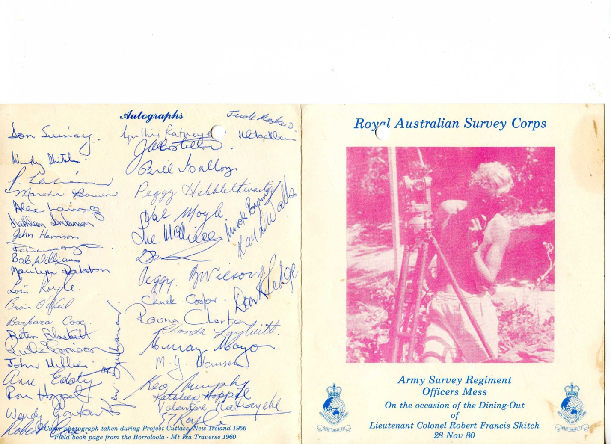
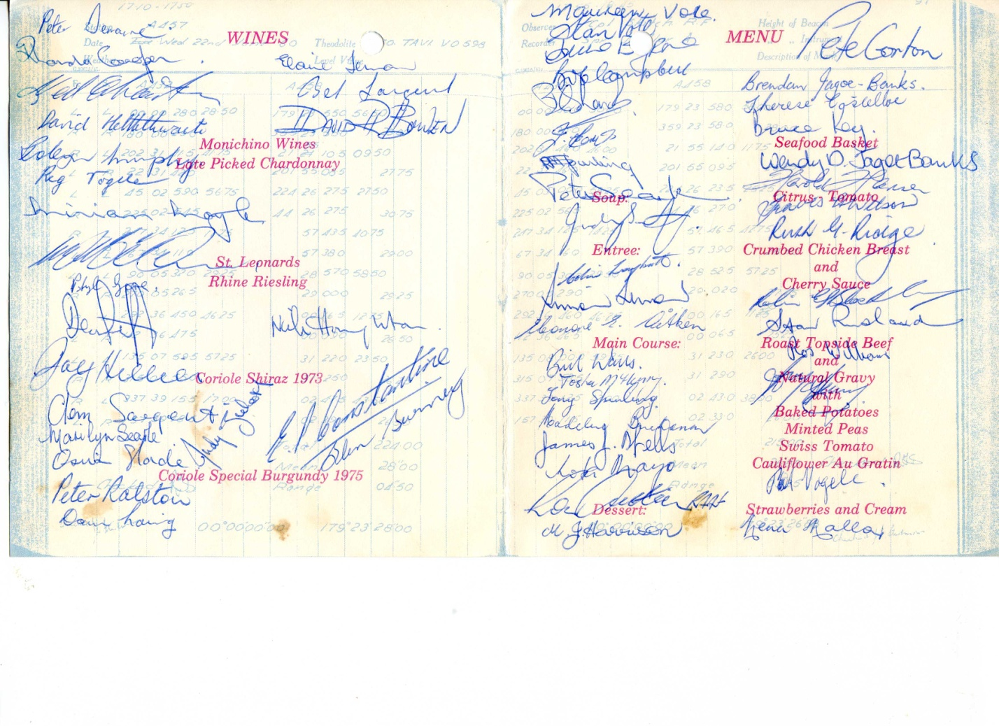
Attendance:
Colonel John Hillier
Mrs Joy Hillier
Lt Col Alex Laing
Lt Col David Hebblethwaite
Lt Col Don Ridge
Mrs Ruth Ridge
Lt Col Clem Sargent
Lt Col Peter Constantine
Lt Col David Hebblethwaite
Mrs Peggy Hebblethwaite
Mrs Dawn Laing
Maj Don Swiney
Mrs Glenys Swiney
Maj Peter Eddy
Mrs Anne Eddy
Maj Simon Lemon
Mrs Elaine Lemon
Maj David Bowen (US)
Mrs Marsha Bowen
Maj Robin Blackburn
Mrs Blackburn
Maj Kevin Murphy
Mrs Robyn Murphy
Maj Harry Hansen
Mrs Hansen
Mrs Phil Gore
Capt Colin Laybutt
Mrs Rhonda Laybutt
Capt John Harrison
Mrs Ruth Harrison
Capt Bob Williams
Mrs Ros Williams
Capt Tom Royle
Mrs Lois Royle
Capt Don Maskew
Mrs Jude Maskew
Capt Peter Searle RE
Mrs Marilyn Searle
Capt Stan Vote
Mrs Maureen Vote
Capt Mick Byrne
Mrs Byrne
Flt Lt Ron Aitken RAAF
Mrs Aitken
Capt Bruce Key
Mrs Key
Lt Peter Ralston
Mrs Marilyn Ralston
Lt Peter Blaskett
Lt Rob McHenry
Mrs Tosh McHenry
Lt Chuck Cooper
Mrs Rhonda Cooper
Lt Peter Demaine
Lt Oswin Slade
Lt Peter Gorton
Mrs Wendy Gorton
Lt Chuck Cooper
Mrs Rhonda Cooper
Lt Brendan Jago-Banks
Mrs Wendy D Jago-Banks
Mr Brian O’Neil
Mrs Sue O’Neill
Mr Robert Cox
Mrs Barbara Cox
Mr Tony Spurling
Mrs Spurling
Mr Ron Hoppel
Mrs Kathleen Hoppel
Mr Ken Buchanan
Mrs Madelin Buchanan
Dr Valentine Ratnayeke
Mrs Cynthia Ratnayeke
Mr J. Costelloe
Mrs Therese Costelloe
Mr Bill Malloy
Mrs Lena Malloy
Mr ...Moyle
Mrs Val Moyle
My Bill Walls (Artist)
Mrs Kay Walls
Ms Peggy Wilson
MS Roma Charten
Mr Murray Mayo
Mrs Nola Mayo
Mr Neil Charter
Mr Reg Togele
Ms Judy Ziel....
Ms Bet Larcent
Dr Nick Houghton
Mrs Trish Houghton
Mr Bob Campbell
Mr B. Richards
Mr J. Lew
Mr Peter Sea...
Mrs Judy ?
Mr James Spells
Mr MJ Ha.....
Mr Robin Wilson
Mr Tan Roland
Ms Pat Vogel
Resettlement Training
Having sufficient years of service I was entitles to resettlement training . This took two forms. I attended a two or three day seminar in Melbourne, somewhere in the city during which my group of retirees listened to talks on the vagaries of civilian life. I recall topics such as what to do with one’s retirement hand-out (DFRBDF), investment opportunities to be avoided, setting up in small business and the pitfalls, for example paying for ‘goodwill’ in buying a small business (unless there are legal contracts there is no such thing), public service life as opposed to military and even living and working without rank. I thought the advice given was very sound.
I also applied for and was given two or three weeks of ‘on job’ training in a chosen industry. Mine wasn’t that, in fact I applied to have my time with a computer training establishment run by the international computer organisation ICL. Their office was a five story building on Albert Park Road not far from St Kilda Junction. Conveniently the Army owned a small, almost run-down accommodation establishment on St Kilda Road only a few blocks from ICL. I am not clear of the purpose of the accommodation establishment; it seemed to provide for a motley collection of officers, perhaps twenty or so at the time I was there, mostly captains, maybe a major and me the senior at lieutenant colonel. I think they were mostly assigned to Logistics Command located in a substantial and quite new building also in St Kilda Road. I was allocated a room that might have been better described as a cell. Meals were outstandingly ordinary and I am not sure whether they were cooked in-situ or brought in from elsewhere. I kept much to myself during that three week period. Frank Thorogood in his generosity sent a car and driver to pick me up and bring me back to Bendigo for each weekend having delivered me to ICL each Monday morning.
I found the experience useful and learned a good deal about the computer world as it was then.
Severance
My date of resignation was to be 27 February 1981 giving me exactly twenty six years of military service, as John Hillier pointed out in his address, one third of a lifetime. Wendy and I remained in Bendigo until after that date but when it finally arrived I had to go through the discharge procedure at the Personnel Depot at Watsonia, Melbourne. I remember the day as being grey and unseasonably cold which matched my mood. It was a very impersonal process, signing a few forms; I think I had a brief interview with a major, perhaps the OIC of that section of the Personnel Depot. I opted to transfer to the Reserve of Officers (R of O) rather than take total discharge. That meant that I could be called back at any time, only likely in the event of a national emergency, or maybe if I wished to serve again for some reason. Neither circumstance was at all likely. I found the process somewhat deflating and I returned to Bendigo wondering what the future held. Part of the process was to have a full medical examination and I think that took place some days before. On return to Bendigo I avoided contact with any of my Army colleagues. We had our home to dispose of. The market was fairly flat, the minor boom in which we had bought our home had well and truly dissipated and although we had a few viewers it took a little while before we finally sold. I think we managed to recoup all we paid for it, overlooking the numerous improvements we effected.
School was to commence in about the first week of February and I am not sure now whether Robert and Chris restarted, I think not. Sarah had been long booked at Wendy’s old school – New England Girls School (NEGS) at Armidale, New South Wales and in early February Wendy took Sarah to Armidale driving the new Benz and Sarah was duly enrolled at NEGS. They met the Principal, Dr Milburn, bought the array of uniforms and requisites needed for a new girl. It was all very exciting and certainly at that stage Sarah was looking forward to the experience. All that was to change. Following enrolment Wendy continued on to Brisbane staying with the Whites for a number of days before flying back to Melbourne. Now driving the Fairlane I met Wendy at Tullamarine, probably called on the Moodys one last time and then back to Bendigo. At least that is roughly how I recall. I also recall that Sarah became very homesick at NEGS and even before Wendy’s return I had two or three very distressing phone calls from her – tearful ones. Eventually I had to remonstrate with her, that she would get over it and we would review her staying there after a year. She did and that was to her great credit.
I am not sure whether it was planned and arranged this way or whether it was just a fortuitous circumstance that Mrs Vera McCloy who had been our great help over our previous two years in Brisbane (we often called her ‘Dame Vera’ because she had wise words and a remedy for every situation) came to stay for two or three weeks in late January and February. Vera (I always called her Mrs McCloy) travelled by road coach to Bendigo and on arrival seemed no worse for the arduous trip. With Wendy away she immediately took over the responsibility of housework, looking after Robert, Chris and Lizzie and cooking some of the meals. Both Robert and Chris knew Dame Vera quite well but Liz was only a few weeks old when we left Brisbane. Nevertheless Liz responded well to her motherly attentions. We filled in time taking Vera to all the places of interest around Bendigo and even made a day trip to Ballarat to visit the Sovereign Hill colonial gold mining village. Vera finally departed, again by road coach a few days after Wendy arrived home.
Our home finally sold just before Wendy’s departure with Sarah but under the home loan system applying in Victoria at that time buyers are given up to ninety days to arrange loan finance. Fortunately that was not the case in selling our home, maybe a month until the final sealing of the contract As is always the case when one sells one’s home we seemed to be rolling in money at least for a while but we knew from Wendy’s look at the market in Brisbane we would have to find a good deal more in buying in Brisbane where the market had been much more buoyant than Bendigo. I had my DFRBDF (military) pension of which I had commuted as a lump sum about \$50,000 leaving an annual income of \$20,000 CPI adjusted annually but with all that we would most likely need a further bank loan to purchase into the Brisbane home market.
There is not much more I can say about our departure. Out furniture uplift finally took place and we departed for Brisbane with a pile of suitcases, Robert, Christopher and Elizabeth. Charles the cat went in a cat box with our suitcases. The Fairlane went by car transporter. Perhaps a few of our neighbours saw us off although I can’t recall anything specific. I guess this brings me to the end of my army years and my recollections of those twenty six years to become in Brisbane a Public Servant for a further nineteen years before final retirement. Shall I write about my years as a public servant; maybe.
APPENDICES
Appendix 1 - Letter to Val Lovejoy
The following is a letter I wrote to Val Lovejoy in 2003 following the publication of her ‘Mapmakers of Fortuna’.
Well, I have finally read from cover to cover ‘Mapmakers of Fortuna’. I had difficulty picking it up for quite a while – too much emotion tied to it! I didn’t want to read it in short snatches. I even resisted checking my own references. It needed a more considered reading and I have at last done that. I find no fault with it. I think it is a remarkable account; it truly reflects the ethos of the place and that is the most important thing. If there is the odd glitch, it doesn’t matter. Your coverage of technical aspects is excellent. I couldn’t really find fault with any of it although I wasn’t trying to do so.
There has been some debate on elitism’. Clem has been taken to task in his claim that Topo Sqn was the elite. I can forgive him for believing so – I was part of it as a sapper to sergeant. What he says is true. They did some remarkable things at that time, but perhaps that doesn’t make them elite. It is a word that is used too much these days, especially in relation to military units. I have included a recent Queensland Association Bulletin, (I put together each three months –one of the ways I spend my retirement) that contains my point of view.
I get lots of good little stories about some of the things we did – even going back to WW2 days. I may put them together one day into a compendium of some sort.
I had a great liking for the Litho Squadron fellows during my four years as CO. (I think I was the next longest in the appointment after Lindsay Lockwood). They even inducted me into the Litho Hall of Fame – a rare privilege for a CO! I guess the history doesn’t reflect it – and neither should it – but when I arrived at Fortuna I soon realised that I had walked into a morale disaster land. Frank’s opinion of Peter Constantine was influenced by his close association with him in Vietnam. Peter’s time at the Regiment was disastrous, both in terms of management and production. Map output in my first year there to July ’77 was less than 100. Despite Automap, by July 81 it had climbed to over 300. Of course Frank Thorogood took the credit for that as Frank always does. Technology aside, that improvement was in no small measure due to the taking of square pegs out of round holes and putting them back into round ones and generally trying to turn the place into one where people wanted to be – where they felt proud to be part of – had ownership of!
I was a little surprised at the comment on the rating of COs. I wonder where that came from. Maybe we were a pretty ordinary lot, but some I thought, like Bill Sprenger, were exceptional. Many had established their reputations elsewhere – in the field squadrons in the far flung places of this country, PNG, Indonesia and even Vietnam. Three things mattered at the Regiment: maximising map output; maintaining military skills both collectively and individually; and maintaining the morale – making it a place where people wanted to be – where they were happy to serve. All three are very interrelated. To be realistic, many of the jobs on the map production process can be pretty boring and to maintain overall pride in what eventually comes off the printing press is important.
But it was a great experience; of course not just the Regiment but the Corps as a whole – the field squadrons, the school and for me, the Detachment in Vietnam. I was the first there and that experience was unique although like many, Vietnam lingers as an albatross around my neck. While my 19 years in the Queensland Public Service was enjoyable enough, my 26 years in the Corps gives meaning to my life (apart from family).
I read the Last Hurrah with a heavy heart. There is something inevitable about it all. We know the outcome before we even start but so often during that last 10 years hopes were high – almost up to the last month. From afar I could see what was happening – the pressures were being exerted. Economic rationalism was like a creeping fog, stifling initiative. The remarkable National Mapping Council was being torn apart by pariahs from the States and the private sector, finally replaced by the inept IGCSM. It all resulted in the worst possible outcome (this statement was made to me by an RAE major, the first engineer officer to command the Topo Survey Squadron here in Brisbane). There is no relationship let alone integration between the Squadron and Fortuna (whatever crazy name they adopt these days!) They simply don’t know each other – can’t even talk to each other.
But Val – you have done a truly remarkable job in putting it all together. The Regiment and the Corps lives on in all our hearts. Maybe I will pick it up again for a further re-read – maybe not. I value it and the work you put into it. I don’t think it could have been written by any of us who served there.
Best wishes – good luck and everything else with your current commitment – the Chinese community of Bendigo. It is time that story was written and should it be published I look forward to it.
Appendix 2 - Fortuna – Early Days

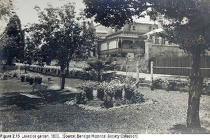
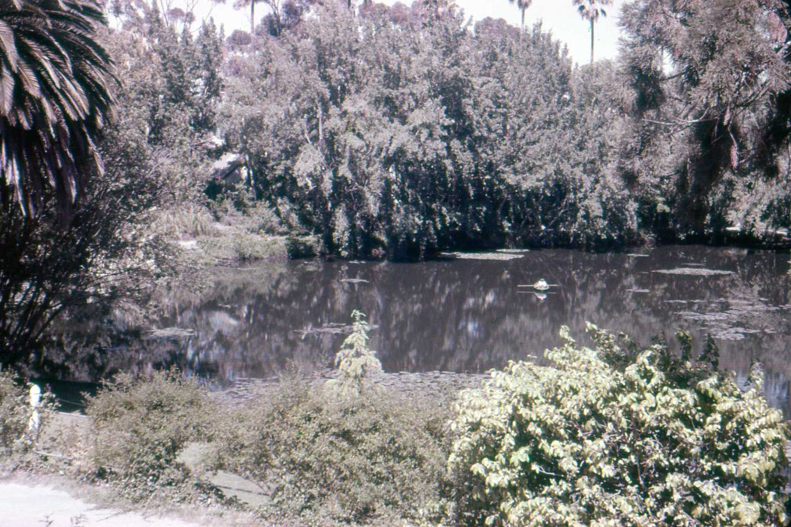
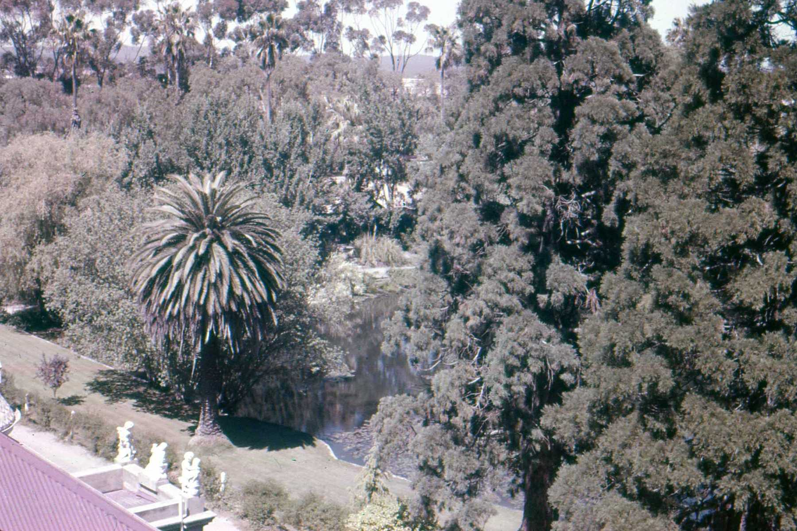
Appendix 3 Fortuna – After restoration in circa 1995
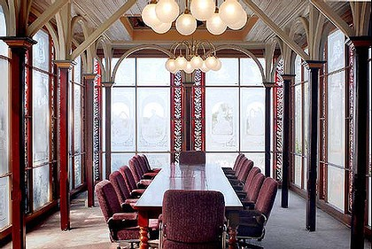
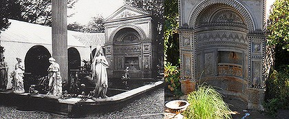
Appendix 4 - ‘Lansell’s Fortuna’
The publication below with the title ‘Lansell’s Fortuna’ was created for the commencement of the regular tours of Fortuna Villa described in the forgoing text (Open Days and their Successor – page 82). I compiled it from whatever publications I had at the time dealing with George Lansell Esquire, his life and times. It contains photos of the salient features of the Villa, inside and out, taken in its previous ‘blue-grey’ colours before the repaint. The publication shows the route of the tour against an outline of the building and the numbered comments that draw the visitor’s attention to specific points of interest. The tour conductor, usually a corporal or sapper from the duty staff, could read the comment (some indeed memorised the comments en-route adding their own flourish) or alternatively used the recorded version contained on the voice tape played progressively on the shoulder carried tape deck. In subsequent years after my departure Lansell’s Fortuna was expanded, unnecessarily I thought, and the cover changes to a more recent photo of the front entrance. The historic entrance plan elevation I chose to use finished up on an internal page. Nevertheless, the final version or at least the last version I have seen and of which I retain a copy contains many beautiful photos.
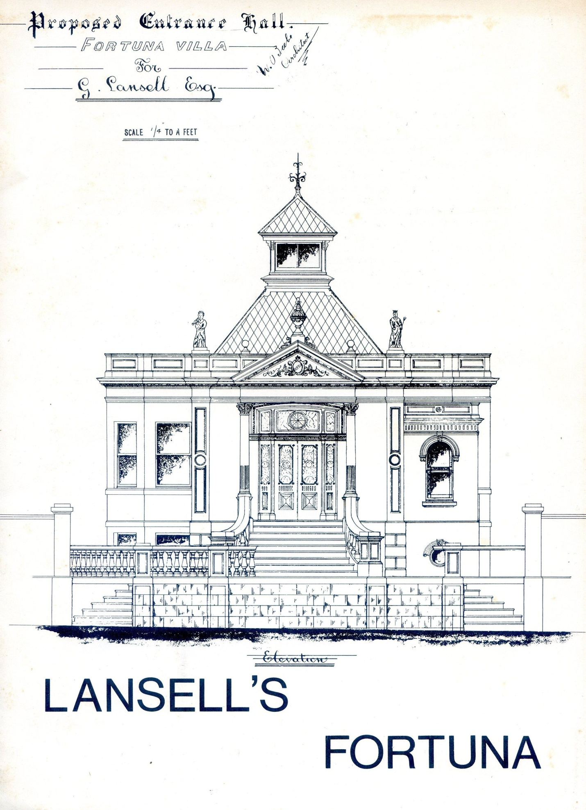
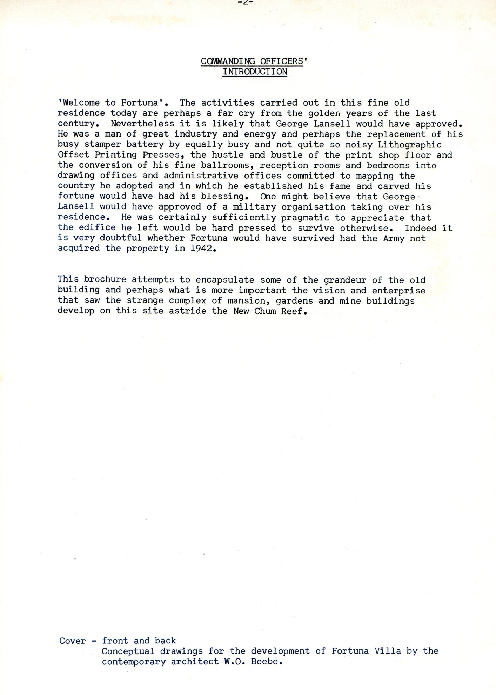
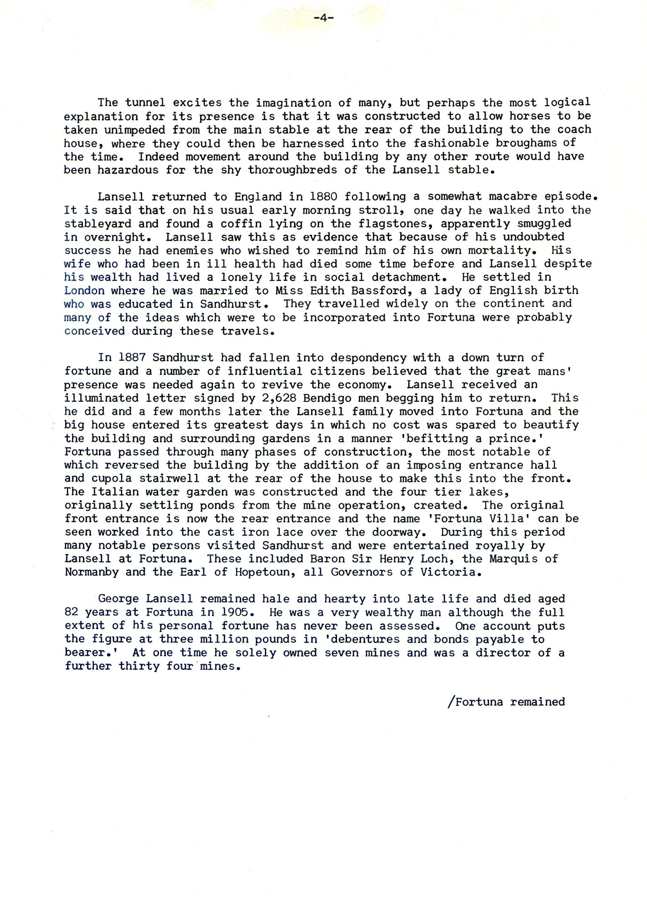
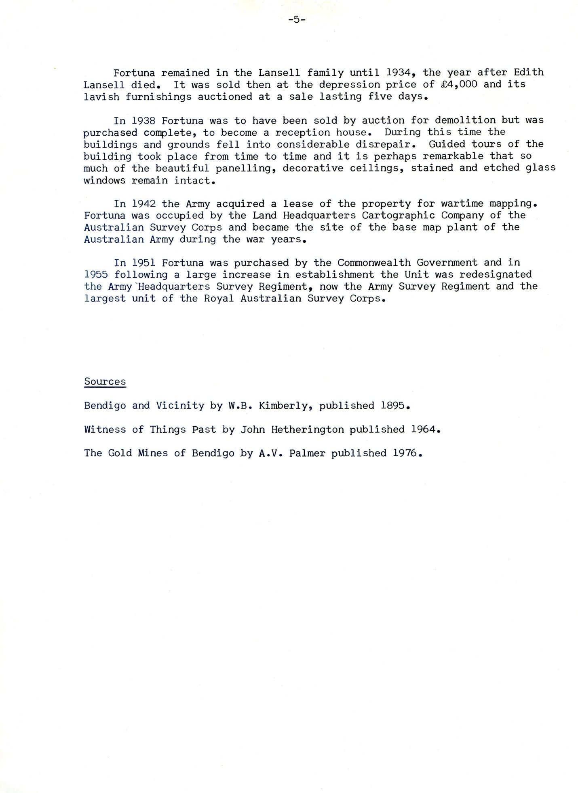
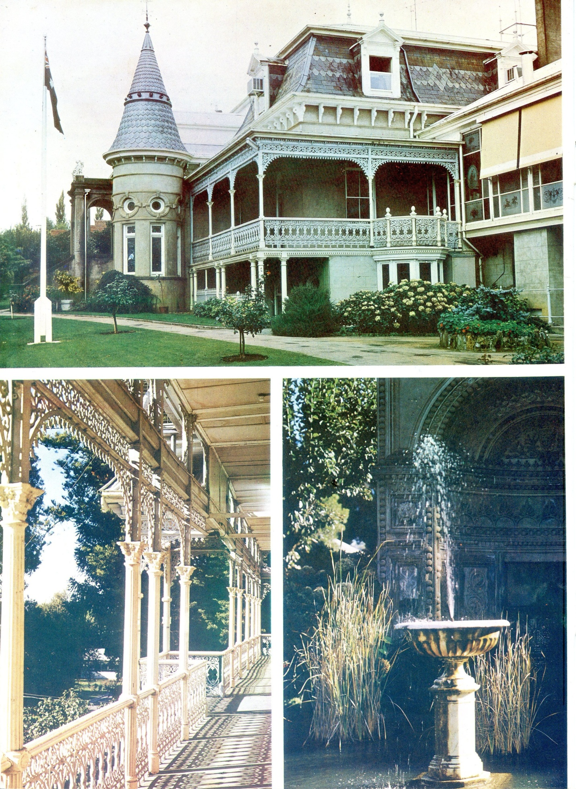
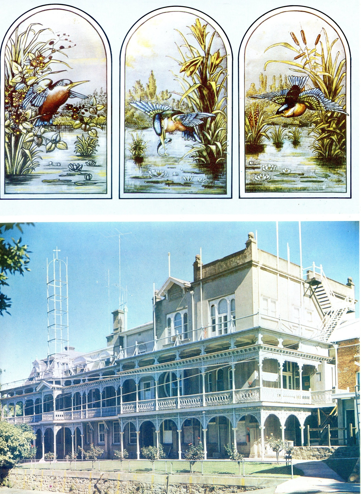
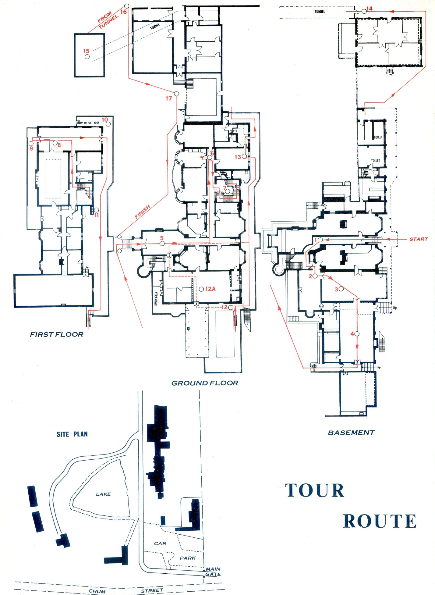
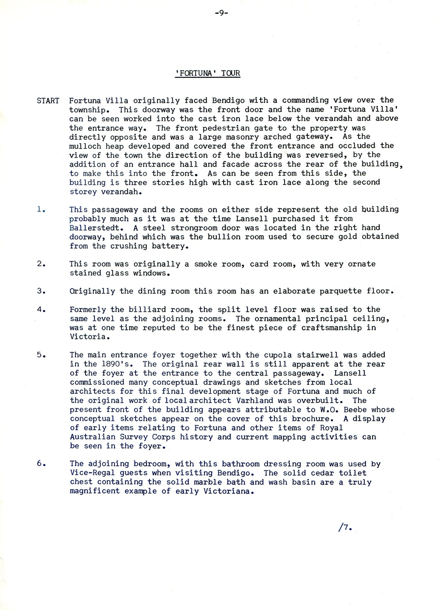
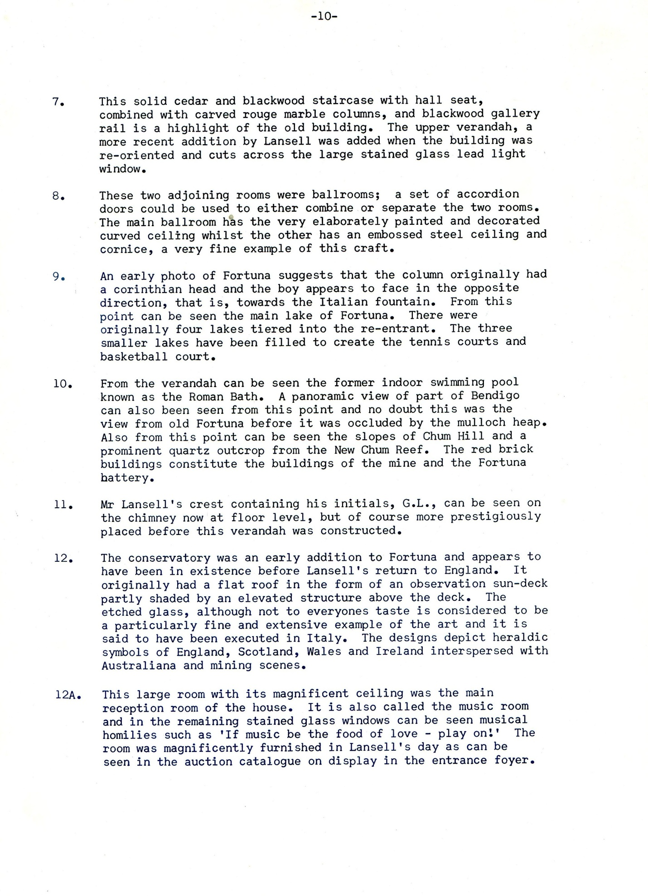
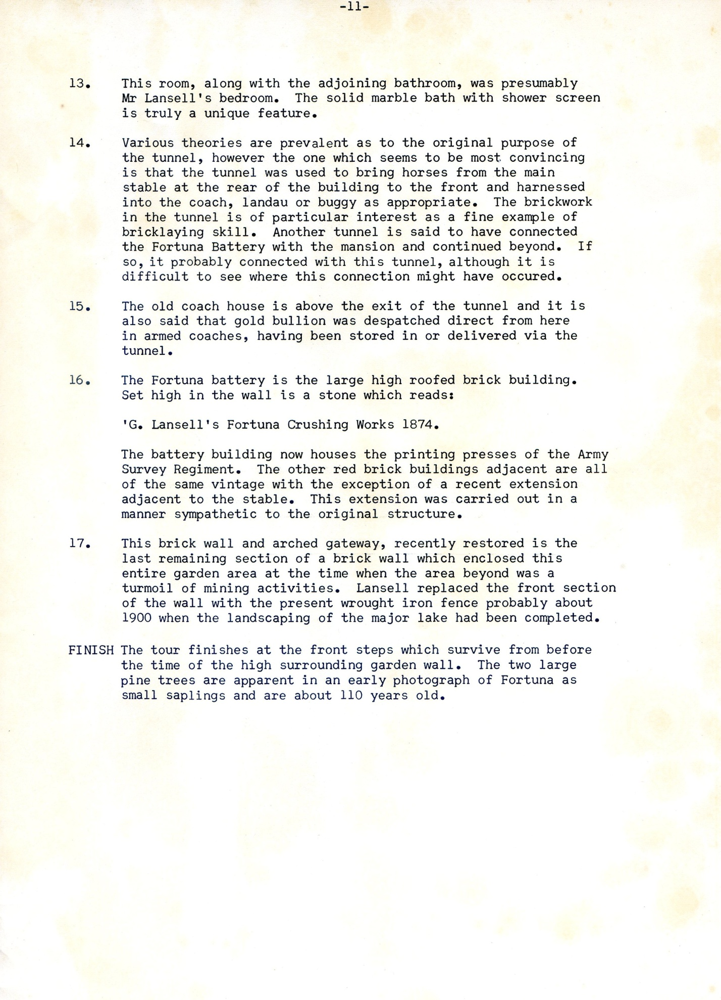
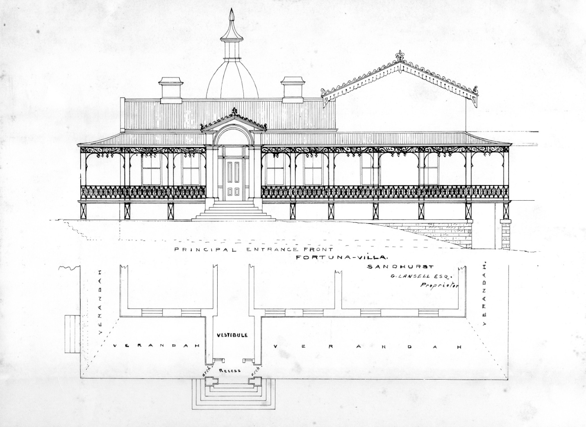